<!doctype html>
<html lang="zh-CN">
<head>
  <meta charset="utf-8">
  <meta name="viewport" content="width=device-width, initial-scale=1">
  <title>天文论文日报 2026-07-08</title>
  <style>
    :root {
      color-scheme: light;
      --bg: #eef3fb;
      --panel: #ffffff;
      --panel-soft: #f8fbff;
      --text: #172033;
      --muted: #65758b;
      --line: #dce6f2;
      --blue: #2563eb;
      --blue-dark: #1e40af;
      --cyan: #0891b2;
      --amber: #d97706;
      --shadow: 0 18px 50px rgba(30, 64, 175, 0.12);
    }
    * { box-sizing: border-box; }
    html { scroll-behavior: smooth; }
    body {
      margin: 0;
      background:
        radial-gradient(circle at top left, rgba(37, 99, 235, 0.16), transparent 32rem),
        radial-gradient(circle at top right, rgba(8, 145, 178, 0.12), transparent 28rem),
        var(--bg);
      color: var(--text);
      font-family: Inter, ui-sans-serif, system-ui, -apple-system, BlinkMacSystemFont, "Segoe UI", "Noto Sans CJK SC", "Microsoft YaHei", sans-serif;
      line-height: 1.75;
    }
    a { color: var(--blue); text-decoration-thickness: 0.08em; text-underline-offset: 0.18em; word-break: break-word; }
    a:hover { color: var(--blue-dark); }
    .page { max-width: 1080px; margin: 0 auto; padding: 32px 18px 56px; }
    .hero {
      position: relative;
      overflow: hidden;
      padding: 34px;
      border-radius: 28px;
      background: linear-gradient(135deg, #12213f 0%, #1d4ed8 52%, #0891b2 100%);
      color: #fff;
      box-shadow: var(--shadow);
    }
    .hero::after {
      content: "";
      position: absolute;
      inset: auto -80px -150px auto;
      width: 320px;
      height: 320px;
      border-radius: 999px;
      background: rgba(255, 255, 255, 0.14);
    }
    .report-nav { display: flex; justify-content: space-between; gap: 1rem; margin: 18px 0 0; }
    .report-nav a,
    .report-nav span { flex: 1; padding: 0.85rem 1rem; border: 1px solid var(--line); border-radius: 16px; background: rgba(255, 255, 255, 0.86); box-shadow: 0 10px 24px rgba(30, 64, 175, 0.08); text-decoration: none; font-weight: 700; }
    .report-nav .home { text-align: center; }
    .report-nav .next { text-align: right; }
    .report-nav span { color: var(--muted); background: rgba(248, 251, 255, 0.78); }
    .eyebrow { margin: 0 0 10px; color: rgba(255, 255, 255, 0.78); font-size: 0.95rem; letter-spacing: 0.08em; text-transform: uppercase; }
    h1 { position: relative; margin: 0; max-width: 760px; font-size: clamp(2rem, 5vw, 3.2rem); line-height: 1.15; }
    .subtitle { position: relative; max-width: 760px; margin: 16px 0 0; color: rgba(255, 255, 255, 0.86); font-size: 1.05rem; }
    main {
      margin-top: 22px;
      padding: 28px;
      border: 1px solid rgba(220, 230, 242, 0.9);
      border-radius: 24px;
      background: rgba(255, 255, 255, 0.92);
      box-shadow: var(--shadow);
      backdrop-filter: blur(10px);
    }
    main > p:first-child,
    main > p:nth-child(2) { color: var(--muted); }
    h2 {
      margin: 2.4rem 0 1rem;
      padding: 0.8rem 1rem;
      border: 1px solid var(--line);
      border-left: 6px solid var(--blue);
      border-radius: 16px;
      background: linear-gradient(90deg, #eff6ff, #ffffff);
      font-size: 1.45rem;
      line-height: 1.35;
    }
    h2:first-child { margin-top: 0; }
    h3 {
      margin: 2rem 0 1rem;
      padding: 1.15rem 1.25rem;
      border: 1px solid #bfdbfe;
      border-radius: 18px;
      background: linear-gradient(135deg, #f8fbff, #eef6ff);
      box-shadow: 0 10px 24px rgba(37, 99, 235, 0.08);
      font-size: 1.18rem;
      line-height: 1.45;
    }
    h4 { margin: 1.25rem 0 0.5rem; color: #0f3b7a; font-size: 1.02rem; }
    ul, ol { padding-left: 1.35rem; }
    li { margin: 0.3rem 0; }
    main > ul {
      padding: 1rem 1.2rem 1rem 2.2rem;
      border: 1px solid var(--line);
      border-radius: 14px;
      background: var(--panel-soft);
    }
    strong { color: #0f2f5f; }
    blockquote {
      margin: 1rem 0;
      padding: 0.9rem 1rem;
      border: 1px solid #fed7aa;
      border-left: 5px solid #f97316;
      border-radius: 12px;
      background: #fff7ed;
      color: #7c2d12;
    }
    code { background: #eaf1fb; padding: 0.12rem 0.3rem; border-radius: 6px; }
    table { width: 100%; border-collapse: collapse; margin: 1rem 0; overflow: hidden; border-radius: 12px; }
    th, td { padding: 0.75rem; border: 1px solid var(--line); vertical-align: top; }
    th { background: #eff6ff; }
    mjx-container { overflow-x: auto; overflow-y: hidden; max-width: 100%; padding: 0.25rem 0; }
    .math-display { margin: 1rem 0; overflow-x: auto; padding: 0.75rem 1rem; border: 1px solid #dbeafe; border-radius: 14px; background: #f8fbff; }
    main img { max-width: 100%; height: auto; display: block; margin: 1rem auto; border: 1px solid var(--line); border-radius: 14px; box-shadow: 0 10px 24px rgba(15, 47, 95, 0.12); }
    details.paper-detail {
      margin: 1.25rem 0 1.9rem;
      border: 1px solid #b9d7ff;
      border-radius: 18px;
      background: linear-gradient(180deg, #fbfdff, #f3f8ff);
      box-shadow: 0 10px 24px rgba(37, 99, 235, 0.08);
      overflow: hidden;
    }
    details.paper-detail[open] { border-color: #60a5fa; }
    details.paper-detail > summary {
      cursor: pointer;
      list-style: none;
      padding: 1rem 1.15rem;
      background: linear-gradient(90deg, #dbeafe, #ecfeff);
      color: #173b73;
      font-weight: 800;
    }
    details.paper-detail > summary::-webkit-details-marker { display: none; }
    details.paper-detail summary::before { content: "展开"; display: inline-block; margin-right: 0.65rem; padding: 0.12rem 0.5rem; border-radius: 999px; background: #2563eb; color: #fff; font-size: 0.78rem; }
    details.paper-detail[open] summary::before { content: "收起"; background: #0891b2; }
    details.paper-detail > *:not(summary) { margin-left: 1.15rem; margin-right: 1.15rem; }
    details.paper-detail > :last-child { margin-bottom: 1.2rem; }
    details.paper-detail h4 {
      margin-top: 1.15rem;
      padding-top: 1rem;
      border-top: 1px dashed #bfdbfe;
    }
    details.paper-subdetail {
      margin: 1rem 1.15rem 1.35rem;
      border: 1px solid #d8e8ff;
      border-radius: 14px;
      background: rgba(255, 255, 255, 0.72);
      overflow: hidden;
    }
    details.paper-subdetail[open] { border-color: #93c5fd; }
    details.paper-subdetail > summary {
      cursor: pointer;
      list-style: none;
      padding: 0.75rem 0.9rem;
      background: #f1f7ff;
      color: #234d83;
      font-weight: 750;
    }
    details.paper-subdetail > summary::-webkit-details-marker { display: none; }
    details.paper-detail details.paper-subdetail > summary::before { content: "展开"; display: inline-block; margin-right: 0.55rem; padding: 0.08rem 0.42rem; border-radius: 999px; background: #64748b; color: #fff; font-size: 0.74rem; }
    details.paper-detail details.paper-subdetail[open] > summary::before { content: "收起"; background: #2563eb; }
    details.paper-subdetail > *:not(summary) { margin-left: 0.95rem; margin-right: 0.95rem; }
    details.paper-subdetail > :last-child { margin-bottom: 1rem; }
    @media (max-width: 720px) {
      .page { padding: 18px 10px 36px; }
      .hero { padding: 24px 20px; border-radius: 22px; }
      .report-nav { flex-direction: column; }
      .report-nav .home { text-align: left; }
      .report-nav .next { text-align: left; }
      main { padding: 18px 14px; border-radius: 20px; }
      h2 { font-size: 1.25rem; }
      h3 { font-size: 1.05rem; }
    }
  </style>
  <script>
    window.MathJax = {
      tex: { inlineMath: [['$', '$'], ['\\(', '\\)']], displayMath: [['$$', '$$'], ['\\[', '\\]']] },
      svg: { fontCache: 'global' }
    };
  </script>
  <script defer src="https://cdn.jsdelivr.net/npm/mathjax@3/es5/tex-svg.js"></script>
</head>
<body>
  <div class="page">
    <header class="hero">
      <p class="eyebrow">Astro Daily</p>
      <h1>天文论文日报 2026-07-08</h1>
      <p class="subtitle">面向天文与物理专业读者的每日论文筛选、中文解读与延伸阅读。</p>
    </header>
    <!-- REPORT_NAV_START -->
    <nav class="report-nav" aria-label="日报前后导航" data-report-date="2026-07-08">
      <a class="previous" href="2026-07-07.html">← 上一期：2026-07-07</a>
      <a class="home" href="../index.html">⌂ 返回主页</a>
      <span class="next">没有更新的报告 →</span>
    </nav>
    <!-- REPORT_NAV_END -->
    <main>
      <p>生成时间：2026-07-08T11:28:59+08:00<br />
今日保留论文数：11<br />
内容构成：今日新文 11 篇；补充推荐 0 篇；经典旧文精读 0 篇</p>
<h2 id="_1">高能天体物理重点</h2>
<h3 id="1-extreme-particle-acceleration-in-x-ray-binaries-is-linked-to-their-jets">1. Extreme particle acceleration in X-ray binaries is linked to their jets</h3>
<ul>
<li>来源：arXiv / astro-ph.HE</li>
<li>链接：https://arxiv.org/abs/2607.06360v1</li>
<li>作者：Laura Olivera-Nieto, Fraser J. Cowie, Sera Markoff, Rob Fender, Justine Crook-Mansour</li>
<li>评分：novelty 8/10，importance 8/10，relevance 10/10，final 9.70/10</li>
<li>推荐理由：High-priority gamma-ray/cosmic-ray paper: links &gt;100 TeV emission from black-hole X-ray binaries to jets, uses LHAASO/HGPS associations, and addresses PeV particle acceleration in Galactic sources.</li>
</ul>
<p><strong>中文题目</strong>：黑洞 X 射线双星中的极端粒子加速与喷流有关</p>
<p><strong>做了什么</strong>：这篇文章把已知黑洞 X 射线双星样本与射电、硬态 X 射线和甚高能伽马射线信息合并，检验哪些系统更可能在 \(>100\,\mathrm{TeV}\) 能段发亮。作者发现，伽马射线亮度与黑洞质量、伴星质量和轨道倾角没有明显关系，反而与射电亮度和硬态 X 射线亮度呈较强秩相关；同时，高爆发占空比可能是成为 \(>100\,\mathrm{TeV}\) 伽马源的必要条件之一。由于已探测样本很小，相关性本身还不能称为统计显著，但在 LHAASO 未覆盖天区，射电探测到的黑洞 X 射线双星与未关联伽马源的位置重合具有 \(>3\sigma\) 证据。核心结论是：真正区分这些 PeV 粒子加速候选体的，可能不是紧致星或伴星的基本参数，而是喷流是否强、是否频繁工作。</p>
<p><strong>为什么重要</strong>：如果黑洞 X 射线双星能把粒子加速到 PeV 附近，它们就可能是银河系宇宙线“膝”区能量预算的一部分。本文的重要性在于，它没有只盯着少数已知伽马射线双星，而是用整个黑洞 X 射线双星族群做统计比较，试图找出可预言的观测判据：射电亮、高硬态 X 射线亮、高爆发占空比。这个判据直接指向喷流，而不是单纯的吸积率、黑洞质量或几何倾角。</p>
<p><strong>理论 / 观测 / 仪器方法价值</strong>：对理论而言，本文支持喷流内加速或喷流—星际介质相互作用加速的图像，并给 PeVatron 模型提供了可检验的族群约束。对观测而言，它给 CTA、LHAASO、SWGO、H.E.S.S. 后续巡天和多波段触发提出了优先级：优先盯射电明亮、硬态活跃且爆发占空比高的黑洞 X 射线双星。对方法而言，文章展示了如何把不完整的双星目录、射电/X 射线状态信息和未关联伽马源目录结合起来，用秩相关和空间交叉匹配寻找族群级信号。</p>
<p><strong>为什么应该关注</strong>：你应该关注它，因为它把“某几个微类星体能不能发 TeV/PeV 光子”推进到“哪类黑洞 X 射线双星系统最可能是银河 PeVatron”的问题。即使当前显著性还受限于小样本，结论已经给出了一个清楚的可证伪方向：如果未来更多 \(>100\,\mathrm{TeV}\) 探测仍集中在射电亮、高占空比系统附近，喷流相关的极端加速图像会明显增强；若新增源大量来自射电暗、低占空比系统，则本文的解释会被削弱。</p>
<details class="paper-detail">
<summary>展开详细解读：文章讲解、背景、理论、重点章节、图表与相关工作</summary>
<h4 id="_2">文章详细讲解</h4>
<p>科学问题：黑洞 X 射线双星是否能作为银河系 PeV 宇宙线源，关键不只是“有没有几个源被探测到”，而是“什么物理条件使某些系统能在 \(>100\,\mathrm{TeV}\) 发亮”。过去对微类星体和黑洞 X 射线双星的高能研究常集中在单个源，例如喷流、吸积态转变或周围介质相互作用。但如果要判断它们是否是一个源族群，就必须比较整个已知黑洞 X 射线双星样本，并问伽马射线亮源在质量、伴星、倾角、射电、X 射线状态、爆发占空比等参数上是否有系统差异。</p>
<p>作者怎么做：本文在已有黑洞 X 射线双星目录基础上，补充射电探测信息、硬态 X 射线信息、伽马射线探测或上限，以及爆发占空比等时间域指标。然后作者比较 \(>100\,\mathrm{TeV}\) 伽马射线亮度与多个系统参数之间的秩相关，避免强依赖具体函数形式。除此之外，他们还把黑洞 X 射线双星在天球上的位置与 1LHAASO 和 1HGPS 目录中的未关联伽马射线源位置进行空间统计比较，特别注意 LHAASO 覆盖和未覆盖区域的差异，以及“全部黑洞 X 射线双星”和“射电探测到的黑洞 X 射线双星”两类样本的区别。</p>
<p>关键结果：文章报告没有发现 \(>100\,\mathrm{TeV}\) 伽马射线亮度与紧致天体质量、伴星质量或轨道倾角之间的明显相关。这一点很有信息量，因为如果几何投影或黑洞质量是主导因素，相关性应首先出现在这些参数中。相反，伽马射线亮度与射电亮度、硬态 X 射线亮度呈较强秩相关，暗示与喷流功率和硬态吸积流活动相关。作者还指出，高爆发占空比，特别是大于约 \(20\%\) 的占空比，可能是 \(>100\,\mathrm{TeV}\) 伽马射线明亮的必要条件。空间匹配方面，在 LHAASO 未覆盖天区，射电探测到的黑洞 X 射线双星与未关联伽马源接近的证据达到 \(>3\sigma\)，而这一证据在包含射电暗系统时不显著。</p>
<p>局限和下一步：最大限制是伽马射线探测到的黑洞 X 射线双星数量仍然很少，因此亮度—亮度相关虽然强，但不能被过度解读为稳健总体规律。样本还受到巡天覆盖、源拥挤、距离不确定、爆发历史不完整、射电观测灵敏度不均匀和伽马射线源关联半径等系统误差影响。下一步需要更完整的射电监测、更均匀的 X 射线状态分类、更深的 TeV/PeV 巡天，以及对候选空间重合源的逐个多波段建模。特别关键的是，要区分喷流内部加速、喷流终端激波加速、双星周围遗迹泡加速和附近无关脉冲星风云/超新星遗迹污染。</p>
<h4 id="_3">关键结果是怎么做出来的</h4>
<p>本文的证据链从样本构建开始。作者以已有黑洞 X 射线双星目录为底表，并为每个系统补充射电信息、硬态 X 射线亮度、伽马射线探测状态、紧致星质量、伴星质量、倾角和爆发占空比。这里的关键不是单一源的光谱拟合，而是族群比较：哪些黑洞 X 射线双星在 \(>100\,\mathrm{TeV}\) 有对应伽马辐射，哪些没有，以及它们在低能波段和时间域行为上是否系统不同。</p>
<p>第一组结果来自秩相关检验。作者比较 \(>100\,\mathrm{TeV}\) 伽马射线亮度与黑洞质量、伴星质量、倾角等“系统固有参数”的相关性，未发现明显信号。随后对射电亮度和硬态 X 射线亮度做同样检验，发现相关性更强。由于伽马射线探测源数量有限，这些相关性不能被宣布为严格显著，但其方向性很清楚：与喷流和硬态活动相关的观测量比双星几何或质量更能区分伽马射线亮源。</p>
<p>第二组结果是爆发占空比。作者把占空比定义为系统处于爆发态的时间比例，并发现 \(>100\,\mathrm{TeV}\) 伽马射线亮源倾向于具有较高占空比，文摘中特别提到 \(>20\%\) 可能是一个经验门槛。这个结论的物理含义是，极端粒子加速可能需要长期、反复或持续的能量注入，而不是一次短暂爆发即可建立可探测的 PeV 粒子群。统计上它更像必要条件提示，而不是充分条件，因为高占空比系统也可能因距离、环境密度或喷流方向而不亮。</p>
<p>第三组结果来自空间交叉匹配。作者把黑洞 X 射线双星位置与 1LHAASO 和 1HGPS 未关联伽马源比较，并用随机化或等效背景期望评估靠近概率。重要细节是，显著性出现在 LHAASO 未覆盖区域，并且只在射电探测到的黑洞 X 射线双星子样本中达到 \(>3\sigma\)。这说明结论并非“所有黑洞 X 射线双星都容易靠近未关联伽马源”，而是“射电明亮的黑洞 X 射线双星作为一个子类更可能与未关联 TeV 源空间接近”。</p>
<p>支撑结论的图表应包括：伽马射线亮度对射电亮度的散点图、伽马射线亮度对硬态 X 射线亮度的散点图、无相关性的质量/倾角对照图、占空比分布比较图，以及空间匹配的最近邻距离或交叉相关显著性图。稳健性检验应重点看样本选择是否改变结果，例如只取有距离估计的源、只取射电探测源、排除 LHAASO 覆盖区、改变匹配角半径、或采用不同未关联源目录。主要系统误差来自距离误差导致的亮度误差、非同时多波段观测导致的状态混合、伽马源角分辨率和源混淆，以及黑洞 X 射线双星爆发历史记录不完整。</p>
<details class="paper-subdetail">
<summary>展开背景、理论、公式、模型、章节和图表导读</summary>
<h4 id="_4">背景知识</h4>
<p>黑洞 X 射线双星由一颗恒星质量黑洞和一颗伴星组成，伴星物质经洛希瓣溢出或星风俘获进入吸积流。它们最著名的高能现象包括 X 射线爆发、硬态/软态转变、准周期振荡和相对论性射电喷流。硬态通常伴随平稳、紧凑喷流，软态则常压制射电喷流，而状态转变期间可能出现离散抛射。</p>
<p>历史上，X 射线双星作为高能粒子加速器的想法并不新。“微类星体”概念来自它们与活动星系核的尺度相似性：吸积盘、喷流、非热电子和强时变辐射都存在，只是中央黑洞质量小很多、演化时间尺度短很多。若喷流能加速质子或重核到 PeV，黑洞 X 射线双星就可能参与解释银河宇宙线在 \(\mathrm{PeV}\) 附近的能谱结构。</p>
<p>观测背景在近年发生了变化。LHAASO、HAWC、H.E.S.S. 等仪器不断发现 \(\mathrm{TeV}\) 到 \(\mathrm{PeV}\) 的银河伽马源，其中不少仍未关联。与此同时，射电巡天、X 射线全天监测和历史爆发目录使黑洞 X 射线双星族群信息更完整。因此，现在可以从“单源案例研究”转向“族群统计筛选”，用未关联伽马源反向寻找可能的双星 PeVatron。</p>
<p>这个领域常见误区之一是把空间重合直接等同于物理关联。银河面源拥挤，脉冲星风云、超新星遗迹、恒星形成区和双星系统都可能出现在相近方向。另一个误区是把射电亮度简单当作瞬时喷流功率；实际上射电观测可能非同时，受自吸收、距离、喷流方向、环境吸收和爆发阶段影响。还有一个误区是认为黑洞质量越大就越容易达到 PeV 能量；在恒星质量黑洞范围内，喷流磁场、功率、寿命和环境往往更关键。</p>
<h4 id="_5">基础理论 / 方法脉络</h4>
<p>从物理图像看，若黑洞 X 射线双星能产生 \(>100\,\mathrm{TeV}\) 伽马射线，通常需要非热粒子被加速到至少 \(\mathrm{PeV}\) 量级。伽马射线可以来自强子过程，例如相对论性质子与气体碰撞产生 \(\pi^0\) 后衰变为光子；也可以来自轻子过程，例如高能电子逆康普顿散射软光子。两者都需要高效加速，但对环境密度、辐射场、磁场和冷却时间的依赖不同。</p>
<p>喷流相关图像的核心是，射电辐射通常追踪同步辐射电子和喷流活动。硬态 X 射线则常被看作热/非热康普顿化吸积流和喷流基底活动的指标。若 \(>100\,\mathrm{TeV}\) 伽马射线亮度与射电和硬态 X 射线亮度相关，而与质量、伴星质量或倾角无关，就说明能量注入过程比静态系统参数更重要。</p>
<p>本文使用的关键量包括伽马射线亮度、射电亮度、硬态 X 射线亮度、爆发占空比、空间角距离和未关联伽马源的目录位置。亮度依赖距离，因此距离误差会把通量误差放大为亮度误差。占空比依赖长期监测完整性，因此历史观测稀疏的源可能被低估。空间匹配依赖伽马源定位误差和银河面源密度，因此必须与随机天空或同纬度背景比较，而不能只数肉眼重合。</p>
<p>常见退化包括：射电亮可能是喷流功率高，也可能是距离近、观测处于爆发峰值或有多普勒增强；伽马射线亮可能来自双星喷流，也可能来自同方向的脉冲星风云或超新星遗迹；硬态 X 射线亮可能代表喷流友好的吸积态，也可能只是观测采样偏向亮爆发。本文的价值正是在这些退化下寻找族群层面的统计趋势，而不是声称每个空间重合都已经完成源认证。</p>
<h4 id="_6">公式与推导</h4>
<p>第一步是把观测通量转换为亮度。若源距离为 \(d\)，能段积分能量通量为 \(F_\gamma\)，各向同性等效伽马射线亮度可写为</p>
<div class="math-display">\[L_\gamma = 4\pi d^2 F_\gamma .\]</div>
<p>这里 \(L_\gamma\) 是 \(>100\,\mathrm{TeV}\) 能段的等效亮度，\(F_\gamma\) 是观测到的能量通量。该式假设辐射各向同性；若喷流有强束射，\(L_\gamma\) 应理解为等效量而非真实总功率。</p>
<p>第二步是用谱模型连接光子计数和能量通量。若微分光子通量近似为幂律</p>
<div class="math-display">\[\phi(E)=\phi_0\left(\frac{E}{E_0}\right)^{-\Gamma},\]</div>
<p>则阈值 \(E_{\min}\) 以上的能量通量为</p>
<div class="math-display">\[F_\gamma(>E_{\min})=\int_{E_{\min}}^{\infty} E\,\phi(E)\,dE = \frac{\phi_0 E_0^{\Gamma} E_{\min}^{2-\Gamma}}{\Gamma-2},\quad \Gamma>2 .\]</div>
<p>这里 \(\Gamma\) 是光子谱指数，\(\phi_0\) 是归一化，\(E_0\) 是枢轴能量。该式说明高能亮度对谱指数和阈值选择很敏感。</p>
<p>第三步是把射电通量密度变成单色亮度。若频率为 \(\nu\)，通量密度为 \(S_\nu\)，则</p>
<div class="math-display">\[L_\nu = 4\pi d^2 S_\nu,\qquad \nu L_\nu = 4\pi d^2 \nu S_\nu .\]</div>
<p>本文寻找的是 \(L_\gamma\) 与 \(L_\nu\) 或 \(\nu L_\nu\) 的族群关系。由于两者都含有 \(d^2\)，距离误差会引入共同相关，因此读者需要检查是否做了距离不确定性或通量空间的稳健性测试。</p>
<p>第四步是用秩相关避免指定线性关系。Spearman 系数可写作</p>
<div class="math-display">\[\rho_s = 1 - \frac{6\sum_i \Delta R_i^2}{N(N^2-1)},\]</div>
<p>其中 \(N\) 是样本数，\(\Delta R_i\) 是第 \(i\) 个源在两个变量排序名次上的差。若 \(\rho_s\) 接近 \(1\)，说明两个量单调同增；若接近 \(0\)，则没有明显单调关系。小样本时应使用置换检验而不是只依赖渐近公式。</p>
<p>第五步是定义爆发占空比。若长期监测总时长为 \(T_{\rm obs}\)，源处于爆发态的累计时间为 \(T_{\rm out}\)，则</p>
<div class="math-display">\[D = \frac{T_{\rm out}}{T_{\rm obs}} .\]</div>
<p>本文关心高 \(D\) 是否与 \(>100\,\mathrm{TeV}\) 伽马射线明亮有关。物理上，\(D\) 近似衡量长期能量注入的时间填充因子，但实际会受监测覆盖和爆发判据影响。</p>
<p>第六步是估计空间重合的随机期望。若某类黑洞 X 射线双星数为 \(N_{\rm XRB}\)，未关联伽马源数为 \(N_\gamma\)，匹配半径为 \(\theta\)，有效搜索面积为 \(\Omega\)，则随机重合数近似为</p>
<div class="math-display">\[\lambda \simeq N_{\rm XRB} N_\gamma \frac{\pi\theta^2}{\Omega},\]</div>
<p>适用于 \(\theta\) 小且源分布近似均匀的简化情形。银河面实际不均匀，因此论文更合理的做法应使用经纬度保持的随机化或目录蒙特卡洛。</p>
<p>第七步是把观测到的重合数转成显著性。若观测重合数为 \(k\)，背景期望为 \(\lambda\)，泊松尾概率为</p>
<div class="math-display">\[p = \sum_{n=k}^{\infty} \frac{e^{-\lambda}\lambda^n}{n!},\]</div>
<p>可进一步换算为等效高斯显著性</p>
<div class="math-display">\[Z = \Phi^{-1}(1-p),\]</div>
<p>其中 \(\Phi^{-1}\) 是标准正态累积分布的反函数。文摘中的 \(>3\sigma\) 对应小概率随机重合，但仍需考虑多重检验和目录选择后的试验因子。</p>
<p>第八步是把喷流功率与可观测量联系起来。经验上可写成标度关系</p>
<div class="math-display">\[L_\gamma \propto P_{\rm jet}^{a} n^{b},\qquad P_{\rm jet}\propto L_R^{c} ,\]</div>
<p>其中 \(P_{\rm jet}\) 是喷流功率，\(n\) 是周围靶物质密度，\(L_R\) 是射电亮度，\(a\)、\(b\)、\(c\) 是模型依赖指数。该式不是本文必然拟合的唯一模型，但它说明为什么 \(L_\gamma\) 与射电亮度相关会自然指向喷流加速或喷流—介质相互作用。</p>
<h4 id="_7">模型拟合 / 应用方法</h4>
<p>这类工作的拟合目标不是单一光谱模型，而是族群层面的相关性和空间关联。最基本的拟合量包括 \(L_\gamma\)、\(L_R\)、硬态 \(L_X\)、占空比 \(D\)、黑洞质量、伴星质量和倾角。由于许多源只有上限或非同时测量，实际分析应区分探测值、上限和缺失值；若只用探测值，容易产生 Malmquist 偏差和射电选择偏差。</p>
<p>秩相关适合小样本、非高斯误差和未知函数形式的情况，但它不能自动处理共同距离因子和上限。更严格的做法可以采用层级贝叶斯模型，例如假设 \(\log L_\gamma = A + B\log L_R + \epsilon\)，其中 \(\epsilon\) 是内禀散布，同时把距离、通量误差和上限纳入似然。本文文摘显示作者主要强调秩相关强弱和显著性限制，因此读者应把相关性看作候选规律，而不是精确标定关系。</p>
<p>空间匹配的模型拟合或统计检验需要背景模型。简单均匀背景会低估银河面源拥挤造成的偶然重合，较好的方法是保持伽马源的银河纬度分布、随机化经度，或在局部窗口内估计源密度。匹配半径也应与伽马源定位误差、源延展和双星位置误差相关，而不是任意固定。若改变匹配半径后显著性剧烈变化，说明结论对空间尺度选择敏感。</p>
<p>系统误差的核心包括距离、非同时性、状态分类、目录不完整和源混淆。距离误差会同时影响 \(L_\gamma\)、\(L_R\) 和 \(L_X\)，可能制造虚假亮度相关；非同时射电和 X 射线观测可能把不同爆发阶段混在一起；射电未探测不等于无喷流，可能只是灵敏度不足或观测时机不对；未关联伽马源也不一定无对应体，可能已有弱的脉冲星风云或分子云解释。</p>
<p>实际应用上，本文给出的拟合和统计框架可用于候选源优先级排序。若某个黑洞 X 射线双星射电明亮、硬态 X 射线活跃、占空比高，并且靠近未关联 TeV 源，它就应成为深度射电、X 射线和 TeV 随访的优先目标。反过来，若一个空间重合源缺乏射电喷流证据、占空比很低且周围存在强脉冲星风云候选，那么把伽马射线归因于黑洞 X 射线双星就需要更谨慎。</p>
<h4 id="_8">重点章节 / 结果段落怎么读</h4>
<p>数据/样本部分应首先读清楚黑洞 X 射线双星底表来自哪些目录，哪些源有可靠距离、射电探测、硬态 X 射线测量和伽马射线信息。特别要注意作者如何处理候选黑洞系统、距离上下限、射电非探测和爆发历史不完整，因为这些选择会直接影响相关性。</p>
<p>方法部分重点看两个统计工具：一是 \(>100\,\mathrm{TeV}\) 伽马射线亮度与系统参数之间的秩相关；二是黑洞 X 射线双星与 1LHAASO、1HGPS 未关联源之间的空间匹配。读者应检查显著性是否经过随机化、是否考虑不同天空覆盖、是否区分射电探测子样本和全集。</p>
<p>主结果部分应围绕“无关”和“有关”两类结论阅读。无关的是黑洞质量、伴星质量和倾角；有关的是射电亮度、硬态 X 射线亮度和高占空比。这个对照很重要，因为它把物理解释从静态双星参数推向喷流和长期活动。</p>
<p>讨论部分应关注作者如何解释射电—伽马联系：粒子是在喷流内部加速，还是在喷流撞击周围介质后加速；伽马射线是强子主导还是轻子主导；高占空比为何可能必要。也要看作者是否讨论了附近脉冲星风云、超新星遗迹或分子云造成的伽马源混淆。</p>
<p>附录/稳健性检验若存在，应重点看改变样本定义、改变匹配半径、排除特定天区、只选射电亮源、处理上限和距离误差后结果是否保持。对于小样本文章，稳健性检验往往比名义相关系数本身更能决定结论可信度。</p>
<h4 id="_9">建议重点查看的图表</h4>
<ol>
<li>
<p>伽马射线亮度对射电亮度散点图：看 \(L_\gamma\) 是否随 \(L_R\) 单调增加，是否由一两个极端源支配，是否标出上限和距离误差。</p>
</li>
<li>
<p>伽马射线亮度对硬态 X 射线亮度散点图：看硬态 \(L_X\) 是否提供独立于射电的趋势，还是同样受距离共同因子驱动。</p>
</li>
<li>
<p>伽马射线亮度对黑洞质量、伴星质量、倾角的对照图：看无相关性是否来自大误差和小动态范围，还是确实没有单调趋势。</p>
</li>
<li>
<p>爆发占空比分布图：比较伽马射线亮源、射电亮源和全集的 \(D\) 分布，尤其检查 \(D\approx20\%\) 门槛附近是否有选择效应。</p>
</li>
<li>
<p>天图或银河坐标分布图：看黑洞 X 射线双星、1LHAASO 源、1HGPS 源和未关联源在银河面上的相对位置，注意 LHAASO 覆盖区边界。</p>
</li>
<li>
<p>空间匹配显著性或最近邻距离图：看实际匹配数相对随机分布的位置，是否达到 \(>3\sigma\)，以及结果是否只在射电子样本中出现。</p>
</li>
<li>
<p>稳健性表格：检查不同样本切分、匹配半径、目录组合和显著性计算方法下，相关性和空间重合证据是否稳定。</p>
</li>
</ol>
<h4 id="_10">关键图表逐图导读</h4>
<p>图 1：建议把样本总览图作为入口。横纵轴可能是银河经纬度或源类别统计，数据点区分黑洞 X 射线双星、射电探测源、伽马射线探测源和未关联 TeV 源。读图时不要只看肉眼重合，要看覆盖区边界、源定位误差圆和银河面源密度；在高源密度区域，近邻不一定代表物理关联。</p>
<p>图 2：伽马射线亮度—射电亮度关系应是本文最关键图之一。横轴通常可理解为 \(L_R\) 或 \(\nu L_\nu\)，纵轴为 \(L_\gamma(>100\,\mathrm{TeV})\)。若模型线或秩相关标注显示单调趋势，重点检查误差条、上限箭头和是否有少数高亮源控制斜率。读图陷阱是两轴都含距离平方，可能增强表观相关。</p>
<p>图 3：伽马射线亮度—硬态 X 射线亮度图用于支持“硬态活动/喷流状态”解释。横轴应是硬态 \(L_X\)，纵轴仍是 \(L_\gamma\)。若趋势与射电图一致，说明高能伽马辐射更接近吸积—喷流耦合，而非单纯的双星质量。陷阱是硬态 X 射线测量可能与伽马射线非同时，状态错配会增加散布。</p>
<p>图 4：系统参数对照图应展示 \(L_\gamma\) 与黑洞质量、伴星质量、倾角的关系。这里的重点不是寻找漂亮趋势，而是确认没有被忽略的简单解释。若倾角无关，说明多普勒束射或几何投影不太可能单独解释全部样本；但倾角误差通常大，且喷流轴未必严格等于轨道角动量轴。</p>
<p>图 5：占空比分布图或箱线图应展示伽马射线亮源是否集中在高 \(D\) 区间。读者要看 \(D>20\%\) 是清晰分界还是经验提示，低 \(D\) 源是否因为监测历史短而被低估。若图中高占空比但伽马暗的源存在，它们对“必要非充分条件”的理解很重要。</p>
<p>图 6：空间匹配显著性图应展示观测到的匹配数与随机模拟分布。横轴可能是匹配数、最近邻角距离或匹配半径，纵轴是概率密度或显著性。关键是比较全集和射电探测子样本：如果 \(>3\sigma\) 只在射电子样本出现，这正是本文把极端粒子加速联系到喷流的主要统计证据之一。</p>
</details>
<h4 id="_11">论文原图 / 可嵌入图片</h4>
<p><strong>Fig03</strong><br />
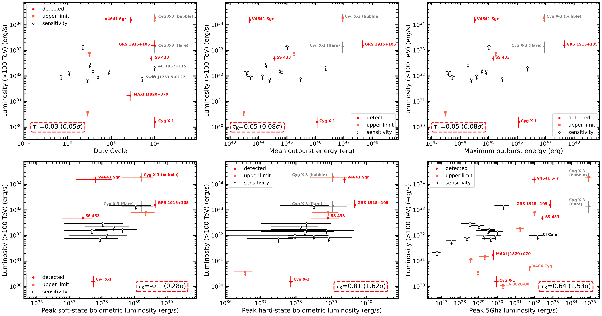<br />
图注：Same as Figure~\(\ref{fig:arch},\) but comparing the gamma-ray luminosity above 100~TeV to (first row, left to right) the duty cycle, mean and maximum total energy liberated during one outburst, as well as (second row, left to right) the maximum \(\xray\) luminosity measured in the soft and hard spectral states, and maximum radio luminosity at 5~GHz.<br />
对应解读：对应“建议重点查看的图表”第1、2、4项，以及“关键图表逐图导读”图2、图3、图5和模型拟合段落中的族群相关性分析。<br />
入选理由：这是候选图中信息密度最高、最直接支撑核心结论的一张：同一图比较了&gt;100 TeV伽马射线亮度与占空比、硬态/软态X射线最大亮度、5 GHz最大射电亮度及爆发能量等量的关系。日报重点强调的射电亮度相关、硬态X射线相关和D≈20%占空比门槛都集中在此图中，比单独的样本排序图更适合检验喷流/硬态活动是否与极端粒子加速相连。<br />
来源与置信度：\(arxiv_source\)；high；\(arxiv_source\) / main.tex:figure[3]</p>
<p><strong>Fig05</strong><br />
<br />
图注：Distribution of simulated (black lines) and observed (red points) distances between \(\xray\) binaries in our sample and gamma-ray catalogue components without association for the 1HGPS catalogue (left) and 1LHAASO catalogue (right). In both panels, the region used to normalize the expected distribution (off) and derive the deviation (on) are indicated with a red diagonal and green horizontal hatch, respectively. In both panels, the residual between the observed and simulated distribution is provided in units of significance.<br />
对应解读：对应“建议重点查看的图表”第6项，以及“关键图表逐图导读”图6和模型拟合段落中的空间匹配显著性检验。<br />
入选理由：该图直接给出黑洞X射线双星与1HGPS、1LHAASO未关联伽马源的观测距离分布、随机模拟期望分布以及以显著性为单位的残差，是判断&gt;3σ空间接近证据是否成立的关键图。它比单纯的天区分布更能量化实际匹配数相对背景模型的偏离。<br />
来源与置信度：\(arxiv_source\)；high；\(arxiv_source\) / main.tex:figure[5]</p>
<p><strong>Fig06</strong><br />
<br />
图注：Symbols and colours follow those of Figure~\(\ref{fig:cat}\) but for the radio-detected (left) and radio-undetected (right) samples.<br />
对应解读：对应“建议重点查看的图表”第6项，以及“关键图表逐图导读”图6中关于全集、射电探测子样本和射电未探测子样本差异的讨论。<br />
入选理由：日报特别强调空间重合证据是否只在射电探测黑洞X射线双星中出现。Fig06正是把Fig05式的空间距离/显著性分析拆分为射电探测和射电未探测样本，能够直接支撑“极端粒子加速与喷流相关”这一最重要的统计论据。<br />
来源与置信度：\(arxiv_source\)；high；\(arxiv_source\) / main.tex:figure[6]</p>
<p><strong>Fig02</strong><br />
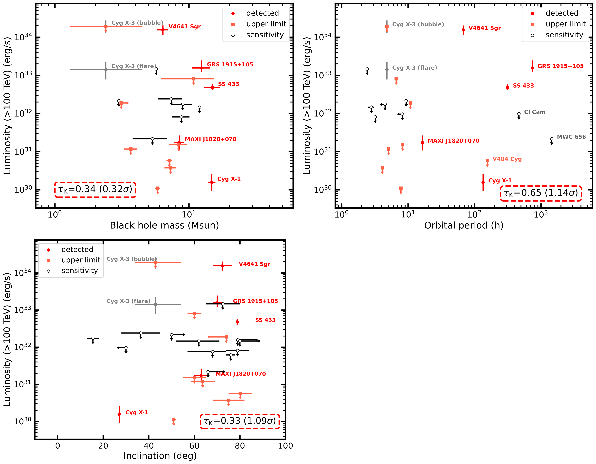<br />
图注：Comparisons between the gamma-ray luminosity above 100~TeV and the black hole mass (left), orbital period (middle) and system inclination (right). Only sources for which a constraint on their gamma-ray emission above 100~TeV exists are included. Red circles indicate the detected systems, light red squared indicate those for which upper limits are reported and empty black circles those for which the constraint is derived from a sensitivity curve. When deriving the correlation estimates, we use the gamma-ray flux from the Cygnus bubble as an upper limit for \(\cygt.\)<br />
对应解读：对应“建议重点查看的图表”第3项，以及“关键图表逐图导读”图4中关于黑洞质量、伴星/轨道参数和倾角无明显相关的讨论。<br />
入选理由：该图展示&gt;100 TeV伽马射线亮度与黑洞质量、轨道周期和系统倾角的对照，并区分探测、上限和由灵敏度曲线推得的约束。它是排除质量或几何倾角作为主导解释的主要图表，与射电/硬态X射线相关图形成关键对照。<br />
来源与置信度：\(arxiv_source\)；high；\(arxiv_source\) / main.tex:figure[2]</p>
<p><strong>Fig01</strong><br />
<br />
图注：Maximum observed radio luminosity at 5~GHz (see Section~\ref{sec:jets}) for every \(\xray\) binary for which a radio detection has been reported ordered from least to most luminous from left to right. Square and round symbols indicate systems included and not included in the LHAASO FoV, respectively. \(\vsgr\) is indicated as outside the LHAASO FoV because a dedicated analysis above 50$\degree$ zenith was exclusively deployed for this source in the LHAASO \(\xray\) binary survey~\(\citep{LhaasoCollaboration2025}.\) The colorbar indicates the measured gamma-ray luminosity above 100~TeV as collected in Table~\(\ref{tab:detected}\) (the "flare" value for \(\cygt\) is used). White circles represent sources which are visible by LHAASO but for which a detection has not been reported.<br />
对应解读：对应“建议重点查看的图表”第1项，以及“关键图表逐图导读”图1/图2中关于样本总览、射电亮度和&gt;100 TeV伽马射线探测状态的入口说明。<br />
入选理由：虽然它不是严格的L_gamma-L_R二维散点图，但它按5 GHz最大射电亮度排列所有有射电探测的X射线双星，并用颜色标示&gt;100 TeV伽马射线亮度、用符号标示LHAASO视场内外，因此非常适合作为样本总览图，帮助读者直观看到伽马亮源是否集中在射电亮端以及视场选择效应。<br />
来源与置信度：\(arxiv_source\)；high；\(arxiv_source\) / main.tex:figure[1]</p>
<p><strong>Fig04</strong><br />
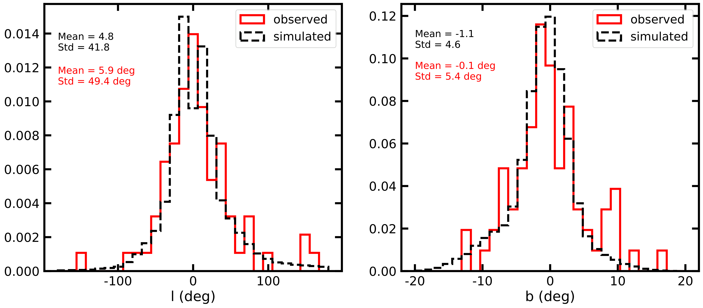<br />
图注：Distribution of Galactic latitude (left), longitude (right) for the real sample of \(\xray\) binaries (red lines) and the simulated one (black dashed lines). Sources located within a radius of 4$\degree$ of the Galactic centre have been excluded.<br />
对应解读：对应“建议重点查看的图表”第5项，以及模型拟合段落中关于空间匹配背景模型和银河经纬度分布的讨论。<br />
入选理由：该图比较真实黑洞X射线双星样本与模拟样本的银河纬度、经度分布，是理解Fig05/Fig06空间显著性背景模型的辅助图。它不直接显示未关联伽马源位置或匹配残差，因此科学优先级低于Fig05和Fig06，但有助于检查随机化样本是否保留了银河面源分布特征。<br />
来源与置信度：\(arxiv_source\)；high；\(arxiv_source\) / main.tex:figure[4]</p>
<h4 id="_12">强相关工作</h4>
<p>这篇工作属于黑洞 X 射线双星/微类星体作为银河 TeV–PeV 粒子加速器的族群研究。相关的同类源和历史原型包括 SS 433/W50 这类喷流—星际介质相互作用系统、Cygnus X-1 和 Cygnus X-3 等高质量 X 射线双星的高能辐射研究，以及 MAXI、Swift/BAT、RXTE、MeerKAT、VLA 等监测支持的黑洞 X 射线双星爆发样本。检索关键词可用 “black hole X-ray binaries TeV gamma rays jets PeVatron”、“microquasar particle acceleration”、“BHXRB radio gamma correlation”、“LHAASO unassociated Galactic sources”。</p>
<p>它也与未关联 TeV/PeV 源的源族群识别问题相连。1LHAASO 和 H.E.S.S. Galactic Plane Survey 目录中有大量未关联或多解释源，常见竞争解释包括脉冲星风云、超新星遗迹、分子云照亮和恒星形成区。本文提出的相反可检验观点是：若未关联源中有一部分来自黑洞 X 射线双星，那么它们应优先靠近射电明亮、高占空比的系统，而不是随机分布在所有双星附近。后续应检索 “1LHAASO catalog unassociated sources”、“H.E.S.S. Galactic Plane Survey unidentified sources”、“PWN SNR confusion TeV Galactic plane”。</p>
<p><strong>同一事件 / 同类源线索</strong>：</p>
<ul>
<li><a href="https://arxiv.org/abs/2607.06360">https://arxiv.org/abs/2607.06360</a></li>
<li><a href="https://arxiv.org/pdf/2607.06360">https://arxiv.org/pdf/2607.06360</a></li>
<li><a href="https://arxiv.org/abs/2305.17030">https://arxiv.org/abs/2305.17030</a></li>
<li><a href="https://arxiv.org/abs/1804.02432">https://arxiv.org/abs/1804.02432</a></li>
</ul>
<p><strong>相似工作</strong>：</p>
<ul>
<li><a href="https://arxiv.org/abs/2305.17030">https://arxiv.org/abs/2305.17030</a></li>
<li><a href="https://arxiv.org/abs/1804.02432">https://arxiv.org/abs/1804.02432</a></li>
</ul>
<p><strong>基础理论 / 方法工作</strong>：</p>
<p>（未提供）</p>
<p><strong>相反观点 / 张力线索</strong>：</p>
<p>（未提供）</p>
</details>
<h3 id="2-dependence-of-particle-acceleration-efficiency-on-shock-velocity-in-weakly-magnetized-electron-ion-shocks">2. Dependence of Particle Acceleration Efficiency on Shock Velocity in Weakly Magnetized Electron-Ion Shocks</h3>
<ul>
<li>来源：arXiv / astro-ph.HE</li>
<li>链接：https://arxiv.org/abs/2607.05778v1</li>
<li>作者：Taiki Jikei, Daniel Groselj, Lorenzo Sironi</li>
<li>评分：novelty 8/10，importance 8/10，relevance 9/10，final 9.35/10</li>
<li>推荐理由：Long 2D PIC simulations of weakly magnetized electron-ion shocks quantify velocity-dependent electron/ion acceleration efficiencies, directly relevant to cosmic-ray acceleration, GRB afterglows, FBOTs, and microquasar emission.</li>
</ul>
<p><strong>中文题目</strong>：弱磁化电子—离子激波中粒子加速效率如何依赖激波速度</p>
<p><strong>做了什么</strong>：这篇论文用超长时间二维粒子-in-cell数值模拟研究弱磁化、准平行电子—离子激波中的电子和离子非热加速，激波速度覆盖从亚相对论到跨相对论区间。作者固定上游磁场强度，发现低速激波主要由宇宙线电流驱动的 Bell 不稳定性控制，高速激波主要由 Weibel 不稳定性控制；两种机制下离子加速效率相近，但最大能量增长速度不同。最重要的结论是电子加速效率对激波速度非常敏感：Weibel 主导的高速激波可把约 \(15\%\) 激波能量放入非热电子，而 Bell 主导的低速激波中非热电子占比低于约 \(2\%\)。</p>
<p><strong>为什么重要</strong>：许多高能暂现源的辐射建模把电子能量分数 \(\epsilon_e\)、磁场能量分数 \(\epsilon_B\) 和非热粒子谱当作可调参数，但这些参数本质上应由无碰撞激波微物理决定。本文直接比较不同激波速度下的同一类弱磁化准平行激波，给出 \(\epsilon_e\) 随速度变化的物理原因和定量范围，对伽马暴余辉、快速蓝光光学暂现源和微类星体喷流激波的辐射解释都有约束作用。</p>
<p><strong>理论 / 观测 / 仪器方法价值</strong>：对理论而言，本文把 Bell 主导与 Weibel 主导两种加速环境放在统一的 PIC 框架中比较，说明离子加速相对稳健而电子注入并不稳健。对观测解释而言，它提醒我们不能在不同速度阶段简单使用常数 \(\epsilon_e\)，否则会误判冲击波能量、外部介质密度或喷流动力学。对方法而言，超长时间二维 PIC 模拟让最大粒子能量增长、非热尾形成和下游能量分配的时间演化更接近可用于天体外推的区间。</p>
<p><strong>为什么应该关注</strong>：如果你关心伽马暴晚期 X 射线余辉为什么仍然明亮、快速蓝光光学暂现源射电峰值如何由亚相对论激波产生、或者微类星体 X 射线快速变化是否可由喷流内部/终端激波解释，这篇文章给出的不是一个新的经验拟合，而是微物理层面对电子是否容易被注入非热加速的判断。它可能改变你在辐射建模中默认采用的 \(\epsilon_e\) 先验。</p>
<details class="paper-detail">
<summary>展开详细解读：文章讲解、背景、理论、重点章节、图表与相关工作</summary>
<h4 id="_13">文章详细讲解</h4>
<p>科学问题：无碰撞电子—离子激波是高能天体中最常见的粒子加速场所之一，但从观测反推的电子加速效率 \(\epsilon_e\) 往往被当成常数处理。问题在于，激波速度从跨相对论降到亚相对论时，控制上游湍流的等离子体不稳定性会改变：高速弱磁化准平行激波容易由 Weibel 型电流丝化产生小尺度磁场，低速时逃逸离子电流可驱动 Bell 非共振不稳定性并放大较大尺度磁场。本文要回答的是，在同样弱磁化、准平行几何下，速度变化究竟怎样改变离子和电子的非热加速效率。</p>
<p>作者怎么做：论文使用二维 particle-in-cell 模拟，跟踪电子和离子在激波形成、上游前驱区湍流增长、下游热化以及非热尾形成中的相空间演化。模拟覆盖从跨相对论到亚相对论的激波速度，并保持上游磁场强度固定，使速度成为主要控制变量。相比短时模拟，本文强调“unprecedentedly long”的运行时间，因为离子加速、Bell 模式增长以及最大能量随时间推进都需要很长的动力学时间才能显现。</p>
<p>关键结果：作者发现离子加速效率在 Bell 主导和 Weibel 主导两种速度区间中差别不大，说明离子参与弥散激波加速的能力对具体微不稳定性并不极端敏感。不过最大离子能量增长率不同，Bell 主导低速激波的最大能量增长更快，这与较大尺度磁湍流更有利于高能离子散射相符。电子则完全不同：高速 Weibel 主导激波能把约 \(15\%\) 激波能量转入非热电子，而低速 Bell 主导激波的非热电子能量分数低于约 \(2\%\)。这意味着电子注入受激波速度和湍流尺度强烈控制。</p>
<p>局限和下一步：二维 PIC 模拟仍不能完全替代三维真实系统，特别是 Bell 湍流的非线性级联、电子注入的横向结构、长波长模式饱和以及最高能粒子的逃逸边界都可能有维度效应。模拟的质量比、盒子大小、运行时间和上游磁化度也会影响天体外推。下一步需要三维长时模拟、不同磁化度和斜率角扫描，并将模拟得到的 \(\epsilon_e\)、\(\epsilon_i\)、谱指数和最大能量增长律嵌入实际暂现源多波段光变拟合中，而不是只作为定性解释。</p>
<h4 id="_14">关键结果是怎么做出来的</h4>
<p>本文最重要的证据链来自一组控制变量清楚的二维 PIC 模拟：上游磁场保持弱磁化并近似准平行，改变的是激波速度，从而比较跨相对论与亚相对论激波。样本不是天文事件样本，而是一组数值实验；关键“事件数”可理解为不同速度设置、每个设置中大量宏粒子轨道以及长时间演化后的粒子能谱。读者应重点检查每个速度模型是否运行到离子非热尾和上游湍流都进入准自相似增长阶段，否则加速效率会被早期瞬态污染。</p>
<p>显著性在这类论文中通常不是用观测论文的 \(p\)-value 给出，而是由不同模拟设置之间的系统性差异、能量守恒、粒子谱随时间稳定性和盒子/分辨率检验支撑。本文的核心比较是电子非热能量分数在 Weibel 主导高速激波中达到约 \(15\%\)，而 Bell 主导低速激波中小于约 \(2\%\)。这个差距远大于通常由谱尾截断位置、热峰拟合方式或有限盒子导致的微小偏移，因此构成物理上强的速度依赖结论。</p>
<p>模型比较的重点是湍流形态和粒子能谱之间的对应关系。高速模型中，读者应看到上游和激波转变区存在 Weibel 电流丝、小尺度磁场放大，以及电子在这些小尺度强电磁结构中有效预热和注入。低速模型中，则应看到由逃逸离子电流驱动的 Bell 模式占主导，磁场结构尺度更大且主要服务于离子散射，电子进入非热尾的门槛更高。论文结论不是简单说“低速激波不加速粒子”，而是“低速准平行弱磁化激波仍能加速离子，但电子非热注入低效”。</p>
<p>支撑结论的图表通常包括：不同速度下的粒子能谱、非热能量分数随时间演化、最大粒子能量随时间增长、磁场扰动空间图、上游不稳定性增长诊断以及电子/离子能量分配表。读者应检查非热能量分数如何定义：热 Maxwell-Juettner 或 Maxwellian 分量如何扣除，非热尾从哪个动量阈值开始积分，谱尾是否受有限最大能量影响。若不同速度模型采用相同的分解规则，电子效率差异才更可信。</p>
<p>主要系统误差包括二维几何、有限质量比、有限盒长、有限运行时间、数值加热、宏粒子噪声、边界条件以及上游磁化度固定策略。稳健性检验应围绕这些因素展开：改变分辨率和粒子数是否保持能量分配，延长时间后 \(\epsilon_e\) 是否继续演化，最大能量增长是否接近线性或亚线性标度，以及不同速度区间的主导不稳定性判据是否清楚分离。</p>
<details class="paper-subdetail">
<summary>展开背景、理论、公式、模型、章节和图表导读</summary>
<h4 id="_15">背景知识</h4>
<p>研究对象是弱磁化准平行电子—离子无碰撞激波。所谓无碰撞，是指粒子平均自由程远大于系统尺度，激波耗散不是靠库仑碰撞，而是靠集体电磁场、等离子体不稳定性和波粒相互作用完成。准平行表示上游磁场与激波法线夹角较小，逃逸离子可以沿磁场回到上游，形成前驱区并驱动湍流。</p>
<p>历史上，弥散激波加速被认为可以自然产生幂律宇宙线谱，广泛用于超新星遗迹、伽马暴余辉、活动星系核喷流和 X 射线双星喷流。然而理论模型常把粒子散射中心和磁湍流当作给定背景，真正的微物理问题是：湍流从哪里来，电子如何从热池进入非热加速循环，离子和电子各拿走多少能量。这些问题需要 kinetic 模拟处理。</p>
<p>Weibel 不稳定性和 Bell 不稳定性代表两类不同机制。Weibel 或电流丝化不稳定性通常在相对论或跨相对论激波中快速产生小尺度横向磁场，使粒子各向同性化并热化。Bell 非共振流驱动不稳定性则由逃逸宇宙线电流与背景等离子体的回流电流相互作用产生，在非相对论或亚相对论准平行激波中很重要，常被用于解释超新星遗迹中的磁场放大。</p>
<p>为什么现在值得重新看？一方面，多信使和时域天文学正在积累大量跨速度区间的暂现源观测：伽马暴外激波从相对论逐渐减速到亚相对论，快速蓝光光学暂现源和潮汐瓦解事件外流常处在亚相对论区间，微类星体喷流可产生从温和相对论到非相对论的激波。另一方面，计算资源允许 PIC 模拟运行到更长时间，能够追踪离子尺度和非热尾增长，而不是只看早期热化。</p>
<p>该领域常见误区之一是把 \(\epsilon_e\) 当作普适常数，甚至在所有激波速度中使用相同先验。另一个误区是认为只要离子被有效加速，电子也会按固定比例被加速。本文显示这两点都不安全：离子效率相近并不保证电子效率相近，控制电子注入的是湍流尺度、预热机制和激波速度共同决定的微物理。</p>
<h4 id="_16">基础理论 / 方法脉络</h4>
<p>基本物理图像是：上游等离子体以速度 \(v_{\rm sh}\) 进入激波，在激波转变层中被电磁湍流散射、压缩并热化；一部分粒子反复穿越上下游，获得一阶费米加速。离子因质量大、回旋半径大，更容易从激波逃逸并在上游形成前驱区；电子质量小、回旋半径小，必须先被预热到足以与湍流相互作用，才能进入非热循环。</p>
<p>弱磁化通常用磁化参数 \(\sigma\) 或上游阿尔芬马赫数描述。小 \(\sigma\) 意味着上游有序磁场能量密度远低于流体动能密度，激波结构主要由自激发湍流决定。准平行几何使逃逸离子沿磁场方向传播更容易，因此能形成驱动 Bell 模式的宇宙线电流。若激波速度较高，入流各向异性强，Weibel 模式增长快，小尺度磁场在激波转变层中占优势。</p>
<p>本文的关键量包括非热电子能量分数 \(\epsilon_e\)、非热离子能量分数 \(\epsilon_i\)、最大粒子能量 \(\gamma_{\max} m c^2\)、粒子谱指数、磁场放大幅度和不稳定性主导尺度。观测建模中 \(\epsilon_e\) 常直接控制同步辐射亮度，\(\epsilon_B\) 控制磁场强度，谱指数控制光谱斜率；PIC 模拟则试图从第一性原理给出这些量的合理范围。</p>
<p>从方法上看，PIC 模拟解的是宏粒子在自洽电磁场中的运动，以及电磁场由粒子电荷和电流更新的 Maxwell 方程。它不预设碰撞项，也不预设扩散系数，因此特别适合研究无碰撞激波的注入和湍流生成。但 PIC 也有选择效应：可承受的质量比、空间尺度和时间尺度远小于真实天体系统，因而需要通过无量纲参数和标度关系外推。</p>
<p>主要退化关系在于：同样的观测光度可以由较高 \(\epsilon_e\) 与较低爆炸能量组合产生，也可以由较低 \(\epsilon_e\) 与较高能量或较高密度组合产生。若 \(\epsilon_e\) 实际随 \(v_{\rm sh}\) 下降，那么用常数 \(\epsilon_e\) 拟合晚期余辉会系统性偏置动力学参数。本文的微物理结果正是为了打破或至少收紧这种退化。</p>
<h4 id="_17">公式与推导</h4>
<p>第一步是写出上游流入激波的动能通量。对非相对论近似，可用</p>
<div class="math-display">\[F_{\rm kin}\simeq \frac{1}{2}\rho_0 v_{\rm sh}^3,\]</div>
<p>其中 \(\rho_0\) 是上游质量密度，\(v_{\rm sh}\) 是激波速度。跨相对论情形需要用洛伦兹因子修正，但这个表达式说明可供粒子加速和场放大的能量来自入流动能通量。</p>
<p>第二步定义弱磁化程度。常用磁化参数可写成</p>
<div class="math-display">\[\sigma=\frac{B_0^2}{4\pi n_0 m_i c^2 \Gamma_0^2},\]</div>
<p>其中 \(B_0\) 是上游有序磁场，\(n_0\) 是上游离子数密度，\(m_i\) 是离子质量，\(\Gamma_0\) 是入流洛伦兹因子。小 \(\sigma\) 表示磁场不能单独控制激波耗散，必须依赖自激发不稳定性。</p>
<p>第三步是非热能量分数的定义。对物种 \(s\) 的能谱 \(dN_s/d\gamma\)，可定义</p>
<div class="math-display">\[\epsilon_s=\frac{\int_{\gamma_{\rm inj}}^{\infty}(\gamma-1)m_s c^2\,\frac{dN_s}{d\gamma}\,d\gamma}{E_{\rm sh}},\]</div>
<p>其中 \(s=e,i\)，\(\gamma_{\rm inj}\) 是非热尾起点，\(E_{\rm sh}\) 是被处理的激波能量。本文关于电子的核心结论就是 \(\epsilon_e\) 在不同速度区间相差很大。</p>
<p>第四步看 Bell 不稳定性的基本尺度。逃逸离子产生宇宙线电流 \(J_{\rm cr}\)，背景等离子体回流电流与磁场相互作用，非共振 Bell 模式的典型最大增长波数可写成</p>
<div class="math-display">\[k_{\rm Bell}\sim \frac{J_{\rm cr}}{c B_0},\]</div>
<p>相应增长率量级为</p>
<div class="math-display">\[\Gamma_{\rm Bell}\sim k_{\rm Bell} v_A,\]</div>
<p>其中 \(v_A=B_0/\sqrt{4\pi\rho_0}\) 是阿尔芬速度。这组关系说明 Bell 模式由逃逸离子电流驱动，且与较大尺度离子动力学相关。</p>
<p>第五步看 Weibel 模式。对强各向异性入流，电流丝化的增长率量级可写成</p>
<div class="math-display">\[\Gamma_{\rm W}\sim \xi^{1/2}\omega_{pi},\]</div>
<p>其中 \(\xi\) 表示参与各向异性反流或前驱粒子的能量比例，\(\omega_{pi}=\sqrt{4\pi n_0 e^2/m_i}\) 是离子等离子体频率。Weibel 模式通常产生接近皮肤深度的小尺度磁结构，适合快速热化和电子预热。</p>
<p>第六步是最大能量增长的加速时间。弥散激波加速的量级关系可写成</p>
<div class="math-display">\[t_{\rm acc}\sim \eta\frac{r_L c}{v_{\rm sh}^2},\]</div>
<p>其中 \(r_L=pc/(Ze\delta B)\) 是在放大磁场 \(\delta B\) 中的拉莫尔半径，\(\eta\) 是散射接近 Bohm 极限程度的因子。若 \(\delta B\) 尺度更适合高能离子散射，\(t_{\rm acc}\) 更短，最大能量增长更快。</p>
<p>第七步把加速与可观测同步辐射联系起来。若电子获得幂律分布 \(dN_e/d\gamma\propto \gamma^{-p}\)，典型同步频率为</p>
<div class="math-display">\[\nu_{\rm syn}\simeq \frac{3eB}{4\pi m_e c}\gamma_e^2,\]</div>
<p>而总辐射归一化强烈依赖 \(\epsilon_e\) 和 \(\epsilon_B\)。因此从 \(\epsilon_e\sim0.15\) 降到 \(\epsilon_e\lesssim0.02\) 会显著改变 X 射线或射电光度估计。</p>
<p>第八步是数值论文中常见的能量守恒诊断。总能量应满足</p>
<div class="math-display">\[E_{\rm part}(t)+E_{\rm field}(t)+E_{\rm flux}(t)\simeq E_{\rm init},\]</div>
<p>其中 \(E_{\rm part}\) 是粒子能量，\(E_{\rm field}\) 是电磁场能量，\(E_{\rm flux}\) 是边界通量项。若能量闭合不好，非热效率的定量比较就不可靠。</p>
<h4 id="_18">模型拟合 / 应用方法</h4>
<p>本文本身主要是第一性原理数值实验，不是对某个观测源做贝叶斯拟合；但它仍然涉及“模型拟合”意义上的参数估计。最直接的拟合量是下游粒子能谱：需要把热成分与非热幂律尾分开，估计谱指数、注入能量 \(\gamma_{\rm inj}\)、最大能量和非热能量积分。不同的热峰扣除方式会影响 \(\epsilon_e\)，特别是在电子尾较弱的低速 Bell 主导情形。</p>
<p>常用诊断是把能谱写成热分布加幂律尾，并检查在不同时间截面下幂律段是否稳定延伸。如果谱尾只是短暂过渡或靠近数值截断，不能把它解释为成熟的弥散激波加速。对离子而言，还要看最大能量是否随时间持续增长；对电子而言，要看非热尾能量占比是否随时间趋于稳定，而不是由早期瞬态电场注入造成。</p>
<p>参数退化主要发生在 \(\epsilon_e\)、\(p\)、\(\gamma_{\rm inj}\) 和 \(\gamma_{\max}\) 之间。较硬的谱可以在较小归一化下贡献较多高能辐射，较高的注入能量会减少粒子数但增加单粒子能量。若低速模型中电子谱尾短且弱，\(\epsilon_e\) 的上限会依赖如何定义热尾和非热尾边界，因此需要用统一算法比较所有速度模型。</p>
<p>系统误差包括数值分辨率、每格粒子数、质量比、盒子横向尺寸、边界反射、运行时间和二维限制。二维模拟可能增强或抑制某些电流丝合并过程，也可能改变粒子跨场扩散。因此最可靠的结论是速度趋势和数量级差异；绝对数值如 \(15\%\) 或 \(<2\%\) 在应用到真实天体时应作为微物理先验范围，而不是无误差常数。</p>
<p>实际应用时，可以把本文结果转化为速度依赖的辐射模型先验。例如在伽马暴余辉拟合中令 \(\epsilon_e=\epsilon_e(v_{\rm sh})\)，在跨相对论阶段允许较高电子效率，而在亚相对论阶段给出较低先验。这样做会改变从光变曲线反推的爆炸能量、介质密度和喷流开角，也会影响晚期 X 射线与射电是否需要额外能量注入或中心引擎活动。</p>
<h4 id="_19">重点章节 / 结果段落怎么读</h4>
<p>数据/数值设置部分应首先阅读。重点是激波如何在模拟盒中产生，上游磁化度、磁场倾角、速度范围、质量比、空间分辨率、粒子数和边界条件如何设定。只有确认不同速度模型除了 \(v_{\rm sh}\) 外尽量可比，后面的速度依赖结论才成立。</p>
<p>不稳定性识别部分是第二个重点。读者应看作者如何区分 Bell 主导和 Weibel 主导：是通过磁场空间形态、功率谱峰值、增长率、前驱区电流，还是通过尺度相对于皮肤深度和离子拉莫尔半径的位置。这里决定了论文的物理解释是否只是经验分类，还是有清楚的等离子体机制支撑。</p>
<p>粒子能谱和能量分配部分是核心结果。应检查电子和离子能谱在不同速度、不同时间的演化，尤其是非热尾从热峰中分离的程度、谱指数是否稳定、最大能量是否持续增长。电子 \(\epsilon_e\) 的速度依赖和离子效率的相对不变，应当在这部分直接体现。</p>
<p>最大能量增长和加速速率部分关系到天体外推。Bell 主导低速激波虽然电子效率低，但离子最大能量增长更快，这一结果对宇宙线加速很重要。读者应关注作者是否给出 \(E_{\max}(t)\) 的标度，以及这个标度是否受盒子尺寸限制。</p>
<p>讨论和应用部分应带着怀疑阅读。作者把结果联系到伽马暴晚期余辉、快速蓝光光学暂现源和微类星体 X 射线变化；这些应用有启发性，但需要额外的辐射转移、几何和环境模型。读者应区分 PIC 直接证明的微物理结论，与面向具体源类的推论。</p>
<h4 id="_20">建议重点查看的图表</h4>
<ol>
<li>
<p>不同速度模型的二维磁场或电流密度图：看高速模型是否呈现小尺度 Weibel 丝状结构，低速模型是否呈现 Bell 模式驱动的较大尺度扰动。</p>
</li>
<li>
<p>上游磁场功率谱或不稳定性增长诊断：看主导尺度是否随速度变化，增长率是否与 Bell 或 Weibel 的理论预期一致。</p>
</li>
<li>
<p>电子能谱随时间演化图：看非热尾是否真正从热峰分离，低速模型中 \(\epsilon_e\) 的上限是否受注入阈值影响。</p>
</li>
<li>
<p>离子能谱随时间演化图：看不同速度下离子非热尾的能量分数是否相近，以及谱尾是否足够长。</p>
</li>
<li>
<p>最大粒子能量 \(E_{\max}\) 随时间图：重点比较 Bell 主导和 Weibel 主导模型的增长斜率，确认“低速 Bell 主导最大能量增长更快”是否稳健。</p>
</li>
<li>
<p>非热能量分数 \(\epsilon_e\) 和 \(\epsilon_i\) 随 \(v_{\rm sh}\) 或时间的汇总图/表：看误差条、时间波动和不同定义下的范围。</p>
</li>
<li>
<p>能量守恒或下游能量分配诊断：检查粒子、场和通量项的能量闭合，避免把数值加热误认为真实电子加速。</p>
</li>
<li>
<p>分辨率、盒子大小或质量比检验图：看核心结论是否对数值设置敏感，尤其是低速模型的弱电子尾。</p>
</li>
</ol>
<h4 id="_21">关键图表逐图导读</h4>
<p>图 1：通常应是模拟几何或代表性磁场结构图。横轴多为沿激波法线方向的位置，纵轴为空间横向坐标，颜色表示某个磁场分量或磁能密度。读图时要比较不同速度面板中的空间尺度：Weibel 主导时应看到接近皮肤深度的丝状结构，Bell 主导时应看到更长波长、由前驱离子电流组织起来的扰动。陷阱是颜色条若各面板独立归一化，不能直接比较磁场强度，只能先比较形态。</p>
<p>图 2：可能展示上游扰动功率谱或增长率。横轴通常是波数 \(k\) 或归一化尺度，纵轴是磁能功率或增长幅度。关键是谱峰位置是否从 Weibel 尺度转到 Bell 尺度，以及这种转变是否与激波速度单调相关。读图陷阱是有限盒长会截断低 \(k\) 模式，因此 Bell 模式的长波端可能未完全展开。</p>
<p>图 3：电子能谱图应重点看横轴 \(\gamma_e-1\) 或动量，纵轴 \(dN/d\gamma\)、\(\gamma dN/d\gamma\) 或能量加权分布。模型线若包含热分布和幂律尾，读者要看非热尾起点是否一致。主要结论是高速 Weibel 主导激波有强电子非热尾，低速 Bell 主导激波电子尾弱得多。陷阱是能量加权坐标会视觉上放大高能少数粒子的贡献。</p>
<p>图 4：离子能谱图用于验证离子加速效率相近。横轴可能是离子动能或洛伦兹因子，纵轴为粒子数或能量分布。应看不同速度模型的非热尾归一化是否接近，以及最大能量位置如何随时间移动。陷阱是不同速度下热峰位置本来不同，不能只按绝对能量比较尾部强弱。</p>
<p>图 5：最大能量随时间图通常横轴是归一化时间，如离子等离子体频率倒数或激波穿越时间，纵轴是 \(E_{\max}\) 或 \(\gamma_{\max}\)。若 Bell 主导低速模型增长更快，应在斜率上体现。读图时要区分真实加速增长与盒子边界、逃逸边界或统计上最高能粒子数太少造成的波动。</p>
<p>图 6：能量分数汇总图或表是本文结论的最直接入口。横轴可为 \(v_{\rm sh}\) 或 \(\Gamma_{\rm sh}\beta_{\rm sh}\)，纵轴为 \(\epsilon_e\) 和 \(\epsilon_i\)。关键趋势是 \(\epsilon_i\) 相对平稳，而 \(\epsilon_e\) 从高速的约 \(15\%\) 降到低速的 \(<2\%\)。陷阱是若点代表不同时间截面，应确认误差条或阴影是否包含长期演化的不确定性。</p>
</details>
<h4 id="_22">论文原图 / 可嵌入图片</h4>
<p><strong>Fig03</strong><br />
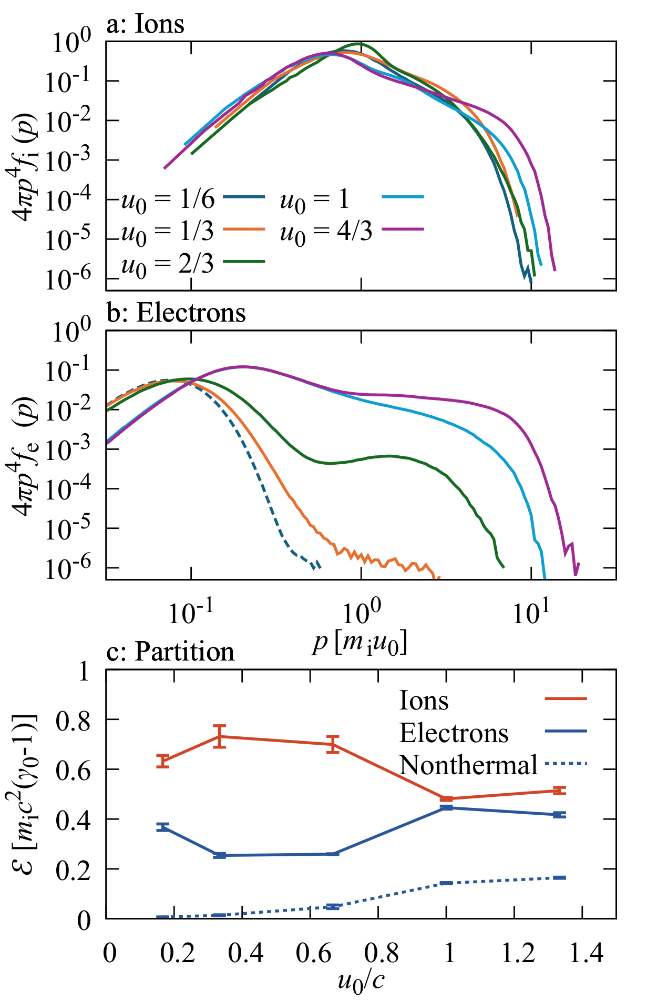<br />
图注：Particle momentum spectrum $4\pi p^4f(p)$ at the end of the simulations, $\omega_{\mathrm{pi}}t=10000$, in the near downstream, $(x-x_{\mathrm{sh}})/d_{\mathrm{sh}}=[-100, -50]$. a: ions. b: electrons. The color code is the same as in Figure~\(\ref{fig:current}.\) The bottom panel shows the downstream kinetic energy partition, defined as the average particle energy normalized by the upstream ion energy. Red and blue correspond to ions and electrons. The blue dotted line represents the nonthermal electron energy fraction, defined as the fraction of total energy contained in electrons with $p>3\,p_{\mathrm{peak}}$. Error bars are calculated from temporal variability in the time range $\omega_{\mathrm{pi}}t=[7000, 10000]$.<br />
对应解读：对应“建议重点查看的图表”第3、4、6项，以及“关键图表逐图导读”中图3、图4、图6和模型拟合段落关于热成分/非热幂律尾、电子与离子能量分数的讨论。<br />
入选理由：这张图同时给出离子和电子下游动量谱，以及下游动能分配和非热电子能量分数，并带有由时间波动估计的误差条，是验证本文核心结论最直接的图：离子非热加速效率相对稳定，而电子非热能量分数随激波速度显著下降。相比单纯形态图，它直接支撑约15%与低速小于约2%的电子效率差异，也能检查低速电子尾是否足够从热峰分离。<br />
来源与置信度：\(arxiv_source\)；high；\(arxiv_source\) / main.tex:figure[3]</p>
<p><strong>Fig04</strong><br />
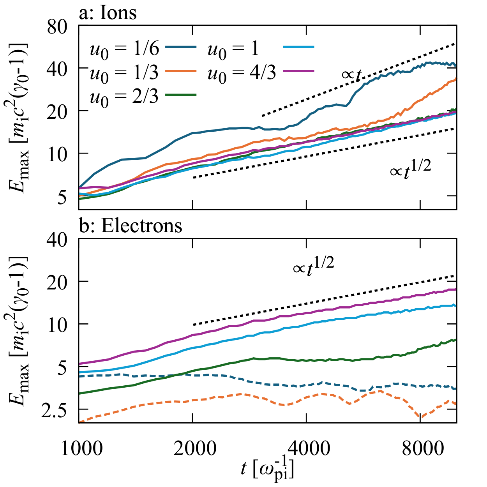<br />
图注：Time evolution of the maximum energy (Eq.~(\ref{eq:maximum_energy})), normalized by $m_{\mathrm{i}}c^2(\gamma_0-1)$. a: ions, b: electrons. The color code is the same as in Figure~\(\ref{fig:current}.\) Note that both horizontal and vertical axes are on a log scale. The black dotted lines indicate power-law scalings.<br />
对应解读：对应“建议重点查看的图表”第5项，以及“关键图表逐图导读”中图5关于最大粒子能量随时间增长斜率的讨论。<br />
入选理由：这张图展示离子和电子最大能量随时间的演化，并在双对数坐标上给出幂律增长参考线，是判断Bell主导低速模型是否具有更快最大能量增长的关键证据。它能区分非热尾是否持续发展，而不是仅由单一时刻谱形或统计涨落造成。<br />
来源与置信度：\(arxiv_source\)；high；\(arxiv_source\) / main.tex:figure[4]</p>
<p><strong>Fig01</strong><br />
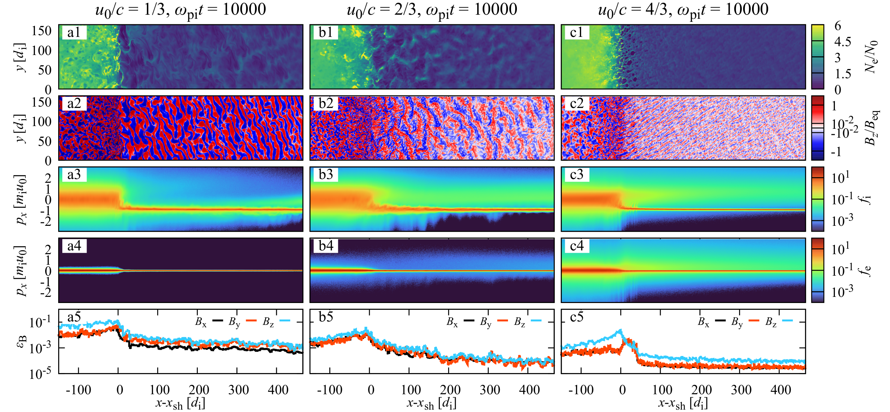<br />
图注：Snapshot of the simulations taken at $\omega_{\mathrm{pi}}t=10000$. Columns a, b, and c correspond to $u_0/c=1/3, 2/3$, and $4/3$, respectively. Row 1: electron number density $N_{\mathrm{e}}$ normalized by the far upstream value $N_0$. Row 2: $z$-component of the magnetic field normalized by the equipartition field (Eq.~(\ref{eq:equipart_field})). The colorbar is on a symmetric log scale, in which the range $[-0.01, 0.01]$ is on a linear scale. Rows 3 and 4: phase space density $f_s(x,p_x)$ for ions and electrons, respectively. Row 5 shows the normalized magnetic field energy density (Eq.~(\ref{eq:eps_b})) for each component. Black, orange, and light blue correspond to $B_x, B_y$, and $B_z$, respectively.<br />
对应解读：对应“建议重点查看的图表”第1项，以及“关键图表逐图导读”中图1关于不同速度下二维密度、磁场结构、相空间和磁能分量的解读。<br />
入选理由：这张多面板快照直接比较不同激波速度模型的电子密度、磁场分量、离子/电子相空间和磁能密度分布，能够支撑高速Weibel丝状结构与低速Bell较大尺度扰动之间的形态差异。它还把空间结构与粒子相空间联系起来，是理解速度依赖加速机制的入口图。<br />
来源与置信度：\(arxiv_source\)；high；\(arxiv_source\) / main.tex:figure[1]</p>
<p><strong>Fig02</strong><br />
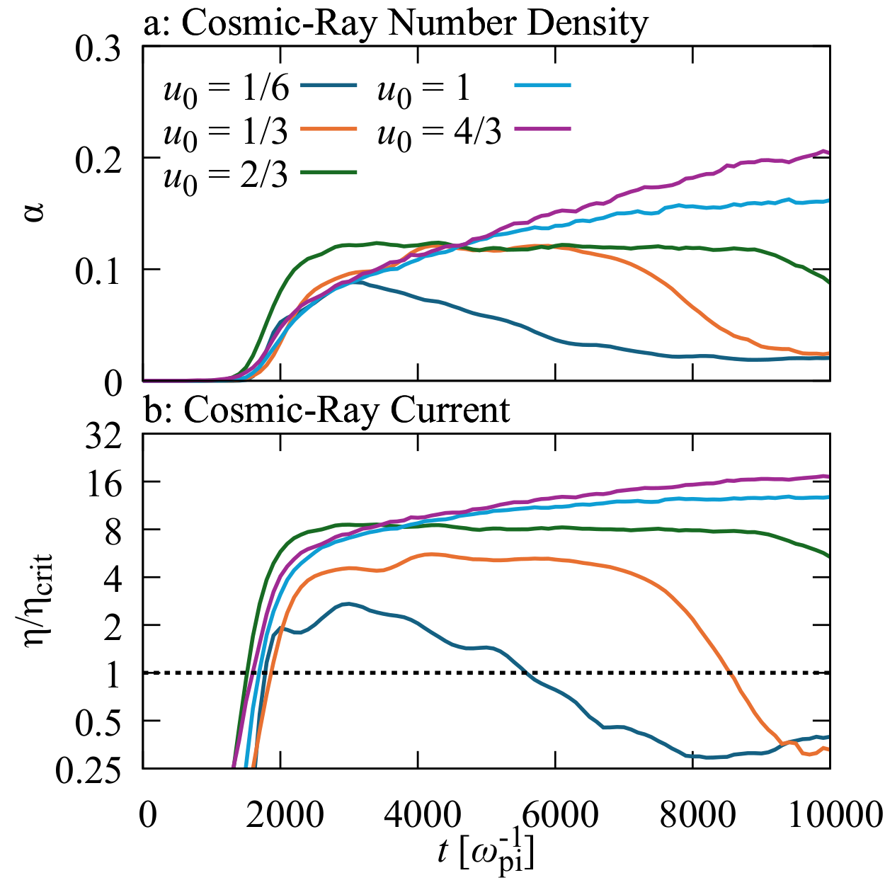<br />
图注：Time evolution of the cosmic-ray ion number density and current. a: number density ratio $\alpha$ in the upstream frame. b: upstream current normalized by the critical current, $\eta/\eta_{\mathrm{crit}}$. Both are computed in $(x-x_{\mathrm{sh}})/d_{\mathrm{i}}=[200, 300]$. Dark teal, orange, dark green, turquoise, and purple represent $u_0/c=1/6, 1/3, 2/3, 1$ and $4/3$, respectively. Note that the vertical axis of panel b is on a logarithmic scale.<br />
对应解读：对应“建议重点查看的图表”第2项，以及详细解读中关于逃逸离子电流、Bell非共振不稳定性与速度转变的讨论。<br />
入选理由：这张图给出上游宇宙线离子数密度比和归一化电流相对于临界电流的时间演化，可直接诊断何时满足Bell主导条件。虽然它不是完整的磁场功率谱，但它量化了驱动Bell不稳定性的关键物理量，比单纯视觉形态更能支撑低速/高速不稳定性转换的解释。<br />
来源与置信度：\(arxiv_source\)；high；\(arxiv_source\) / main.tex:figure[2]</p>
<p><strong>Fig05</strong><br />
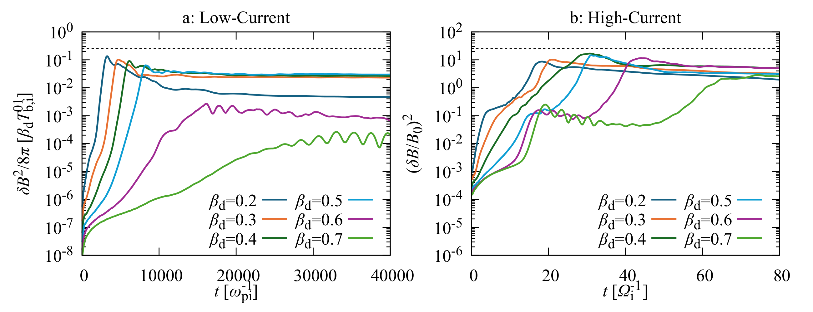<br />
图注：Time evolution of the Bell-amplified magnetic field energy for an electron-ion beam. a: results of the low-current regime, in which time is normalized by the ion plasma frequency and the magnetic field energy is normalized by the momentum flux of the ion beam. b: results of the high-current regime, in which time is normalized by the ion gyrofrequency, and the magnetic field energy is normalized by the ambient field energy. Dark teal, orange, dark green, turquoise, purple, and green curves represent $\beta_{\mathrm{d}}=0.2, 0.3, 0.4, 0.5, 0.6$, and $0.7$, respectively. The black dotted lines are the theoretical estimates of the saturation level for a pure ion beam (Eq.~(\ref{eq:sat_low_current}) for panel a and Eq.~(\ref{eq:sat_high_current}) for panel b).<br />
对应解读：对应“建议重点查看的图表”第2项，以及模型物理解释中Bell放大磁场增长和理论饱和水平的讨论。<br />
入选理由：这张图比较电子—离子束驱动下Bell放大磁能的时间演化，并叠加理论饱和估计线，能够验证论文对Bell主导低速激波中磁场放大机制的物理解释。它不是主激波模拟的直接效率汇总图，但对理解Bell模式增长和饱和的理论基准很重要。<br />
来源与置信度：\(arxiv_source\)；high；\(arxiv_source\) / main.tex:figure[5]</p>
<p><strong>Fig06</strong><br />
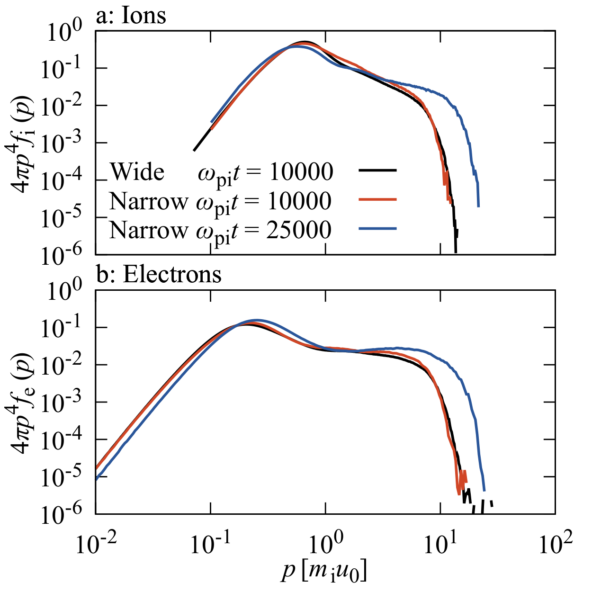<br />
图注：Downstream particle momentum spectrum for $u_0/c=4/3$. The format is the same as in the top two panels of Figure~\(\ref{fig:spectrum}.\) Black lines are from the wide box simulation, used in the main text, at $\omega_{\mathrm{pi}}t=10000$. Red and blue lines correspond to the narrow box run at $\omega_{\mathrm{pi}}t=10000$ and $25000$, respectively.<br />
对应解读：对应“建议重点查看的图表”第8项，以及局限性和系统误差段落中关于盒子横向尺寸、运行时间和数值稳健性的讨论。<br />
入选理由：这张图比较宽盒主模拟与窄盒长时模拟在高速度模型中的下游粒子谱差异，用于评估盒子尺寸和运行时间对谱尾的影响。它对核心速度趋势的支撑不如能谱汇总和最大能量图直接，但能帮助判断结论是否受数值设置限制。<br />
来源与置信度：\(arxiv_source\)；high；\(arxiv_source\) / main.tex:figure[6]</p>
<h4 id="_23">强相关工作</h4>
<p>这篇工作处在无碰撞激波 PIC 模拟、宇宙线驱动磁场放大和高能暂现源辐射建模的交叉点。与传统伽马暴余辉模型相比，它不是从光变拟合反推 \(\epsilon_e\)，而是尝试从激波微物理预测 \(\epsilon_e\) 的速度依赖。可检索关键词包括 “particle-in-cell quasi-parallel shocks electron ion acceleration efficiency”, “Weibel mediated relativistic shocks”, “Bell instability non-resonant cosmic-ray current shocks”, “GRB afterglow microphysical parameters evolution”。</p>
<p>与 Bell 磁场放大理论和超新星遗迹宇宙线加速研究相比，本文强调低速 Bell 主导激波仍能有效加速离子，但电子非热注入低效。与一些观测建模中默认 \(\epsilon_e\sim0.1\) 的做法存在潜在张力：若亚相对论外流真的只有 \(\epsilon_e\lesssim0.02\)，则射电或 X 射线亮度需要更高能量、更高密度、更强磁场或额外辐射区来解释。检索相反或张力方向可用 “afterglow \(epsilon_e\) constant”, “low \(epsilon_e\) radio supernovae”, “FBOT radio modeling microphysical parameters”。</p>
<p><strong>同一事件 / 同类源线索</strong>：</p>
<ul>
<li><a href="https://arxiv.org/abs/2607.05778">https://arxiv.org/abs/2607.05778</a></li>
</ul>
<p><strong>相似工作</strong>：</p>
<p>（未提供）</p>
<p><strong>基础理论 / 方法工作</strong>：</p>
<ul>
<li><a href="https://arxiv.org/abs/astro-ph/0401142">https://arxiv.org/abs/astro-ph/0401142</a></li>
<li><a href="https://arxiv.org/abs/astro-ph/0405503">https://arxiv.org/abs/astro-ph/0405503</a></li>
</ul>
<p><strong>相反观点 / 张力线索</strong>：</p>
<p>（未提供）</p>
</details>
<h3 id="3-the-problem-of-escape-a-missing-bit-in-the-theory-of-the-origin-of-cosmic-rays">3. The problem of escape: a missing bit in the theory of the origin of cosmic rays</h3>
<ul>
<li>来源：arXiv / astro-ph.HE</li>
<li>链接：https://arxiv.org/abs/2607.06024v1</li>
<li>作者：P. Blasi, E. Amato</li>
<li>评分：novelty 7/10，importance 8/10，relevance 9/10，final 9.05/10</li>
<li>推荐理由：Cosmic-ray escape is central to source spectra, maximum energies, and Galactic propagation; by Blasi and Amato, this is likely a valuable synthesis of nonlinear escape physics for cosmic-ray specialists.</li>
</ul>
<p><strong>中文题目</strong>：逃逸问题：宇宙线起源理论中缺失的一环</p>
<p><strong>做了什么</strong>：这篇文章讨论宇宙线起源理论里一个常被简化处理、但物理上很关键的问题：粒子如何从源区、源周围环境以及宿主星系中逃逸。作者强调，逃逸不是给输运方程随手加一个边界条件，而是会反过来决定最大加速能量、注入谱形、近源扩散环境以及最终在地球测到的宇宙线谱。文章的价值在于把源内加速、近源自激湍流、银河系传播和逃逸边界这些通常分开处理的环节串成一个非线性链条。</p>
<p><strong>为什么重要</strong>：宇宙线研究中许多核心量，例如源谱指数、扩散系数能量依赖、膝区附近的最大能量以及各元素谱硬化，都会受到逃逸过程影响。如果逃逸被当作外加边界条件而不是物理过程，理论模型可能用错误的参数补偿错误的假设，导致对超新星遗迹、银河晕和近源伽马射线观测的解释出现系统偏差。</p>
<p><strong>理论 / 观测 / 仪器方法价值</strong>：对理论而言，本文提醒读者把加速、逃逸和传播看成耦合问题，而不是三个独立模块。对观测而言，它给出了理解宇宙线谱、各向异性、近源伽马射线晕和分子云照亮效应的统一框架。对方法而言，它强调边界条件、扩散系数和源项不应完全经验化，而应尽量由粒子自激湍流、背景湍流阻尼和源演化共同约束。</p>
<p><strong>为什么应该关注</strong>：如果你关心宇宙线的银河起源、膝区、AMS-02/PAMELA/CALET/DAMPE 的谱硬化，或 CTA、LHAASO、HAWC 对近源环境的约束，这篇文章值得读。它不只是补充一个细节，而是在指出：我们常说的“源谱”和“传播谱”可能已经混入了逃逸物理，忽略这一点会让许多模型看似拟合成功但物理解释不唯一。</p>
<details class="paper-detail">
<summary>展开详细解读：文章讲解、背景、理论、重点章节、图表与相关工作</summary>
<h4 id="_24">文章详细讲解</h4>
<p>科学问题：宇宙线起源理论的传统叙事通常从源内激波加速开始，得到一个近似幂律的粒子谱；随后令粒子从源区释放，进入银河系扩散传播；最后用某个自由逃逸边界或银河晕高度来描述粒子离开银河系。Blasi 和 Amato 关注的是这个链条中最容易被压缩成一句话的部分：逃逸。逃逸决定哪些能量的粒子在什么时间离开源、离开近源泡区、离开银河系，因此它不只是传播末端的边界条件，而是会改变可观测谱形和最大能量的动力学过程。</p>
<p>作者怎么做：这篇文章更像一篇理论评论和问题定义文章，而不是单一数值模拟或单一数据拟合论文。作者从三个层级讨论逃逸：第一，粒子从加速器本身，例如超新星遗迹激波，如何逃逸；第二，粒子进入源周围区域后如何通过自激 Alfvén 波、背景湍流和阻尼过程传播；第三，粒子在银河尺度上如何离开磁化晕区。文章把这些层级联系起来，指出源谱、释放谱和地球处观测谱之间不能简单用一个固定扩散系数和一个固定边界条件相乘得到。</p>
<p>关键结果：文章的中心结论是，逃逸过程具有非线性和历史依赖性。高能粒子往往较早逃逸，低能粒子被困更久；但这种能量排序会受到激波演化、磁场放大、湍流阻尼以及近源粒子压强的影响。源周围被宇宙线自己激发的湍流可以显著降低扩散系数，使粒子在近源区滞留，从而改变到达星际介质的时间分布和能谱。银河尺度上，常用的自由逃逸边界同样隐藏了复杂的波粒相互作用、自洽湍流生成和星系风效应。</p>
<p>局限和下一步：本文不是给出一套最终封闭模型，而是指出当前模型中缺失的物理项和概念漏洞。最大的困难在于逃逸问题跨越巨大尺度：从激波厚度和粒子回旋半径，到几十至几百秒差距的近源环境，再到千秒差距量级的银河晕。下一步需要把非线性扩散、湍流阻尼、源时间演化和多信使观测结合起来，尤其要利用伽马射线源周围的扩展辐射、分子云照亮、宇宙线各向异性和元素组成来区分不同逃逸模型。</p>
<h4 id="_25">关键结果是怎么做出来的</h4>
<p>这篇文章的核心证据链不是“发现某个新源”，而是“证明一个被简化的理论环节会系统影响多个可观测量”。作者选择的样本意义上不是天体样本，而是宇宙线起源理论中的几个典型物理场景：超新星遗迹内的逃逸、源周围扩散区的滞留、以及银河晕边界处的逃逸。读者应把它当作面向模型构建的理论梳理来读，而不是寻找一个事件数或探测显著性。</p>
<p>在源内逃逸部分，关键逻辑是最大可束缚动量随时间变化。若激波速度下降、磁场放大效率变化或扩散长度接近系统尺度，高能粒子就不再满足束缚条件。这里的“样本”对应一类演化中的冲击波系统；结论依赖于扩散长度、激波半径、速度和磁场放大之间的相对标度。支撑该结论的图表通常应展示不同能量粒子的逃逸时间、释放谱与瞬时加速谱的差异，而不是只看一个源内粒子谱。</p>
<p>在近源逃逸部分，文章强调非线性反馈：逃逸粒子的梯度激发 Alfvén 波，波又降低扩散系数，使粒子在源周围停留更久。若只用平均银河扩散系数，粒子会过快离开源区，预测的近源伽马射线亮度、角尺度和时间演化都会不同。稳健性应来自对阻尼机制、背景磁场、源年龄和局部气体分布的比较，而不是来自单一最佳拟合参数。</p>
<p>在银河逃逸部分，作者批评常见的自由逃逸边界处理。传统模型常设定某个晕高 \(H\)，令粒子在 \(|z|=H\) 处自由逃逸；但真实逃逸可能由湍流强度、波阻尼、星系风、磁场拓扑共同决定。因此，所谓从硼碳比或放射性同位素推出的 \(H\) 和 \(D(E)\) 可能具有模型依赖性。文章的统计意义不在于给出新的置信区间，而在于指出许多传播参数的置信区间建立在过度理想化的边界模型上。</p>
<p>主要系统误差包括：源年龄分布和空间分布不确定，近源介质密度和磁场不确定，湍流级联和阻尼模型不唯一，以及本地宇宙线谱可能受少数近邻源影响。稳健性检验应比较不同逃逸边界、不同近源扩散抑制、不同源释放历史下的宇宙线谱、各向异性和伽马射线约束是否能同时满足。</p>
<details class="paper-subdetail">
<summary>展开背景、理论、公式、模型、章节和图表导读</summary>
<h4 id="_26">背景知识</h4>
<p>宇宙线是从兆电子伏到超高能范围内的高能带电粒子，银河宇宙线主体通常被认为主要来自超新星遗迹、脉冲星风云、恒星风泡或其他银河高能源。经典图像是：粒子在激波中通过一阶费米机制加速，产生近似幂律谱；随后在银河磁场湍流中扩散传播，最终有一部分逃离银河系。这个图像解释了许多事实，但在细节上长期依赖若干经验参数。</p>
<p>历史上，宇宙线传播常用“漏箱模型”或扩散晕模型描述。它们把银河系看成一个有边界的容器，粒子在其中散射、经历碎裂和能量损失，最终从边界逃逸。这种方法对解释次级/初级比，例如硼碳比，非常有效，但它把复杂的边界物理压缩成一个有效逃逸时间或一个晕高 \(H\)。这在数据精度较低时可以接受，但在现代精密谱测量和高角分辨伽马射线观测时代，问题变得更明显。</p>
<p>源内逃逸同样是老问题。扩散激波加速理论通常先求稳态激波附近的粒子分布，但真实超新星遗迹会膨胀、减速、进入不同演化阶段，磁场放大也随时间变化。最高能粒子可能在早期就逃逸，低能粒子则要等到壳层破碎或激波衰老后才释放。于是，源内瞬时谱、累计释放谱和地球处观测谱并不相同。</p>
<p>现在值得重新看逃逸问题，是因为观测已经从“只测到总谱”进入“同时约束谱、成分、各向异性和源周围辐射”的阶段。AMS-02、PAMELA、CALET、DAMPE 提供了高精度带电粒子谱；Fermi-LAT、HAWC、LHAASO 和未来 CTA 可以追踪源周围伽马射线扩展辐射；这些数据对近源扩散和逃逸时间很敏感。常见误区是把源谱指数、传播扩散指数和逃逸边界都当作彼此独立的拟合旋钮，而忽略它们本来可能由同一套波粒相互作用共同决定。</p>
<h4 id="_27">基础理论 / 方法脉络</h4>
<p>最基础的物理图像是，带电宇宙线在磁场中做回旋运动，并被磁湍流散射。若散射足够频繁，粒子的大尺度运动可以近似为扩散。扩散系数 \(D(E)\) 越小，粒子被束缚越强；\(D(E)\) 越大，粒子越容易逃逸。逃逸问题本质上是在问：在哪些条件下，扩散长度、系统尺度和演化时间之间的关系使粒子不再被源或星系束缚。</p>
<p>在超新星遗迹激波中，一阶费米加速把粒子能量逐步提高。加速时间大致与扩散系数成正比、与激波速度平方成反比。当加速时间超过源年龄，或粒子上游扩散长度接近激波半径的一定比例时，粒子达到最大能量并开始逃逸。因此 \(E_{\max}\) 不是一个固定源参数，而是由激波演化和磁场放大共同决定的时间函数。</p>
<p>近源区的关键是非线性波粒反馈。逃逸粒子形成空间梯度，梯度驱动流不稳定性并激发 Alfvén 波；这些波增加散射、降低 \(D(E)\)，使粒子扩散变慢。与此同时，非线性 Landau 阻尼、离子-中性阻尼或湍流级联会耗散这些波，使扩散系数回升。逃逸粒子能否形成明亮、扩展的伽马射线晕，取决于这两个过程的竞争。</p>
<p>在银河尺度，常见输运方程包含扩散、对流、再加速、能量损失、碎裂和源项。逃逸通常通过边界条件实现，例如在 \(|z|=H\) 处令宇宙线密度为零。但这个 \(H\) 并不一定对应一个真实硬边界；它可能只是某种有效参数，反映了湍流强度随高度下降、星系风增强或磁场连接到星系际介质。</p>
<p>常见退化关系包括 \(D_0\) 与 \(H\) 的退化、源谱指数与扩散指数 \(\delta\) 的退化、近源扩散抑制与源年龄的退化，以及气体密度与宇宙线密度在伽马射线亮度中的退化。因此，单独拟合带电粒子谱往往不足以唯一确定逃逸模型，需要联合次级核素、各向异性和伽马射线形态。</p>
<h4 id="_28">公式与推导</h4>
<p>第一步从扩散近似开始。若粒子分布函数近似各向同性，数密度 \(n(E,\mathbf{x},t)\) 的通量可写成</p>
<div class="math-display">\[\mathbf{J}(E,\mathbf{x},t)=-D(E,\mathbf{x},t)\nabla n(E,\mathbf{x},t),\]</div>
<p>其中 \(D\) 是扩散系数，\(\mathbf{J}\) 是粒子数通量。这个式子说明逃逸由梯度和散射强度共同决定，而不是只由源强决定。</p>
<p>第二步写出最简输运方程：</p>
<div class="math-display">\[\frac{\partial n}{\partial t}=\nabla\cdot\left[D\nabla n\right]+Q(E,\mathbf{x},t)-\frac{n}{\tau_{\rm loss}}-\frac{n}{\tau_{\rm sp}},\]</div>
<p>其中 \(Q\) 是源项，\(\tau_{\rm loss}\) 是能量损失时间，\(\tau_{\rm sp}\) 是核碎裂时间。对高能核素，损失项常可忽略，但碎裂项会影响次级/初级比。</p>
<p>第三步定义源内束缚条件。激波上游扩散长度约为</p>
<div class="math-display">\[\ell_{\rm diff}(E,t)\simeq \frac{D(E,t)}{u_{\rm sh}(t)},\]</div>
<p>其中 \(u_{\rm sh}\) 是激波速度。当 \(\ell_{\rm diff}\) 接近 \(\chi R_{\rm sh}(t)\) 时，高能粒子逃逸，\(R_{\rm sh}\) 是激波半径，\(\chi<1\) 是几何因子。</p>
<p>第四步由束缚条件得到最大能量的标度：</p>
<div class="math-display">\[D(E_{\max},t)\simeq \chi R_{\rm sh}(t)u_{\rm sh}(t).\]</div>
<p>若采用 Bohm 型扩散 \(D\simeq r_{\rm L}c/3\)，其中 \(r_{\rm L}=E/(ZeB)\)，则有</p>
<div class="math-display">\[E_{\max}(t)\simeq 3\chi ZeB(t)R_{\rm sh}(t)\frac{u_{\rm sh}(t)}{c}.\]</div>
<p>这里 \(Z\) 是电荷数，\(B\) 是有效磁场，\(c\) 是光速。该式显示 \(E_{\max}\) 随源演化变化。</p>
<p>第五步考虑加速时间。扩散激波加速的量级估计为</p>
<div class="math-display">\[t_{\rm acc}(E)\simeq \frac{3}{u_1-u_2}\left(\frac{D_1(E)}{u_1}+\frac{D_2(E)}{u_2}\right),\]</div>
<p>其中 \(u_1\) 和 \(u_2\) 是激波上下游速度，\(D_1\) 和 \(D_2\) 是对应扩散系数。要求 \(t_{\rm acc}<t_{\rm age}\) 给出另一种最大能量限制。</p>
<p>第六步描述近源自激湍流。波能量密度 \(W(k)\) 的演化可写成示意形式</p>
<div class="math-display">\[\frac{\partial W(k)}{\partial t}=2\left[\Gamma_{\rm CR}(k)-\Gamma_{\rm damp}(k)\right]W(k)+S_{\rm bg}(k),\]</div>
<p>其中 \(k\) 是波数，\(\Gamma_{\rm CR}\) 是宇宙线流不稳定性增长率，\(\Gamma_{\rm damp}\) 是阻尼率，\(S_{\rm bg}\) 是背景湍流注入。若 \(\Gamma_{\rm CR}>\Gamma_{\rm damp}\)，近源扩散会被显著抑制。</p>
<p>第七步把湍流强度与扩散系数联系起来。在准线性近似下，满足共振条件 \(k\simeq 1/r_{\rm L}\) 的波控制散射，近似有</p>
<div class="math-display">\[D(E)\sim \frac{1}{3}cr_{\rm L}(E)\frac{B_0^2}{\delta B^2(k_{\rm res})},\]</div>
<p>其中 \(B_0\) 是有序磁场，\(\delta B\) 是共振尺度湍流磁场。这个式子体现了自激波越强、扩散越慢。</p>
<p>第八步说明银河逃逸时间的常用估计。若一维扩散晕半厚度为 \(H\)，则</p>
<div class="math-display">\[\tau_{\rm esc}(E)\sim \frac{H^2}{2D(E)}.\]</div>
<p>观测到的稳态谱可粗略写成</p>
<div class="math-display">\[N(E)\sim Q(E)\tau_{\rm esc}(E).\]</div>
<p>若 \(Q(E)\propto E^{-\gamma}\) 且 \(D(E)\propto E^{\delta}\)，则 \(N(E)\propto E^{-(\gamma+\delta)}\)。这正是源谱和传播谱难以分离的原因。</p>
<p>第九步连接到次级/初级比。穿越 grammage 可写为</p>
<div class="math-display">\[X(E)\simeq \bar{n}_{\rm gas}m_p c\tau_{\rm esc}(E),\]</div>
<p>其中 \(\bar{n}_{\rm gas}\) 是有效气体密度，\(m_p\) 是质子质量。硼碳比近似随 \(X(E)\) 变化，因此常被用来约束 \(D(E)\)，但该约束依赖逃逸边界和源分布假设。</p>
<p>第十步给出观测拟合的统计诊断。对宇宙线谱或伽马射线剖面，常用</p>
<div class="math-display">\[\chi^2(\boldsymbol{\theta})=\sum_i\frac{\left[y_i-y_{\rm mod}(x_i;\boldsymbol{\theta})\right]^2}{\sigma_i^2},\]</div>
<p>其中 \(\boldsymbol{\theta}\) 包括 \(D_0\)、\(\delta\)、\(H\)、源谱指数、近源抑制因子和释放时间等参数。若不同 \(\boldsymbol{\theta}\) 给出相近 \(\chi^2\)，就说明逃逸模型存在强退化，需要额外观测打破。</p>
<h4 id="_29">模型拟合 / 应用方法</h4>
<p>这类工作的拟合对象通常包括带电粒子总谱、各元素谱、次级/初级比、放射性同位素比、各向异性振幅，以及源周围伽马射线亮度和角向剖面。参数包括源注入谱指数、归一化、最大能量 \(E_{\max}\)、扩散系数归一化 \(D_0\)、扩散指数 \(\delta\)、晕高 \(H\)、对流速度、再加速强度、近源扩散抑制因子和逃逸时间函数。</p>
<p>似然通常可写成多数据集联合形式：带电粒子数据使用高斯近似或带协方差矩阵的 \(\chi^2\)，伽马射线计数图使用 Poisson 似然，源群体模型还可能加入源空间分布和年龄分布的先验。重要的是，若实验系统误差具有能量相关性，不能只把误差条当作独立高斯噪声，否则谱硬化或软化的显著性会被高估。</p>
<p>参数退化是逃逸问题的核心。\(D_0\) 与 \(H\) 常通过 \(H^2/D_0\) 影响逃逸时间；源谱指数 \(\gamma\) 与扩散指数 \(\delta\) 通过观测谱指数 \(\gamma+\delta\) 纠缠；近源扩散抑制与源年龄共同决定粒子是否还留在源附近；气体密度与宇宙线密度共同决定 \(\pi^0\) 衰变伽马射线亮度。单一数据集往往只能约束这些组合，而不能唯一拆分物理原因。</p>
<p>残差诊断应特别关注能量相关结构。如果模型在所有元素上出现相似硬化残差，可能说明传播或逃逸系数有转折；如果只有某些元素异常，可能是源成分或碎裂截面问题。伽马射线剖面中，中心附近残差与外延残差有不同含义：前者可能来自源模板或点源扣除，后者更可能反映扩散半径和近源滞留时间。</p>
<p>模型可能失败的方式包括：把时间依赖释放简化为瞬时注入，把三维非均匀磁场简化为一维均匀扩散，把局部源贡献平均化，把自由逃逸边界当成真实物理边界，以及忽略宇宙线自激湍流。实际应用中，读者应优先比较能够同时解释谱、成分、各向异性和近源伽马射线形态的模型，而不是只看某个数据集的最佳 \(\chi^2\)。</p>
<h4 id="_30">重点章节 / 结果段落怎么读</h4>
<p>第一部分建议读引言和问题定义。这里的重点不是宇宙线起源的一般介绍，而是作者为什么认为“逃逸”是理论中缺失的一环。读者应标出作者区分的三个逃逸层级：源内逃逸、近源逃逸和银河逃逸。</p>
<p>第二部分读源内逃逸讨论。重点看作者如何把最大能量、激波演化、磁场放大和释放谱联系起来。要注意瞬时加速谱与累计逃逸谱的区别，因为许多模型把二者混用。</p>
<p>第三部分读近源传播和自激湍流部分。这里是文章最有物理反馈味道的部分：宇宙线梯度激发波，波改变扩散系数，扩散系数又改变梯度。读者应关注阻尼机制和背景湍流如何决定近源扩散抑制是否持久。</p>
<p>第四部分读银河尺度逃逸和边界条件部分。关键是理解自由逃逸边界只是有效描述，不应被过度实体化。读者应把这里与常用传播代码中的晕高 \(H\)、扩散系数 \(D(E)\) 和边界条件联系起来。</p>
<p>第五部分读讨论或展望。这里通常会指出哪些观测最能推动问题：高能伽马射线扩展源、分子云照亮、各向异性、精密次级核素和局部源效应。读者应留意作者是否提出可检验的区分方案，而不仅是强调复杂性。</p>
<h4 id="_31">建议重点查看的图表</h4>
<ol>
<li>
<p>源内逃逸示意图或演化图：看 \(E_{\max}(t)\)、激波半径和速度如何随时间改变，特别注意高能粒子是否早于低能粒子释放。</p>
</li>
<li>
<p>瞬时谱与逃逸谱对比图：看源内粒子谱、释放到星际介质的谱和地球观测谱是否有不同斜率或截断形状。</p>
</li>
<li>
<p>近源扩散系数随距离或时间的图：看 \(D(E,r,t)\) 是否显著低于平均银河值，以及抑制区大小和持续时间。</p>
</li>
<li>
<p>波增长率与阻尼率比较图：看 \(\Gamma_{\rm CR}\) 与 \(\Gamma_{\rm damp}\) 的交叉位置，因为它决定自激湍流是否能维持。</p>
</li>
<li>
<p>银河逃逸边界示意或模型比较图：看自由逃逸边界、连续扩散系数变化和星系风模型对 \(\tau_{\rm esc}(E)\) 的影响。</p>
</li>
<li>
<p>与宇宙线谱或硼碳比相关的模型曲线：看不同逃逸假设是否都能拟合同一数据，以及残差是否呈系统能量趋势。</p>
</li>
<li>
<p>近源伽马射线亮度剖面或分子云照亮图：看角尺度、能谱硬度和气体模板不确定性是否足以区分慢扩散与普通扩散。</p>
</li>
</ol>
<h4 id="_32">关键图表逐图导读</h4>
<p>图 1：若论文给出宇宙线从源到银河晕的流程示意，读图时应把横向尺度或物理阶段看成主轴：激波内部、源周围泡区、星际介质、银河晕边界。图中的箭头通常代表逃逸通量或传播路径，读图陷阱是把每个阶段当成彼此独立；作者真正强调的是这些阶段通过粒子谱和湍流反馈耦合。</p>
<p>图 2：若有 \(E_{\max}\) 或逃逸时间随源年龄变化的图，横轴通常是时间或激波半径，纵轴是最大能量或逃逸能量。模型线的斜率反映激波减速、磁场放大和扩散模型。读者应检查高能端是否在早期逃逸，以及低能端是否在晚期集中释放；不要把最终释放谱误读为任一时刻的源内谱。</p>
<p>图 3：若有近源扩散系数图，横轴可能是距离、时间或能量，纵轴是 \(D\) 或 \(D/D_{\rm gal}\)。数据点或阴影带若来自伽马射线约束，应注意气体分布和源年龄的不确定性。主要结论通常是近源 \(D\) 可比银河平均值低几个数量级；读图陷阱是把这种慢扩散直接推广到整个银河。</p>
<p>图 4：若有波增长率和阻尼率比较，横轴多为波数或粒子能量，纵轴为增长/阻尼率。\(\Gamma_{\rm CR}\) 高于 \(\Gamma_{\rm damp}\) 的区域意味着自激湍流可增长。关键不是某条曲线的绝对归一化，而是交叉点如何随气体电离度、背景湍流和宇宙线梯度移动。</p>
<p>图 5：若有传播模型与观测谱或硼碳比比较，横轴是刚度或能量，纵轴是通量、通量乘幂或比值。模型线之间的差别可能小于系统误差，但残差的能量相关结构很重要。读者应检查同一模型是否同时解释主核素、次级核素和各向异性，而不是只拟合一个面板。</p>
<p>图 6：若有银河逃逸边界示意，注意边界是否被画成硬墙。作者的观点是这只是数学近似，真实逃逸可能是扩散系数随高度连续增大、风速增强或磁场拓扑打开。读图时应把 \(H\) 理解为有效尺度，而不是直接可观测的物理墙面。</p>
</details>
<h4 id="_33">论文原图 / 可嵌入图片</h4>
<p><strong>Fig01</strong><br />
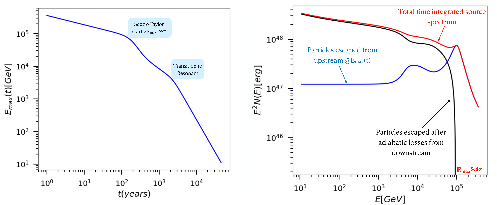<br />
图注：{\(\it\) Left}: maximum energy as a function of time for parameters typical of a type Ia SNR. {\(\it\) Right}: spectrum of particles released into the ISM from upstream (blue line), downstream (black line) and total (red line).<br />
对应解读：对应“建议重点查看的图表”中的1“源内逃逸示意图或演化图”和2“瞬时谱与逃逸谱对比图”，也直接对应“关键图表逐图导读”中的图2：Emax或逃逸时间随源年龄变化，以及源内/释放谱差异。<br />
入选理由：该图同时给出Ia型超新星遗迹参数下最大能量随时间的演化，以及上游、下游和总释放到星际介质中的粒子谱，是本文讨论“逃逸不是简单边界条件”的核心证据图。它能直接支撑高能粒子早期释放、低能粒子晚期释放，以及最终释放谱不同于任一时刻源内谱的解读，比其他候选图更贴近源内逃逸和释放谱形成机制。<br />
来源与置信度：\(arxiv_source\)；high；\(arxiv_source\) / main.tex:figure[1]</p>
<p><strong>Fig02</strong><br />
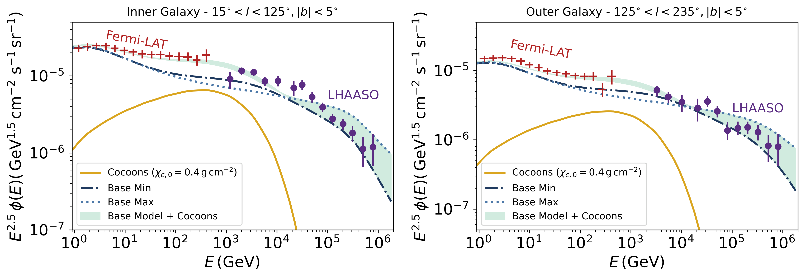<br />
图注：{\(\it\) Left}: Diffuse gamma ray emission in the inner Galaxy accounting for cocoons where CRs accumulate a grammage $0.4~\rm g/cm^2$ up to a rigidity $R_0$ (here we adopted $R_0=20~\rm TV$). {\(\it\) Right}: The same but for the outer Galaxy. In both panels, the gamma-ray SEDs are compared with Fermi-LAT and LHAASO data reported by~\(\cite{LHAASO:2024lnz}.\) Figure adapted from \(\cite{Ambrosone2025}.\)<br />
对应解读：对应“建议重点查看的图表”中的6“与宇宙线谱或硼碳比相关的模型曲线”和7“近源伽马射线亮度剖面或分子云照亮图”，也对应模型拟合段落中关于伽马射线SED、近源滞留和不同逃逸假设与观测数据比较的讨论。<br />
入选理由：该图比较了内、外银河弥散伽马射线SED与Fermi-LAT、LHAASO数据，并引入宇宙线在cocoon中积累额外grammage的模型，是连接近源逃逸/滞留与可观测伽马射线谱的关键图。虽然它不是扩散系数或波增长率的直接诊断图，但能展示逃逸假设如何进入多信使观测约束，适合支撑日报中关于近源区、伽马射线和模型退化的讨论。<br />
来源与置信度：\(arxiv_source\)；high；\(arxiv_source\) / main.tex:figure[2]</p>
<h4 id="_34">强相关工作</h4>
<p>这篇文章属于宇宙线起源、扩散激波加速和银河传播理论的同类/综述性工作，不对应某个单一命名事件或单一源。相关同类文献包括 Blasi 关于银河宇宙线起源的综述、Amato 与 Blasi 关于超新星遗迹中磁场放大和最大能量的工作，以及 Ptuskin、Zirakashvili 等关于宇宙线从超新星遗迹逃逸的模型。检索关键词可用“cosmic ray escape from supernova remnants”、“near-source diffusion cosmic rays”、“self-generated turbulence cosmic rays”、“Galactic cosmic ray halo boundary”。</p>
<p>与本文存在张力或互补的方向包括：标准均匀扩散晕模型、漏箱模型、近源慢扩散对 HAWC TeV halo 的解释，以及把谱硬化归因于源谱变化而非传播/逃逸变化的模型。读者应特别比较那些只用 \(D(E)\propto E^{\delta}\) 和固定 \(H\) 拟合 AMS-02 数据的工作，看看它们是否能同时满足各向异性和近源伽马射线约束。检索关键词可用“AMS-02 B/C diffusion halo height degeneracy”、“TeV halos slow diffusion”、“cosmic ray anisotropy problem diffusion models”。</p>
<p><strong>同一事件 / 同类源线索</strong>：</p>
<ul>
<li><a href="https://arxiv.org/abs/2607.06024">https://arxiv.org/abs/2607.06024</a></li>
<li><a href="https://arxiv.org/pdf/2607.06024">https://arxiv.org/pdf/2607.06024</a></li>
</ul>
<p><strong>相似工作</strong>：</p>
<ul>
<li><a href="https://arxiv.org/abs/1311.7346">https://arxiv.org/abs/1311.7346</a></li>
<li><a href="https://arxiv.org/abs/1210.4546">https://arxiv.org/abs/1210.4546</a></li>
<li><a href="https://arxiv.org/abs/0905.1831">https://arxiv.org/abs/0905.1831</a></li>
</ul>
<p><strong>基础理论 / 方法工作</strong>：</p>
<ul>
<li><a href="https://arxiv.org/abs/1003.4317">https://arxiv.org/abs/1003.4317</a></li>
<li><a href="https://arxiv.org/abs/1207.2144">https://arxiv.org/abs/1207.2144</a></li>
</ul>
<p><strong>相反观点 / 张力线索</strong>：</p>
<ul>
<li><a href="https://arxiv.org/abs/1603.07142">https://arxiv.org/abs/1603.07142</a></li>
<li><a href="https://arxiv.org/abs/1709.06560">https://arxiv.org/abs/1709.06560</a></li>
</ul>
</details>
<h3 id="4-an-intrinsic-decline-of-accretion-activity-in-grs-1915105">4. An intrinsic decline of accretion activity in GRS 1915+105</h3>
<ul>
<li>来源：arXiv / astro-ph.HE</li>
<li>链接：https://arxiv.org/abs/2607.06200v1</li>
<li>作者：Poshak Gandhi, Peter G. Boorman</li>
<li>评分：novelty 8/10，importance 8/10，relevance 8/10，final 9.00/10</li>
<li>推荐理由：Reports an exceptional hard-X-ray non-detection and multiwavelength fading of the canonical microquasar GRS 1915+105, favoring intrinsic accretion decline; important for jet/accretion state evolution in a key high-energy source.</li>
</ul>
<p><strong>中文题目</strong>：GRS 1915+105 吸积活动的内禀衰退</p>
<p><strong>做了什么</strong>：这篇文章讨论经典微类星体 GRS 1915+105 自 2018 年以来的异常变暗，核心问题是：它到底还在强吸积、只是被极厚物质遮住，还是吸积本身已经显著衰退？作者把 2025 年 11 月 NuSTAR 的深度未探测、2026 年 6 月的射电未探测，以及 2025–2026 年 SPHEREx 中红外变暗放在一起分析。结论是，如果仍维持历史上的强吸积，遮挡体必须是几乎全包围、深度康普顿厚且散射漏光比例低到约 \(<10^{-4}\) 量级，这在物理上很苛刻；中红外同步变暗也不支持“只是被挡住”。作者因此倾向于认为 GRS 1915+105 的内区供给已经被 2023–2024 年强烈喷流或外流逐步清空，吸积功率在 2025 年 11 月前后或更早发生了真实下降。</p>
<p><strong>为什么重要</strong>：GRS 1915+105 是黑洞 X 射线双星和相对论喷流研究中的基准源之一，过去几十年一直以接近或高于通常低质量 X 射线双星平均水平的强烈变源、盘-喷流耦合和复杂时变行为著称。如果这个源真的进入了内禀低吸积状态，而不是短暂遮挡，那么我们正在看到一个教科书级微类星体在人的观测时间尺度上发生长期吸积结构重组。这会影响我们对高吸积率黑洞双星寿命、盘耗尽、外流反馈和状态转换的理解。</p>
<p><strong>理论 / 观测 / 仪器方法价值</strong>：文章的价值不在于给出一个复杂新模型，而在于用多波段非探测和变暗事实排除了一类简单解释：仅靠普通遮挡很难同时解释硬 X 射线、射电和中红外的衰落。它把 NuSTAR 硬 X 射线上限转化为对康普顿厚遮挡几何和散射分数的强约束，又用 SPHEREx 中红外衰退检验再处理辐射或尘埃/气体包层情景。对观测上，这提示未来应优先做高频高角分辨率射电、深红外和亚毫米观测，以区分残余包层、喷流衰退和吸积盘真实变冷。</p>
<p><strong>为什么应该关注</strong>：如果你关心黑洞吸积盘、喷流反馈或 X 射线双星长期演化，这篇文章值得看，因为它提供了一个罕见案例：一个长期处于高活动状态的银河系黑洞候选体可能正在关机。它也提醒我们，多波段“未探测”本身可以是强物理约束，而不只是缺少数据。对理论工作者，GRS 1915+105 现在可能是检验外流能否清空内盘、吸积供给如何恢复的自然实验；对观测者，它给出了非常明确的后续观测判据。</p>
<details class="paper-detail">
<summary>展开详细解读：文章讲解、背景、理论、重点章节、图表与相关工作</summary>
<h4 id="_35">文章详细讲解</h4>
<p>科学问题：GRS 1915+105 曾长期被视为银河系中最极端的黑洞 X 射线双星之一，历史上在 X 射线、红外和射电波段都表现出强烈活动。从 2018 年左右开始，它进入前所未有的暗弱和复杂遮挡阶段。本文要回答的不是简单的“它变暗了吗”，而是更关键的物理问题：当前低亮度是由于视线方向出现了极厚遮挡，还是黑洞附近的吸积功率真的下降了？这一区分很重要，因为前者意味着中央引擎仍然强，只是被包层隐藏；后者意味着内盘供给、喷流和外流反馈正在经历长期结构变化。</p>
<p>作者怎么做：论文把 2025 年 11 月 NuSTAR 指向观测的硬 X 射线未探测作为核心证据。NuSTAR 对 \(3\text{--}79\,\mathrm{keV}\) 能段很敏感，尤其适合穿透普通吸收并搜寻被遮挡源的硬 X 射线泄漏。作者将这次非探测与 GRS 1915+105 的历史 X 射线通量比较，指出上限比历史典型水平低了数个数量级。然后他们检验“增强遮挡”情景：若内禀吸积仍像过去一样强，遮挡物必须达到深度康普顿厚，并且几乎覆盖整个天空，否则硬 X 射线透射或散射分量应被 NuSTAR 看到。</p>
<p>关键结果：论文进一步把 2026 年 6 月的深射电未探测和 2025 年 9 月、2026 年 4/5 月 SPHEREx 中红外变暗纳入同一解释框架。一个电离包层可以在原则上吸收或抑制射电辐射，但若中央源仍强，尘埃或外层气体应吸收高能辐射并在红外重新辐射，或者至少不应表现出与 X 射线同向的显著衰落。中红外也变暗使“只是被包层挡住”的解释变得不自然。作者因此认为，最一致的图像是吸积活动本身在 2025 年 11 月前后或更早已经大幅减弱。</p>
<p>局限和下一步：本文的证据链主要来自多波段上限和少数时间点的变暗，而不是连续、高信噪比的谱时演化。因此，仍不能完全排除一种精细调参的几何：例如全覆盖、强电离、极低散射、同时中红外发射效率降低的非球对称包层。作者也承认可能仍有气体包层遮蔽源区，只是它不再能单独解释全部现象。下一步最关键的是高频、高角分辨率射电观测以检查是否存在被自由-自由吸收的残余喷流或包层结构，以及更灵敏的红外/亚毫米观测来寻找冷气体、尘埃再辐射和恢复吸积的迹象。</p>
<h4 id="_36">关键结果是怎么做出来的</h4>
<p>本文最重要的结果建立在几个观测事实的组合上，而不是单一波段的亮度变化。样本不是大样本统计，而是对同一源 GRS 1915+105 的时间序列多波段约束：历史 X 射线强源状态、2018 年后的异常变化、2025 年 11 月 NuSTAR 深度未探测、2025 年 9 月和 2026 年 4/5 月 SPHEREx 中红外变暗，以及 2026 年 6 月射电未探测。读者应把它看成一个单源物理诊断问题：每个上限都在排除某类能量流路径。</p>
<p>NuSTAR 结果是证据链的硬核部分。若 GRS 1915+105 仍保持历史上接近强吸积的内禀 X 射线光度，那么在 \(3\text{--}79\,\mathrm{keV}\) 中，普通光电吸收不足以隐藏源；即便直达光被挡住，也应有康普顿散射或部分覆盖泄漏。作者将未探测转化为通量上限，并与历史硬 X 射线水平比较，得到散射或漏光分数必须低至 \(<10^{-4}\) 量级的要求。这不是常规“偏暗”的程度，而是对遮挡几何和柱密度提出了极端条件。</p>
<p>统计意义主要表现为上限约束和模型可行性比较，而不是传统的 \(5\sigma\) 新源探测。NuSTAR 非探测给出计数率和通量上限，进一步折算为若存在历史亮度中央源时允许的最大散射分量。文章的模型比较是物理排除式的：遮挡模型若要成立，需要同时满足深度康普顿厚、近乎全覆盖、极低散射、并与中红外变暗不冲突；内禀衰退模型则自然解释 X 射线和中红外一起下降，并与射电低态相容。</p>
<p>支撑结论的图表应包括多波段光变或通量上限图、红外- X 射线平面中的源位置、以及遮挡情景下所需的散射分数或柱密度约束。读者要注意，非探测图中的箭头不是弱证据；当上限远低于历史分布时，它本身就是强约束。特别应检查 NuSTAR 上限相对于历史 X 射线通量的数量级差异，以及 SPHEREx 中红外测光是否与历史红外水平有系统一致的下降。</p>
<p>系统误差方面，关键包括 NuSTAR 背景估计、源位置附近的混淆、吸收谱模型假设、距离和历史亮度代表性的选择、SPHEREx 中红外测光孔径和背景扣除，以及射电观测频率下自由-自由吸收的可能性。文章的稳健性不依赖单个绝对数值，而依赖跨波段同向衰落和遮挡解释所需条件的叠加苛刻性。只要硬 X 射线上限确实比历史水平低数个数量级，中红外又确实变暗，内禀吸积衰退就成为更经济的解释。</p>
<details class="paper-subdetail">
<summary>展开背景、理论、公式、模型、章节和图表导读</summary>
<h4 id="_37">背景知识</h4>
<p>GRS 1915+105 是银河系中最著名的微类星体之一，通常被解释为含有恒星质量黑洞的低质量 X 射线双星。它以强烈的 X 射线变源、超光速射电喷流、复杂光变类别和长期高吸积活动闻名。几十年来，它一直是研究黑洞吸积盘不稳定性、盘-喷流耦合和相对论外流的标准实验室。</p>
<p>历史上，GRS 1915+105 的特殊之处在于它不像许多瞬变黑洞双星那样只在短暂爆发后回到静默，而是长时间维持高亮状态。许多理论模型把它和接近爱丁顿吸积、辐射压不稳定、内盘反复清空与填充联系起来。源的行为复杂到形成了专门的 X 射线变源类别命名体系，因此任何长期状态变化都不仅是个别源新闻，而会影响一整套关于极端吸积的经验框架。</p>
<p>2018 年以来，GRS 1915+105 进入异常阶段：X 射线显著变暗，同时出现强吸收、红外和射电行为变化。这引出一个常见但危险的解释捷径：只要 X 射线变暗，就归因于遮挡增强。对 GRS 1915+105 这样的高倾角、富含外流和复杂局部介质的系统，遮挡当然合理；但如果遮挡要隐藏一个仍然强大的中央引擎，它必须在硬 X 射线、散射光和再处理红外上同时经受检验。</p>
<p>现在值得重新看的原因是多波段数据已经进入一个新阶段。NuSTAR 的深硬 X 射线上限、SPHEREx 的中红外测光和射电非探测一起提供了比单波段暗弱更有力的诊断。特别是中红外对再处理辐射敏感：如果一个明亮中央源被厚包层遮住，能量不应凭空消失，而应在其他波段以某种方式出现，除非几何、热化和逃逸路径都非常特殊。</p>
<p>该领域常见误区包括：第一，把视线吸收和全局包围混为一谈；视线被挡并不等于所有方向都被挡。第二，把软 X 射线暗弱直接等同于吸积减弱，而忽视硬 X 射线可穿透性。第三，把射电未探测简单理解为没有喷流，却不考虑自由-自由吸收或 synchrotron 自吸收。第四，忽视能量守恒：若内禀光度保持高位，被吸收的功率通常需要在红外、亚毫米或气体辐射中留下痕迹。</p>
<h4 id="_38">基础理论 / 方法脉络</h4>
<p>基本物理图像从黑洞双星的吸积功率开始。伴星供给的物质在黑洞周围形成吸积盘，重力势能通过黏滞、磁湍流和辐射过程释放。X 射线主要来自内盘和热冕区，射电通常与紧致喷流或离散抛射相关，红外可以包含伴星、外盘、喷流同步辐射以及尘埃/气体再处理辐射。对 GRS 1915+105，这些成分长期都很活跃，因此多波段变化可以追踪能量从内区到外区的转移。</p>
<p>遮挡与内禀变暗的区分依赖辐射转移。低能 X 射线容易被光电吸收削弱，而高能 X 射线更能穿透气体；当柱密度达到 \(N_{\rm H}\gtrsim 1/\sigma_{\rm T}\) 时，康普顿散射也会显著改变光子传播，这就是康普顿厚条件。若遮挡物只覆盖视线，其他方向逃逸的光可能被散射进视线；若遮挡物近乎全覆盖，则吸收的能量应被再处理并在红外或更长波段出现。</p>
<p>本文的关键假设比较简单：一种情景是内禀 X 射线源仍保持历史强度，只是被新形成或增强的包层遮住；另一种情景是内禀吸积活动已经下降。NuSTAR 硬 X 射线上限检验第一种情景的直达和散射漏光，SPHEREx 中红外变暗检验再处理能量是否存在，射电非探测检验喷流或被电离介质吸收后的低频表现。三个波段不是相互独立的“亮度点”，而是对同一能量预算的不同投影。</p>
<p>常见退化关系包括柱密度 \(N_{\rm H}\)、覆盖因子 \(C_{\rm f}\)、电离参数 \(\xi\)、散射分数 \(f_{\rm sc}\)、内禀光度 \(L_{\rm int}\) 之间的退化。较高 \(N_{\rm H}\) 可以降低透射 X 射线，较高 \(C_{\rm f}\) 可以减少逃逸路径，较高 \(\xi\) 会改变吸收边和自由-自由吸收，但这些参数不能任意调节而不影响红外再辐射和射电传播。因此，多波段上限的力量在于压缩这种退化空间。</p>
<p>观测分析逻辑上，非探测通常通过背景计数和仪器响应转化为通量上限。然后给定一个假定谱形，例如吸收幂律或热 Comptonization 谱，计算在 NuSTAR 能段应产生的计数。若预测计数远高于上限，该模型就被排除或要求极低的归一化。本文正是把这种上限推理应用到 GRS 1915+105 的历史亮度假设上，发现“强中央源加遮挡”的模型需要非常极端的几何。</p>
<h4 id="_39">公式与推导</h4>
<p>第一步是吸积释放功率。若质量吸积率为 \(\dot{M}\)，辐射效率为 \(\eta\)，内禀辐射光度可写为</p>
<div class="math-display">\[L_{\rm int}=\eta \dot{M}c^2 .\]</div>
<p>这里 \(c\) 是光速。本文讨论的“内禀衰退”本质上就是 \(\dot{M}\) 或有效 \(\eta\dot{M}\) 下降，而不是仅仅观测方向的透射率下降。</p>
<p>第二步是把光度与观测通量联系起来。对距离为 \(D\) 的源，未吸收能量通量近似为</p>
<div class="math-display">\[F_{\rm int}=\frac{L_{\rm int}}{4\pi D^2} .\]</div>
<p>如果历史上 GRS 1915+105 的 \(F_{\rm int}\) 很高，而 NuSTAR 现在给出远低的 \(F_{\rm obs}\) 上限，就必须解释二者之间的巨大比值。</p>
<p>第三步是视线吸收。简化地，能量为 \(E\) 的透射谱可写为</p>
<div class="math-display">\[F_E^{\rm trans}=F_E^{\rm int}\exp[-N_{\rm H}\sigma(E)] ,\]</div>
<p>其中 \(N_{\rm H}\) 是氢等效柱密度，\(\sigma(E)\) 包括光电吸收和散射截面。硬 X 射线中 \(\sigma(E)\) 较小，所以普通柱密度很难把 NuSTAR 能段压低数个数量级。</p>
<p>第四步是康普顿厚条件。电子散射光学深度为</p>
<div class="math-display">\[\tau_{\rm T}=N_{\rm H}\sigma_{\rm T} ,\]</div>
<p>其中 \(\sigma_{\rm T}\) 是 Thomson 截面。当 \(\tau_{\rm T}\gtrsim 1\)，即 \(N_{\rm H}\gtrsim \sigma_{\rm T}^{-1}\approx 1.5\times 10^{24}\,\mathrm{cm^{-2}}\)，介质进入康普顿厚。本文的论点更强：不仅要康普顿厚，还要深度康普顿厚并接近全覆盖。</p>
<p>第五步是散射或漏光分数。若中央源仍有历史光度，观测到的硬 X 射线可近似写为</p>
<div class="math-display">\[F_{\rm obs}\approx F_{\rm trans}+f_{\rm sc}F_{\rm int} ,\]</div>
<p>其中 \(f_{\rm sc}\) 是散射进入视线或部分覆盖泄漏的比例。NuSTAR 非探测给出</p>
<div class="math-display">\[f_{\rm sc}\lesssim \frac{F_{\rm lim}}{F_{\rm int}} ,\]</div>
<p>其中 \(F_{\rm lim}\) 是通量上限。文章指出该比例需要达到约 \(<10^{-4}\) 量级，说明遮挡模型必须极端抑制散射光。</p>
<p>第六步是全覆盖包层的能量再处理。若覆盖因子为 \(C_{\rm f}\)，被吸收并再处理的红外光度数量级为</p>
<div class="math-display">\[L_{\rm IR}\sim C_{\rm f}(1-a)L_{\rm int} ,\]</div>
<p>其中 \(a\) 是反照率或逃逸能量比例。若 \(C_{\rm f}\) 接近 \(1\) 且 \(L_{\rm int}\) 仍高，中红外不应无缘无故同步变暗；SPHEREx 变暗因此支持 \(L_{\rm int}\) 本身下降。</p>
<p>第七步是射电自由-自由吸收的可能性。电离气体对频率 \(\nu\) 的自由-自由光学深度可粗略写为</p>
<div class="math-display">\[\tau_{\rm ff}\propto T^{-3/2}\nu^{-2}\int n_e^2\,dl ,\]</div>
<p>其中 \(T\) 是电子温度，\(n_e\) 是电子数密度，积分项是发射量。电离包层可让低频射电变暗，但它不能单独解释硬 X 射线极低散射和中红外衰退的组合。</p>
<p>第八步是非探测的计数统计。若源区期望背景计数为 \(b\)，源模型贡献为 \(s\)，观测计数为 \(n\)，Poisson 似然为</p>
<div class="math-display">\[\mathcal{L}(s)=\frac{(s+b)^n e^{-(s+b)}}{n!} .\]</div>
<p>通量上限对应使累计后验或似然比达到给定置信度的 \(s_{\rm lim}\)，再通过仪器响应换算为 \(F_{\rm lim}\)。本文的物理结论依赖这个 \(F_{\rm lim}\) 与历史 \(F_{\rm int}\) 的巨大落差。</p>
<p>第九步是仪器响应折算。给定模型光子谱 \(N(E)\)，预期计数为</p>
<div class="math-display">\[s=t_{\rm exp}\int R(E)N(E)\,dE ,\]</div>
<p>其中 \(t_{\rm exp}\) 是曝光时间，\(R(E)\) 是有效面积和响应矩阵的简化表示。改变谱形会改变通量上限，但当上限比历史水平低数个数量级时，结论通常不由小的谱形选择主导。</p>
<h4 id="_40">模型拟合 / 应用方法</h4>
<p>这类工作的拟合量首先是各波段的通量或通量上限，而不是复杂的连续谱参数。NuSTAR 非探测需要从源位置计数、背景区域、曝光和响应矩阵得到 \(3\text{--}79\,\mathrm{keV}\) 或子能段通量上限。给定假设谱形，如吸收幂律、反射主导谱或 Comptonization 谱，可以把计数上限映射到能量通量上限。拟合中最敏感的是内禀归一化、柱密度和散射分数。</p>
<p>遮挡模型的参数空间包括 \(N_{\rm H}\)、\(C_{\rm f}\)、\(\xi\)、\(f_{\rm sc}\) 和内禀光度 \(L_{\rm int}\)。若固定 \(L_{\rm int}\) 为历史强源水平，NuSTAR 上限会把 \(N_{\rm H}\) 和 \(f_{\rm sc}\) 推向极端；若允许 \(L_{\rm int}\) 下降，所需遮挡条件立即放松。由此可见，\(L_{\rm int}\) 与遮挡参数之间存在强退化，但中红外变暗提供了额外约束，因为再处理辐射大致跟被遮挡的总功率相关。</p>
<p>红外数据的拟合或比较通常需要处理伴星、外盘、喷流和尘埃再处理成分。SPHEREx 中红外变暗若可靠，说明热尘埃或外层再处理成分也在下降。但这里也有系统误差：拥挤场中的背景扣除、孔径修正、源混淆、星际消光校正和不同历元仪器零点都可能影响绝对通量。关键不是单点测光的精确值，而是它相对于历史水平和 X 射线状态的协同变化。</p>
<p>射电上限的解释需要小心。紧致喷流本来就可能在低吸积态减弱，也可能被电离包层自由-自由吸收，或者在不同频率上因自吸收而有不同表现。因此射电未探测单独不能证明吸积衰退；它在本文中主要作为辅助证据：若还存在强中央引擎和强喷流，至少需要额外介质来隐藏射电，而这又会与 X 射线和红外能量预算产生耦合。</p>
<p>残差诊断上，读者应关注模型是否在某一波段“过度解释”而在另一波段失败。例如，一个全覆盖厚包层可以压低硬 X 射线，但若没有相应红外再辐射，就出现能量预算残差；一个高度电离包层可以改变 X 射线吸收边和射电自由-自由吸收，但可能无法让散射分数低到 \(<10^{-4}\)。实际应用上，最好的模型比较应采用联合似然或至少联合物理先验，把 X 射线、红外、射电上限同时纳入，而不是逐波段独立拟合。</p>
<h4 id="_41">重点章节 / 结果段落怎么读</h4>
<p>数据/观测事实部分应首先读。重点是 2025 年 11 月 NuSTAR 观测的曝光、能段、源位置处理、背景估计和通量上限，以及这些上限相对历史 GRS 1915+105 X 射线通量低了多少。这里决定了后面所有物理解释的力度。</p>
<p>遮挡情景分析部分是论文的逻辑核心。读者应检查作者如何从 NuSTAR 未探测推出深度康普顿厚和几乎全覆盖的要求，尤其是散射分数 \(f_{\rm sc}\) 的上限如何得到。不要只看“康普顿厚”这个标签，要看所需几何是否物理合理。</p>
<p>多波段比较部分需要和 X 射线约束一起读。SPHEREx 中红外在 2025 年 9 月和 2026 年 4/5 月的变暗，是排除单纯遮挡解释的重要环节。射电非探测则检验是否还有紧致喷流或被电离包层隐藏的外流。</p>
<p>解释与讨论部分提出了作者偏好的图像：2023–2024 年强多波段耀发和外流可能逐渐驱散或耗尽内盘供给物质，导致 2025 年前后吸积活动明显下降。读者应关注这个情景是否给出了可检验预言，例如未来红外/亚毫米是否能看到残余包层，射电高频是否能穿透自由-自由吸收。</p>
<p>稳健性或附加讨论部分应检查替代模型。尤其要看作者是否考虑了电离包层、全覆盖几何、散射漏光、红外再处理效率变化和源混淆等因素。本文结论的强度来自这些替代模型需要同时满足多个苛刻条件。</p>
<h4 id="_42">建议重点查看的图表</h4>
<ol>
<li>
<p>多波段长期光变图：重点看 2018 年前后的状态转折、2023–2024 年耀发、2025–2026 年 X 射线/红外/射电上限的位置，以及不同波段是否同向下降。</p>
</li>
<li>
<p>NuSTAR 图像或能谱上限图：检查源位置是否无显著超额、背景区域是否合理、硬能段是否也无探测，以及通量上限相对于历史亮度的数量级差异。</p>
</li>
<li>
<p>遮挡模型约束图：如果有 \(N_{\rm H}\)、\(C_{\rm f}\) 或 \(f_{\rm sc}\) 的约束，重点看哪些区域能隐藏历史亮度中央源，是否必须进入深度康普顿厚和极低散射区域。</p>
</li>
<li>
<p>红外- X 射线平面或通量相关图：检查 GRS 1915+105 当前点是否偏离历史或同类源关系，是否更接近内禀暗弱而非单纯吸收源。</p>
</li>
<li>
<p>SPHEREx 中红外测光比较表或图：看不同历元、不同波段的通量变化是否一致，误差条是否足以支持真实变暗，是否有拥挤场或背景系统误差提示。</p>
</li>
<li>
<p>射电上限与历史射电活动比较图：看观测频率、上限深度、历史喷流亮度范围，以及自由-自由吸收是否可能改变解释。</p>
</li>
<li>
<p>能量预算示意或表格：若论文给出各情景下预期再处理红外或散射 X 射线，重点看遮挡模型是否在能量守恒上紧张。</p>
</li>
<li>
<p>后续观测预言表：检查作者建议的高频射电、红外和亚毫米观测能否真正区分包层遮挡和内禀衰退。</p>
</li>
</ol>
<h4 id="_43">关键图表逐图导读</h4>
<p>图 1：若论文给出长期多波段光变，横轴应是时间，纵轴可能是 X 射线、红外和射电通量或亮度。数据点代表历史探测，向下箭头代表上限。主要读法是比较 2025–2026 年上限与历史活动水平的数量级差异。读图陷阱是把不同仪器、不同能段的点直接等同；应看作者是否做了能段转换或只进行相对比较。</p>
<p>图 2：NuSTAR 图像或源区计数诊断通常以天空坐标为轴，标出源位置、提取区域和背景区域。若没有明显源点扩展或峰值，说明非探测可靠。读者应注意附近是否有混淆源、背景是否有梯度、曝光是否在源位置均匀。若图中给出能谱上限，重点看硬能段是否仍然没有超额。</p>
<p>图 3：遮挡参数约束图可能以 \(N_{\rm H}\) 为横轴、散射分数 \(f_{\rm sc}\) 或覆盖因子 \(C_{\rm f}\) 为纵轴，模型允许区和排除区用阴影表示。主要结论应是：若内禀亮度保持历史水平，允许区域被推到深度康普顿厚、极低散射、近全覆盖的一角。读图陷阱是只看到存在允许区域，却忽视该区域物理上需要多重极端条件同时成立。</p>
<p>图 4：红外- X 射线平面通常以 X 射线通量或光度为一轴，中红外通量或颜色为另一轴。当前 GRS 1915+105 的位置若落在低 X 射线、低红外区域，说明它不像一个强中央源被完全再处理的系统。要注意距离、消光和不同历元非同时性的影响；非同时数据会增加散布，但若趋势幅度很大，结论仍有力。</p>
<p>图 5：SPHEREx 中红外历元比较图可按波长或时间展示通量。若各中红外波段都下降，说明不是单个滤波器异常。读者应检查误差条、背景扣除和颜色变化：如果只是短波段下降，可能与消光或恒星成分有关；如果宽波段同步下降，更支持总再处理功率变弱。</p>
<p>图 6：射电上限图若与历史射电耀发比较，纵轴可能是通量密度，横轴是时间或频率。主要结论是当前射电活动远低于强喷流阶段。读图陷阱是低频非探测可能由自由-自由吸收造成，因此需要高频射电或毫米波来确认喷流是否真的消失。</p>
</details>
<h4 id="_44">论文原图 / 可嵌入图片</h4>
<p><strong>Fig02</strong><br />
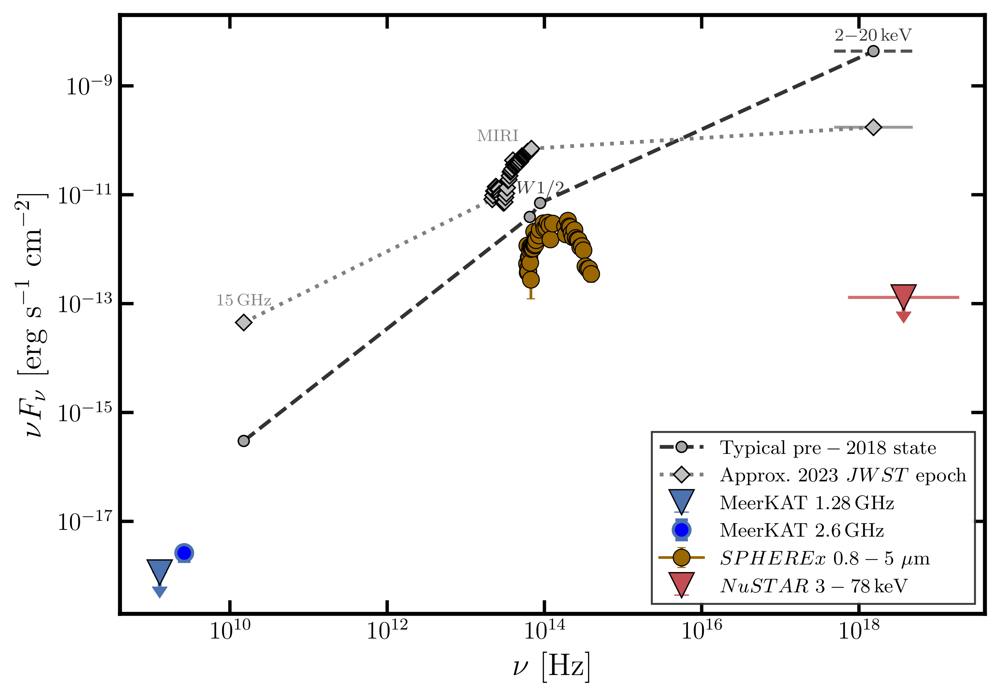<br />
图注：Broadband SED of \(\grs,\) with limiting radio (MeerKAT), infrared (\spx) and X-ray (\nustar) monochromatic fluxes in $\nu F_\nu$ units, from late 2025 through to mid-2026. Two comparison SEDs are shown: (1) a typical (approximate) SED from MJD 58,000, before the onset of the X-ray obscured state, is shown as the dashed line connecting gray circles; (2) the SED during strong multiwavelength flaring coordinated around {\(\em\) JWST}/MIRI in mid-2023 is represented by the dotted line connecting diamonds. Flux densities for both comparison SEDs are from \(\citet{Gandhi2025}\) and references therein.<br />
对应解读：对应“建议重点查看的图表”第1、2、5、6项，以及关键图表导读中的“图1：长期多波段光变/多波段上限比较”和“图6：射电上限与历史射电活动比较”。<br />
入选理由：这是最能支撑全文核心结论的多波段宽带SED图，直接把2025–2026年的MeerKAT射电上限、SPHEREx红外测量和NuSTAR X射线上限放在同一νFν框架下，并与2018年前典型状态和2023年强多波段耀发状态比较。它最清楚展示当前各波段相对于历史活动水平的数量级下降，是判断“内禀吸积衰退”优于“单纯遮挡”的关键证据。<br />
来源与置信度：\(arxiv_source\)；high；\(arxiv_source\) / ms.tex:figure[2]</p>
<p><strong>Fig03</strong><br />
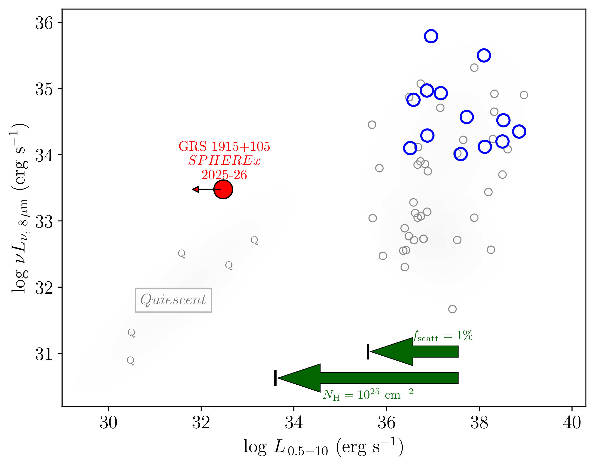<br />
图注：The \lmir--\lx\ plane for X-ray binaries, with \grs\ historical observations in the hard and obscured states in blue, and the extrapolated \spx\ flux at 8\,\micron\ as the large red circle. The thick green arrows denote X-ray flux decrements by factors of 100 and 10$^4$ (upper and lower arrows, respectively, with the latter originating in a Compton-thick column \(\nh\,=\,10\)$^{25}$\,cm$^{-2}$) relative to the median flux level observed historically. For the observations discussed here, \grs\ lies in the regime consistent with quiescent states. Adapted from \(\citet{Gandhi2026},\) with the remaining sources in that compilation shown in light grey circles (hard/soft) and with the letter `Q' for quiescent sources.<br />
对应解读：对应“建议重点查看的图表”第4项，以及关键图表导读中的“图4：红外-X射线平面或通量相关图”。<br />
入选理由：该图直接展示GRS 1915+105在中红外光度—X射线光度平面中的位置，并与其他X射线双星及历史硬态、遮挡态观测比较。红色当前点和X射线下降箭头把论文的关键判断可视化：当前源更接近静穰/低吸积区域，而不像一个仍然强亮但仅被遮挡的中央源。<br />
来源与置信度：\(arxiv_source\)；high；\(arxiv_source\) / ms.tex:figure[3]</p>
<p><strong>Fig04</strong><br />
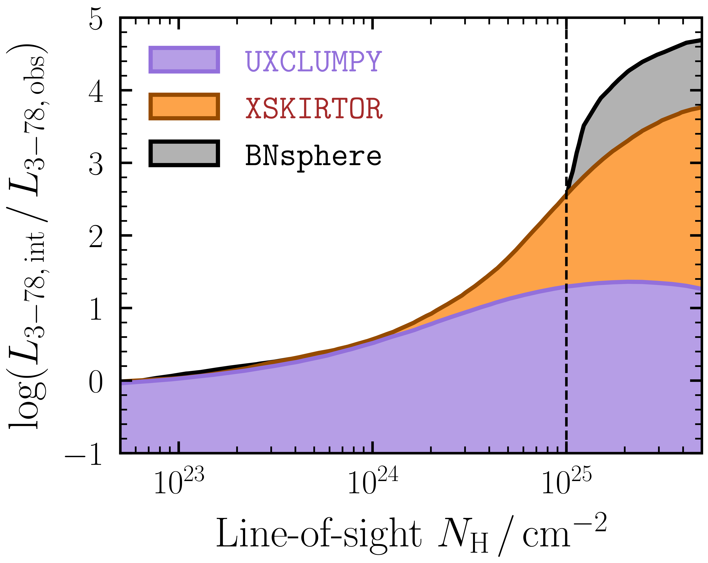<br />
图注：X-ray obscurer models and the impact of geometry and column density on the resultant suppression of X-ray emission in the 3\,--\,78\,keV passband. The y-axis shows the flux decrement (intrinsic/observed), as a function of line-of-sight column density on the x-axis.<br />
对应解读：对应“建议重点查看的图表”第3项，以及“模型拟合”中关于遮挡模型参数空间、柱密度和X射线压低因子的讨论。<br />
入选理由：该图是检验增强遮挡情景的核心模型约束图，横轴为视线柱密度，纵轴为3–78 keV通量压低因子，直接说明若历史强X射线源仍存在，需要多高的柱密度和怎样的几何才能逃过NuSTAR探测。它支撑了论文关于深度康普顿厚、近全覆盖遮挡条件过于极端的论证。<br />
来源与置信度：\(arxiv_source\)；high；\(arxiv_source\) / ms.tex:figure[4]</p>
<p><strong>Fig01</strong><br />
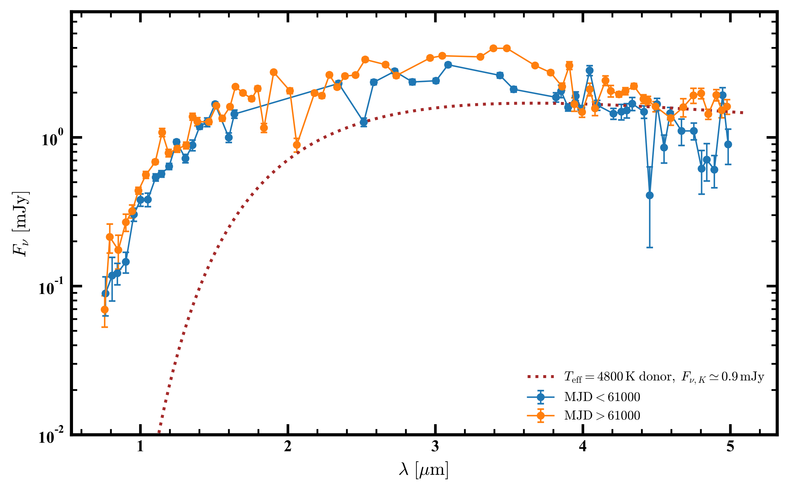<br />
图注：Average observed SEDs (across the \spx\ bands) of GRS\,1915+105, split into 2025 and 2026 epochs (blue and orange points, respectively). The dotted brown line is a $T=4800$\,K blackbody (K-giant donor) normalized to a $K$-band flux ($K_{\rm obs}\simeq14.7$, $F_\nu\approx 0.9$\,mJy), and reddened with the \(\citet{Chiar2006}\) extinction law with $A_K=2.4$. The donor model falls below the measured points at wavelengths $\lambda$\,$<$\,4\,\(\micron,\) showing an IR excess. Explanations for this excess, including potential contamination by near neighbours, are discussed in \S,\ref{sec:discussion_sed}.<br />
对应解读：对应“建议重点查看的图表”第5项，以及关键图表导读中的“图5：SPHEREx中红外历元比较图”。<br />
入选理由：该图专门展示2025与2026两个SPHEREx历元的红外SED，并叠加K巨星伴星黑体模型和消光处理，可用于判断中红外/近红外是否存在真实红外超额及其随时间变化。它对评估红外变暗是否支持再处理功率下降、以及是否可能受伴星或邻近源污染影响非常重要。<br />
来源与置信度：\(arxiv_source\)；high；\(arxiv_source\) / ms.tex:figure[1]</p>
<p><strong>Fig05</strong><br />
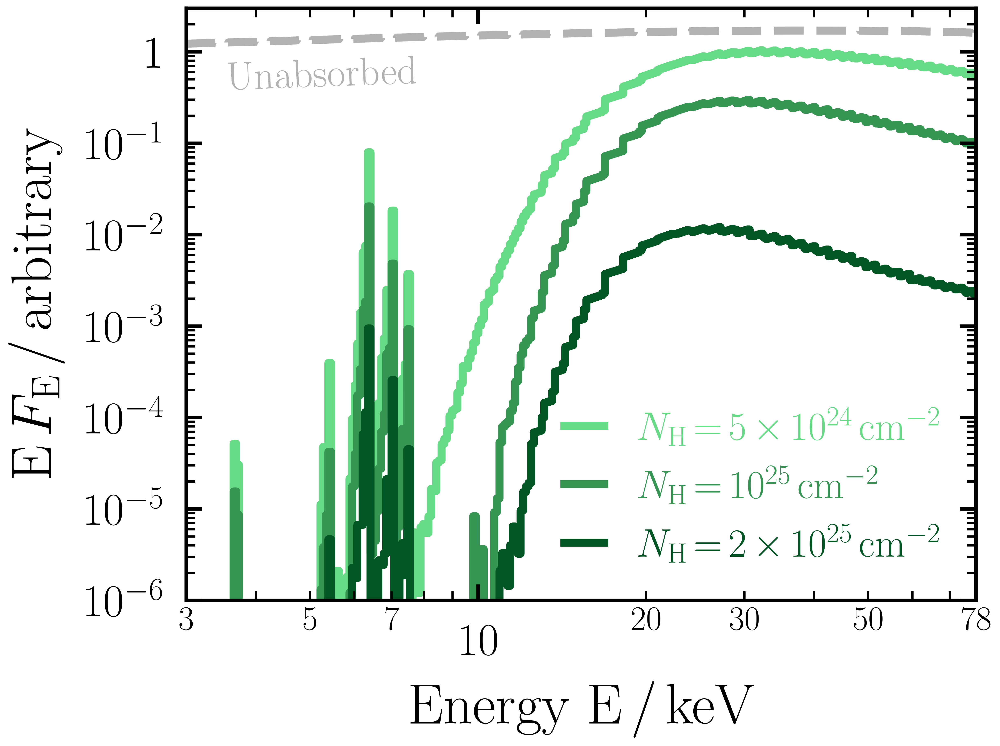<br />
图注：Representative (observed) X-ray model spectra produced by the {\(\tt\) BNsphere} model as a function of line-of-sight column density. The dramatic decline in the emergent X-ray spectrum, relative to the driving (unabsorbed) continuum, is apparent as \nh\ rises.<br />
对应解读：对应“建议重点查看的图表”第3项和第7项，以及“模型拟合”中关于BNsphere遮挡谱形、柱密度和残余硬X射线泄漏的讨论。<br />
入选理由：该图给出BNsphere模型下不同柱密度对应的观测X射线谱，补充Fig04的参数压低因子图，帮助读者理解随着NH升高，透射和散射的硬X射线如何被压低。它的科学价值略低于Fig04，因为更偏示意谱形而非直接参数约束，但仍能支持NuSTAR非探测对遮挡模型的物理限制。<br />
来源与置信度：\(arxiv_source\)；high；\(arxiv_source\) / ms.tex:figure[5]</p>
<h4 id="_45">强相关工作</h4>
<p>这篇工作与 GRS 1915+105 的历史研究直接相连，包括 1990 年代发现的超光速射电喷流、RXTE 时代的复杂 X 射线变源分类、以及长期高吸积状态下的盘-喷流耦合研究。它不是发现一个新源，而是在一个原型源上提出状态解释的转变：从“被遮挡的强源”转向“吸积活动真实衰退”。建议检索关键词包括 “GRS 1915+105 superluminal jets”, “GRS 1915+105 variability classes”, “GRS 1915+105 obscured state 2018”, “GRS 1915+105 NuSTAR faint state”。</p>
<p>相似工作包括其他黑洞 X 射线双星中长期暗弱、喷流淬灭和高倾角遮挡事件的研究，但 GRS 1915+105 的特殊性在于历史上持续高亮且多波段数据极丰富。相反观点或张力主要来自增强遮挡模型：高倾角系统确实容易产生盘风、包层和部分覆盖吸收，因此不能轻易排除遮挡。本文的贡献是指出，要让遮挡解释所有新数据，所需条件比普通盘风或视线吸收更极端。</p>
<p>源背景方面，GRS 1915+105 有同一源的大量历史论文、同类微类星体研究、黑洞 X 射线双星综述和喷流原型研究。读者若要追溯基础脉络，可从 Mirabel 与 Rodríguez 关于超光速喷流的经典论文、Belloni 等关于 X 射线变源类别的工作，以及 Fender 与 Belloni 关于盘-喷流耦合的综述入手。若要追最新争议，应检索 “GRS 1915+105 SPHEREx”, “GRS 1915+105 Compton-thick obscuration”, “GRS 1915+105 radio non-detection 2026”。</p>
<p><strong>同一事件 / 同类源线索</strong>：</p>
<ul>
<li><a href="https://arxiv.org/abs/2607.06200">https://arxiv.org/abs/2607.06200</a></li>
<li><a href="https://ui.adsabs.harvard.edu/abs/1994Natur.371...46M/abstract">https://ui.adsabs.harvard.edu/abs/1994Natur.371...46M/abstract</a></li>
<li><a href="https://ui.adsabs.harvard.edu/abs/2000A%26A...355..271B/abstract">https://ui.adsabs.harvard.edu/abs/2000A%26A...355..271B/abstract</a></li>
</ul>
<p><strong>相似工作</strong>：</p>
<ul>
<li><a href="https://ui.adsabs.harvard.edu/abs/1994Natur.371...46M/abstract">https://ui.adsabs.harvard.edu/abs/1994Natur.371...46M/abstract</a></li>
<li><a href="https://ui.adsabs.harvard.edu/abs/2000A%26A...355..271B/abstract">https://ui.adsabs.harvard.edu/abs/2000A%26A...355..271B/abstract</a></li>
</ul>
<p><strong>基础理论 / 方法工作</strong>：</p>
<ul>
<li><a href="https://ui.adsabs.harvard.edu/abs/2004ARA%26A..42..317F/abstract">https://ui.adsabs.harvard.edu/abs/2004ARA%26A..42..317F/abstract</a></li>
<li><a href="https://ui.adsabs.harvard.edu/abs/2006csxs.book..381M/abstract">https://ui.adsabs.harvard.edu/abs/2006csxs.book..381M/abstract</a></li>
</ul>
<p><strong>相反观点 / 张力线索</strong>：</p>
<p>（未提供）</p>
</details>
<h3 id="5-unveiling-the-local-environment-of-frb-20220912a-sub-arcsecond-astro_math_1783-ghz-radio-continuum-mapping">5. Unveiling the Local Environment of FRB 20220912A: Sub-arcsecond $4-26$ GHz Radio Continuum Mapping</h3>
<ul>
<li>来源：arXiv / astro-ph.HE</li>
<li>链接：https://arxiv.org/abs/2607.05950v1</li>
<li>作者：Yash Bhusare, Yogesh Maan, Mohit Bhardwaj, Thomas C. Abbott, Yuxin Dong, Danté M. Hewitt, Afrokk Khan</li>
<li>评分：novelty 8/10，importance 8/10，relevance 8/10，final 9.00/10</li>
<li>推荐理由：High-resolution VLA mapping finds a resolved radio source at the FRB 20220912A position and argues for a compact star-forming region, strengthening young-magnetar progenitor evidence for a major repeating FRB.</li>
</ul>
<p><strong>中文题目</strong>：揭开 FRB 20220912A 的局部环境：亚角秒分辨率的 \(4\)--\(26\,\mathrm{GHz}\) 射电连续谱成图</p>
<p><strong>做了什么</strong>：这篇论文用 VLA 在 \(4\)--\(26\,\mathrm{GHz}\) 对高活跃重复暴 FRB 20220912A 的宿主位置做亚角秒连续谱成图，发现一个与 FRB 位置空间重合、但与宿主星系中心相距约 \(300\,\mathrm{mas}\) 即约 \(450\,\mathrm{pc}\) 的射电源。它不像 FRB 20121102A 或 FRB 20190520B 那类亚秒差距尺度的致密持续射电源；结合既有 VLBI 毫角秒观测未探测到连续谱，作者认为该源被 VLBI 分辨掉，物理直径约在 \(75\)--\(190\,\mathrm{pc}\)。其射电谱为陡谱非热谱，谱指数约 \(\alpha\simeq -0.73\)，并对应很高的恒星形成率面密度 \(\Sigma_{\rm SFR}\gtrsim 13\,M_\odot\,\mathrm{yr}^{-1}\,\mathrm{kpc}^{-2}\)。核心结论是：FRB 20220912A 很可能位于宿主星系内一个紧凑、强烈恒星形成区，而不是被一个超致密中央引擎供能的 PRS 包围。</p>
<p><strong>为什么重要</strong>：重复 FRB 的局部环境是区分年轻磁星、双星相互作用、致密天体并合遗迹、活动星系核污染等模型的关键。本文把一个高活跃重复源的射电连续谱环境从“有没有持续射电源”推进到“这个源的尺度、谱形、亮度和恒星形成面密度是什么”，因此直接约束了 FRB 发源地的年龄和母族群。</p>
<p><strong>理论 / 观测 / 仪器方法价值</strong>：观测价值在于多频 VLA 成图和 VLBI 非探测共同给出尺度约束，避免把所有 FRB 位置上的射电连续谱都解释成致密 PRS。方法价值在于把射电谱指数、亮温、角尺度、恒星形成率面密度和宿主内偏移量联合起来判断物理起源。理论价值在于支持至少一部分重复 FRB 来自大质量恒星死亡后形成的年轻磁星，并提示 FRB 局部环境可能从超致密星云到百秒差距恒星形成区存在连续谱系。</p>
<p><strong>为什么应该关注</strong>：如果你关心 FRB 前身星，这篇文章值得看，因为它说明“有射电连续谱邻居”并不自动等于“FRB 中央引擎驱动的致密 PRS”。如果你做射电干涉或宿主星系研究，它提供了一个很好的案例：只有把 VLA 的表面亮度灵敏度和 VLBI 的高分辨率非探测一起解释，才能把源的物理尺度和成因说清楚。</p>
<details class="paper-detail">
<summary>展开详细解读：文章讲解、背景、理论、重点章节、图表与相关工作</summary>
<h4 id="_46">文章详细讲解</h4>
<p>科学问题：重复 FRB 的局部环境是否统一？早期最著名的 FRB 20121102A 和后来的 FRB 20190520B 都与紧凑持续射电源有关，这使人们一度倾向于把重复 FRB 与年轻磁星风星云、超新星遗迹或低光度活动核联系起来。但越来越多重复源没有明显 PRS，说明“持续射电源”可能不是必要条件。FRB 20220912A 是一个高活跃重复源，因此它的局部连续谱环境尤其适合检验：活跃重复是否必然伴随致密、明亮、中央引擎供能的射电星云？</p>
<p>作者怎么做：论文使用 Karl G. Jansky Very Large Array 在 \(4\)--\(26\,\mathrm{GHz}\) 多频段进行亚角秒连续谱成图，并将射电源位置与 FRB 定位、宿主星系中心位置比较。关键技术点不是单一频段探测，而是利用多频通量密度测量拟合谱指数 \(\alpha\)，再结合角分辨率和 VLBI 非探测推断源是否紧凑。若一个源在 VLA 中出现、但在毫角秒 VLBI 中消失，常见解释是其表面亮度被高分辨率阵列分辨掉，而不是源不存在。</p>
<p>关键结果：作者报告一个此前未知的射电源，与 FRB 位置空间一致，但相对宿主星系中心偏移约 \(300\,\mathrm{mas}\)，换算为投影距离约 \(450\,\mathrm{pc}\)。该源不是小于 \(1\,\mathrm{pc}\) 的超紧凑核心源；结合 VLA 可见而 VLBI 不见，作者约束其物理直径约在 \(75\)--\(190\,\mathrm{pc}\)。其频谱为陡谱非热谱，\(S_\nu\propto \nu^\alpha\) 且 \(\alpha\simeq -0.73\)，与同步辐射主导的恒星形成区相容。由射电光度换算得到的恒星形成率面密度非常高，\(\Sigma_{\rm SFR}\gtrsim 13\,M_\odot\,\mathrm{yr}^{-1}\,\mathrm{kpc}^{-2}\)，表明这是宿主内一个紧凑且剧烈的恒星形成位置。</p>
<p>局限和下一步：这篇工作的核心推断依赖射电连续谱起源判别，仍需要更高灵敏度、更多频率点和其他波段检验。例如，若有热自由-自由吸收、年轻超新星遗迹混合贡献、弥散宇宙线电子扩散，简单幂律谱可能低估复杂性。下一步应获取高分辨率光学/红外成像和积分场光谱，测量局部 \(\mathrm{H}\alpha\)、\([\mathrm{O\,III}]\)、尘埃消光、金属丰度和恒星族年龄；射电上则需要在中间基线长度上补足 VLA 与 VLBI 之间的尺度空白，以直接成像 \(10\)--\(100\,\mathrm{pc}\) 结构。</p>
<h4 id="_47">关键结果是怎么做出来的</h4>
<p>本文最重要的证据链从样本选择开始：对象不是一个普通非重复 FRB，而是高活跃重复源 FRB 20220912A。作者针对这个单一源的宿主局部环境做深度射电连续谱成图，频率覆盖 \(4\)--\(26\,\mathrm{GHz}\)。这种频率覆盖足以区分平谱致密核、陡谱同步辐射区以及可能受自由-自由吸收影响的低频谱形，但本文给出的主要结论集中在陡谱非热辐射和空间尺度上。</p>
<p>事件数或样本量层面，这不是统计样本论文，而是一个高信息量个例。关键数据点是多频 VLA 通量密度测量、FRB 定位与连续谱源位置的一致性、宿主中心与该源的角距离，以及既有 VLBI 毫角秒连续谱非探测。读者应注意：单个源不能给出重复 FRB 总体比例，但它能强力排除某些局部解释，尤其是“小于 \(1\,\mathrm{pc}\) 的 FRB 中央引擎持续源”这一类模型。</p>
<p>显著性和置信度的逻辑主要来自位置、谱形和尺度三方面联合，而不只是单个通量探测。第一，射电源与 FRB 位置一致，且与宿主中心有约 \(450\,\mathrm{pc}\) 的投影偏移，因此不优先解释为星系核。第二，VLA 探测而 VLBI 非探测意味着如果总通量真实存在，则其亮度分布不能集中在毫角秒尺度。第三，多频通量给出 \(\alpha\simeq -0.73\)，这与恒星形成相关同步辐射接近，而与自吸收致密核的平谱或倒谱不一致。</p>
<p>模型比较的实质是物理起源排除：中央引擎驱动的超致密 PRS、低光度 AGN、背景射电源、超新星遗迹复合体、宿主内紧凑恒星形成区。作者的偏移量、VLBI 非探测、尺寸约束、陡谱和高 \(\Sigma_{\rm SFR}\) 共同使“宿主内紧凑恒星形成区”成为最自然解释。读者应重点看位置叠加图、多频谱能量分布图、VLA 与 VLBI 分辨率/上限比较，以及由源尺寸导出的 \(\Sigma_{\rm SFR}\) 约束表。</p>
<p>系统误差主要包括通量标定误差、不同频段的 \(u\)-\(v\) 覆盖差异、清洁成图对扩展结构的响应、FRB 与宿主参考系的天体测量配准误差、以及把射电光度转换为 \(\mathrm{SFR}\) 时的星族初始质量函数和宇宙线校准不确定性。稳健性检验应关注：谱指数在剔除某个频点后是否稳定；源在不同加权方案下是否仍显著；VLBI 非探测上限是否足以排除 \(<1\,\mathrm{pc}\) 紧凑源；以及源的尺寸下限和上限如何随成图波束、信噪比和表面亮度灵敏度变化。</p>
<details class="paper-subdetail">
<summary>展开背景、理论、公式、模型、章节和图表导读</summary>
<h4 id="_48">背景知识</h4>
<p>快速射电暴是毫秒级射电脉冲，亮温极高，必须来自相干辐射过程。重复 FRB 的存在排除了所有 FRB 都是灾变性一次性事件的解释，并把磁星、年轻中子星、致密双星磁层相互作用等模型推到前台。FRB 20220912A 的特别之处在于它是一个高活跃重复源，因此它的宿主环境可以用来检验“活跃重复是否偏好年轻、高恒星形成率环境”。</p>
<p>历史上，FRB 20121102A 的精确定位和与持续射电源的关联极大影响了领域判断。那个系统的 PRS 极其紧凑、明亮，位于低金属丰度矮星系的恒星形成区，让年轻磁星风星云模型很有吸引力。FRB 20190520B 也显示类似 PRS 和复杂传播环境，使人们怀疑存在一类“年轻、嵌埋、活跃”的重复 FRB。但其他重复源缺少类似 PRS，说明这个图景不是普适模板。</p>
<p>观测背景上，区分 PRS、恒星形成区和活动星系核需要同时看角尺度、谱指数、宿主内位置、亮温和多波段对应体。VLA 对百毫角秒到角秒尺度结构灵敏，适合发现宿主内扩展射电发射；VLBI 对毫角秒尺度紧凑核灵敏，但会分辨掉低表面亮度扩展源。因此，VLA 探测加 VLBI 非探测并不矛盾，反而是尺度诊断。</p>
<p>为什么现在值得重新看：FRB 定位样本快速增大，单纯问“有没有宿主星系”已经不够。下一步是把 FRB 放到宿主内部的具体物理位置上：旋臂、星团、核区、外盘、球状星团还是恒星形成结。FRB 20220912A 的高活跃性和精确定位使其成为连接爆发现象与局部恒星形成环境的关键样本。</p>
<p>常见误区有三点。第一，不能把任何与 FRB 重合的射电连续谱都称为 PRS；PRS 通常暗含紧凑、持续、可能与中央引擎有关的物理解释。第二，陡谱射电源不一定是 AGN 喷流，也可能是恒星形成导致的宇宙线电子同步辐射。第三，VLBI 非探测不等于没有射电发射，而是对高亮温、小角尺度成分给出强约束。</p>
<h4 id="_49">基础理论 / 方法脉络</h4>
<p>基础物理图像是：大质量恒星形成区会产生短寿命大质量星，随后通过核心坍缩超新星留下中子星或磁星。超新星冲击和恒星风会加速宇宙线电子，这些电子在星际磁场中产生同步辐射，射电谱通常是陡谱，近似满足 \(S_\nu\propto \nu^\alpha\)，其中 \(\alpha\) 常在 \(-1\) 到 \(-0.5\) 附近。若 FRB 来自年轻磁星，那么它位于强恒星形成区是自然但并非唯一的预期。</p>
<p>对于致密 PRS，物理图像不同。若持续射电源由年轻磁星风星云、超新星遗迹内部能量注入或低光度活动核供能，它可能具有更高亮温、更小物理尺度，甚至在 VLBI 上仍保持未分辨。本文的关键判别正是把 VLA 的总通量探测和 VLBI 的小尺度上限结合起来：若通量在 VLA 中存在但 VLBI 中消失，辐射区域必须足够扩展或表面亮度足够低。</p>
<p>本文使用的关键量包括通量密度 \(S_\nu\)、谱指数 \(\alpha\)、角直径 \(\theta\)、物理直径 \(D\)、射电光度 \(L_\nu\)、恒星形成率 \(\mathrm{SFR}\)、恒星形成率面密度 \(\Sigma_{\rm SFR}\) 和亮温 \(T_{\rm b}\)。这些量分别回答不同问题：谱指数区分辐射机制，尺寸区分紧凑中央源与恒星形成区，\(\Sigma_{\rm SFR}\) 判断该区域是否异常强烈，亮温则约束相干或非热紧凑核的可能性。</p>
<p>观测方法上，VLA 多频连续谱成图需要考虑不同频率下波束大小和 \(u\)-\(v\) 覆盖差异。若直接比较不同频率图像，扩展通量可能因分辨率和短基线覆盖不同而产生伪谱指数。因此专业读者应检查作者是否使用匹配波束、合适加权、相同区域积分通量，以及是否把标定误差计入谱指数不确定度。</p>
<p>主要退化关系包括：射电光度到 \(\mathrm{SFR}\) 的换算依赖初始质量函数和恒星形成历史；源面积越小，\(\Sigma_{\rm SFR}\) 越高，因此尺寸下限直接影响结论强度；陡谱同步辐射既可来自恒星形成，也可来自老化 AGN 等离子体。本文通过宿主内偏移、非核位置和 VLBI 非探测来削弱 AGN 或超紧凑中央源解释。</p>
<h4 id="_50">公式与推导</h4>
<p>第一步从连续谱的基本定义开始。射电干涉测得的是通量密度 \(S_\nu\)，若源在红移 \(z\) 处、光度距离为 \(D_{\rm L}\)，单色光度可写为</p>
<div class="math-display">\[L_{\nu_{\rm em}}=4\pi D_{\rm L}^2\,S_{\nu_{\rm obs}}\,(1+z)^{-1},\quad \nu_{\rm em}=(1+z)\nu_{\rm obs}.\]</div>
<p>这里 \(L_{\nu_{\rm em}}\) 是发射系频率处的单色光度，\(S_{\nu_{\rm obs}}\) 是观测频率处的通量密度。若进一步做幂律 \(K\)-校正，需要把谱指数纳入。</p>
<p>多频谱形通常写成幂律</p>
<div class="math-display">\[S_\nu=S_{\nu_0}\left(\frac{\nu}{\nu_0}\right)^\alpha,\]</div>
<p>其中 \(S_{\nu_0}\) 是参考频率 \(\nu_0\) 的通量密度，\(\alpha\) 是谱指数。对两点通量，估计量为</p>
<div class="math-display">\[\alpha=\frac{\ln(S_{\nu_2}/S_{\nu_1})}{\ln(\nu_2/\nu_1)}.\]</div>
<p>本文报告 \(\alpha\simeq -0.73\)，其物理含义是高频通量随频率下降，符合非热同步辐射的陡谱特征。</p>
<p>角尺度到物理尺度由角直径距离 \(D_{\rm A}\) 给出：</p>
<div class="math-display">\[D=\theta D_{\rm A},\quad D_{\rm A}=\frac{D_{\rm L}}{(1+z)^2}.\]</div>
<p>这里 \(\theta\) 需用弧度。论文把约 \(300\,\mathrm{mas}\) 的角偏移换算为约 \(450\,\mathrm{pc}\) 的投影距离，同样使用这一几何关系。源直径 \(75\)--\(190\,\mathrm{pc}\) 则来自 VLA 分辨与 VLBI 分辨掉之间的尺度夹逼。</p>
<p>若源近似为角面积 \(\Omega\) 的高斯或均匀斑块，亮温可由 Rayleigh-Jeans 近似估计：</p>
<div class="math-display">\[T_{\rm b}=\frac{c^2 S_\nu}{2k_{\rm B}\nu^2\Omega}.\]</div>
<p>其中 \(c\) 是光速，\(k_{\rm B}\) 是玻尔兹曼常数，\(\Omega\) 是源的立体角。致密中央引擎源若具有同样通量但极小 \(Ω\)，会给出很高 \(T_{\rm b}\) 并应更容易被 VLBI 看到；本文的非探测说明这种极小尺度高亮温解释不优先。</p>
<p>射电光度可转化为恒星形成率，常用经验形式为</p>
<div class="math-display">\[\mathrm{SFR}=C_\nu L_\nu,\]</div>
<p>其中 \(C_\nu\) 依赖频率、初始质量函数、恒星形成历史和热/非热成分校准。本文关注的是数量级和面密度，因此更关键的是</p>
<div class="math-display">\[\Sigma_{\rm SFR}=\frac{\mathrm{SFR}}{A},\quad A\simeq \pi\left(\frac{D}{2}\right)^2.\]</div>
<p>当 \(D\) 被限制在 \(75\)--\(190\,\mathrm{pc}\) 时，同一 \(\mathrm{SFR}\) 会对应很高的 \(\Sigma_{\rm SFR}\)，这就是论文得到 \(\Sigma_{\rm SFR}\gtrsim 13\,M_\odot\,\mathrm{yr}^{-1}\,\mathrm{kpc}^{-2}\) 的核心尺度逻辑。</p>
<p>干涉成图中，观测到的可见度近似为天空亮度的傅里叶采样：</p>
<div class="math-display">\[V(u,v)=\int I(l,m)\exp[-2\pi i(ul+vm)]\,dl\,dm.\]</div>
<p>长基线 VLBI 对小尺度高空间频率敏感，短基线 VLA 对较大角尺度表面亮度更敏感。若 \(V(u,v)\) 在长基线处趋弱，即使总通量不低，VLBI 图像也可能非探测。</p>
<p>通量测量和源模型通常通过 \(\chi^2\) 或高斯似然拟合：</p>
<div class="math-display">\[\chi^2=\sum_i \frac{[S_i-S_{\nu_0}(\nu_i/\nu_0)^\alpha]^2}{\sigma_i^2},\]</div>
<p>其中 \(S_i\) 和 \(\sigma_i\) 是第 \(i\) 个频点的通量密度及误差。这个式子直接给出 \(S_{\nu_0}\) 与 \(\alpha\) 的最佳拟合和协方差，也让读者检查单一幂律是否足够。</p>
<p>位置关联可用二维误差椭圆直观表示。若 FRB 位置与连续谱源位置差为 \(\Delta \boldsymbol{x}\)，总协方差为 \(\mathbf{C}\)，则归一化偏移为</p>
<div class="math-display">\[R^2=\Delta \boldsymbol{x}^{\rm T}\mathbf{C}^{-1}\Delta \boldsymbol{x}.\]</div>
<p>当 \(R\) 较小，位置一致性强；当与宿主星系中心的偏移显著大于天体测量误差时，核源解释变弱。</p>
<h4 id="_51">模型拟合 / 应用方法</h4>
<p>本文这类工作最直接的拟合是多频通量密度的幂律谱拟合。被拟合量是各频段积分通量 \(S_i\)，参数通常是参考通量 \(S_{\nu_0}\) 和谱指数 \(\alpha\)。似然可近似取高斯形式，误差项应同时包括图像热噪声、通量标定误差和源提取误差。若不同频段分辨率不匹配，系统误差可能比统计误差更重要。</p>
<p>第二类拟合是图像平面或 \(u\)-\(v\) 平面的源尺寸拟合。若源略有扩展，可用二维高斯模型估计去卷积角尺度；若 VLA 未充分分辨，只能给出上限或范围。VLBI 非探测则提供小尺度紧凑成分的上限。把二者结合，相当于对源尺寸施加区间约束：太小会被 VLBI 看到，太大则不符合 VLA 图像中的紧凑程度或表面亮度分布。</p>
<p>第三类推断是物理起源模型比较。恒星形成区模型需要解释 \(L_\nu\)、\(\alpha\)、\(D\) 和 \(\Sigma_{\rm SFR}\)；致密 PRS 模型需要解释为何 VLBI 看不到；AGN 模型需要解释非核偏移和没有明显紧凑核心。这里未必有正式贝叶斯证据比值，但读者可以把每个观测量看成对模型参数空间的切割。</p>
<p>主要退化关系包括 \(\mathrm{SFR}\)-面积退化、谱指数-热成分退化、源尺寸-表面亮度灵敏度退化，以及天体测量误差-位置关联退化。特别是 \(\Sigma_{\rm SFR}\) 对面积非常敏感：若真实发射区比估计更小，面密度更高；若存在低表面亮度外延被漏掉，面密度可能被高估。通量到 \(\mathrm{SFR}\) 的转换还受尘埃、宇宙线逃逸和磁场强度影响。</p>
<p>残差诊断应看两个层面。图像残差中若出现系统性正负瓣，可能说明点源或单高斯模型不足；频谱残差若在低频偏低，可能提示自由-自由吸收，若高频变平，可能有热自由-自由辐射贡献。实际应用中，这套方法可推广到其他定位良好的 FRB：先判断是否有局部连续谱，再用多分辨率射电数据拆分紧凑 PRS 与扩展恒星形成贡献。</p>
<h4 id="_52">重点章节 / 结果段落怎么读</h4>
<p>数据/样本部分应先看作者如何定义 FRB 20220912A 的位置、宿主星系中心和 VLA 观测设置。重点是频段覆盖、阵列构型、波束大小、积分时间、通量标定源和相位标定策略，因为这些决定位置精度与扩展源灵敏度。</p>
<p>成图和源提取方法部分要关注是否对不同频率采用匹配分辨率或一致的积分区域。多频谱指数只有在通量测量可比时才可靠；如果某些频段缺短基线，扩展通量可能被低估，从而使谱指数偏陡或偏平。</p>
<p>主结果部分应重点读三个结论：发现与 FRB 位置重合的射电连续谱源；该源相对宿主中心偏移约 \(450\,\mathrm{pc}\)；结合 VLBI 非探测把尺度限制在 \(75\)--\(190\,\mathrm{pc}\)。这三点共同支撑“非核、非超紧凑”的判断。</p>
<p>物理解释部分要看作者如何从 \(\alpha\simeq -0.73\) 和 \(\Sigma_{\rm SFR}\gtrsim 13\,M_\odot\,\mathrm{yr}^{-1}\,\mathrm{kpc}^{-2}\) 推出紧凑恒星形成区。读者应检查他们是否讨论 AGN、背景源、超新星遗迹复合体和磁星风星云等替代解释。</p>
<p>讨论和稳健性检验部分最值得关注的是 VLBI 非探测的含义。非探测只有在给出足够低的紧凑通量上限时才真正排除 \(<1\,\mathrm{pc}\) PRS；如果上限不够深，只能说未发现紧凑成分。</p>
<h4 id="_53">建议重点查看的图表</h4>
<ol>
<li>
<p>VLA 连续谱等值线叠加在光学或红外宿主图像上的位置图：看 FRB 位置、射电源峰值、宿主中心和误差椭圆是否真正分离。</p>
</li>
<li>
<p>多频 VLA 图像或同一波束下的分频段图：看源是否在各频段一致出现，是否有频率相关形态变化，旁瓣或清洁残差是否可能影响通量。</p>
</li>
<li>
<p>射电谱 \(S_\nu\)-\(\nu\) 图：看数据点误差、最佳拟合幂律、\(\alpha\simeq -0.73\) 的置信区间，以及是否存在低频吸收或高频变平。</p>
</li>
<li>
<p>VLA 与 VLBI 尺度/通量比较图或表：看 VLBI 上限相对于 VLA 总通量有多低，是否足以说明源被分辨掉。</p>
</li>
<li>
<p>源尺寸约束和 \(Σ_{\rm SFR}\) 推导表：看直径 \(75\)--\(190\,\mathrm{pc}\) 如何得到，面积假设如何影响 \(\Sigma_{\rm SFR}\)。</p>
</li>
<li>
<p>替代模型比较表或讨论图：看作者如何排除超紧凑 PRS、AGN 和背景源，哪些排除是强约束，哪些只是倾向性判断。</p>
</li>
</ol>
<h4 id="_54">关键图表逐图导读</h4>
<p>图 1：通常应是宿主星系图像加 VLA 射电等值线。横纵轴应为赤经和赤纬偏移或天球坐标，图上应标出 FRB 定位、宿主中心和射电连续谱源。主要结论是射电源与 FRB 位置一致但不在星系核。读图陷阱是不要只看等值线峰值；要比较误差椭圆、绝对天体测量误差和宿主中心定位误差。</p>
<p>图 2：多频段 VLA 成图或分频段检测图。坐标轴仍为空间位置，模型线可能是波束椭圆或等值线级别。应看源在 \(4\)--\(26\,\mathrm{GHz}\) 是否稳定出现，是否随频率被分辨或变弱。陷阱是高频波束更小、表面亮度灵敏度不同，不能把高频弱化简单等同于谱变陡。</p>
<p>图 3：射电谱图。横轴应为 \(\nu\)，纵轴为 \(S_\nu\)，数据点为各频段通量，模型线为 \(S_\nu\propto \nu^\alpha\)。关键是 \(\alpha\simeq -0.73\) 的误差带是否排除平谱。陷阱是若通量来自不同分辨率图像，谱指数可能混入空间滤波效应。</p>
<p>图 4：VLA 探测与 VLBI 非探测的比较。可能以通量上限、角尺度或亮温上限形式呈现。横轴可为角尺度或基线长度，纵轴为可恢复通量或亮温。关键结论是同一总通量若集中在 \(<1\,\mathrm{pc}\) 尺度应被看到，而实际没有。陷阱是 VLBI 对扩展结构不敏感，非探测不能否定百秒差距尺度辐射。</p>
<p>图 5：物理尺度和 \(\Sigma_{\rm SFR}\) 诊断图或表。横轴可能为源直径 \(D\)，纵轴为 \(\Sigma_{\rm SFR}\) 或 \(\mathrm{SFR}\)。应看 \(75\)--\(190\,\mathrm{pc}\) 区间如何映射到 \(\Sigma_{\rm SFR}\gtrsim 13\,M_\odot\,\mathrm{yr}^{-1}\,\mathrm{kpc}^{-2}\)。陷阱是面积假设、倾角和未探测扩展外晕都会改变面密度。</p>
</details>
<h4 id="_55">论文原图 / 可嵌入图片</h4>
<p><strong>Fig03</strong><br />
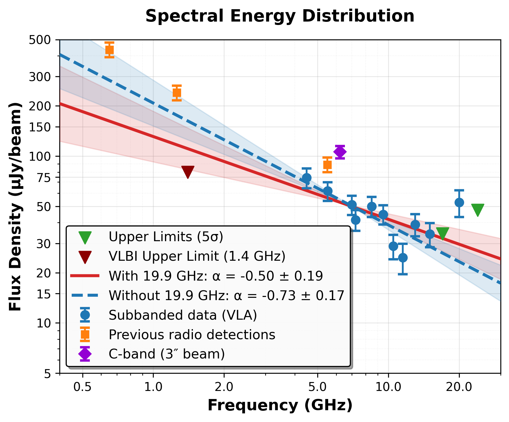<br />
图注：Spectral energy distribution (SED) of the continuum radio counterpart associated with \(\src{}.\) Blue circles denote the sub-banded flux densities from our VLA observations, while orange squares represent archival detections from \(\citet{bhusare_prs}\) and \(\citet{2024A&A...690A.219P}.\) The dark red triangle indicates the $5\sigma$ VLBI upper limit at 1.4 GHz, demonstrating that the source is resolved out on milliarcsecond scales \(\citep{hewitt2023milliarcsecondlocalisationhyperactiverepeating}.\) The purple diamond shows the C-band flux density when convolved to a $3''$ synthesized beam to match lower-resolution archival images. Red solid and blue dashed lines represent power-law spectral fits ($S_{\nu} \propto \nu^{\alpha}$) including and excluding the 19.9 GHz outlier, respectively; shaded regions indicate $1\sigma$ uncertainties. The steep spectral index ($\alpha \approx -0.73$) derived by excluding the calibration artifact at 19.9 GHz is consistent with non-thermal emission from a star-forming region.<br />
对应解读：对应“建议重点查看的图表”第3、4项，以及“关键图表逐图导读”图3和图4、模型拟合中多频通量密度幂律谱拟合与VLBI非探测约束。<br />
入选理由：这是支撑论文核心物理结论最集中的图：同时给出VLA多频通量、幂律谱拟合、1σ不确定性、19.9 GHz异常点处理，以及1.4 GHz VLBI 5σ上限。它直接检验谱指数α≈-0.73是否可信，并展示VLBI上限相对VLA通量足够低，从而支持源在毫角秒尺度被分辨掉而非超紧凑PRS。<br />
来源与置信度：\(arxiv_source\)；high；\(arxiv_source\) / Main.tex:figure[3]</p>
<p><strong>Fig01</strong><br />
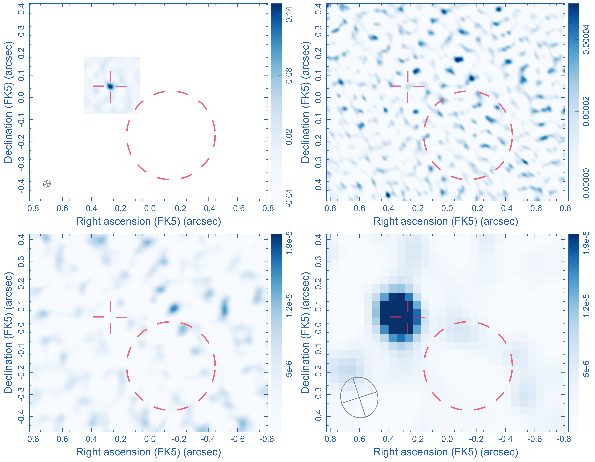<br />
图注：\(\textbf{Position Match Analysis.}\) \(\textit{Top-Left:}\) VLBI burst position \(\citep{hewitt2023milliarcsecondlocalisationhyperactiverepeating}.\) The field of view (FOV) in this specific panel is highly restricted, meaning the host galaxy nucleus lies entirely outside the insert VLBI image. \(\textit{Top-Right:}\) VLBI continuum image showing a non-detection \(\citep{hewitt2023milliarcsecondlocalisationhyperactiverepeating},\) which covers a wider FOV. \(\textit{Bottom-Left:}\) VLBI continuum convolved to a 50~mas beam (RMS $6~\mu\text{Jy}$; no compact emission $>30~\mu\text{Jy}$ at $5\sigma$). \(\textit{Bottom-Right:}\) VLA X-band full bandwidth image (this work). The red circle marks the host galaxy center (uncertainty ellipse with $0.2''$ semi-major axis). The spatial X-Y coordinates are matched across the images to display the same field. Hollow plus denotes the position of the FRB as measured by \(\cite{hewitt2023milliarcsecondlocalisationhyperactiverepeating}\)<br />
对应解读：对应“建议重点查看的图表”第1、4项，以及“关键图表逐图导读”图1和图4中关于FRB位置、宿主中心、VLA射电源和VLBI非探测的空间比较。<br />
入选理由：该图是位置关联和非核偏移结论的关键证据：同一坐标框架下展示VLBI爆发位置、VLBI连续谱非探测、50 mas卷积图像和VLA X波段探测，并标出FRB位置与宿主中心误差椭圆。它最直接支撑‘射电源与FRB一致但偏离宿主中心约300 mas’以及‘不是毫角秒紧凑源’这两个核心判断。<br />
来源与置信度：\(arxiv_source\)；high；\(arxiv_source\) / Main.tex:figure[1]</p>
<p><strong>Fig02</strong><br />
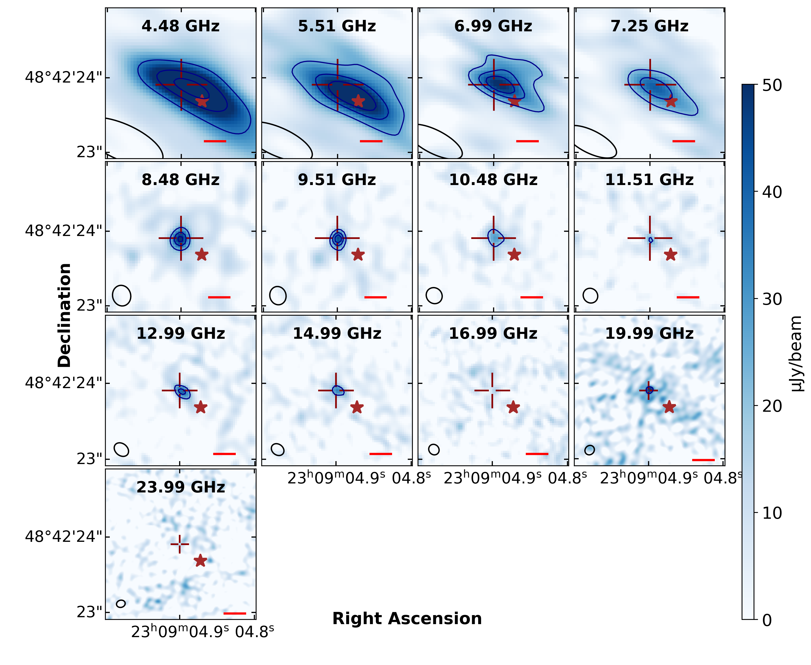<br />
图注：Multi-frequency VLA images of the persistent source associated with FRB 20220912A. The source is detected in C, X, and lower Ku bands, but drops below the detection threshold at 16.9 GHz and 23.9 GHz. All panels share the same field of view and color scale. Sub-bands were imaged using natural weighting to maximize SNR. The contours on each image is drawn at 5$\sigma$, 8$\sigma$ and 10$\sigma$. Brown star on the image shows host galaxy center and cross sign shows the position of the FRB. The red line in the bottom left is 300 mas $\approx$ 450~pc long.<br />
对应解读：对应“建议重点查看的图表”第2项，以及“关键图表逐图导读”图2中多频VLA成图、频率相关探测显著性和形态检查。<br />
入选理由：该图展示C、X、Ku及更高频子带图像，标有FRB位置、宿主中心、等值线和300 mas尺度尺，能直接检查源是否在多个频段重复出现、在高频是否低于探测阈值，以及是否可能受波束和灵敏度变化影响。它是判断多频探测可靠性和空间一致性的主要图像证据。<br />
来源与置信度：\(arxiv_source\)；high；\(arxiv_source\) / Main.tex:figure[2]</p>
<p><strong>Fig04</strong><br />
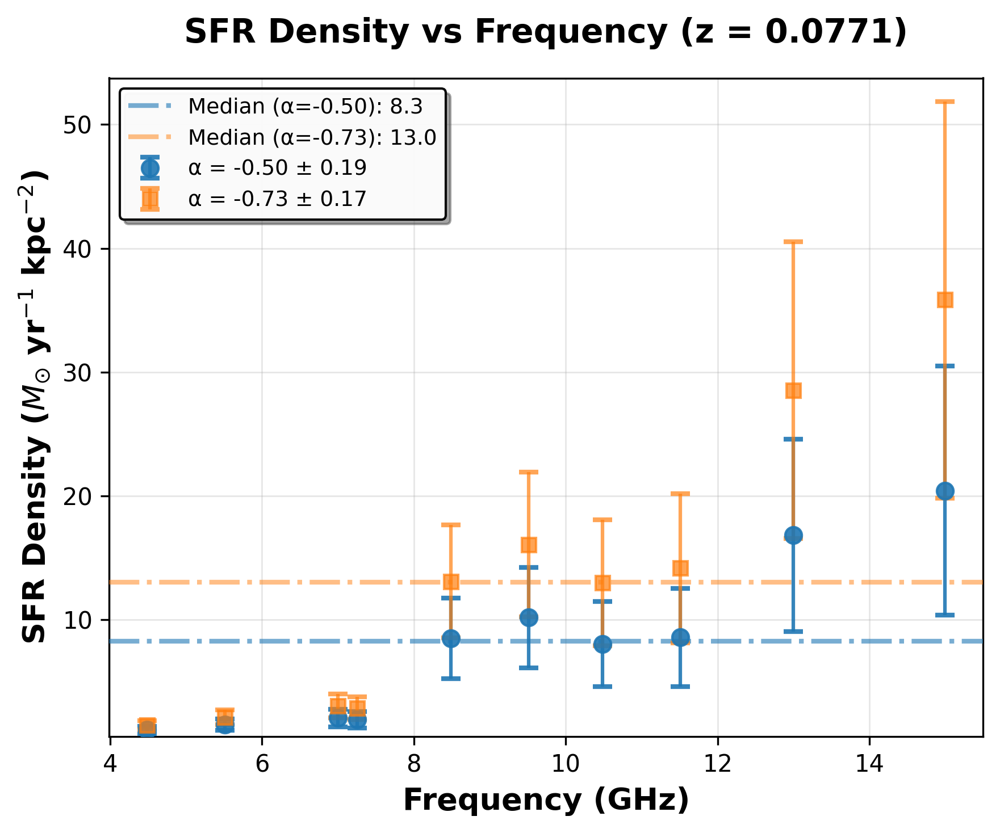<br />
图注：Lower limit on $\Sigma_{\text{SFR}}$ as a function of the observing frequency. The increase in $\Sigma_{\text{SFR}}$ at higher frequencies is a direct consequence of the smaller synthesized beam sizes, which provide better upper limits on the physical area of the unresolved source (for the absolute SFR measurements, which do not scale with beam size, see Figure~\(\ref{fig:sfr_comparison}\) in the Appendix \ref{appendix:sfr_stability}). While the measured flux density at 19.9~GHz carries some ambiguity due to a known calibration artifact (see Appendix \(\ref{appendix:calibration_artifact}\) and Section~5.2), the geometric constraints provided by the synthesized beam at this frequency remain robust. Blue circles represent $\alpha =- 0.50 \pm 0.19$, derived including the 19.9~GHz anomaly and orange squares show $\alpha = -0.73 \pm 0.17$, excluding the 19.9~GHz anomaly. The shaded regions represent $1\sigma$ uncertainties.<br />
对应解读：对应“建议重点查看的图表”第5项，以及“关键图表逐图导读”图5和模型拟合中源尺寸—面积—ΣSFR退化关系的讨论。<br />
入选理由：该图直接给出ΣSFR随观测频率和合成波束面积约束变化的下限，并比较包含与排除19.9 GHz异常点时的谱指数方案及1σ不确定性。它最能支撑ΣSFR≳13 M⊙ yr^-1 kpc^-2和源尺寸/面积假设对面密度推断的敏感性，是恒星形成区解释的重要量化依据。<br />
来源与置信度：\(arxiv_source\)；high；\(arxiv_source\) / Main.tex:figure[4]</p>
<p><strong>Fig06</strong><br />
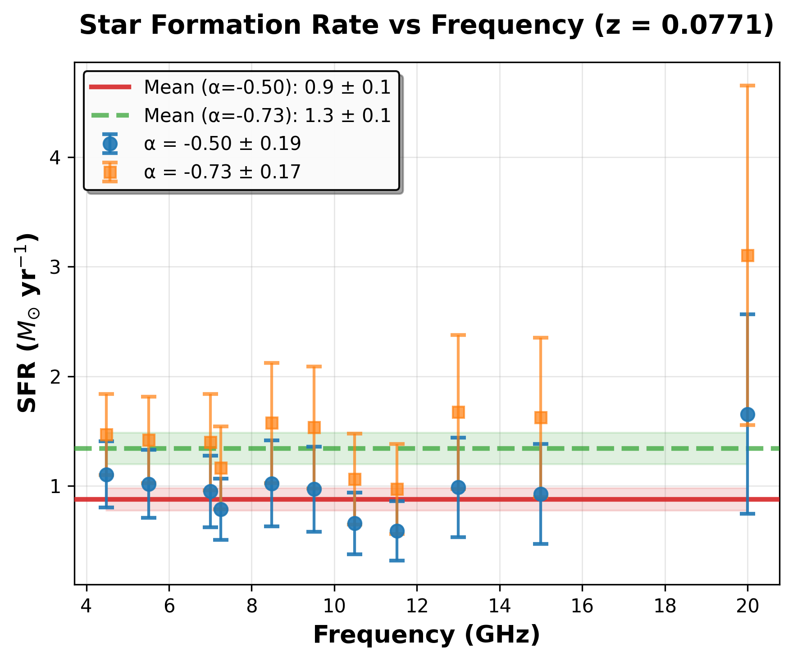<br />
图注：Derived Star Formation Rate (SFR) as a function of observing frequency for the local environment of \(\src{}.\) Unlike the SFR surface density ($\Sigma_{\text{SFR}}$) shown in Figure~4, SFR does not strongly depend on frequency-dependent synthesized beam area and is stable across the spectrum by design. Data points are plotted for two derived spectral indices: blue circles ($\alpha = -0.50 \pm 0.19$, derived including the 19.9~GHz anomaly) and orange squares ($\alpha = -0.73 \pm 0.17$, preferred index excluding the 19.9~GHz anomaly). Horizontal lines indicate the corresponding weighted mean SFR values: the solid red line shows the mean based on $\alpha= -0.50$ points ($0.9 \pm 0.1~M_{\odot}~\text{yr}^{-1}$), while the dashed green line shows the preferred mean based on $\alpha= -0.73$ points ($1.3 \pm 0.1~M_{\odot}~\text{yr}^{-1}$); shaded regions represent $1\sigma$ uncertainties.<br />
对应解读：对应“建议重点查看的图表”第5项，以及模型拟合中通量到SFR转换、SFR—面积退化和ΣSFR推导稳定性的讨论。<br />
入选理由：该图补充说明绝对SFR在不同频率下相对稳定，并给出两种谱指数假设下的加权平均SFR及1σ范围。虽然它不如Fig04直接给出面密度下限，但有助于区分SFR本身的稳定性与ΣSFR因波束面积变化而产生的频率依赖。<br />
来源与置信度：\(arxiv_source\)；high；\(arxiv_source\) / Main.tex:figure[6]</p>
<p><strong>Fig05</strong><br />
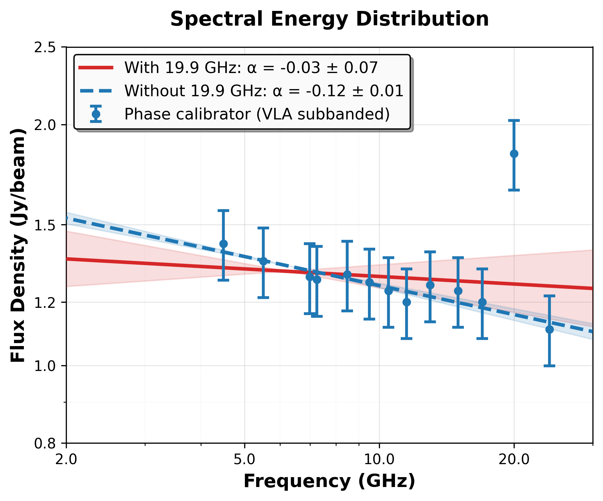<br />
图注：Spectral energy distribution (SED) of the phase calibrator (J2322+509). Blue points represent the measured flux density in each VLA sub-band. Similar to the radio source (see Figure~\ref{fig:spectra}), a significant flux density enhancement is observed at $\sim$19.99 GHz. This correlated feature in a known stable calibrator confirms that the high-frequency spike is a systematic calibration artifact, likely due to water line absorption at 22.2 GHz rather than an intrinsic property of the FRB 20220912A environment. The blue dashed line indicates the preferred spectral fit ($\alpha = -0.121 \pm 0.014$) excluding this outlier, consistent with the expected flat-spectrum nature of the calibrator.<br />
对应解读：对应“建议重点查看的图表”第3项中的系统误差检查，以及模型拟合中关于19.9 GHz异常点、通量标定误差和频谱残差诊断的讨论。<br />
入选理由：该图展示相位校准源在约19.99 GHz同样出现通量增强，从而证明FRB环境SED中的高频尖峰更可能是系统校准伪影而非真实谱变平或局部物理过程。它不是主要科学结论图，但对解释为何首选排除19.9 GHz点并得到α≈-0.73非常关键。<br />
来源与置信度：\(arxiv_source\)；high；\(arxiv_source\) / Main.tex:figure[5]</p>
<h4 id="_56">强相关工作</h4>
<p>这篇工作应放在 FRB 20121102A 和 FRB 20190520B 的脉络中读。前者建立了“重复 FRB 加紧凑 PRS 加恒星形成矮星系”的经典样板，后者显示另一个活跃重复源也可有 PRS 和复杂局部等离子体环境。FRB 20220912A 的结果则提醒我们：活跃重复和局部射电连续谱并不必然意味着同一种小尺度 PRS，百秒差距尺度恒星形成区也可以提供强射电背景。建议检索关键词包括 “FRB 20220912A host galaxy radio continuum”, “FRB persistent radio source”, “FRB 20121102A PRS”, “FRB 20190520B persistent radio source”, “repeating FRB local environment”。</p>
<p>从理论上，它与年轻磁星模型相容，但不是对所有磁星模型的唯一验证。年轻磁星可以位于超新星遗迹、磁星风星云或大质量星形成区中；不同年龄、外部密度和能量注入历史会产生不同持续射电表现。相反观点包括：部分 FRB 可能来自较老恒星族、球状星团或双星演化通道；部分持续射电源可能是宿主星系恒星形成或 AGN 污染，而非 FRB 中央引擎本身。检索时可加入 “magnetar model FRB”, “FRB host demographics”, “FRB local star formation”, “VLBI constraints persistent radio source”。</p>
<p><strong>同一事件 / 同类源线索</strong>：</p>
<ul>
<li><a href="https://arxiv.org/abs/2607.05950">https://arxiv.org/abs/2607.05950</a></li>
</ul>
<p><strong>相似工作</strong>：</p>
<ul>
<li><a href="https://arxiv.org/abs/1701.01098">https://arxiv.org/abs/1701.01098</a></li>
<li><a href="https://arxiv.org/abs/1701.01099">https://arxiv.org/abs/1701.01099</a></li>
<li><a href="https://arxiv.org/abs/2110.07418">https://arxiv.org/abs/2110.07418</a></li>
</ul>
<p><strong>基础理论 / 方法工作</strong>：</p>
<ul>
<li><a href="https://www.science.org/doi/10.1126/science.1147532">https://www.science.org/doi/10.1126/science.1147532</a></li>
<li><a href="https://arxiv.org/abs/2005.10324">https://arxiv.org/abs/2005.10324</a></li>
</ul>
<p><strong>相反观点 / 张力线索</strong>：</p>
<p>（未提供）</p>
</details>
<h3 id="6-multi-messenger-view-of-white-dwarf-tidal-disruption-events-by-intermediate-mass-black-holes-i-gravitational-waves-and-disk-photon-and-neutrino-emissions">6. Multi-messenger View of White Dwarf Tidal Disruption Events by Intermediate-Mass Black Holes: I. Gravitational Waves and Disk Photon and Neutrino Emissions</h3>
<ul>
<li>来源：arXiv / astro-ph.HE</li>
<li>链接：https://arxiv.org/abs/2607.05899v1</li>
<li>作者：Jin-Hong Chen, Lixin Dai, Bing Zhang</li>
<li>评分：novelty 8/10，importance 8/10，relevance 8/10，final 9.00/10</li>
<li>推荐理由：Develops a multimessenger model for white-dwarf TDEs by IMBHs including X-rays, GWs, and neutrinos; relevant to high-energy transients and coordinated multimessenger searches, even though neutrinos are MeV rather than high-energy IceCube-like events.</li>
</ul>
<p><strong>中文题目</strong>：中等质量黑洞撕裂白矮星的多信使图像：引力波、盘光子与 MeV 中微子辐射</p>
<p><strong>做了什么</strong>：这篇论文建立了白矮星被中等质量黑洞潮汐撕裂后的超高吸积率盘模型，并把电磁辐射、MeV 中微子和最终近心通过时的引力波放在同一个框架里估计。核心结论是：白矮星 TDE 的回落率可比普通主序星 TDE 高得多，内盘可达到 \(T\gtrsim 10^9\,\mathrm{K}\)，从而产生 \(e^\pm\) 对和 MeV 中微子；但热电磁光度在强超爱丁顿区间并不随回落率线性增长，而是停留在略高于中等质量黑洞爱丁顿光度的水平，谱峰约在 \(0.1\)--\(1\,\mathrm{keV}\)。引力波方面，白矮星最后一次被撕裂前的近心通过会产生 \(0.1\)--\(1\,\mathrm{Hz}\) 爆发信号，正好落在未来分赫兹探测器的目标频段；盘进动引力波则弱得多。</p>
<p><strong>为什么重要</strong>：白矮星 TDE 是寻找 \(10^3\)--\(10^5\,M_\odot\) 中等质量黑洞的少数干净通道之一，因为只有这类黑洞能在白矮星被吞入视界前把它撕裂。本文重要之处在于，它没有只把白矮星 TDE 当成一个高能瞬变光源，而是把极端超爱丁顿吸积、核燃烧加热、风损失、对湮灭中微子和分赫兹引力波一起估计，为未来电磁、引力波和中微子联合搜索给出可检验的量级预言。</p>
<p><strong>理论 / 观测 / 仪器方法价值</strong>：对理论而言，本文给出了一套适合白矮星 TDE 的厚盘和超爱丁顿流模型，并明确指出内流区多数情况下由平流而非辐射冷却主导。对观测而言，它说明软 X 射线热峰可能比光度本身更有诊断价值，也给出 Einstein Probe 一类 X 射线监测器、未来分赫兹引力波任务以及 Super-Kamiokande、JUNO 等 MeV 中微子探测器各自能看到什么、看不到什么。对方法而言，文章把回落率、风、磁压、核能释放和中微子冷却的相对重要性放在统一参数扫描中比较，便于后续把真实事件反推为黑洞质量、白矮星成分和近心距离。</p>
<p><strong>为什么应该关注</strong>：如果你关心中等质量黑洞存在性、矮星系或星团中的黑洞占有率、超爱丁顿吸积物理，或者未来分赫兹引力波探测器的科学目标，这篇都值得读。它的关键信息是：白矮星 TDE 的可观测信号不只是一次软 X 射线闪光；在合适质量范围内，它还可能带有短时引力波前兆和极近邻 MeV 中微子信号。即使中微子只能在银河系距离内探测，这个负结论本身也有价值，因为它给出了多信使策略的现实边界。</p>
<details class="paper-detail">
<summary>展开详细解读：文章讲解、背景、理论、重点章节、图表与相关工作</summary>
<h4 id="_57">文章详细讲解</h4>
<p>科学问题：白矮星被中等质量黑洞撕裂时，物理尺度同时落在几个很有意思的区间。潮汐半径必须大于黑洞视界半径，这把黑洞质量限制在大致 \(10^2\)--\(10^5\,M_\odot\) 的中等质量范围；回落时间很短，回落率远高于普通主序星 TDE；盘内温度可能高到电子-正电子对大量产生并通过 \(e^-+e^+\rightarrow \nu+\bar\nu\) 发射 MeV 中微子。本文要回答的问题是：这种极端系统的电磁光度、谱温、中微子亮度和引力波信号分别有多强，哪些信号能被现实或规划中的仪器看到。</p>
<p>作者怎么做：文章构造了白矮星 TDE 的吸积盘模型。盘模型包含磁压、核燃烧加热、盘风质量损失、辐射和平流能量输运，以及 \(e^\pm\) 对湮灭中微子冷却。作者在不同黑洞质量、白矮星类型和回落率下求解盘的径向结构，特别关注内盘温度、密度、光学厚度、辐射光度和中微子发射。对于引力波，作者分别估计白矮星最后一次近心通过时的爆发信号，以及一个更探索性的、由进动盘非轴对称质量分布产生的连续或准连续引力波。</p>
<p>关键结果：第一，白矮星 TDE 的回落率可达到普通 TDE 难以触及的极端超爱丁顿水平，但电磁热光度并不会按回落率无限增大，而是被困在略高于 \(L_{\rm Edd}\) 的量级，谱峰主要在软 X 射线 \(0.1\)--\(1\,\mathrm{keV}\)。第二，内盘在宽参数范围内是平流主导，盘风会带走质量和能量，从而降低内区温度，但不能完全抹去高温内流区。第三，在低质量中等质量黑洞、尤其是氧氖镁白矮星情形下，中微子光度可达约 \(10^{47}\,\mathrm{erg\,s^{-1}}\)，不过现有 MeV 中微子探测器只能在银河系尺度内有实际机会。第四，最终近心通过的引力波峰值频率约为 \(0.1\)--\(1\,\mathrm{Hz}\)，对应 DECIGO、BBO 或类似分赫兹任务的科学空间。</p>
<p>局限和下一步：模型仍然是参数化和半解析性质的盘模型，而非完整广义相对论磁流体力学加辐射输运、核反应网络和中微子输运模拟。白矮星碎片环化效率、盘风几何、喷流存在与否、核燃烧是否局域爆发、以及观测方向对光变和谱的影响，都会改变实际信号。下一步自然是与三维数值模拟、真实瞬变候选体的软 X 射线光变、以及未来分赫兹探测器的事件率估计结合；本文也明确标为系列第一篇，后续多半会继续处理非热辐射、喷流或更宽的多信使搜索策略。</p>
<h4 id="_58">关键结果是怎么做出来的</h4>
<p>本文最重要的证据链从样本定义开始：它不是分析一个已知瞬变事件，而是研究一族由中等质量黑洞撕裂白矮星的模型系统。样本维度包括黑洞质量、白矮星成分和质量、回落率或等价的超爱丁顿程度、盘风强度、磁压参数与近心距离。读者需要把它当成理论参数空间调查，而不是观测统计样本；所谓“可探测性”来自模型光度、谱温、通量和仪器灵敏度的比较。</p>
<p>回落率和盘结构是第一层结果。作者把白矮星 TDE 的回落率与爱丁顿吸积率比较，得到 \(\dot M/\dot M_{\rm Edd}\) 远高于普通 TDE 的区间。随后在每个半径上解能量平衡：黏滞耗散、核燃烧加热、辐射扩散、平流带走的热能、风损失和中微子冷却共同决定 \(T(r)\)、\(\rho(r)\) 和有效温度。支撑这一结论的图通常应是径向剖面图和参数扫描图：看内盘温度是否跨过 \(10^9\,\mathrm{K}\)，看平流项与辐射项、中微子项的相对大小，而不是只看总光度。</p>
<p>电磁结果的统计意义不是来自显著性检验，而是来自物理尺度的鲁棒性：在极端超爱丁顿回落下，出射热光度被爱丁顿附近的风和光子俘获调节，因此对 \(\dot M_{\rm fb}\) 的依赖很弱。关键图应展示不同回落率下的光度和谱峰变化；如果多条模型线在 \(L\sim \mathrm{few}\,L_{\rm Edd}\) 附近聚集，而谱峰集中在软 X 射线，那么结论就是“X 射线可见但不能用光度直接读出回落率”。主要系统误差来自色温修正、风再处理、吸收柱密度和观测方向。</p>
<p>中微子结果更依赖内盘温度，因此对低质量黑洞和白矮星成分最敏感。作者给出的最高 \(L_\nu\sim 10^{47}\,\mathrm{erg\,s^{-1}}\) 适用于内流区最热的情形，尤其是氧氖镁白矮星引入更强核能释放或更高温结构时。探测性判断应看预期事件数而非光度本身：把 MeV 中微子平均能量、距离、探测器自由质子数和反贝塔截面相乘后，现有探测器只有银河系距离才可能有足够计数。这里的稳健性风险是 \(e^\pm\) 对密度对温度极敏感，温度小幅下降就会大幅压低 \(L_\nu\)。</p>
<p>引力波结果分成两类。最终近心通过爆发信号的频率主要由近心角频率决定，落在 \(0.1\)--\(1\,\mathrm{Hz}\)，这是本文最有多信使潜力的 GW 结论；盘进动信号则因质量四极矩较小而探测距离 \(\lesssim 1\,\mathrm{Mpc}\)。若论文图中给出特征应变与探测器噪声曲线，读者应检查模型轨迹是否在 DECIGO/BBO 类曲线之上、持续时间如何进入信噪比积分，以及是否假定最优取向。稳健性检验应包括改变近心距离、黑洞质量、白矮星质量和距离后，频率与应变是否仍在分赫兹窗口。</p>
<details class="paper-subdetail">
<summary>展开背景、理论、公式、模型、章节和图表导读</summary>
<h4 id="_59">背景知识</h4>
<p>白矮星 TDE 是潮汐瓦解事件中的特殊分支。普通 TDE 多讨论主序星被 \(10^6\)--\(10^7\,M_\odot\) 超大质量黑洞撕裂，光变时标从数十天到数月；白矮星半径小得多，只有当黑洞质量较低时，潮汐半径才可能位于事件视界之外。因此，一旦确认某个 TDE 来自白矮星，它就几乎直接指向中等质量黑洞候选体。</p>
<p>中等质量黑洞是黑洞人口学中的缺口。恒星级黑洞和星系中心超大质量黑洞已有大量证据，但 \(10^2\)--\(10^5\,M_\odot\) 区间的对象很难确认。矮星系核、球状星团、超亮 X 射线源和引力波并合都提供线索，却常受动力学质量、吸积几何或源分类不确定性的限制。白矮星 TDE 的优势是潮汐条件本身带有强质量选择函数。</p>
<p>从观测角度看，白矮星 TDE 可能表现为快速、热的软 X 射线瞬变，也可能伴随核燃烧产物、光学再处理、甚至短时高能成分。过去的候选体数量有限，原因包括事件率低、持续时间短、软 X 射线易受吸收、以及在宽视场高 cadence X 射线巡天出现前缺乏合适监测。Einstein Probe、eROSITA 后续工作和未来时域 X 射线任务使这个问题现在更值得重新看。</p>
<p>多信使背景也在改变。LIGO/Virgo/KAGRA 主要覆盖几十赫兹以上，LISA 主要覆盖毫赫兹，而白矮星绕中等质量黑洞的最终轨道频率自然落在中间的分赫兹空档。DECIGO、BBO、TianGO 或类似概念任务如果实现，白矮星 TDE 会成为非常自然的目标。同时，MeV 中微子探测技术成熟，但天体 MeV 中微子除太阳和超新星外很难探测；本文讨论的盘中微子因此是一个物理上有趣但距离受限的通道。</p>
<p>该领域常见误区有几个。第一，不能把超高回落率直接等同于超高可见光度，因为光子俘获、风和几何准直会重塑出射辐射。第二，不能只用普通 TDE 的经验标度外推到白矮星 TDE，因为白矮星的半径、密度、核成分和回落时标完全不同。第三，MeV 中微子“光度大”不等于“容易探测”，探测事件数受距离平方、平均能量和截面强烈限制。第四，分赫兹 GW 可见性高度依赖未来任务，而不是现有地基探测器。</p>
<h4 id="_60">基础理论 / 方法脉络</h4>
<p>基础物理图像从潮汐半径开始。恒星自引力与黑洞潮汐力相当时发生瓦解，白矮星半径小、平均密度高，因此对应的潮汐半径很小。若潮汐半径小于黑洞视界或最内稳定轨道，白矮星会被整体吞入，难以产生明亮 TDE；若潮汐半径在外，碎片能量分布导致部分物质束缚并回落，形成短时高回落率供给。</p>
<p>吸积盘部分的关键是超爱丁顿流。爱丁顿光度由辐射压力与引力平衡给出，但白矮星 TDE 的瞬时供给率可远超对应 \(\dot M_{\rm Edd}\)。在这种情况下，辐射扩散时间可能长于流体内落时间，热能随气体被带入黑洞，即平流主导；同时，盘风从外向内逐步减少实际到达内盘的质量流率。本文正是在这种厚盘、风和平流主导的图像上加入磁压与核燃烧加热。</p>
<p>中微子产生依赖高温。若内盘气体和辐射温度达到 \(10^9\,\mathrm{K}\) 以上，热电子-正电子对数量迅速增加，\(e^-e^+\) 湮灭可产生各味中微子和反中微子。这个通道对温度非常敏感，因此中微子亮度可以作为内盘极端热状态的探针，但也意味着模型不确定性会被放大：风冷却、磁压支撑、核反应释放和光学厚度处理都会影响 \(L_\nu\)。</p>
<p>电磁观测量主要是热光度、有效温度和谱峰。强超爱丁顿流并不一定产生强得离谱的热 X 射线光度，因为可逃逸的辐射受爱丁顿调节，且部分能量驱动风或被平流带走。对观测者来说，软 X 射线谱峰、光变时标、黑体半径和吸收修正比单一峰值光度更有信息量。不同黑洞质量、白矮星半径和风参数之间存在退化：相似的 \(L_X\) 和 \(T_{\rm eff}\) 可能来自不同 \(M_{\rm BH}\) 与 \(\dot M\) 组合。</p>
<p>引力波方法则与吸积盘辐射不同。最终近心通过可近似为紧致质量分布在强引力场中的一次非圆轨道爆发，频率由近心角速度决定，应变由质量四极矩的二阶时间导数给出。盘进动信号需要非轴对称或倾斜盘提供随时间变化的四极矩，通常比白矮星整体近心运动弱得多。实际信噪比还取决于源距离、取向、持续时间和探测器噪声谱。</p>
<h4 id="_61">公式与推导</h4>
<p>第一步是潮汐瓦解条件。令黑洞质量为 \(M_{\rm BH}\)，白矮星质量和半径为 \(M_*\) 与 \(R_*\)，潮汐半径近似为</p>
<div class="math-display">\[r_t \simeq R_*\left(\frac{M_{\rm BH}}{M_*}\right)^{1/3} .\]</div>
<p>这里假设牛顿潮汐力与白矮星自引力平衡。若 \(r_t\) 大于事件视界尺度和有效俘获半径，白矮星才会在黑洞外部被撕裂并形成可见 TDE。</p>
<p>第二步是爱丁顿标度。电子散射不透明度为 \(\kappa\)，则</p>
<div class="math-display">\[L_{\rm Edd}=\frac{4\pi G M_{\rm BH} c}{\kappa},\qquad \dot M_{\rm Edd}=\frac{L_{\rm Edd}}{\eta c^2} .\]</div>
<p>其中 \(\eta\) 是辐射效率。本文的核心参数之一是 \(\dot m=\dot M/\dot M_{\rm Edd}\)，白矮星 TDE 可达到 \(\dot m\gg 1\)，所以不能使用薄盘近似。</p>
<p>第三步是回落率的基本形式。若碎片能量分布近似平坦，最常用的晚期回落率为</p>
<div class="math-display">\[\dot M_{\rm fb}(t)\simeq \frac{M_{\rm b}}{3t_{\rm min}}\left(\frac{t}{t_{\rm min}}\right)^{-5/3},\]</div>
<p>其中 \(M_{\rm b}\) 是束缚碎片质量，\(t_{\rm min}\) 是最束缚物质首次回到近心点的时间。白矮星的 \(t_{\rm min}\) 短，使 \(\dot M_{\rm fb}\) 峰值极高。</p>
<p>第四步是带风的盘内质量流率。可用参数化形式写成</p>
<div class="math-display">\[\dot M(r)=\dot M_{\rm out}\left(\frac{r}{r_{\rm out}}\right)^s,\]</div>
<p>其中 \(s\) 描述风强度，\(r_{\rm out}\) 是外盘或环化半径。\(s>0\) 表示向内质量流率下降，因而会降低内盘温度、中微子发射和黑洞实际吸积率。</p>
<p>第五步是局域能量平衡。单位面积黏滞耗散可近似写为</p>
<div class="math-display">\[Q^+_{\rm vis}\simeq \frac{3GM_{\rm BH}\dot M(r)}{8\pi r^3},
\qquad Q^+_{\rm vis}+Q^+_{\rm nuc}=Q^-_{\rm rad}+Q^-_{\rm adv}+Q^-_\nu+Q^-_{\rm w} .\]</div>
<p>其中 \(Q^+_{\rm nuc}\) 是核燃烧加热，\(Q^-_{\rm rad}\) 是辐射冷却，\(Q^-_{\rm adv}\) 是平流冷却，\(Q^-_\nu\) 是中微子冷却，\(Q^-_{\rm w}\) 是风带走的能量。本文的结论“多数区域平流主导”对应 \(Q^-_{\rm adv}\) 在内盘能量预算中占优。</p>
<p>第六步是光子俘获和平流判据。辐射扩散时间与内落时间可写成</p>
<div class="math-display">\[t_{\rm diff}\sim \frac{\tau H}{c},\qquad t_{\rm in}\sim \frac{r}{|v_r|} .\]</div>
<p>若 \(t_{\rm diff}>t_{\rm in}\)，光子来不及扩散逃逸，能量随气体向内平流。这里 \(H\) 是盘厚度，\(\tau\) 是垂向光学厚度，\(v_r\) 是径向速度。</p>
<p>第七步是热光谱的观测标度。若出射近似多温黑体，可用有效温度估计</p>
<div class="math-display">\[L_{\rm bol}\simeq 4\pi R_{\rm ph}^2\sigma_{\rm SB}T_{\rm eff}^4,\qquad E_{\rm peak}\simeq 2.8 k_{\rm B}T_{\rm eff} .\]</div>
<p>其中 \(R_{\rm ph}\) 是光球半径。本文得到 \(E_{\rm peak}\sim 0.1\)--\(1\,\mathrm{keV}\)，意味着软 X 射线巡天是关键。</p>
<p>第八步是 \(e^\pm\) 对湮灭中微子发射的温度敏感性。量级上可写成</p>
<div class="math-display">\[q_\nu^{e^+e^-}\propto T^9,\qquad L_\nu\simeq \int q_\nu\,dV .\]</div>
<p>这里 \(q_\nu\) 是单位体积中微子发射率，\(dV\) 是盘体积元。\(T^9\) 标度说明为什么内盘温度的小变化会造成 \(L_\nu\) 的巨大差异。</p>
<p>第九步是近心通过引力波频率和应变。近心角速度给出特征频率</p>
<div class="math-display">\[f_{\rm GW}\sim \frac{1}{\pi}\left(\frac{GM_{\rm BH}}{r_p^3}\right)^{1/2},
\qquad h\sim \frac{2G^2M_{\rm BH}M_*}{c^4D r_p} .\]</div>
<p>其中 \(r_p\) 是近心距离，\(D\) 是源距离。对 \(r_p\sim r_t\) 的白矮星 TDE，\(f_{\rm GW}\) 自然落入 \(0.1\)--\(1\,\mathrm{Hz}\) 的分赫兹窗口。</p>
<p>第十步是探测信噪比。若给定探测器噪声功率谱密度 \(S_n(f)\)，特征信噪比可写为</p>
<div class="math-display">\[\rho^2=4\int \frac{|\tilde h(f)|^2}{S_n(f)}\,df .\]</div>
<p>这里 \(\tilde h(f)\) 是频域波形。论文中的探测距离判断本质上就是比较 \(\rho\) 与阈值，并考察 \(M_{\rm BH}\)、\(M_*\)、\(r_p\) 和 \(D\) 的变化。</p>
<h4 id="_62">模型拟合 / 应用方法</h4>
<p>本文主要是理论建模和可探测性预估，不是对某个具体事件做后验拟合。但如果把它用于实际数据，首先要拟合的是软 X 射线光变和谱：观测量包括 \(L_X(t)\)、\(T_{\rm bb}(t)\)、黑体半径、吸收柱密度以及可能的光学/紫外再处理分量。模型参数包括 \(M_{\rm BH}\)、白矮星质量和成分、穿透因子、盘风指数、辐射效率、色温修正和源距离。</p>
<p>似然通常可分为光变和能谱两部分。光变可用高斯误差或泊松计数似然，能谱则要经过仪器响应矩阵，把理论光子谱折叠到探测器计数空间。若数据来自 Einstein Probe、Swift/XRT、XMM-Newton 或 Chandra，残差应在计数空间检查，而不是只比较去卷积后的通量点。软 X 射线吸收对 \(T_{\rm bb}\) 和 \(L_X\) 的影响很大，尤其会造成低温高吸收模型与高温低吸收模型之间的退化。</p>
<p>参数退化是实际应用的难点。超爱丁顿区间中热光度接近 \(L_{\rm Edd}\) 的饱和值，所以 \(L_X\) 对 \(\dot M_{\rm fb}\) 不敏感；这意味着不能仅凭峰值光度反推出白矮星质量或回落率。\(M_{\rm BH}\) 同时影响 \(L_{\rm Edd}\)、潮汐半径、回落时标和引力波频率，因此联合使用光变时标、谱温和可能的 GW 频率会比单一电磁量更有约束力。</p>
<p>中微子拟合在大多数情况下会是上限问题。给定 \(L_\nu(t)\) 和平均能量，可计算 Super-Kamiokande 或 JUNO 中的预期事件数，并与背景泊松分布比较。若没有探测到中微子，得到的是距离、盘温或白矮星成分的联合上限；若在银河系内事件中看到短时 MeV 中微子爆发，则需要与核心坍缩超新星、太阳活动和反应堆背景区分。</p>
<p>引力波拟合取决于未来分赫兹探测器的波形模板成熟度。最终近心通过爆发可先用非圆轨道 burst 模板或时频过量功率搜索识别，再与潮汐半径条件和电磁触发时间做联合约束。盘进动信号更弱且模型不确定，实际更可能作为上限或补充诊断，而不是发现通道。模型失败的主要方式包括：环化效率过低导致盘形成延迟，喷流主导非热辐射掩盖热峰，风再处理把软 X 射线移到紫外/光学，以及三维非轴对称结构破坏一维盘模型假设。</p>
<h4 id="_63">重点章节 / 结果段落怎么读</h4>
<p>第一，读“事件尺度和回落率”部分时，应重点看作者如何定义白矮星 TDE 参数空间：\(M_{\rm BH}\)、白矮星质量和成分、潮汐半径、近心距离、回落时间和峰值 \(\dot M_{\rm fb}\)。这一部分决定了后面所有辐射和引力波量级，尤其要检查所选参数是否满足白矮星在视界外被撕裂。</p>
<p>第二，读“吸积盘模型”部分时，要关注能量方程中包含了哪些项：磁压、核燃烧、风、辐射扩散、平流和中微子冷却。不要只看最终图上的光度；要看作者如何处理 \(\dot M(r)\)、盘厚度、光学深度和温度，因为这些假设直接控制 \(e^\pm\) 对产生和软 X 射线谱峰。</p>
<p>第三，读“电磁辐射结果”时，应把重点放在光度对回落率不敏感这一点。读者应检查不同 \(\dot m\) 模型线是否确实在近爱丁顿光度附近饱和，以及 \(T_{\rm eff}\) 或 \(E_{\rm peak}\) 是否稳定落在软 X 射线。这里还要注意风和再处理可能使真实观测谱偏离简单热盘谱。</p>
<p>第四，读“中微子发射”部分时，应看内盘温度、\(L_\nu\) 与黑洞质量及白矮星成分的对应关系。重点不是最高光度数字本身，而是哪些模型能达到该温度、持续多久、平均中微子能量是多少，以及转换成探测器事件数后是否仍显著。</p>
<p>第五，读“引力波”部分时，要把最终近心通过与盘进动分开。前者是更有前景的分赫兹 burst，后者是很弱的探索性信号。读者应重点检查特征应变与 DECIGO/BBO 类灵敏度曲线的相对位置、探测距离假设和源取向假设。</p>
<h4 id="_64">建议重点查看的图表</h4>
<ol>
<li>
<p>参数空间或潮汐条件图：检查 \(r_t\)、视界半径和白矮星质量-半径关系如何限制 \(M_{\rm BH}\)，确认哪些区域真能产生可见白矮星 TDE。</p>
</li>
<li>
<p>回落率与爱丁顿比图：看 \(\dot M_{\rm fb}/\dot M_{\rm Edd}\) 的峰值和时间演化，尤其是 \(10^5\)--\(10^9\) 这类极端超爱丁顿数字对应哪些白矮星和黑洞质量。</p>
</li>
<li>
<p>盘径向结构图：重点看 \(T(r)\)、\(\rho(r)\)、\(H/r\)、\(\tau(r)\) 和 \(\dot M(r)\)。内盘是否达到 \(10^9\,\mathrm{K}\) 是中微子结论的关键。</p>
</li>
<li>
<p>能量预算图：比较 \(Q^-_{\rm adv}\)、\(Q^-_{\rm rad}\)、\(Q^-_\nu\)、\(Q^-_{\rm w}\) 和 \(Q^+_{\rm nuc}\)。若平流项始终主导，电磁光度饱和结论更可信。</p>
</li>
<li>
<p>光谱能量分布或峰值温度图：检查谱峰是否在 \(0.1\)--\(1\,\mathrm{keV}\)，不同回落率曲线之间是否差别很小，以及吸收或色温修正是否可能改变可探测性。</p>
</li>
<li>
<p>中微子光度和预期事件数图：看 \(L_\nu(t)\)、平均能量、距离缩放和探测器事件数；特别注意最高 \(L_\nu\) 是否只出现在很窄参数角落。</p>
</li>
<li>
<p>GW 特征应变与噪声曲线图：检查近心通过 burst 是否落在分赫兹探测器敏感区，盘进动信号与噪声曲线相差多少，以及探测距离如何定义。</p>
</li>
</ol>
<h4 id="_65">关键图表逐图导读</h4>
<p>图 1：如果论文给出白矮星 TDE 参数空间图，横轴通常可理解为 \(M_{\rm BH}\)，纵轴为白矮星质量、半径或近心参数。数据/模型区域会标出潮汐半径大于俘获半径的可瓦解区。读图陷阱是不要把所有 \(M_{\rm BH}\) 都当成可见事件；高质量端白矮星可能直接落入黑洞，低质量端则事件率和宿主环境不确定。</p>
<p>图 2：回落率或爱丁顿比随时间的图通常用 \(t/t_{\rm min}\) 或物理时间作横轴，用 \(\dot M_{\rm fb}\) 或 \(\dot m\) 作纵轴。模型线之间的垂直差异反映白矮星类型和 \(M_{\rm BH}\)。主要结论是白矮星 TDE 进入极端超爱丁顿区间；陷阱是晚期 \(t^{-5/3}\) 标度不一定描述最早期环化和盘形成。</p>
<p>图 3：盘径向剖面图应重点看横轴半径 \(r\) 和纵轴 \(T\)、\(\rho\)、\(H/r\) 或光学深度。若内盘温度跨过 \(10^9\,\mathrm{K}\)，\(e^\pm\) 中微子通道才会强。读图时要注意半径单位是 \(r_g\)、\(r_t\) 还是厘米；不同单位会影响对内区位置的直觉判断。</p>
<p>图 4：能量预算图会把黏滞加热、核加热、辐射冷却、平流冷却、风冷却和中微子冷却画成多条曲线。若 \(Q^-_{\rm adv}\) 高于 \(Q^-_{\rm rad}\)，说明热能主要被带入黑洞而非辐射出去。读图陷阱是局部中微子冷却强不代表总 \(L_\nu\) 必然大，因为体积积分和持续时间同样重要。</p>
<p>图 5：电磁谱或光度-回落率图的横轴可能是频率、光子能量或 \(\dot m\)，纵轴是 \(\nu L_\nu\)、\(L_{\rm bol}\) 或 \(E_{\rm peak}\)。关键是观察多条高 \(\dot m\) 模型是否在光度上饱和，而谱峰保持在软 X 射线。陷阱是模型谱通常没有完全包含宿主吸收和风再处理，实际探测计数可能低于本征谱暗示。</p>
<p>图 6：中微子图若以时间为横轴，应看爆发持续时间和峰值；若以距离为横轴，应看预期事件数何时跌破 \(1\) 或背景水平。主要结论是银河系外探测困难。读图时不要把 \(L_\nu\) 与可探测性混为一谈，因为 MeV 中微子计数按 \(D^{-2}\) 快速下降。</p>
<p>图 7：GW 图通常把特征应变 \(h_c\) 或 \(\sqrt{f}|\tilde h|\) 与频率 \(f\) 画在探测器灵敏度曲线上。近心通过信号应在 \(0.1\)--\(1\,\mathrm{Hz}\) 附近，盘进动信号低得多。读图陷阱是很多曲线默认最优取向和理想匹配滤波；真实天空平均探测距离会更小。</p>
</details>
<h4 id="_66">论文原图 / 可嵌入图片</h4>
<p><strong>Fig10</strong><br />
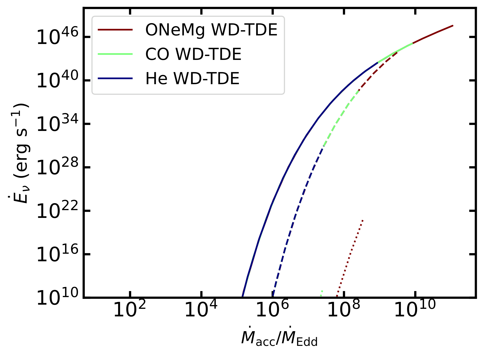<br />
图注：Neutrino luminosity of WD--TDE disks from electron--positron pair annihilation, as a function of mass fallback rate (from $10\,\dot{M}_{\rm Edd}$ to the peak fallback rate for each WD composition). Neutrino production is negligible for $\dot{M}_{\rm acc}\lesssim 10^8\,\dot{M}_{\rm Edd}$ and rises steeply with $\dot{M}_{\rm acc}$. Solid, dashed and dotted lines are $\dot{E}_{\nu}$ for $M_{\rm h} = 10^{3}\ M_{\odot}$, $10^4\ M_{\odot}$ and $10^5\ M_{\odot}$, respectively. For $M_{\rm h}=10^3\,M_{\odot}$, the peak values are $\dot{E}_{\nu}\simeq 3\times 10^{38}$, $2\times 10^{42}$, and $2.5\times 10^{45}\,\mathrm{erg\ s^{-1}}$ for He, CO, and ONeMg WD--TDEs, respectively.<br />
对应解读：“建议重点查看的图表”第6项中微子光度，以及“关键图表逐图导读”图6关于中微子亮度随回落率和白矮星成分变化的解读。<br />
入选理由：这张图直接给出电子-正电子对湮灭产生的中微子光度随吸积率的变化，并区分 He、CO、ONeMg 白矮星和不同 IMBH 质量，是验证“低质量 IMBH、ONeMg WD 情形下中微子最强、且只在极端高回落率角落显著”的核心图。<br />
来源与置信度：\(arxiv_source\)；high；\(arxiv_source\) / ms.tex:figure[10]</p>
<p><strong>Fig05</strong><br />
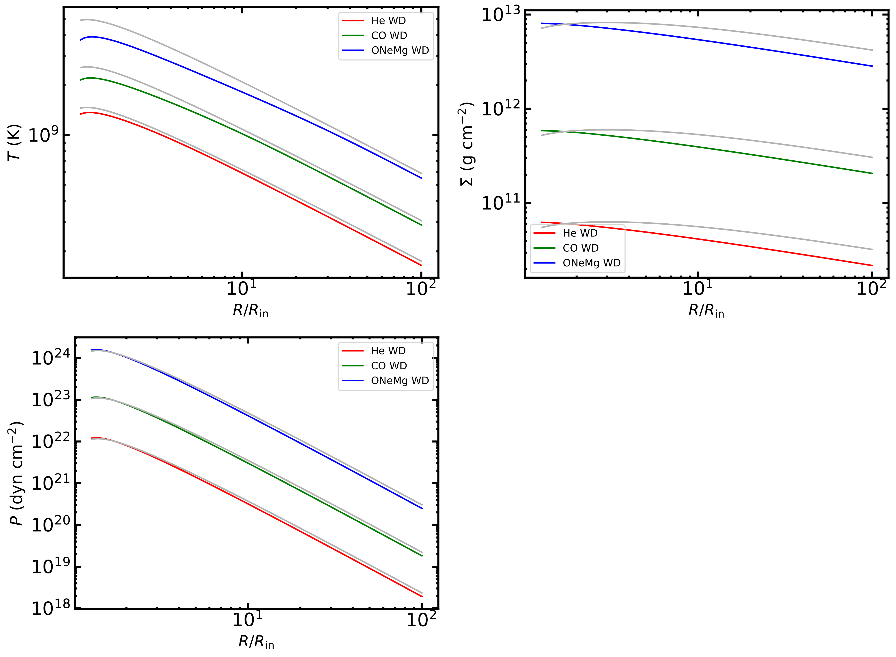<br />
图注：Disk profiles for He, CO, and ONeMg WD--TDEs: temperature (upper), surface density (middle), and pressure (lower), evaluated at representative peak fallback rates: $\simeq 8.5\times 10^8\,\dot{M}_{\rm Edd}$ (He), $\simeq 8.1\times 10^9\,\dot{M}_{\rm Edd}$ (CO), and $\simeq 10^{11}\,\dot{M}_{\rm Edd}$ (ONeMg), with a$10^3\ M_{\odot}$ IMBH. Gray curves show the analytic scalings from Equations~(\ref{eq:T_adv_w}--\ref{eq:Sigma_adv_w}).<br />
对应解读：“建议重点查看的图表”第3项盘径向结构图，以及“关键图表逐图导读”图3关于内盘温度是否达到高温区间的解读。<br />
入选理由：该图比较 He、CO、ONeMg 三类 WD--TDE 在峰值回落率下的温度、面密度和压力径向剖面，尤其覆盖 ONeMg 和低质量 IMBH 的极端参数，是判断内盘高温、强 pair 产生和中微子结论是否成立的关键结构图。<br />
来源与置信度：\(arxiv_source\)；high；\(arxiv_source\) / ms.tex:figure[5]</p>
<p><strong>Fig04</strong><br />
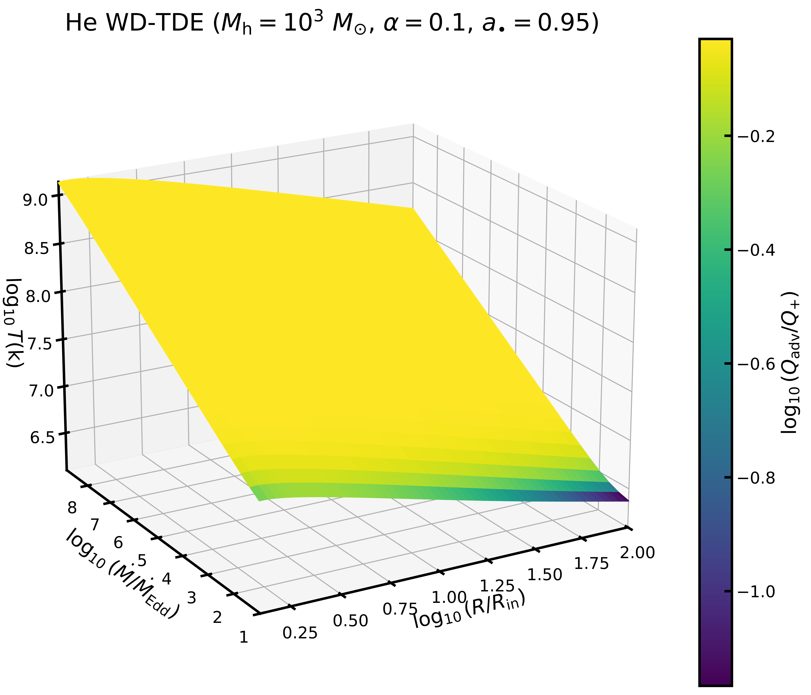<br />
图注：Temperature profile of the He WD--TDE disk over a range of accretion rates. Colors indicate the ratio $Q_{\rm adv}/Q_+$, highlighting the dominance of advective cooling. Radiative cooling becomes competitive only in the outer disk at low accretion rates ($\dot{M}_{\rm acc}\lesssim 10\,\dot{M}_{\rm Edd}$).<br />
对应解读：“建议重点查看的图表”第4项能量预算图，以及“关键图表逐图导读”图4关于平流冷却主导的解读。<br />
入选理由：虽然不是完整列出所有冷却项的多曲线能量预算图，但颜色直接标示 $Q_{\<br />
m adv}/Q_+$，能检验作者关于盘在宽吸积率范围内平流主导、辐射冷却只在外盘低吸积率时重要的核心物理判断。<br />
来源与置信度：\(arxiv_source\)；high；\(arxiv_source\) / ms.tex:figure[4]</p>
<p><strong>Fig07</strong><br />
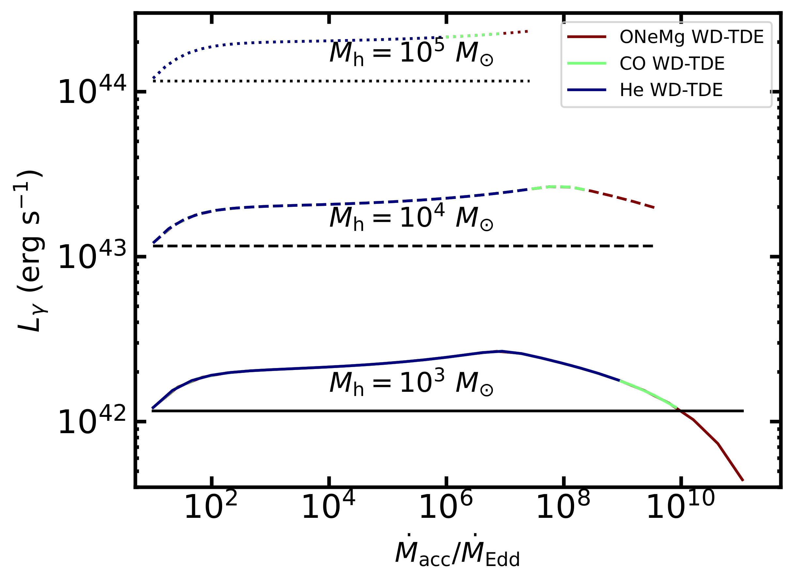<br />
图注：EM luminosity of WD--TDE disks as a function of mass fallback rate, from $10\,\dot{M}_{\rm Edd}$ up to the peak fallback rate for each WD composition. The horizontal black line marks the analytic luminosity of an advection- and radiation-pressure-dominated disk, $2\ln(R_{\rm out}/R_{\rm in})\,L_{\rm Edd}\simeq 9\,L_{\rm Edd}$ (Equation~(\ref{eq:L_adv})). The luminosity varies weakly with $\dot{M}_{\rm acc}$ and peaks near $\dot{M}_{\rm acc}\simeq 10^8\ \dot{M}_{\rm Edd}$, where $e^{\pm}$ pairs contribute to the pressure and neutrino cooling becomes non-negligible.<br />
对应解读：“建议重点查看的图表”第5项光度-回落率关系，以及“模型拟合”中关于超爱丁顿区间热光度接近饱和值、不能仅凭峰值光度反推回落率的讨论。<br />
入选理由：该图直接展示电磁光度随质量回落率变化很弱，并与约 $9L_{\<br />
m Edd}$ 的解析饱和值比较，是支撑“极端超爱丁顿但热电磁光度不随回落率无限增长”的最直接证据。<br />
来源与置信度：\(arxiv_source\)；high；\(arxiv_source\) / ms.tex:figure[7]</p>
<p><strong>Fig08</strong><br />
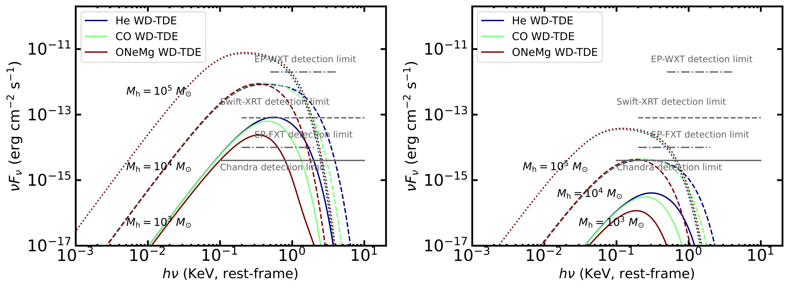<br />
图注：Observed EM spectra at the peak fallback rate for each WD--TDE disk, assuming redshift $z=0.1$ (upper) and $z=1$ (lower). Solid, dashed, and dot-dashed curves correspond to IMBH masses $10^3$, $10^4$, and $10^5\,M_{\odot}$, respectively. Horizontal gray lines indicate representative flux limits of soft X-ray instruments (e.g., EP-WXT/FXT, Swift-XRT, Chandra).<br />
对应解读：“建议重点查看的图表”第5项光谱能量分布或峰值温度图，以及“关键图表逐图导读”图5关于软 X 射线谱峰和探测性的解读。<br />
入选理由：该图给出峰值回落率下的观测电磁谱，并叠加 Einstein Probe、Swift/XRT、Chandra 等软 X 射线仪器灵敏度参考线，最适合支撑日报中关于谱峰位于软 X 射线、现有 X 射线设施可探测性的讨论。<br />
来源与置信度：\(arxiv_source\)；high；\(arxiv_source\) / ms.tex:figure[8]</p>
<p><strong>Fig01</strong><br />
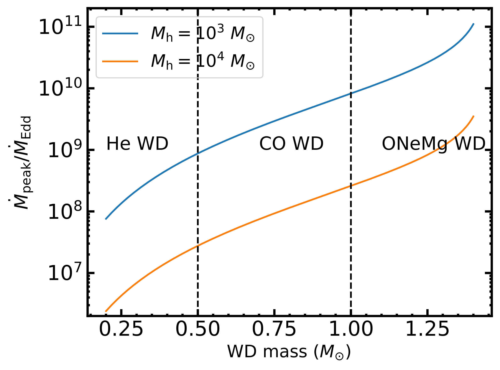<br />
图注：Eddington ratio versus WD mass for WD TDEs, derived from Equations (\ref{eq:R_M}) and (\ref{eq:dotM_peak}).<br />
对应解读：“建议重点查看的图表”第2项回落率与爱丁顿比图，以及“关键图表逐图导读”图2关于极端超爱丁顿数字对应白矮星和黑洞质量的解读。<br />
入选理由：这张图展示 WD 质量与爱丁顿比的关系，可直接核对摘要中 $10^5$--$10^9$ 量级极端超爱丁顿回落率的来源。虽然它不是完整时间演化图，也不展示潮汐半径限制，但在候选图中最能支撑回落率/爱丁顿比这一基础结论。<br />
来源与置信度：\(arxiv_source\)；high；\(arxiv_source\) / ms.tex:figure[1]</p>
<h4 id="_67">强相关工作</h4>
<p>这篇工作属于白矮星 TDE 与中等质量黑洞探测的交叉方向。相关历史脉络包括 Rees 提出的 TDE 基本图像、后来关于白矮星被中等质量黑洞撕裂并可能触发热核燃烧的数值研究，以及普通 TDE 中超爱丁顿盘风和再处理的理论。检索关键词可用“white dwarf tidal disruption intermediate mass black hole”、“WD TDE nuclear burning”、“super-Eddington tidal disruption disk wind”和“decihertz gravitational waves tidal disruption”。</p>
<p>与相似观测工作的关系是：目前白矮星 TDE 候选体并不如普通 TDE 丰富，许多快速软 X 射线瞬变、超亮 X 射线源爆发或富钙瞬变都曾被讨论为相邻类别，但源分类常有争议。本文没有声称解释某个命名事件，而是给出同类源的多信使模板；因此后续应用时应与 Einstein Probe 发现的快速 X 射线瞬变、矮星系核 TDE 候选体和球状星团 IMBH 候选体交叉检索。</p>
<p>潜在张力主要来自模型物理而不是单一观测矛盾。三维广义相对论磁流体模拟可能得到不同环化效率和风几何；核燃烧是否稳定、是否局部爆炸，会影响成分和能量预算；软 X 射线是否被风再处理到紫外/光学也会改变探测策略。检索相反或互补观点时可用“white dwarf TDE detonation”、“tidal disruption circularization efficiency”、“super-Eddington outflow reprocessing”和“MeV neutrinos accretion disk pair annihilation”。</p>
<p><strong>同一事件 / 同类源线索</strong>：</p>
<ul>
<li><a href="https://arxiv.org/abs/2607.05899">https://arxiv.org/abs/2607.05899</a></li>
</ul>
<p><strong>相似工作</strong>：</p>
<p>（未提供）</p>
<p><strong>基础理论 / 方法工作</strong>：</p>
<ul>
<li><a href="https://ui.adsabs.harvard.edu/abs/1988Natur.333..523R/abstract">https://ui.adsabs.harvard.edu/abs/1988Natur.333..523R/abstract</a></li>
<li><a href="https://arxiv.org/abs/2104.14580">https://arxiv.org/abs/2104.14580</a></li>
</ul>
<p><strong>相反观点 / 张力线索</strong>：</p>
<p>（未提供）</p>
</details>
<h3 id="7-radiation-hydrodynamics-of-star-disc-collisions-from-system-parameters-to-outflows-and-lightcurves">7. Radiation-hydrodynamics of star-disc collisions: From system parameters to outflows and lightcurves</h3>
<ul>
<li>来源：arXiv / astro-ph.HE</li>
<li>链接：https://arxiv.org/abs/2607.05508v1</li>
<li>作者：Taj Jankovič, Sergey Karpov, Michal Zajaček, Vladimír Karas, Marzena Śniegowska</li>
<li>评分：novelty 8/10，importance 8/10，relevance 8/10，final 9.00/10</li>
<li>推荐理由：QPE 软 X 射线核瞬变的星-盘碰撞三维辐射流体模拟，给出峰值光度和持续时间标度并应用于 GSN 069；属于高能暂现源物理，结果较具体且可用于解释观测。</li>
</ul>
<p><strong>中文题目</strong>：恒星—吸积盘碰撞的辐射流体力学：从系统参数到外流与光变曲线</p>
<p><strong>做了什么</strong>：这篇论文用三维局域辐射流体力学模拟系统研究准周期爆发源中“恒星穿过超大质量黑洞吸积盘”这一模型。作者改变盘面密度、垂直密度分布、恒星速度、恒星半径和穿盘角度，追踪碰撞激波、双向外流以及随后逃逸出来的总辐射光变。主要结论是：速度主要提高峰值光度，盘面密度主要拉长持续时间，恒星半径同时增强亮度和持续时间，垂直更集中的盘会因外层低密度通道而产生更亮但更短的 flare，斜穿盘则削弱双向外流的不对称性并延长 flare。作者还把经验标度用于 GSN 069，倾向于一个半径约为 \(R_\odot\) 的恒星在逆行轨道上穿过致密的 post-TDE 盘。</p>
<p><strong>为什么重要</strong>：QPE 的核心难题不是“有没有重复软 \(X\) 射线 flare”，而是同一个动力学模型能否同时解释幅度、持续时间、占空比、强弱交替和源间差异。恒星—盘碰撞模型过去常停留在能量预算和几何图像层面；这篇文章把碰撞参数、辐射扩散和可观测光变之间的映射做成了可用的数值实验和经验标度，因此直接触及 QPE 物理解释的可检验性。</p>
<p><strong>理论 / 观测 / 仪器方法价值</strong>：对理论而言，文章给出了从局域碰撞条件到外流动量、光度峰值和 flare 时标的标度关系，可用于把轨道模型、盘模型和观测光变连接起来。对观测而言，它提供了判断 QPE 源参数的诊断方向：峰值更敏感于恒星速度和半径，持续时间更敏感于盘面密度、恒星半径和穿盘角。对方法而言，它展示了在恒星未被显著扰动的局域近似下，如何用辐射流体模拟替代过度简化的解析能量释放估计。</p>
<p><strong>为什么应该关注</strong>：如果你关心 QPE 是否是低质量恒星、白矮星或剥离核在活动星系核盘中周期穿越的信号，这篇论文很值得读，因为它把“看起来可行”的图像推进到“哪些参数组合真的能产生观测光变”的层面。它也提醒读者：QPE 光变的峰值、宽度和强弱交替不应被单独解释，而应作为同一个三维碰撞、外流和辐射扩散问题的联合约束。</p>
<details class="paper-detail">
<summary>展开详细解读：文章讲解、背景、理论、重点章节、图表与相关工作</summary>
<h4 id="_68">文章详细讲解</h4>
<p>科学问题：准周期爆发源表现为叠加在核区静态或缓变软 \(X\) 射线辐射上的重复 flare。恒星—盘碰撞模型认为，一颗恒星在倾斜轨道上反复穿过超大质量黑洞周围的吸积盘，穿盘时产生弓形激波，向盘上下两侧推出致密外流，辐射从外流中扩散并形成可见 flare。问题在于，观测到的 QPE 不只要求能量够大，还要求 flare 宽度、重复间隔、占空比、峰值强弱交替和软 \(X\) 射线性质同时合理。本文要回答的是：给定局域碰撞参数，外流形态和总光变如何变化，哪些参数最控制峰值和持续时间。</p>
<p>作者怎么做：论文采用三维局域辐射流体力学模拟，而不是直接做全局轨道加盘演化。局域盒子近似聚焦于恒星穿过盘的一次碰撞，假设恒星本身在碰撞中保持基本不受扰动。作者系统改变盘面密度、垂直密度轮廓、恒星速度、恒星半径和局域碰撞角。模拟输出包括弓形激波结构、上下两个方向的外流动量、辐射能量释放和总光度随时间变化。随后他们把这些输出压缩成峰值光度与 flare 持续时间对输入参数的经验标度。</p>
<p>关键结果：速度和盘面密度对外流形态的影响没有直觉上那么大，弓形激波和整体流场拓扑相对稳定；但速度越高，单位时间可热化的动能越大，因此 flare 更亮。盘面密度越高，扩散和外流膨胀时标更长，主要表现为 flare 更宽而非简单地更亮。恒星半径的影响更强，因为碰撞截面和扫掠质量一起增大，前向外流动量、峰值光度和持续时间都提高。垂直密度越集中，外层低密度区域越容易让辐射逃逸，导致更亮、更短的光变。斜穿盘则改变上下外流的动量分配，减弱强弱不对称并拉长 flare。</p>
<p>局限和下一步：本文强调的是恒星未被显著破坏的局域碰撞区，因此没有自洽处理长期轨道演化、盘的全局补给、盘在多次穿越后的累积扰动、相对论轨道进动，以及从总辐射到具体软 \(X\) 射线谱的详细转化。应用到 GSN 069 时，作者得到倾向于半径约 \(R_\odot\) 的恒星、逆行轨道和致密 post-TDE 盘的候选解，但这不是唯一解。下一步需要把这些局域标度嵌入全局动力学模型，并与多波段光谱、重复周期演化和源间统计样本联合拟合。</p>
<h4 id="_69">关键结果是怎么做出来的</h4>
<p>本文最核心的证据链是参数扫描而不是单一源拟合。样本不是观测源样本，而是一组受控的三维局域辐射流体模拟：每次模拟固定一个基准恒星—盘碰撞构型，然后分别改变盘面密度、盘垂直密度集中度、恒星速度、恒星半径和穿盘角。这样做的优点是能把不同物理量对光变的影响分离出来；缺点是参数之间在真实系统中可能相关，例如更靠近黑洞的位置通常同时改变速度、盘厚、密度和辐射环境。</p>
<p>事件数在这里对应模拟组数和参数网格，而非天文 transient 计数。作者从每个模拟中提取上下外流的质量、动量、辐射逃逸历史、峰值总光度和 flare 持续时间。峰值和持续时间随后被用来拟合经验幂律标度。读者应注意这些标度是局域参数空间内的插值和趋势总结，不应被误读为普适解析定律；一旦进入恒星被剥离、盘自引力、强相对论或辐射转移非局域化的区域，标度可能失效。</p>
<p>显著性或置信度在本文中主要体现为数值趋势的稳健性，而不是观测统计中的 \(p\) 值。作者比较不同参数扫描下的流场形态和光变曲线，寻找单调变化和可重复的主导效应。例如速度变化不显著改变弓形激波形态却提高峰值光度，盘面密度变化不强烈改变形态却显著延长持续时间，这些结论依赖于同一数值框架下的对照实验。支撑这些结论的图表应包括密度切片、速度或动量场、上下外流的动量时间演化、总光度曲线，以及峰值和宽度对参数的拟合图。</p>
<p>应用到 GSN 069 时，作者把经验标度与观测 flare 的幅度、持续时间、占空比和强弱交替相匹配，得到比较偏好的解：一颗半径约为 \(R_\odot\) 的恒星以逆行方式穿过致密 post-TDE 盘，并且盘垂直结构较集中。这个结果的重要性在于它把 QPE 强弱交替和 duty cycle 纳入同一碰撞框架，而不是只匹配单次 flare 的能量。读者需要检查论文中用于 GSN 069 的参数组合是否唯一、是否受黑洞质量和轨道半长轴假设影响，以及是否会与盘寿命和 TDE 后盘质量预算发生张力。</p>
<p>主要系统误差来自四类：第一，局域盒子边界条件是否影响外流膨胀和辐射逃逸；第二，灰辐射或近似辐射转移是否足以预测软 \(X\) 射线观测带内光变；第三，真实盘的湍流、磁场和非轴对称结构是否会改变每次穿盘的密度；第四，多次碰撞后的盘结构反馈是否会积累。稳健性检验应重点看分辨率测试、盒子大小测试、不同垂直密度模型比较、以及经验标度残差是否在某些参数边界系统偏离。</p>
<details class="paper-subdetail">
<summary>展开背景、理论、公式、模型、章节和图表导读</summary>
<h4 id="_70">背景知识</h4>
<p>QPE 是近几年在星系核中发现的一类重复软 \(X\) 射线爆发现象，典型表现为数小时到数十小时尺度的准周期 flare，峰值可比静态发射高出数倍到数十倍。它们不像普通活动星系核的红噪声变率，也不像一次性潮汐瓦解事件的单调衰减；它们最引人注意的是重复性、软谱和相对规则但并非严格钟表式的周期。</p>
<p>历史上，QPE 的解释大致分为盘内不稳定、极端质量比伴星与盘相互作用、白矮星或恒星残骸周期性剥离、以及恒星穿盘碰撞等几类。盘不稳定模型容易产生重复 flare，但要自然解释强弱交替和与轨道周期相关的相位结构并不容易。轨道相互作用模型则把周期性放在天体力学中，但必须证明每次相互作用能释放足够辐射，并能在软 \(X\) 射线波段逃逸。</p>
<p>恒星—盘碰撞模型的吸引力在于能量库清楚：恒星相对盘气体的运动动能被激波热化，局部高温高密外流随后辐射。若恒星轨道倾角较大，一圈轨道通常会有两次穿盘，天然可能产生每周期两个 flare；如果两次碰撞发生在不同盘半径、不同相对速度或不同盘面条件下，就可能出现强弱交替。这与 GSN 069 这类源的现象学有直接联系。</p>
<p>为什么现在值得重新看，是因为 QPE 样本正在增长，观测已经从“发现重复 flare”进入“比较 flare 形状、长期演化和源间差异”的阶段。简单能量估算已经不够，必须知道碰撞能量有多少进入外流、辐射扩散需要多久、峰值光度是否被光学深度限制、以及哪些参数可以从光变中反推。本文正是在这个节点上把局域辐射流体力学引入系统参数扫描。</p>
<p>常见误区之一是把恒星穿盘 flare 当成瞬时冲击辐射，认为峰值只由碰撞动能决定。实际上高光学深度外流会把能量释放时标重塑，盘面密度可能主要控制持续时间而非峰值。另一个误区是把强弱交替简单等同于两次碰撞能量不同；本文提醒我们，辐射逃逸通道、垂直密度结构和穿盘角同样会改变观测到的光变不对称性。</p>
<h4 id="_71">基础理论 / 方法脉络</h4>
<p>基本物理图像从一个固体或气体球体穿过致密介质开始。恒星以相对速度 \(v_\ast\) 穿过盘气体，前方形成弓形激波；盘气体的动能被热化，部分转化为辐射能，部分转化为上下两个方向的外流动能。若外流光学厚，辐射不会立刻逃逸，而是经过扩散和膨胀后形成宽 flare。</p>
<p>在本文的局域模拟中，关键输入量包括盘面密度 \(\Sigma\)、垂直密度分布 \(\rho(z)\)、恒星半径 \(R_\ast\)、相对速度 \(v_\ast\) 和穿盘角 \(\theta\)。这些量控制恒星扫过的气体质量、激波强度、外流方向性和辐射扩散路径。需要注意，\(\Sigma\) 与 \(\rho(z)\) 不是等价信息：相同的 \(\Sigma\) 可以对应更集中或更蓬松的垂直结构，从而给出不同的辐射逃逸效率。</p>
<p>观测上关心的量是 flare 峰值光度 \(L_{\rm pk}\)、持续时间 \(t_{\rm fl}\)、重复周期、占空比和强弱 flare 的光度比。本文模拟直接输出的是总辐射光度，而不是完整能谱；因此把结果用于软 \(X\) 射线源时，需要假定辐射温度、再处理和吸收不会完全改变总光变的形状。这个假设对比较峰值和时标有用，但对解释谱硬度演化仍然不够。</p>
<p>理论上存在多种退化关系。例如增大 \(R_\ast\) 和增大 \(\Sigma\) 都会增加扫掠质量，但前者还改变几何截面和外流动量，后者更强地影响扩散时标。增大 \(v_\ast\) 会提高单位质量可热化能量，但若同时改变碰撞半径，也会改变盘密度和轨道频率。穿盘角 \(\theta\) 与垂直密度结构也会退化，因为二者都影响气体柱深和外流不对称性。</p>
<p>数值方法的核心逻辑是解含辐射能量输运的流体方程，并从模拟域边界或辐射场中积分出光度。读者应把这些模拟结果看作局域响应函数：给定一次穿盘条件，返回外流和光变。真正的 QPE 解释还需要外层模型提供轨道相位、两次穿盘位置、盘长期演化和观测视角。</p>
<h4 id="_72">公式与推导</h4>
<p>可以从恒星扫掠盘气体的几何质量开始。若恒星半径为 \(R_\ast\)，盘面密度为 \(\Sigma\)，近似有效截面为 \(\pi R_\ast^2\)，则一次正穿盘可扫过的质量尺度为</p>
<div class="math-display">\[M_{\rm sw}\simeq \pi R_\ast^2\Sigma .\]</div>
<p>这里 \(M_{\rm sw}\) 是参与强相互作用的盘气体质量，\(\Sigma\) 已经对垂直方向积分；斜穿盘时有效柱深还会随几何因子改变。</p>
<p>相对运动提供的可热化动能尺度为</p>
<div class="math-display">\[E_{\rm sh}\simeq \frac{1}{2}M_{\rm sw}v_\ast^2 .\]</div>
<p>其中 \(v_\ast\) 是恒星相对于局域盘气体的速度。这个式子解释了为什么速度变化对峰值光度特别重要：在其他条件相同的情况下，能量按 \(v_\ast^2\) 增长。</p>
<p>若穿盘角定义为轨迹与盘法线的夹角 \(\theta\)，则沿路径看到的柱深可近似写成</p>
<div class="math-display">\[\Sigma_{\rm path}\simeq \frac{\Sigma}{\cos\theta} .\]</div>
<p>当 \(\theta\) 变大时，恒星在盘内走过更长路径，碰撞持续时间和辐射扩散环境都会改变；但真实三维流场还会改变上下外流的动量分配，所以该式只是几何阶梯的第一步。</p>
<p>光学厚外流中的辐射逃逸由扩散时标控制。若外流质量为 \(M_{\rm out}\)、特征半径为 \(R_{\rm out}\)、不透明度为 \(\kappa\)，光学深度量级为</p>
<div class="math-display">\[\tau\simeq \frac{\kappa M_{\rm out}}{4\pi R_{\rm out}^2} .\]</div>
<p>这里 \(\tau\) 决定辐射是否被困在外流中；当 \(\tau\gg1\) 时，瞬时激波能量会被重新分配到更长的 flare 宽度上。</p>
<p>对应的扩散时标可写为</p>
<div class="math-display">\[t_{\rm diff}\simeq \frac{\tau R_{\rm out}}{c}\simeq \frac{\kappa M_{\rm out}}{4\pi c R_{\rm out}} .\]</div>
<p>其中 \(c\) 是光速。这个式子说明为什么更高 \(\Sigma\) 往往拉长光变：它增加 \(M_{\rm out}\) 和 \(\tau\)，即使总能量也增大，峰值未必线性提高。</p>
<p>外流本身还在膨胀，膨胀时标可估计为</p>
<div class="math-display">\[t_{\rm exp}\simeq \frac{R_{\rm out}}{v_{\rm out}} ,\]</div>
<p>其中 \(v_{\rm out}\) 是外流速度。实际 flare 宽度通常由扩散和膨胀共同决定，因此可以用</p>
<div class="math-display">\[t_{\rm fl}\sim \left(t_{\rm diff}t_{\rm exp}\right)^{1/2}\]</div>
<p>作为类似瞬变辐射模型中的量级估计；本文的数值模拟给出了比这个量级式更可靠的三维校准。</p>
<p>若有一部分 \(\epsilon_{\rm rad}\) 的激波能量最终以辐射形式释放，峰值光度的量级可写为</p>
<div class="math-display">\[L_{\rm pk}\sim \frac{\epsilon_{\rm rad}E_{\rm sh}}{t_{\rm fl}} .\]</div>
<p>这个关系把能量注入和辐射逃逸连接起来：\(v_\ast\) 增大提高分子，\(\Sigma\) 增大同时提高分子和分母，因此对 \(L_{\rm pk}\) 的净效应可能弱于对 \(t_{\rm fl}\) 的影响。</p>
<p>把这些量合并，经验标度通常可写成幂律形式</p>
<div class="math-display">\[L_{\rm pk}=L_0\left(\frac{R_\ast}{R_\odot}\right)^a\left(\frac{v_\ast}{v_0}\right)^b\left(\frac{\Sigma}{\Sigma_0}\right)^c f_\rho f_\theta ,\]</div>
<div class="math-display">\[t_{\rm fl}=t_0\left(\frac{R_\ast}{R_\odot}\right)^d\left(\frac{v_\ast}{v_0}\right)^e\left(\frac{\Sigma}{\Sigma_0}\right)^g h_\rho h_\theta .\]</div>
<p>这里 \(L_0\)、\(t_0\)、\(a\)、\(b\)、\(c\)、\(d\)、\(e\)、\(g\) 由模拟拟合，\(f_\rho\) 与 \(h_\rho\) 表示垂直密度结构修正，\(f_\theta\) 与 \(h_\theta\) 表示穿盘角修正。论文的主要贡献之一就是给这些经验关系提供三维辐射流体校准。</p>
<h4 id="_73">模型拟合 / 应用方法</h4>
<p>本文的拟合不是传统意义上对一组观测光谱点做后验采样，而是对数值模拟输出做经验标度拟合。被拟合量主要是峰值总光度 \(L_{\rm pk}\) 和 flare 持续时间 \(t_{\rm fl}\)，自变量是 \(R_\ast\)、\(v_\ast\)、\(\Sigma\)、垂直密度集中度和穿盘角 \(\theta\)。常见做法是在对数空间拟合幂律，使不同参数的弹性指数可直接比较。</p>
<p>参数估计的主要退化来自物理量同时影响能量注入和辐射逃逸。例如 \(R_\ast\) 增大会提高扫掠质量和截面，\(\Sigma\) 增大也会提高扫掠质量；二者都可能增加释放能量，但 \(\Sigma\) 更强地增加光学深度，因而在 \(L_{\rm pk}\) 与 \(t_{\rm fl}\) 平面上的方向不同。把峰值和持续时间一起拟合，比只拟合 flare 能量更能区分这些参数。</p>
<p>如果把经验标度用于 GSN 069 一类观测源，拟合量应至少包括峰值光度、flare 宽度、重复周期、强弱 flare 比和占空比。周期和相位来自轨道几何，峰值和宽度来自局域碰撞响应；因此实际模型应把全局轨道参数与局域流体响应函数相乘接合。残差诊断不应只看单个 flare 的峰值，还要看强 flare 与弱 flare 的宽度是否同时匹配，以及 flare 间隔的演化是否与轨道进动或盘结构变化一致。</p>
<p>系统误差方面，数值分辨率、辐射闭合关系、不透明度选择、边界条件和初始盘垂直结构都会进入经验标度。若模拟域过小，外流在边界处的辐射逃逸可能被人为改变；若不透明度不适用于实际温度和电离状态，软 \(X\) 射线光变与总光变会发生偏离。对专业读者而言，最该检查的是经验标度残差是否随机，以及极端参数点是否主导了幂律指数。</p>
<p>模型也可能失败。若真实 QPE 的 flare 谱演化要求发射区温度和面积以本文总光变无法支持的方式变化，单纯总辐射标度就不够。若长期周期演化显示非轨道机制主导，恒星穿盘模型也会受到挑战。反过来，如果多个 QPE 源在 \(L_{\rm pk}\)、\(t_{\rm fl}\)、占空比和强弱比之间落在本文标度预言的低维流形上，那将是该模型的重要支持。</p>
<h4 id="_74">重点章节 / 结果段落怎么读</h4>
<p>第一，数据和数值设定部分应重点看局域盒子的定义、恒星是否被固定或以边界条件表示、盘垂直密度轮廓如何初始化、辐射流体方程采用何种闭合以及不透明度如何处理。这决定了模拟能否代表真实穿盘环境。</p>
<p>第二，参数扫描部分要按变量逐个读：盘面密度、恒星速度、恒星半径、垂直密度结构和穿盘角。不要只看单个漂亮流场图，而要比较同一时刻或同一归一化时间下的外流质量、动量和辐射逃逸差异。</p>
<p>第三，光变结果部分是论文核心。读者应关注 \(L_{\rm pk}\) 和 \(t_{\rm fl}\) 的定义，例如持续时间是半高宽、能量包含区间还是某种观测阈值宽度。不同定义会影响与观测 QPE 的对应。</p>
<p>第四，经验标度部分要看拟合形式、参数范围和残差。幂律指数的物理解释必须结合参数扫描范围，不能外推到白矮星半径、极端厚盘或恒星被潮汐扰动的区域。</p>
<p>第五，GSN 069 应用部分要作为模型综合检验来读。重点不是“唯一找到了一个解”，而是哪些观测约束迫使作者选择约 \(R_\odot\) 恒星、逆行轨道、致密 post-TDE 盘和集中垂直密度结构。</p>
<h4 id="_75">建议重点查看的图表</h4>
<ol>
<li>
<p>参数扫描的初始条件表：检查 \(R_\ast\)、\(v_\ast\)、\(\Sigma\)、\(\theta\) 和垂直密度模型的取值范围，确认经验标度适用域。</p>
</li>
<li>
<p>密度或温度切片图：看弓形激波、上下外流和低密度逃逸通道是否随参数发生拓扑变化，尤其比较速度和盘密度扫描。</p>
</li>
<li>
<p>外流动量随时间图：看前向和反向外流的不对称性，以及斜穿盘如何改变上下动量比。</p>
</li>
<li>
<p>总光度光变曲线：比较不同参数下峰值、宽度和拖尾，确认“速度增亮、密度增宽、集中盘更亮更短”的结论是否直接可见。</p>
</li>
<li>
<p>峰值光度与输入参数的拟合图：检查幂律斜率、散点和极端点对拟合的影响。</p>
</li>
<li>
<p>持续时间与输入参数的拟合图：特别看 \(\Sigma\)、\(R_\ast\) 和 \(\theta\) 的趋势是否强于 \(v_\ast\)。</p>
</li>
<li>
<p>GSN 069 参数匹配图或表：看候选解是否同时满足峰值、宽度、占空比和强弱交替，而不是只匹配其中一个量。</p>
</li>
</ol>
<h4 id="_76">关键图表逐图导读</h4>
<p>图 1：通常应是模型几何或初始条件示意。横纵坐标可能表示局域盘平面和垂直方向，恒星轨迹以角度 \(\theta\) 穿过盘。读图时要确认 \(\theta\) 的定义是相对于盘法线还是盘平面，因为这会影响对柱深和碰撞持续时间的理解。陷阱是把示意图中的全局轨道尺度误认为模拟盒子的真实尺度。</p>
<p>图 2：密度切片或温度切片应展示弓形激波和双向外流。颜色条通常对应密度或内能，箭头或流线表示速度场。应看不同 \(v_\ast\) 或 \(\Sigma\) 下形态是否保持相似；若形态相似而光变不同，说明差异主要来自能量和扩散而非拓扑改变。</p>
<p>图 3：外流质量或动量随时间的图最能支撑“恒星半径增强前向外流”和“斜穿盘削弱不对称性”的结论。横轴一般是碰撞后的时间，纵轴是质量、动量或动量比。读图陷阱是只看总外流量而忽略上下两个方向的分解；强弱 flare 的物理来源往往藏在方向性里。</p>
<p>图 4：总光度光变曲线是连接模拟和观测的关键图。横轴为时间，纵轴为总光度，不同颜色表示参数组。应检查峰值与宽度是否按论文文字描述单调变化：更快的 \(v_\ast\) 应更亮，更高的 \(\Sigma\) 应更宽，更集中的 \(\rho(z)\) 应更亮且更短。读图时还要注意是否使用归一化时间或归一化光度。</p>
<p>图 5：经验标度图可能在对数坐标中给出 \(L_{\rm pk}\) 和 \(t_{\rm fl}\) 对各输入参数的幂律拟合。重点看误差带、残差和拟合点的覆盖范围。若某个参数只有少数取值，斜率就更应被视为局域趋势而非精确物理常数。</p>
<p>图 6：GSN 069 应用图或候选参数表应把观测约束与模拟标度连接起来。读者应看允许区是否狭窄，哪些约束最排除其他解，例如 flare 宽度、强弱比或占空比。陷阱是把候选解当成唯一反演；在存在黑洞质量、盘结构和轨道倾角退化时，结果更适合解读为偏好区域。</p>
</details>
<h4 id="_77">论文原图 / 可嵌入图片</h4>
<p><strong>Fig07</strong><br />
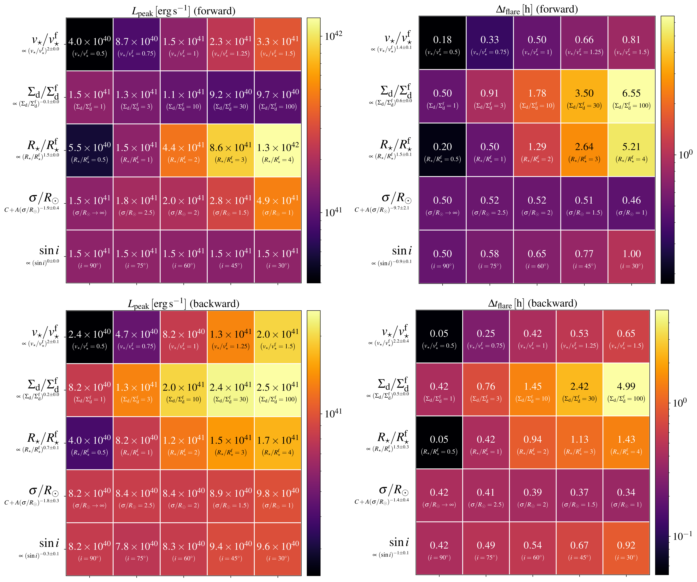<br />
图注：Heatmaps of the peak luminosity $L_{\rm peak}$ (first columns) and flare durations $\Delta t$ (right columns) for the forward (top) and backward (bottom) outflows for all simulations. Each row corresponds to a different varied parameter, while each column corresponds to a different parameter value, shown in parentheses. Values of $L_{\rm peak}$ and $\Delta t$ are shown in individual cells, which are also colored according to their values. On the left, we show the best-fitting power-law dependence and its uncertainty for each parameter. For backward lightcurves in which the prominent early spike associated with shock breakout is brighter than the rest of the lightcurve, we report $L_{\rm peak}$ of the broader secondary peak and calculate $\Delta t$ using this peak as the reference value for the extrapolation.<br />
对应解读：对应“峰值光度与输入参数的拟合图”“持续时间与输入参数的拟合图”以及模型拟合段落中关于经验幂律标度的核心讨论。<br />
入选理由：该图直接给出所有参数扫描下前向/反向外流的峰值光度和持续时间热图，并在左侧列出最佳幂律依赖及不确定性，是检验“速度增亮、密度增宽、恒星半径增强、集中盘更亮更短、斜穿盘拉长 flare”等结论的最关键图。相比单条光变曲线，它同时压缩了参数趋势、方向性差异和拟合斜率，最适合支撑日报的模型拟合解读。<br />
来源与置信度：\(arxiv_source\)；high；\(arxiv_source\) / aa61811-26_arxiv.tex:figure[7]</p>
<p><strong>Fig12</strong><br />
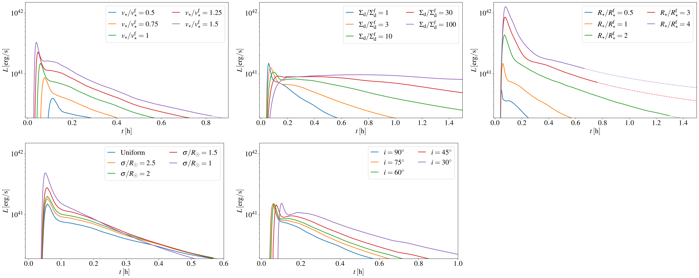<br />
图注：The time evolution of $L$ of the forward outflow for simulations varying $v_\star$, $\Sigma_{\rm d}$, $R_\star$, $\sigma$, and $i$, shown respectively in the first to fifth panels, counting from left to right and then from top to bottom. The dotted lines denote the extrapolated late-time decay.<br />
对应解读：对应“总光度光变曲线”和关键图表逐图导读中关于不同参数下峰值、宽度和拖尾变化的讨论。<br />
入选理由：该图展示前向外流光度随时间的完整演化，并按 \(v_star\)、\(Sigma_d\)、\(R_star\)、sigma 和 i 分面比较，可直接观察峰值、持续时间、晚期拖尾和外推衰减。它是从模拟输出连接到观测 flare 形态的主要证据，能补充 Fig07 中热图和幂律拟合的压缩信息。<br />
来源与置信度：\(arxiv_source\)；high；\(arxiv_source\) / aa61811-26_arxiv.tex:figure[12]</p>
<p><strong>Fig04</strong><br />
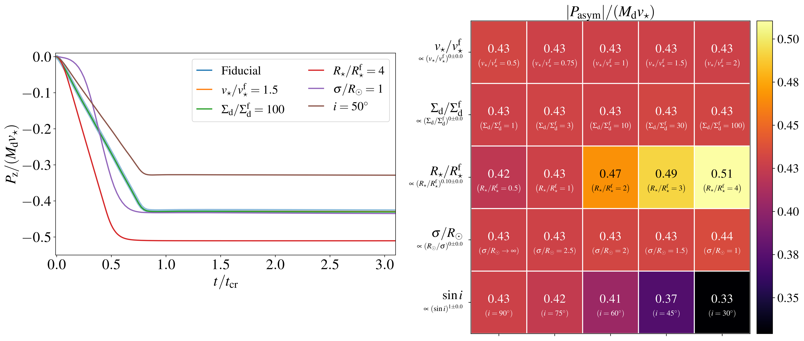<br />
图注：Top: Momentum along the $z$-direction $P_{\rm z}^{\rm }$ of the gas that has been affected by the shock by the end of our simulation for different simulations. The blue, orange, and green curves overlap because the dimensionless redistribution of momentum remains nearly self-similar when varying \(v_\star\) or \(\Sigma_{\rm d}\). Bottom: Heatmap showing magnitude of the asymptotic vertical momentum $|P_{\rm asym}|$ for all simulations. Each row corresponds to a different varied parameter, while each column corresponds to a different parameter value, shown in parentheses. Values of $|P_{\rm asym}|$ are shown in individual cells, which are also colored according to their values. On the left, we show the best-fitting power-law dependence and its uncertainty for each parameter.<br />
对应解读：对应“外流动量随时间图”以及关键图表逐图导读中关于前向/反向外流不对称性、斜穿盘如何改变上下动量比的讨论。<br />
入选理由：该图上半部分给出受激波影响气体的 z 向动量演化，下半部分汇总所有模拟的渐近垂直动量并给出幂律依赖及不确定性，直接支撑外流方向性和强弱 flare 物理来源的分析。它比单纯质量外流率图更能解释不对称性如何随 \(R_star\)、sigma 和 i 改变。<br />
来源与置信度：\(arxiv_source\)；high；\(arxiv_source\) / aa61811-26_arxiv.tex:figure[4]</p>
<p><strong>Fig01</strong><br />
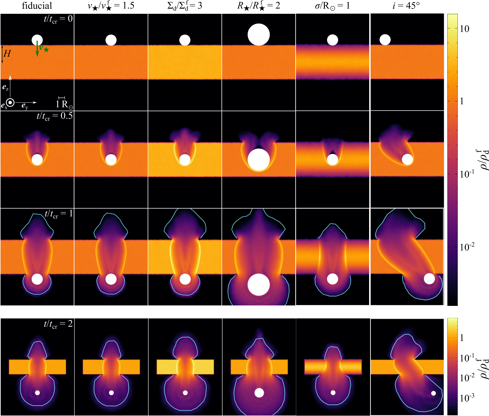<br />
图注：Gas density slices in the $yz$-plane at $x=0$ at different times for the following simulations: fiducial (first column), $v_\star/v_\star^{\rm f}=1.5$ (second column), $\Sigma_{\rm d}/\Sigma_{\rm d}^{\rm f}=3$ (third column), $R_\star/R_\star^{\rm f}=2$ (fourth column), $\sigma/R_\odot=1$ (fifth column), $i=45^\circ$ (sixth column). Snapshots in the first, second, third, and fourth row, correspond to $t/t_{\rm cr}=0$, $t/t_{\rm cr}=0.5$, $t/t_{\rm cr}=1$, $t/t_{\rm cr}=2$, respectively. In the last row, we zoom out and also change colorbar limits. The white circle denotes the star. Solid blue lines in the third and fourth row correspond to the photosphere surface evaluated according to the method described in Section \(\ref{subsec:lcs}.\)<br />
对应解读：对应“密度或温度切片图”和关键图表逐图导读中关于弓形激波、双向外流、低密度逃逸通道及形态相似性的讨论。<br />
入选理由：该图以多时刻密度切片比较 fiducial、高速度、高面密度、大恒星半径、集中垂直结构和倾斜穿盘等代表性模型，能直观看到弓形激波、上下外流和光球面位置。它直接检验速度和盘密度变化是否主要保持拓扑相似，而其他参数改变外流结构。<br />
来源与置信度：\(arxiv_source\)；high；\(arxiv_source\) / aa61811-26_arxiv.tex:figure[1]</p>
<p><strong>Fig06</strong><br />
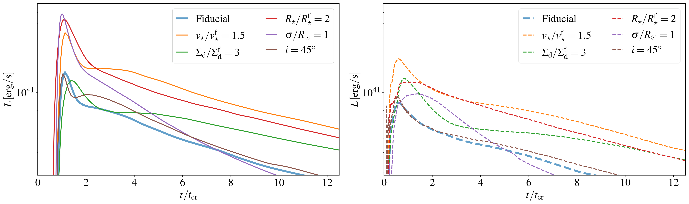<br />
图注：The time evolution of $L$ of the forward (top) and backward (bottom) outflow for different simulations. The dotted lines denote the extrapolated late-time decay. For backward lightcurves in which the prominent early spike associated with shock breakout is brighter than the rest of the lightcurve (e.g. dashed brown lines in the bottom panel), we perform the extrapolation using $L_{\rm peak}$ of the secondary peak.<br />
对应解读：对应“总光度光变曲线”以及关键图表逐图导读中关于前向和反向外流光变差异、早期 shock breakout spike 和次峰处理的讨论。<br />
入选理由：该图同时展示前向与反向外流的光度时间演化，并标出晚期外推衰减，对理解强弱 flare、不对称光变以及 Fig07 中峰值和持续时间定义非常重要。虽然不是所有参数的完整分面图，但它保留了方向分解信息，适合解释观测中强弱交替的物理来源。<br />
来源与置信度：\(arxiv_source\)；high；\(arxiv_source\) / aa61811-26_arxiv.tex:figure[6]</p>
<p><strong>Fig08</strong><br />
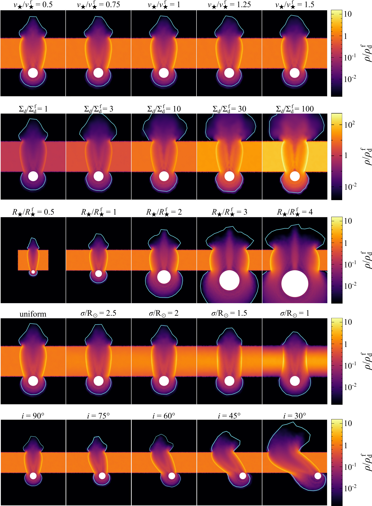<br />
图注：Gas density slices in the $yz$-plane at $x=0$ at $t/t_{\rm cr}=1$ for all the simulations varying $v_\star$ (first row), $\Sigma_{\rm d}$ (second row), $R_\star$ (third row), $\sigma/R_\odot$ (fourth row), and $i$ (fifth row). The white circle denotes the star.<br />
对应解读：对应“密度或温度切片图”中要求系统比较所有参数扫描形态变化的部分。<br />
入选理由：该图在同一时刻汇总 \(v_star\)、\(Sigma_d\)、\(R_star\)、sigma 和 i 的全参数密度切片，比 Fig01 的代表性时间序列更适合横向检查参数扫描范围内弓形激波和外流拓扑是否发生系统变化。它可作为 Fig01 的补充，用于验证形态自相似和极端参数点的影响。<br />
来源与置信度：\(arxiv_source\)；high；\(arxiv_source\) / aa61811-26_arxiv.tex:figure[8]</p>
<h4 id="_78">强相关工作</h4>
<p>这项工作与 QPE 发现和建模文献直接相连。同一事件或同一源方面，GSN 069 是 QPE 研究中的关键原型之一，相关论文包括其软 \(X\) 射线准周期爆发的发现、长期监测、与可能 TDE 后吸积盘的联系，以及强弱交替的轨道解释。建议检索关键词：\(\rm GSN\ 069\)、\(\rm quasi\mbox{-}periodic\ eruptions\)、\(\rm QPE\)、\(\rm post\mbox{-}TDE\ disc\)、\(\rm star\mbox{-}disc\ collision\)。</p>
<p>同类源方面，应把本文与 RX J1301.9+2747、eRO-QPE1、eRO-QPE2、XMMSL1 J024916.6-041244 等 QPE 候选源的观测论文对读，关注周期、峰值光度、软谱温度和长期演化是否落在相似范围。若不同源需要非常不同的 \(R_\ast\)、\(\Sigma\) 或盘垂直结构，恒星—盘碰撞模型就需要解释这些分布是否天体物理上自然。</p>
<p>理论上，本文与极端质量比天体穿盘、活动星系核盘中恒星迁移、潮汐瓦解后盘演化、以及辐射驱动瞬变外流模型相邻。相反观点主要来自盘热—黏滞不稳定、磁流体不稳定或周期性质量转移模型。检索时可使用 \(\rm AGN\ disk\ star\ collision\)、\(\rm EMRI\ disk\ crossing\)、\(\rm radiation\ hydrodynamics\ transient\ outflow\)、\(\rm QPE\ disk\ instability\) 等关键词。</p>
<p><strong>同一事件 / 同类源线索</strong>：</p>
<ul>
<li><a href="https://arxiv.org/abs/2607.05508">https://arxiv.org/abs/2607.05508</a></li>
<li><a href="https://www.nature.com/articles/s41586-019-1556-x">https://www.nature.com/articles/s41586-019-1556-x</a></li>
</ul>
<p><strong>相似工作</strong>：</p>
<ul>
<li><a href="https://arxiv.org/search/astro-ph?query=quasi-periodic+eruptions&amp;searchtype=all">https://arxiv.org/search/astro-ph?query=quasi-periodic+eruptions&amp;searchtype=all</a></li>
<li><a href="https://arxiv.org/search/astro-ph?query=GSN+069+QPE&amp;searchtype=all">https://arxiv.org/search/astro-ph?query=GSN+069+QPE&amp;searchtype=all</a></li>
</ul>
<p><strong>基础理论 / 方法工作</strong>：</p>
<ul>
<li><a href="https://arxiv.org/search/astro-ph?query=star+disc+collision+AGN&amp;searchtype=all">https://arxiv.org/search/astro-ph?query=star+disc+collision+AGN&amp;searchtype=all</a></li>
<li><a href="https://arxiv.org/search/astro-ph?query=tidal+disruption+event+accretion+disc&amp;searchtype=all">https://arxiv.org/search/astro-ph?query=tidal+disruption+event+accretion+disc&amp;searchtype=all</a></li>
</ul>
<p><strong>相反观点 / 张力线索</strong>：</p>
<ul>
<li><a href="https://arxiv.org/search/astro-ph?query=QPE+disk+instability&amp;searchtype=all">https://arxiv.org/search/astro-ph?query=QPE+disk+instability&amp;searchtype=all</a></li>
<li><a href="https://arxiv.org/search/astro-ph?query=QPE+mass+transfer&amp;searchtype=all">https://arxiv.org/search/astro-ph?query=QPE+mass+transfer&amp;searchtype=all</a></li>
</ul>
</details>
<h3 id="8-kinetic-structure-of-the-intracluster-medium-across-nearby-clusters-observed-with-xrism">8. Kinetic structure of the intracluster medium across nearby clusters observed with XRISM</h3>
<ul>
<li>来源：arXiv / astro-ph.HE</li>
<li>链接：https://arxiv.org/abs/2607.06313v1</li>
<li>作者：Naomi Ota, Erwin T. Lau, Satoshi Yamada, Yuki Omiya, Hiroya Yamaguchi</li>
<li>评分：novelty 7/10，importance 8/10，relevance 8/10，final 8.70/10</li>
<li>推荐理由：Compiles a substantial XRISM/Resolve sample of cluster gas motions, giving new constraints on ICM turbulence and non-thermal pressure; relevant to high-energy cluster astrophysics and future multiwavelength non-thermal studies.</li>
</ul>
<p><strong>中文题目</strong>：XRISM 观测的近邻星系团中星系团内介质的运动学结构</p>
<p><strong>做了什么</strong>：这篇文章把 XRISM/Resolve 已经获得的近邻星系团高分辨率 X 射线谱观测放到同一套尺度和诊断量下比较：共汇总 19 个星系团中的 45 个测量点，统一换算到发射加权的有效视线尺度 \(\ell_{\rm eff}\)，比较视线速度弥散 \(\sigma_v\)、 bulk 速度幅度 \(|v_{\rm bulk}|\)、二者比值 \(R_v=|v_{\rm bulk}|/\sigma_v\)，以及非热压强代理量。核心结论是，扰动的非冷核星系团不是简单的“速度弥散更大”的冷核系统；更关键的区别在于相干视线运动相对于未分辨线宽的强弱。冷核区域通常 \(R_v<1\)，非冷核系统常见 \(R_v>1\)，均值从冷核中心的约 \(0.45\) 上升到非冷核系统的约 \(1.6\)。</p>
<p><strong>为什么重要</strong>：星系团质量、宇宙学应用和星系团反馈物理长期受限于一个问题：热气体是否真的接近静水平衡，还是有显著湍流、sloshing、并合驱动的非热支撑。过去 Chandra 和 XMM-Newton 主要能看温度、密度和形态，气体速度只能间接推断；XRISM/Resolve 通过铁线等谱线的能量位移和展宽直接测量 \(\sim 100\,\mathrm{km\,s^{-1}}\) 量级的 ICM 运动。这篇文章的重要性在于，它不是报告单个星系团，而是开始建立跨星系团的运动学比较框架。</p>
<p><strong>理论 / 观测 / 仪器方法价值</strong>：对理论而言，本文把“湍流压强”拆成了线宽型无规运动和大尺度相干 bulk 运动，提醒模拟和解析模型不能只用一个非热压强参数概括 ICM 动力学。对观测而言，它提供了把不同 XRISM 指向、不同孔径、不同星系团环境放到同一 \(\ell_{\rm eff}\) 标尺上比较的方法。对仪器和方法而言，它展示了 Resolve 微量热计谱分辨率在星系团动力学中的实际诊断能力，并把观测量与 TNG-Cluster 的前向建模预测相连。</p>
<p><strong>为什么应该关注</strong>：如果你关心用星系团做宇宙学，这篇文章直接关系到静水质量偏差的物理来源；如果你关心 AGN 反馈，它帮助区分冷核中心由反馈搅动导致的局部线宽和并合、sloshing 造成的大尺度相干运动；如果你做数值模拟，它给出了一组可直接和 mock XRISM 谱观测比较的速度诊断量。它的核心提醒是：ICM 的“非热运动”不是一条从安静到湍动的单参数序列，而是有结构、有尺度、有环境依赖的投影运动场。</p>
<details class="paper-detail">
<summary>展开详细解读：文章讲解、背景、理论、重点章节、图表与相关工作</summary>
<h4 id="_79">文章详细讲解</h4>
<p>科学问题：星系团内介质 ICM 通常被当作近似静水平衡的热等离子体，但实际星系团会受到 AGN 喷流、核心 sloshing、次团并合、宇宙大尺度结构吸积等过程扰动。这些过程都会在 X 射线谱线中留下速度信息：谱线中心偏移对应视线 bulk 速度，谱线展宽对应未分辨的视线速度弥散。问题在于，单个星系团的速度测量很难判断这些运动是局部反馈、核心晃动，还是整团尺度的动力学扰动；也很难判断非热压强对静水质量估计的影响是否可用一个简单参数概括。</p>
<p>作者怎么做：本文汇总了 XRISM/Resolve 对 19 个近邻星系团的 45 个 ICM 速度测量。由于不同观测的视场、表面亮度权重、源红移和物理尺度不同，作者没有直接比较仪器角尺度上的线宽，而是定义发射加权的有效视线尺度 \(\ell_{\rm eff}\)，把不同测量投影到一个可比的物理尺度上。随后他们比较 \(\sigma_v\)、\(|v_{\rm bulk}|\)、\(R_v=|v_{\rm bulk}|/\sigma_v\) 和非热压强代理量，并按冷核中心、冷核外区、非冷核系统等环境分类。</p>
<p>关键结果：最重要的结果不是“非冷核星系团的线宽一定更大”，而是非冷核系统中相干视线速度相对于线宽更显著。冷核中心和冷核区域的 \(R_v\) 多数低于 \(1\)，说明局部未分辨运动或小尺度搅动相对更重要；非冷核系统的 \(R_v\) 经常超过 \(1\)，均值约为 \(1.6\)，提示大尺度 bulk 运动、并合或 halo assembly 导致的速度结构占优。这个区分让“湍流压强”这个常用说法变得更具体：谱线展宽和谱线位移不是同一个物理量，也不应被粗暴合并。</p>
<p>与模拟比较方面，作者把观测诊断量和 TNG-Cluster 的前向建模预测相比较。许多冷核测量落在模拟非热压强预测范围的低端，这与松弛系统中静水质量修正较小的图像一致；扰动系统则可对应更大的非热支撑和更复杂的投影速度结构。这种比较的价值在于，观测并不是直接测三维湍流能量，而是测经仪器响应、视线投影和发射权重混合后的谱线诊断量，因此前向建模比直接拿模拟三维速度场比较更可靠。</p>
<p>局限和下一步：样本仍是早期 XRISM 星系团样本，45 个测量点虽然已经有统计比较意义，但远未覆盖星系团质量、红移、动力学状态、冷核强度的完整参数空间。\(\ell_{\rm eff}\) 能缓解不同指向和投影尺度不一致的问题，但不能完全恢复三维速度场；\(\sigma_v\) 也可能混合真实湍流、多个温度组分、未解析速度剪切和仪器线扩散函数误差。下一步需要更系统的径向扫描、重复观测、与弱透镜质量和 Sunyaev-Zel'dovich 数据联合，并用模拟生成与真实观测完全一致的 mock Resolve 谱来校准静水质量偏差。</p>
<h4 id="_80">关键结果是怎么做出来的</h4>
<p>本文的证据链从样本标准化开始。作者收集 19 个近邻星系团中的 45 个 XRISM/Resolve 测量，而不是只看单个高信噪比目标。每个测量点对应一定的天空区域和表面亮度权重，因此作者用发射加权有效视线尺度 \(\ell_{\rm eff}\) 统一尺度。这一步很关键，因为同样的角半径在不同红移和不同表面亮度分布下对应不同物理区域；如果不统一尺度，\(\sigma_v\) 的差异可能只是孔径和投影混合差异。</p>
<p>主要分类变量是星系团动力学和核心状态：冷核中心、冷核外部区域、非冷核或扰动系统。作者比较的不是单一速度量，而是 \(\sigma_v\)、\(|v_{\rm bulk}|\)、\(R_v=|v_{\rm bulk}|/\sigma_v\) 和非热压强代理量的组合。这里 \(\sigma_v\) 来自谱线展宽扣除热宽度和仪器响应后的剩余展宽，\(|v_{\rm bulk}|\) 来自谱线中心相对于系统红移的位移。\(R_v\) 的好处是能把“相干运动”和“未分辨线宽”分开看。</p>
<p>最关键的数值结果是 \(R_v\) 的环境依赖：冷核中心的均值约为 \(0.45\)，冷核区域大多低于 \(1\)，非冷核系统均值升至约 \(1.6\)，并且常见 \(R_v>1\)。这说明非冷核系统的区别不只是 \(\sigma_v\) 整体抬高，而是谱线中心随区域或系统红移出现更强的相干偏移。换句话说，扰动星系团中“运动能量”更像大尺度流场、sloshing 或并合残留，而不是单纯各向同性小尺度湍流。</p>
<p>统计上，本文的核心更接近样本比较和诊断量分布分析，而不是对某一个宇宙学参数做高维后验推断。读者应重点检查不同类别中 \(R_v\) 分布的误差棒、是否由少数极端系统驱动、以及 \(\sigma_v\) 和 \(|v_{\rm bulk}|\) 分别对分类差异贡献多少。若论文给出均值、散布或 bootstrap 置信区间，应关注非冷核与冷核中心之间的区分是否在测量误差和样本方差下仍稳健。</p>
<p>支撑结论的图表应包括：\(\sigma_v\) 随 \(\ell_{\rm eff}\) 的散点图、\(|v_{\rm bulk}|\) 随 \(\ell_{\rm eff}\) 的散点图、\(R_v\) 的分类比较、以及非热压强代理量与 TNG-Cluster 前向预测的对照。系统误差方面，关键包括 Resolve 能量尺度校准、谱线模型和等离子体温度结构、源红移或参考速度零点、以及多温度气体对线宽的影响。稳健性检验应看作者是否改变区域定义、排除低信噪比点、或采用不同发射权重后仍得到相同的环境趋势。</p>
<details class="paper-subdetail">
<summary>展开背景、理论、公式、模型、章节和图表导读</summary>
<h4 id="_81">背景知识</h4>
<p>研究对象是星系团内介质，即填充星系团引力势阱的 \(10^7\) 到 \(10^8\,\mathrm{K}\) 稀薄等离子体。它在 X 射线波段通过轫致辐射和高电离金属线发光，包含星系团重子质量的大部分。传统 X 射线星系团研究主要测电子密度 \(n_e\) 和温度 \(T\)，再用静水平衡推断总质量；但只要气体存在 bulk motion、湍流或宇宙线、磁场等非热支撑，静水质量就会有系统偏差。</p>
<p>历史上，ICM 运动很长时间只能间接研究。Chandra 的高角分辨率能看到冷锋、空洞、激波和表面亮度扰动；XMM-Newton 有较强集光能力；Suzaku 背景低、适合外区温度。但 CCD 能谱分辨率不足以常规测量 \(\sim 100\,\mathrm{km\,s^{-1}}\) 级别的谱线位移和展宽。Hitomi 对 Perseus 星系团的观测首次清楚显示其核心 ICM 速度弥散相当低，改变了人们对冷核中心湍流强度的认识。XRISM/Resolve 则把这种高分辨率谱学能力从单个标志性目标扩展到样本研究。</p>
<p>为什么现在值得重新看？一方面，星系团宇宙学需要把静水质量偏差从经验 nuisance parameter 推向物理校准；另一方面，AGN 反馈模型需要知道喷流注入的能量以什么形式在 ICM 中传播和耗散。谱线宽度告诉我们未分辨速度弥散，谱线中心偏移告诉我们相干视线速度，两者结合才可能区分湍流、sloshing、并合驱动流和投影速度剪切。</p>
<p>该领域常见误区之一是把所有非热运动都叫“湍流”。实际上，X 射线谱线展宽中的 \(\sigma_v\) 可能来自小尺度湍流，也可能来自同一视场内不同气团的速度剪切；而 bulk 速度 \(|v_{\rm bulk}|\) 更接近区域平均视线流动。另一个误区是把冷核系统等同于动力学完全平静。冷核中心可以有 AGN 驱动的局部搅动和线宽增强，但这不一定意味着整团具有强并合扰动。本文正是通过 \(R_v\) 这样的诊断量把这些情况拆开。</p>
<h4 id="_82">基础理论 / 方法脉络</h4>
<p>基础物理图像是：ICM 被星系团暗物质势阱束缚，热压强梯度主要抵抗引力。如果气体完全静止且各向同性热化，X 射线谱线的宽度主要由离子热运动和仪器响应决定；如果气体还有视线方向速度场，谱线会发生 Doppler 位移和额外展宽。Resolve 的高能谱分辨率使铁 \(K\) 线等强谱线的中心和宽度可以被精确测量，从而把速度信息从热谱中分离出来。</p>
<p>本文用到的两个核心观测量是视线速度弥散 \(\sigma_v\) 和 bulk 速度幅度 \(|v_{\rm bulk}|\)。前者对应谱线在扣除热宽度和仪器线扩散函数后剩余的高斯型速度展宽；后者对应谱线中心相对系统红移的偏移。二者的比值 \(R_v=|v_{\rm bulk}|/\sigma_v\) 是一个无量纲投影运动结构指标：\(R_v<1\) 表明线宽型未分辨运动较显著，\(R_v>1\) 表明区域平均相干速度更显著。</p>
<p>观测方法的核心难点是投影和权重。X 射线谱不是三维某一点的速度，而是沿视线和观测孔径内不同温度、密度、金属丰度气体的发射加权叠加。由于 X 射线发射近似按 \(n_e^2\) 加权，明亮核心会强烈影响测得的速度和线宽。本文使用发射加权有效尺度 \(\ell_{\rm eff}\)，目的就是把不同目标、不同指向、不同物理孔径下的测量放到尽可能一致的比较基准上。</p>
<p>常见退化包括：多温度结构和非平衡电离可能影响谱线形状；仪器能量尺度误差会伪装成 \(v_{\rm bulk}\)；仪器线扩散函数或谱模型误差会影响 \(\sigma_v\)；同一视场内若存在两个速度不同的气体组分，单高斯线宽会把速度剪切误认为湍流。因此本文强调“projected kinetic structure”，而不是直接声称测得了三维湍流级联。</p>
<p>理论解释上，非热压强代理量常把 \(\sigma_v\) 与热声速或热压强比较。若未分辨运动近似各向同性，速度弥散可转化为非热压强分量；但如果 \(R_v\) 很大，相干 bulk 运动的动力学影响未必等同于局部湍流压强。本文的价值正在于提示：星系团质量偏差和反馈能量输运需要同时跟踪速度幅度、相干尺度和环境状态。</p>
<h4 id="_83">公式与推导</h4>
<p>第一步从静水平衡出发。若 ICM 的热压强为 \(P_{\rm th}\)，气体密度为 \(\rho_g\)，总质量为 \(M(<r)\)，球对称静水平衡给出</p>
<div class="math-display">\[\frac{dP_{\rm th}}{dr}=-\rho_g\frac{G M(<r)}{r^2}.\]</div>
<p>这里 \(r\) 是三维半径，\(G\) 是引力常数。若存在非热运动，真实支撑应包含 \(P_{\rm nt}\)，因此只用 \(P_{\rm th}\) 会低估质量。</p>
<p>第二步把热压强和非热压强写成可观测或可推断的形式。热压强近似为</p>
<div class="math-display">\[P_{\rm th}=n_{
m tot} k_{
m B}T,\]</div>
<p>其中 \(n_{}\)<br />
m tot}) 是总粒子数密度，(k_{<br />
m B}) 是玻尔兹曼常数，\(T\) 是气体温度。若未分辨速度场近似各向同性，非热压强可写为</p>
<div class="math-display">\[\(P_{\rm nt}\simeq\) \(\rho_g\) \sigma_{
m 3D}^2/3 \simeq \rho_g \sigma_v^2,\]</div>
<p>其中 \(\sigma_{}\)<br />
m 3D}) 是三维速度弥散，\(\sigma_v\) 是单个视线方向速度弥散；第二个近似要求速度各向同性。</p>
<p>第三步连接到谱线 Doppler 位移。谱线静止能量为 \(E_0\)，观测到的线心能量为 \(E_{}\)<br />
m obs})，系统宇宙学红移为 (z_{<br />
m sys})。小速度极限下，区域平均视线速度可估计为</p>
<div class="math-display">\[\(v_{\rm bulk}\simeq\) c\left[\frac{E_0}{E_{
m obs}(1+z_{
m sys})}-1\right],\]</div>
<p>其中 \(c\) 是光速。这个式子说明能量尺度校准和系统红移误差会直接进入 \(v_{\rm bulk}\)。</p>
<p>第四步连接到谱线展宽。若谱线总能量宽度为 \(\sigma_E\)，可近似分解为热宽度、速度宽度和仪器宽度：</p>
<div class="math-display">\[\sigma_E^2\simeq \sigma_{E,{\rm th}}^2+\sigma_{E,{\rm vel}}^2+\sigma_{E,{\rm inst}}^2.\]</div>
<p>其中 \(\sigma_{E,{\rm inst}}\) 是仪器线扩散函数贡献，\(\sigma_{E,{\rm th}}\) 是离子热运动贡献，\(\sigma_{E,{\rm vel}}\) 是待测的非热速度展宽贡献。</p>
<p>第五步，离子热宽度由 Maxwell 分布给出：</p>
<div class="math-display">\[\sigma_{E,{\rm th}}=\frac{E_0}{c}\sqrt{\frac{k_{
m B}T_i}{m_i}},\]</div>
<p>其中 \(T_i\) 是发射该谱线的离子温度，\(m_i\) 是离子质量。对铁线而言 \(m_i\) 很大，所以热宽度相对较小，但仍需在高分辨谱中扣除。</p>
<p>第六步，非热速度弥散与能量宽度的关系为</p>
<div class="math-display">\[\sigma_v=\frac{c}{E_0}\sigma_{E,{\rm vel}}.\]</div>
<p>这就是 Resolve 从谱线剩余展宽得到 \(\sigma_v\) 的基本转换。注意若视场内存在速度剪切，单个 \(\sigma_v\) 可能包含湍流和 unresolved bulk gradient。</p>
<p>第七步，本文使用的结构诊断量为</p>
<div class="math-display">\[R_v\equiv \frac{|v_{\rm bulk}|}{\sigma_v}.\]</div>
<p>当 \(R_v\ll 1\) 时，区域平均速度小于线宽型运动；当 \(R_v\gtrsim 1\) 时，相干视线流动或大尺度速度偏移成为主要特征。本文发现 \(R_v\) 从冷核中心到非冷核系统系统性升高。</p>
<p>第八步，把速度弥散转化为非热压强占比的常用近似是</p>
<div class="math-display">\[\(f_{\rm nt}\equiv\) \frac{P_{\rm nt}}{P_{\rm th}+P_{\rm nt}}\simeq \frac{\mu m_p \sigma_v^2}{k_{
m B}T+\mu m_p \sigma_v^2},\]</div>
<p>其中 \(\mu\) 是平均分子量，\(m_p\) 是质子质量。该式假设 \(\sigma_v\) 可代表各向同性随机运动；若 \(R_v\) 很大或速度场强各向异性，这个解释需要谨慎。</p>
<p>第九步，谱拟合本质上通过计数似然比较模型和数据。对能道 \(i\) 的观测计数 \(C_i\) 和模型计数 \(M_i(\boldsymbol{\theta})\)，Poisson 似然可写为</p>
<div class="math-display">\[\ln \mathcal{L}(\boldsymbol{\theta})=\sum_i \left[C_i\ln M_i(\boldsymbol{\theta})-M_i(\boldsymbol{\theta})-\ln(C_i!)\right],\]</div>
<p>其中 \(\boldsymbol{\theta}\) 包括温度、丰度、红移、\(\sigma_v\) 和背景参数。速度测量的置信区间来自该似然在参数空间中的轮廓或后验边缘化。</p>
<p>第十步，若比较不同类别的平均诊断量，可用加权均值表达为</p>
<div class="math-display">\[\bar{R}_v=\frac{\sum_j w_j R_{v,j}}{\sum_j w_j},\quad w_j\simeq \frac{1}{\delta R_{v,j}^2+s_{\rm int}^2},\]</div>
<p>其中 \(j\) 标记测量点，\(δ R_{v,j}\) 是测量误差，\(s_{\rm int}\) 是类别内部真实散布。这个式子说明，非冷核系统 \(\bar{R}_v\) 较高是否稳健，取决于误差、内禀散布和少数极端点的权重。</p>
<h4 id="_84">模型拟合 / 应用方法</h4>
<p>这类 XRISM 星系团运动学分析的拟合对象是高分辨率 X 射线谱。基本模型包括热等离子体辐射成分、元素丰度、温度、红移或速度位移、额外速度展宽、天体背景和仪器背景，再经过 Resolve 的响应矩阵和有效面积折叠，与观测计数比较。本文汇总的 \(\sigma_v\) 和 \(|v_{\rm bulk}|\) 本质上都来自这类谱拟合，只是进一步被统一到共同的空间尺度和分类框架下。</p>
<p>参数估计通常使用 Poisson 似然或等价的 \(C\)-statistic，而不是简单的 \(\chi^2\)，因为高能道或窄谱线附近计数可能不满足高斯近似。关键拟合量包括温度 \(T\)、金属丰度 \(Z\)、红移 \(z\)、速度展宽 \(\sigma_v\)、归一化以及背景参数。对 \(v_{\rm bulk}\) 而言，能量尺度校准是主系统项；对 \(\sigma_v\) 而言，仪器线扩散函数、热宽度扣除和多温度结构是主系统项。</p>
<p>退化关系很重要。温度结构会改变铁线复合体中不同离子线的相对强度，若模型过于简单，可能把线形复杂性误解释为速度展宽。丰度和温度的退化影响线强和连续谱归一化，从而改变速度宽度约束。多个速度组分投影在同一孔径内时，单速度高斯模型会给出一个有效 \(\sigma_v\)，但这并不等于真实湍流级联的局部速度弥散。</p>
<p>本文的一个方法价值是把单个区域的谱拟合结果转化为样本级诊断。\(R_v\) 降低了不同星系团绝对速度标度的部分差异，并突出相干位移与线宽的相对重要性；\(\ell_{\rm eff}\) 则处理不同观测孔径的可比性。实际应用中，读者不应只看 \(\sigma_v\) 是否大，而应同时检查 \(|v_{\rm bulk}|\)、\(R_v\)、区域位置、冷核状态和形态扰动指标。</p>
<p>模型可能失败的场景包括：观测区域跨越冷锋或激波，导致单温度单速度模型不合适；源红移由星系成员确定但与 ICM 平均速度不一致；背景或增益校准在窄线附近产生伪位移；或者样本选择偏向明亮冷核，使总体均值不能代表完整星系团族群。因此后续工作需要用更复杂的多组分谱模型、二维速度图和模拟 mock 观测共同检验这些诊断量。</p>
<h4 id="_85">重点章节 / 结果段落怎么读</h4>
<ol>
<li>
<p>数据和样本部分应首先阅读。重点看 19 个星系团和 45 个测量点如何选取，是否包含已发表和新分析的 XRISM/Resolve 结果，各测量区域的角尺度、物理尺度、冷核分类和信噪比如何定义。这里决定了后面样本统计能否代表“近邻星系团”而不是少数明亮目标。</p>
</li>
<li>
<p>有效尺度 \(\ell_{\rm eff}\) 和发射权重定义是方法核心。读者应检查作者怎样从 X 射线表面亮度或谱归一化构造发射加权尺度，是否考虑投影，是否对不同红移和不同孔径做一致处理。这个段落关系到 \(\sigma_v\) 与 \(\ell_{\rm eff}\) 的趋势是否物理。</p>
</li>
<li>
<p>速度诊断量部分应重点看 \(\sigma_v\)、\(|v_{\rm bulk}|\) 和 \(R_v\) 的定义。尤其要确认 \(|v_{\rm bulk}|\) 的参考速度零点是什么，\(\sigma_v\) 是否已扣除热宽和仪器宽度，以及误差是否包含主要系统项。</p>
</li>
<li>
<p>主结果部分应按类别比较阅读：冷核中心、冷核外区、非冷核系统分别落在参数空间哪里。不要只看平均值，应看散布、误差棒和异常点。本文最重要的信息是 \(R_v\) 的环境依赖，而不是单独的速度弥散排序。</p>
</li>
<li>
<p>与 TNG-Cluster 比较和讨论部分应作为物理解释阅读。重点看模拟是否做了前向建模，是否按 XRISM 类似的视场和发射权重生成观测量。若只是三维速度场直接比较，解释会弱；若经过 mock 观测，才能更可靠地谈非热压强和静水质量修正。</p>
</li>
<li>
<p>附录或稳健性检验如果存在，应检查分类、尺度定义、异常源剔除和系统误差处理。对早期样本论文，稳健性往往比单个拟合值更能说明结论是否可推广。</p>
</li>
</ol>
<h4 id="_86">建议重点查看的图表</h4>
<ol>
<li>
<p>样本与区域示意图：看 19 个星系团的观测区域、冷核/非冷核分类、区域相对 \(R_{500}\) 或核心半径的位置。关键是判断不同类别是否也混合了不同半径选择。</p>
</li>
<li>
<p>\(\sigma_v\) 对 \(\ell_{\rm eff}\) 的散点图：看速度弥散是否随有效尺度增大而系统变化，以及冷核中心是否真的集中在低 \(\sigma_v\) 或只是误差较大。</p>
</li>
<li>
<p>\(|v_{\rm bulk}|\) 对 \(\ell_{\rm eff}\) 的散点图：看非冷核系统是否由更大的线心位移驱动，是否存在少数极端并合系统拉高均值。</p>
</li>
<li>
<p>\(R_v=|v_{\rm bulk}|/\sigma_v\) 的分类比较图：这是全文最关键诊断。应看各类别均值、中位数、置信区间、内禀散布，以及 \(R_v=1\) 参考线两侧的分布。</p>
</li>
<li>
<p>非热压强代理量图：看冷核测量是否位于模拟预测低端，扰动系统是否接近高端；同时注意该代理量是否只由 \(\sigma_v\) 推出，是否忽略 bulk 动能。</p>
</li>
<li>
<p>与 TNG-Cluster 前向模型比较图：看观测点和模拟带的重合程度，尤其是模拟是否给出观测选择和投影后的分布，而非理想三维值。</p>
</li>
<li>
<p>系统误差或稳健性表：看能量尺度、仪器线宽、温度模型、背景和区域定义对 \(v_{\rm bulk}\)、\(\sigma_v\)、\(R_v\) 的影响量级。</p>
</li>
</ol>
<h4 id="_87">关键图表逐图导读</h4>
<p>图 1：建议把它当作样本地图或观测区域总览来读。横纵坐标可能是天球位置、星系团图像坐标或物理半径，数据区域对应 XRISM/Resolve 的指向或提取孔径。读图时要注意每个区域是否位于冷核中心、冷核外区或非冷核系统；不要把所有点当作同一半径的独立采样，因为发射权重和投影深度不同。</p>
<p>图 2：若为 \(\sigma_v\) 随 \(\ell_{\rm eff}\) 的图，横轴应是有效视线尺度 \(\ell_{\rm eff}\)，纵轴是视线速度弥散 \(\sigma_v\)。不同颜色或符号代表冷核中心、冷核外区、非冷核系统。主要看冷核中心是否存在低线宽聚集，以及非冷核系统是否只是线宽更大。陷阱是误把 \(\sigma_v\) 直接等同三维湍流速度；它仍是投影和孔径加权后的量。</p>
<p>图 3：若为 \(|v_{\rm bulk}|\) 随 \(\ell_{\rm eff}\) 的图，纵轴反映谱线中心相对系统速度的偏移幅度。这里应重点看非冷核点是否整体上移，以及误差棒是否足以排除零速度。读图陷阱是忽略速度零点系统误差；如果系统红移或增益校准不稳定，\(|v_{\rm bulk}|\) 会被系统性影响。</p>
<p>图 4：\(R_v=|v_{\rm bulk}|/\sigma_v\) 分类图应是全文关键图。横轴可能是环境类别，纵轴是 \(R_v\)，并带有 \(R_v=1\) 的参考线。主要结论是冷核中心均值约 \(0.45\)，非冷核系统均值约 \(1.6\)。读图时要看分布而非只看均值：若非冷核均值由少数点决定，其物理解释会更依赖个案；若多数点都高于 \(1\)，说明环境趋势更稳健。</p>
<p>图 5：非热压强代理量或 \(f_{\rm nt}\) 图应显示观测与模拟预测范围。横轴可能是半径、\(\ell_{\rm eff}\)、温度或动力学类别，纵轴是由 \(\sigma_v\) 推出的非热支撑比例。读图时要注意该量通常假设速度各向同性和随机化；对 \(R_v>1\) 的系统，bulk 动能未必能当作局部压强处理。</p>
<p>图 6：与 TNG-Cluster 的比较图通常会用模拟分布带、百分位区间或 mock 观测点云表示。读者应看观测点是否落在模拟带内，以及冷核点是否集中在预测下沿。读图陷阱是把模拟带当作精确理论预言；它还依赖子网格反馈、样本选择、投影方向和 mock 谱构造。</p>
</details>
<h4 id="_88">论文原图 / 可嵌入图片</h4>
<p><strong>Fig02</strong><br />
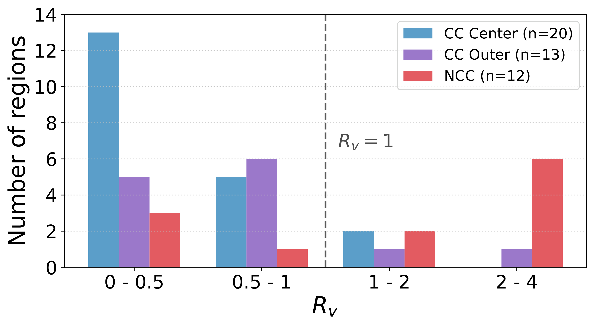<br />
图注：Distribution of the velocity ratio $R_v = |v_{\rm bulk}|/\sigma_v$ for the XRISM region-level sample, separated into CC Center, CC Outer, and NCC regions. The dashed vertical line marks $R_v=1$, where the coherent bulk velocity equals the line-of-sight velocity dispersion. Most cool-core regions are concentrated below unity, with one CC outer region extending to high $R_v$, whereas NCC regions extend more often above unity, indicating that coherent motions are relatively more important in dynamically disturbed systems. {Alt text: Three histograms compare the velocity ratio for CC Center, CC Outer, and NCC regions. CC Center values mostly lie below one, while NCC values extend more often above one.}<br />
对应解读：对应“建议重点查看的图表”第4项以及“关键图表逐图导读”中关于 (R_v=|v_{\<br />
m bulk}|/\(\sigma_v\)) 分类比较的核心解读。<br />
入选理由：这张图直接展示 CC Center、CC Outer 和 NCC 三类区域的 \(R_v\) 分布，并标出 \(R_v=1\) 参考线，正好支撑日报最核心结论：冷核区域多数低于 1，而非冷核系统更常超过 1，说明扰动系统中相干 bulk 运动相对线宽更重要。相比只看单个散点趋势，这张分布图更适合判断结论是否由多数样本支持，还是由少数极端点驱动。<br />
来源与置信度：\(arxiv_source\)；high；\(arxiv_source\) / ms.tex:figure[2]</p>
<p><strong>Fig01</strong><br />
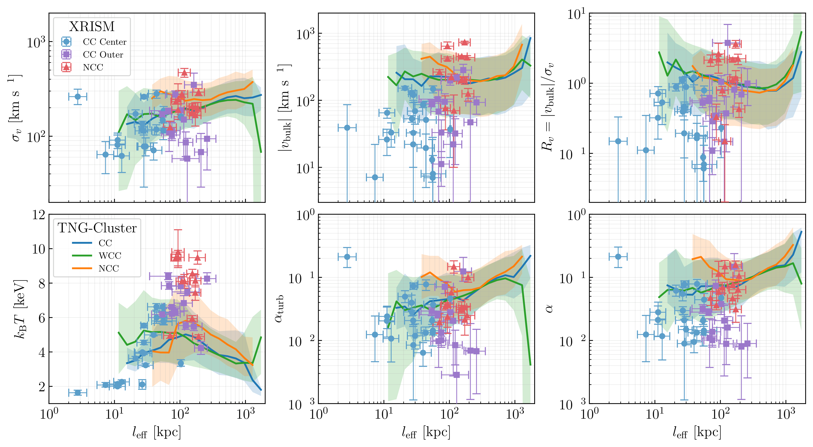<br />
图注：XRISM velocity diagnostics versus $\ell_{\rm eff}$. The six panels show $\sigma_v$, $|v_{\rm bulk}|$, $R_v$, gas temperature, and the non-thermal pressure fractions $\alpha_{\rm turb}$ and $\alpha$, where $\alpha$ includes both line broadening and coherent line-of-sight bulk motion. Symbols show XRISM measurements, with circles, squares, and triangles denoting CC center, CC outer, and NCC regions, respectively. Curves show spectroscopically weighted TNG-Cluster profiles for simulated CC, WCC, and NCC systems in blue, green, and orange, respectively; shaded bands indicate the corresponding 16th--84th percentile ranges. We set a lower limit $\ell_{\rm eff}\geq 10$~kpc in the TNG-Cluster result to minimize potential impact of numerical resolution. Because the present sample contains only one WCC system, we do not define a separate observational WCC class; the simulated WCC track is shown for reference. Error bars show quoted statistical uncertainties. {Alt text: Six diagnostic panels plot XRISM cluster velocity measurements against effective line-of-sight length. The panels show velocity dispersion, absolute bulk velocity, velocity ratio, gas temperature, and two non-thermal pressure proxies, compared with TNG-Cluster profiles.}<br />
对应解读：对应“建议重点查看的图表”第2、3、5、6项，以及“关键图表逐图导读”中关于 \(\sigma_v\)、(|v_{\<br />
m bulk}|)、\(R_v\)、非热压强代理量和 TNG-Cluster 前向模型比较的段落。<br />
入选理由：这是一张六面板综合诊断图，横轴统一为 (\ell_{\<br />
m eff})，同时给出 \(\sigma_v\)、(|v_{\<br />
m bulk}|)、\(R_v\)、温度、(\alpha_{\<br />
m turb}) 和包含 bulk 运动的 \(\alpha\)，并叠加 TNG-Cluster 的 CC/WCC/NCC 模拟曲线和 16--84 百分位带。它最能支撑日报关于有效尺度统一、冷核与非冷核分类、非热压强代理量以及观测与前向模拟比较的综合解读。<br />
来源与置信度：\(arxiv_source\)；high；\(arxiv_source\) / ms.tex:figure[1]</p>
<h4 id="_89">强相关工作</h4>
<p>同一类工作的直接背景包括 Hitomi 对 Perseus 星系团核心 ICM 速度弥散的测量，这是高分辨率 X 射线谱学直接测量星系团气体运动的标志性结果。XRISM/Resolve 继承并扩展了这一路线，把单个标志性冷核目标推进到多星系团样本。建议检索关键词包括 “Hitomi Perseus velocity dispersion intracluster medium”、“XRISM Resolve galaxy cluster turbulence”、“ICM non-thermal pressure hydrostatic mass bias”。</p>
<p>理论和模拟方面，本文与星系团静水质量偏差、AGN 反馈驱动湍流、并合诱导 sloshing、以及宇宙学水动力模拟中的非热压强研究相连。TNG-Cluster、IllustrisTNG、BAHAMAS、The Three Hundred 等模拟系列都可提供类似比较，但关键是是否进行了 X 射线发射加权和仪器前向建模。相反或有张力的观点通常来自两类：一类认为冷核中心 AGN 足以维持较强湍流耗散，另一类认为观测到的低 \(\sigma_v\) 表明反馈能量可能以声波、弱激波、浮力波或间歇性 bulk motion 传播，而非稳定强湍流。</p>
<p><strong>同一事件 / 同类源线索</strong>：</p>
<ul>
<li><a href="https://arxiv.org/abs/2607.06313">https://arxiv.org/abs/2607.06313</a></li>
<li><a href="https://arxiv.org/pdf/2607.06313">https://arxiv.org/pdf/2607.06313</a></li>
</ul>
<p><strong>相似工作</strong>：</p>
<ul>
<li><a href="https://arxiv.org/abs/1607.04487">https://arxiv.org/abs/1607.04487</a></li>
<li><a href="https://www.nature.com/articles/nature18627">https://www.nature.com/articles/nature18627</a></li>
</ul>
<p><strong>基础理论 / 方法工作</strong>：</p>
<ul>
<li><a href="https://arxiv.org/abs/astro-ph/0204049">https://arxiv.org/abs/astro-ph/0204049</a></li>
<li><a href="https://arxiv.org/abs/astro-ph/0110397">https://arxiv.org/abs/astro-ph/0110397</a></li>
</ul>
<p><strong>相反观点 / 张力线索</strong>：</p>
<p>（未提供）</p>
</details>
<h3 id="9-chandra-x-ray-imaging-and-spatially-resolved-spectroscopy-of-sn-1987a-energy-dependent-morphology-of-the-equatorial-ring">9. Chandra X-Ray Imaging and Spatially Resolved Spectroscopy of SN 1987A: Energy-Dependent Morphology of the Equatorial Ring</h3>
<ul>
<li>来源：arXiv / astro-ph.HE</li>
<li>链接：https://arxiv.org/abs/2607.06302v1</li>
<li>作者：Yusuke Sakai, Shinya Yamada, Koji Mori, Hiromasa Suzuki, Haruka Sakemi, Tsukasa Matsushima, Shintaro Kaneko, Kai Matsunaga</li>
<li>评分：novelty 7/10，importance 8/10，relevance 8/10，final 8.70/10</li>
<li>推荐理由：Long-baseline Chandra imaging/spectroscopy of SN 1987A reveals energy-dependent X-ray morphology and Fe K evolution, important for supernova-remnant shock and ejecta interaction physics.</li>
</ul>
<p><strong>中文题目</strong>：用 Chandra X 射线成像和空间分辨光谱追踪 SN 1987A：赤道环形态的能量依赖演化</p>
<p><strong>做了什么</strong>：这篇文章系统整理了 1999–2025 年 Chandra 对 SN 1987A 的 ACIS 和 HETG 观测，分别在软、硬 X 射线能段研究赤道环的长期形态和光谱演化。作者用投影环面模型拟合径向亮度分布，测量环在图像平面上的半径和宽度，并做空间分辨光谱，重点检查 Fe K 发射线。主要结论是：早期软、硬 X 射线形态相近，但 2010 年代初以后软 X 射线发射比硬 X 射线更宽，并呈现向内延伸的趋势，暗示内部或高纬度激波成分正在变得重要；同时 Fe K 线在更早的 2007–2009 年合并谱中已可检测到，且东侧区域增强。</p>
<p><strong>为什么重要</strong>：SN 1987A 是近距离、年龄已知、环境结构相对清楚的核心坍缩超新星遗迹，几乎是研究超新星激波如何撞击环状星周物质的实验室。本文的重要性不在于发现一个新源，而在于把二十多年 Chandra 高角分辨率资料放在同一套形态和光谱框架里，显示晚期 X 射线结构已经不能只看作赤道环外缘的简单增亮，而需要考虑内部、高纬度或反射激波等多成分几何。</p>
<p><strong>理论 / 观测 / 仪器方法价值</strong>：对观测而言，文章提供了 SN 1987A 从早期环碰撞到晚期遗迹化阶段的能量分辨形态诊断；对理论而言，软、硬 X 射线宽度分离为三维流体模拟、冲击波穿越致密团块、反射激波和高纬度物质分布提供了可检验约束；对方法而言，它展示了如何在 Chandra 长基线、多仪器模式、多历元资料中统一处理 PSF、能段选择、环面投影拟合和空间分辨谱。</p>
<p><strong>为什么应该关注</strong>：如果你关心年轻超新星遗迹如何从“超新星与星周物质相互作用”过渡到“真正的遗迹动力学”，这篇文章值得看。它把一个常被画成漂亮环状图像的对象转化为可量化的半径、宽度、能量依赖和 Fe K 空间分布问题；这些量直接关系到激波速度、等离子体温度、非平衡电离状态、爆炸不对称性和前身星质量损失历史。</p>
<details class="paper-detail">
<summary>展开详细解读：文章讲解、背景、理论、重点章节、图表与相关工作</summary>
<h4 id="_90">文章详细讲解</h4>
<p>科学问题：SN 1987A 的 X 射线发射长期以来主要被理解为爆炸激波与赤道环相互作用的结果。早期图像中，软 X 射线热点沿赤道环增强，硬 X 射线也大体跟随环状结构。但随着激波逐渐穿过致密环，X 射线来源可能从单一的环上激波转变为多成分：致密团块中的慢激波、稀薄介质中的快激波、向内传播的反射激波、以及高纬度星周物质或喷出物相关发射。本文要解决的核心问题是：这种结构转变是否已经在 Chandra 的能量分辨形态中显现出来，特别是软、硬 X 射线环的半径和宽度是否开始系统分离。</p>
<p>作者怎么做：作者收集 1999–2025 年间 Chandra 对 SN 1987A 的多历元资料，包括 ACIS 成像和 HETG 观测。HETG 资料虽然插入光栅会改变有效面积和成像响应，但零级图像仍可用于高角分辨形态分析；ACIS 资料则提供较好的成像和光谱统计。作者把资料分成软 X 射线和硬 X 射线能段，构建长期图像序列，并用投影环面亮度模型拟合径向结构，得到图像平面上的特征半径和宽度。随后他们把形态分析与空间分辨光谱结合，特别检查 Fe K 线的总通量演化和东西方向差异。</p>
<p>关键结果：最醒目的结果是形态的能量依赖在晚期变得明显。早期软、硬 X 射线的环状结构相近，说明不同温度或不同能段的发射大多来自同一赤道环碰撞区。2010 年代初以后，软 X 射线发射的径向宽度系统大于硬 X 射线；若同时看半径和宽度，软 X 射线不是简单地整体外扩，而表现出向内侧延伸。这一点支持内部成分或高纬度成分逐渐贡献软 X 射线。Fe K 线方面，作者确认其通量演化与此前 XMM-Newton 结果相容，并利用合并的 Chandra 谱在约 2007–2009 年资料中检测到更早期 Fe K 发射；空间分辨谱还显示 Fe K 在东侧区域更强。</p>
<p>局限和下一步：这类分析的困难在于 SN 1987A 的角尺度只有约角秒量级，Chandra PSF、不同观测模式、能段响应、像素化、曝光权重和多历元配准都会影响宽度测量。投影环面模型是有用的低维参数化，但它不能唯一地区分内部发射、高纬度发射、反射激波或不均匀吸收。下一步需要把本文的半径—宽度—能量依赖曲线与三维流体和非平衡电离模拟直接比较，也需要联合 ALMA、HST、JWST、XMM-Newton、XRISM 或未来 Athena 的速度和线诊断来打破几何与温度的退化。</p>
<h4 id="_91">关键结果是怎么做出来的</h4>
<p>本文最重要的证据链从样本整理开始：作者没有只选少数漂亮图像，而是把 1999–2025 年 Chandra 多历元 ACIS 与 HETG 资料统一处理。这样做的价值是时间基线足够长，覆盖 SN 1987A 从 X 射线快速增亮、环碰撞最强，到晚期环相互作用趋缓并出现内部结构的阶段。样本选择上的关键不是源数，而是同一源的多历元、多观测模式资料；读者应重点关注作者如何排除或校正不同仪器模式、曝光、能段响应和点扩散函数造成的假宽化。</p>
<p>形态结果的计算依赖投影环面模型。作者在软、硬 X 射线能段分别构造图像或径向剖面，用模型给出环在图像平面上的半径和宽度。证据不是单张图的视觉印象，而是半径与宽度随时间的曲线：早期两能段参数接近，2010 年代初以后软能段宽度持续高于硬能段。更关键的是作者没有只比较宽度，还把半径与宽度联合解释；若软 X 射线只是外层扩张更快，半径也应相应偏大，但结果指向软发射向内侧补充，因而更符合内部或高纬度成分增强。<br />
Fe K 结果的证据链来自光谱合并和空间分区。单个早期 Chandra 观测的 Fe K 线统计量有限，作者通过合并约 2007–2009 年资料提高信噪比，报告 Fe K 已可检测。这一结论应通过线区间和连续谱模型的残差来看：如果加入 Fe K 成分后在约数 keV 的正残差被消除，且线通量与 XMM-Newton 的长期趋势相容，那么检测可信度增强。空间分辨部分则把区域按方向划分，发现东侧 Fe K 增强；这说明高温等离子体或含铁喷出物/激波条件存在方位不对称。</p>
<p>统计显著性方面，摘要没有给出具体数值，因此读者读原文时应查看表格中半径、宽度的不确定度、软硬差异相对于误差条的大小，以及 Fe K 线加入前后的拟合统计量变化。对形态参数，常见做法是通过最大似然、卡方或蒙特卡洛误差传播得到置信区间；对谱线，常见做法是比较含线与不含线模型的拟合改进，并用模拟检验避免简单 F 检验在边界参数问题上的误用。本文最值得核查的是：软硬宽度分离是否在多个相邻历元都存在，而非由某一两个深曝光观测主导。</p>
<p>主要系统误差包括 Chandra PSF 的能量依赖、HETG 零级图像的响应差异、ACIS 污染层导致的低能有效面积变化、不同历元 roll angle 与配准误差、背景处理、以及环面模型对真实不对称结构的简化。稳健性检验应看作者是否改变能段边界、拟合区域、模型宽度参数化、东西/南北区域划分后仍得到相同趋势。若这些检验通过，本文的核心结论——晚期 SN 1987A 的软 X 射线径向结构已经出现内部延伸——就比单纯的形态描述更有物理分量。</p>
<details class="paper-subdetail">
<summary>展开背景、理论、公式、模型、章节和图表导读</summary>
<h4 id="_92">背景知识</h4>
<p>SN 1987A 位于大麦哲伦云，是现代天文学中距离最近、观测最完整的核心坍缩超新星之一。它的前身星经历了复杂质量损失，形成了著名的三环结构，其中赤道环是后续 X 射线和光学相互作用的主舞台。因为爆炸时间明确、距离相对可靠、历史观测连续，SN 1987A 是连接超新星爆发、星周物质相互作用和年轻超新星遗迹形成的关键对象。</p>
<p>历史上，SN 1987A 的 X 射线演化大致经历了从弱源到快速增亮再到晚期演化放缓的过程。早期外向激波撞上赤道环中的致密突起，产生光学热点和软 X 射线增强；随后冲击波逐渐扫过更多环物质，X 射线通量上升。随着致密环被穿透，发射区域不再只是薄环上的热点，而可能包含更稀薄介质中的快激波、向内反射的激波和被加热的喷出物。</p>
<p>观测背景上，Chandra 的优势是角分辨率足以分辨约角秒尺度的环结构，适合研究形态；XMM-Newton 的优势是大有效面积和稳定光谱统计，适合长期线通量监测；HST、JWST 和 ALMA 则分别提供光学/红外/毫米波的环、尘埃和分子结构。本文的价值在于把 Chandra 的空间信息用统一参数化方法长期追踪，并把形态变化和 Fe K 光谱诊断放在同一叙事中。</p>
<p>为什么现在值得重新看？因为到 2020 年代，SN 1987A 已经不再处于简单的“激波刚撞上环”的阶段。环上热点在一些波段衰退，内部喷出物、尘埃、反射激波和高纬度物质的相对重要性提高。二十多年 Chandra 基线让研究者可以把早期和晚期放在同一尺度上比较，识别只有长时间演化才显露的能量依赖结构。</p>
<p>该领域常见误区之一是把漂亮的环状图像直接等同于物理上薄而均匀的圆环。实际上观测到的是三维结构投影、温度分布、电离年龄、吸收和仪器响应共同作用后的结果。另一个误区是把软 X 射线必然理解为低速环团块、硬 X 射线必然理解为快激波；这种对应在定性上有帮助，但非平衡电离、元素丰度和混合几何会使能段与物理成分之间不是一一对应。</p>
<h4 id="_93">基础理论 / 方法脉络</h4>
<p>基本物理图像是激波把动能转化为热能和非热粒子能量。外向激波进入星周介质后，稀薄气体中的快激波产生较高温等离子体，致密团块中的慢激波产生较低温、较强辐射的等离子体。软 X 射线通常更敏感于较低温和较高发射量的成分，硬 X 射线和 Fe K 发射则更偏向高温、低电离年龄或富铁成分，但实际解释必须考虑非平衡电离。<br />
SN 1987A 的赤道环不是一个无限薄、均匀、正对观察者的圆。它有倾角、有限厚度、方位不对称和团块结构。图像上看到的环宽度由真实发射区厚度、三维投影、Chandra PSF、像素采样和多历元处理共同决定。因此本文采用投影环面模型，用少数参数描述亮度峰值半径和径向宽度；这不是完整流体模拟，而是为了稳定比较不同能段和不同历元。</p>
<p>光谱方面，X 射线热等离子体发射由连续谱和线谱组成。连续谱主要包括热轫致辐射和复合连续谱，线谱则取决于元素丰度、电子温度和电离年龄。Fe K 线通常出现在数 keV 能区，需要足够高温或合适的电离状态；在年轻遗迹中，它可追踪被强激波加热的喷出物或高温星周等离子体。本文检测 Fe K 的时间演化和方位增强，正是利用它作为高能、高温成分的诊断。</p>
<p>观测与统计逻辑上，图像拟合要把模型亮度分布通过仪器响应或 PSF 卷积后与计数图比较；光谱拟合要把物理光子谱通过响应矩阵和有效面积转换为探测器计数谱。低计数区常用 Poisson 似然或 Cash 统计，高计数区可近似用卡方。对本文最重要的退化包括：较宽的软 X 射线剖面可能来自真实内部发射，也可能来自能量依赖 PSF、背景、吸收或模型不充分；Fe K 东侧增强可能来自真实物理不对称，也可能受区域曝光和连续谱建模影响。</p>
<p>因此阅读本文时，应把半径、宽度、通量和线强都看作“模型依赖的可观测量”。它们不是直接等于激波位置、物质厚度或铁质量，但可以作为三维流体和非平衡电离模型的约束。真正有力的是多种诊断的一致性：软 X 射线宽化、向内延伸、Fe K 长期增强和东西不对称若共同出现，就说明晚期结构已经偏离单一薄赤道环模型。</p>
<h4 id="_94">公式与推导</h4>
<p>第一步，从强激波后的温度尺度出发。对单原子理想气体、绝热指数为 \(\gamma=5/3\) 的强激波，离子平均温度近似为</p>
<div class="math-display">\[k_{\
m B}T_{\
m s}\simeq {3\over 16}\mu m_{\
m p}v_{\
m s}^{2}.\]</div>
<p>这里 \(k_{\}\)<br />
m B}) 是玻尔兹曼常数，(T_{\<br />
m s}) 是激波后温度，\(\mu\) 是平均分子量，(m_{\<br />
m p}) 是质子质量，(v_{\<br />
m s}) 是激波速度。它说明硬 X 射线和 Fe K 更容易来自高速或高温成分，而软 X 射线可由较慢、较密的环团块激波贡献。</p>
<p>第二步，热等离子体的辐射强度主要受发射量控制：</p>
<div class="math-display">\[\(EM=\int\) n_{\
m e}n_{\
m H}\\,dV.\]</div>
<p>其中 \(n_{\}\)<br />
m e}) 和 (n_{\<br />
m H}) 分别是电子和氢数密度，\(V\) 是发射体积。致密团块即使温度较低，也可能因 \(EM\) 大而主导软 X 射线；稀薄高温气体则可能在硬能段和 Fe K 线更显著。</p>
<p>第三步，观测到的能谱可写为吸收后的热等离子体谱：</p>
<div class="math-display">\[F_E={1\over 4\pi D^2}\\,e^{-\sigma(E)N_{\
m H}}\int n_{\
m e}n_{\
m H}\\,\Lambda_E(T,Z,\	au)\\,dV.\]</div>
<p>这里 \(F_E\) 是能量 \(E\) 处的光子或能量通量，\(D\) 是距离，\(\sigma(E)\) 是吸收截面，\(N_{\}\)<br />
m H}) 是柱密度，\(\Lambda_E\) 是依赖温度 \(T\)、丰度 \(Z\) 和电离年龄 \(\	au\) 的发射函数。该式连接了物理等离子体与 Chandra 谱拟合。</p>
<p>第四步，年轻遗迹常处于非平衡电离状态，其关键时间尺度为</p>
<div class="math-display">\[\	au=n_{\
m e}t_{\
m shock}.\]</div>
<p>这里 \(t_{\}\)<br />
m shock}) 是气体被激波加热后的时间。相同温度下，不同 \(\	au\) 会产生不同线强和线心结构，因此 Fe K 线不能只用温度解释，还要考虑气体被加热多久。</p>
<p>第五步，图像形态可用投影环面亮度近似。若把环在图像平面上的径向坐标记为 \(r\)，峰值半径为 \(R\)，径向宽度为 \(w\)，一个简化剖面可写成</p>
<div class="math-display">\[\(S(r)=S_0\exp\left\)[-{(r-R)^2\over 2w^2}\
ight]+B.\]</div>
<p>这里 \(S_0\) 是归一化亮度，\(B\) 是背景。真实论文使用的环面投影可比这个表达更复杂，但核心思想相同：用 \(R\) 和 \(w\) 把不同历元、不同能段的结构压缩成可比较参数。</p>
<p>第六步，仪器观测到的计数图不是 \(S(r)\) 本身，而是经过 PSF 和曝光调制后的结果：</p>
<div class="math-display">\[M_i=\int A_i(E)\\,[P_i(E)\otimes S(E,\oldsymbol{x})]\,dE+B_i.\]</div>
<p>这里 \(M_i\) 是第 \(i\) 个像素的模型计数，\(A_i(E)\) 是有效面积或曝光，\(P_i(E)\) 是点扩散函数，\(\oldsymbol{x}\) 是图像位置，\(B_i\) 是背景计数。能量依赖 PSF 与曝光差异是判断软硬宽度差异时必须控制的系统误差。</p>
<p>第七步，对低计数 X 射线图像或谱，Poisson 似然更自然：</p>
<div class="math-display">\[\(\ln\) {\(\cal\) L}=\sum_i \(\left\)[\(C_i\ln\) M_i-M_i-\ln(C_i!)\
ight].\]</div>
<p>这里 \(C_i\) 是观测计数，\(M_i\) 是模型计数。最大化 \({\cal L}\) 或最小化 Cash 统计可得到 \(R\)、\(w\)、线通量和温度等参数。</p>
<p>第八步，若比较含 Fe K 线与不含线模型，可用统计量差异</p>
<div class="math-display">\[\(\Delta\) C=C_{\
m no\\ line}-C_{\
m line}\]</div>
<p>衡量拟合改善。这里 \(C_{\}\)<br />
m no\ line}) 和 (C_{\<br />
m line}) 是两种模型的 Cash 统计量。由于线通量非负、能量范围可能被搜索，严格显著性最好用模拟校准，而不是机械套用普通卡方自由度。</p>
<p>第九步，环半径随时间的表观速度可由</p>
<div class="math-display">\[v_{\perp}=D\\,{d\	heta\over dt}\]</div>
<p>估计。这里 \(\	heta\) 是角半径，\(D\) 是 SN 1987A 距离，\(v_{\perp}\) 是天球面投影速度。若软能段 \(w\) 增大但 \(R\) 不相应外移，则更自然的解释是软发射向内或向高纬度补充，而不是单纯外向激波加速。</p>
<p>第十步，线通量可与区域发射量联系：</p>
<div class="math-display">\[F_{\
m FeK}\approx {1\over 4\pi D^2}\int n_{\
m e}n_{\
m Fe}\\,q_{\
m FeK}(T,\	au)\\,dV.\]</div>
<p>这里 \(n_{\}\)<br />
m Fe}) 是铁离子数密度，(q_{\<br />
m FeK}) 是 Fe K 线发射效率。东侧 (F_{\<br />
m FeK}) 增强可能意味着更高温度、更大铁丰度、更大发射量或更合适的电离年龄；仅凭线通量本身不能唯一判定是哪一种。</p>
<h4 id="_95">模型拟合 / 应用方法</h4>
<p>本文的图像拟合核心是用环面或类环面模型描述 SN 1987A 的投影 X 射线结构。拟合量主要包括图像平面上的半径、径向宽度、亮度归一化、背景，以及可能的椭圆率、倾角或方位亮度变化。由于作者比较的是软、硬能段随时间的相对变化，最关键的不是单一历元的绝对半径，而是同一处理流程下两能段参数差异是否随时间系统演化。</p>
<p>参数估计需要考虑计数统计和仪器响应。若在图像像素或径向 bin 上计数较低，Poisson 似然或 Cash 统计比高斯卡方更合适；若合并后计数足够高，则卡方近似可用。误差条应包括统计误差，并尽可能评估 PSF、配准、背景、能段选择和观测模式差异造成的系统误差。读者应特别检查软 X 射线宽度增加是否超过这些系统误差的量级。</p>
<p>光谱拟合方面，SN 1987A 通常需要多温度、非平衡电离等离子体模型才能描述。Fe K 线的检测可通过在连续谱或热等离子体模型上加入相关线成分或高温成分来评估。拟合量包括温度、电离年龄、发射量、元素丰度、吸收柱密度和线通量。由于 Fe K 所在能区统计较低，合并多个历元或区域能提高检测能力，但也会牺牲时间分辨率或混合不同物理状态。</p>
<p>主要退化关系包括：温度与电离年龄都能改变线强；丰度与发射量都能改变线通量；吸收与低能温度结构都会影响软 X 射线谱形；真实三维结构与投影宽度之间并非一一对应。形态拟合中，较大的宽度可能是多个径向成分叠加，也可能是方位亮度不均匀在径向平均中造成的假宽化。因此空间分辨谱与二维图像残差同样重要。</p>
<p>模型可能失败的地方在于过度对称化。SN 1987A 明显有东西不对称、热点、团块和随时间变化的局部结构，用单一环面宽度概括时会丢失信息。实用上，本文的拟合参数更适合作为流体模拟的摘要统计量：模拟图像也应经过 Chandra 响应、相同能段和相同拟合流程，再与观测的半径—宽度—时间曲线比较，而不是直接比较三维密度图。</p>
<h4 id="_96">重点章节 / 结果段落怎么读</h4>
<p>数据与样本部分应首先看。重点是 1999–2025 年 Chandra 观测如何筛选、ACIS 与 HETG 如何合并或分别处理、软硬能段如何定义、曝光和背景如何校正。读者应检查不同观测模式是否被放在同一响应框架下，否则能量依赖形态可能被仪器效应污染。</p>
<p>成像与环面模型方法部分是理解全文的关键。这里应看投影环面模型的参数定义，特别是半径和宽度在图像平面上的含义，以及是否包括 PSF 卷积、倾角、方位不对称或背景项。不要把拟合半径直接读成三维激波半径；它是经过投影和响应处理后的摘要量。</p>
<p>长期形态演化结果部分应重点读半径、宽度随时间的图表。核心判断是软、硬能段在早期是否一致，晚期是否系统分离，以及软能段的宽化是否对应向内延伸而非单纯外扩。这部分通常是全文最重要的定量证据。</p>
<p>光谱和 Fe K 部分应关注合并谱、线通量演化、与 XMM-Newton 结果的比较，以及空间分区谱。读者应看 Fe K 线在早期合并资料中的残差改善是否清楚，东侧增强是否有误差条支持，连续谱模型变化是否会改变线通量结论。</p>
<p>讨论和稳健性部分应把观测参数翻译成物理图像。重点看作者如何在内部发射、高纬度成分、反射激波、喷出物加热和环破碎之间取舍，以及他们承认哪些退化还不能打破。若有附录或补充材料，应优先查看不同能段、不同拟合区域和不同观测模式的交叉检验。</p>
<h4 id="_97">建议重点查看的图表</h4>
<ol>
<li>
<p>多历元软、硬 X 射线图像序列：看环状结构从早期相似到晚期分离的视觉证据，尤其注意是否使用相同平滑尺度和颜色标尺。</p>
</li>
<li>
<p>径向亮度剖面与环面模型拟合图：看数据点、模型线和残差，确认软能段晚期是否在内侧出现系统正残差或更宽剖面。</p>
</li>
<li>
<p>半径随时间演化图：比较软、硬能段的峰值半径，判断软 X 射线宽化是否伴随外移；这关系到“内延伸”还是“外扩张”的解释。</p>
</li>
<li>
<p>宽度随时间演化图：这是核心图之一，应看 2010 年代以后软能段宽度是否持续大于硬能段，以及误差条是否重叠。</p>
</li>
<li>
<p>半径—宽度联合图或二维置信区间：看软、硬能段参数是否在联合置信区间上真正分离，而不是单个参数边缘误差造成的表观差异。</p>
</li>
<li>
<p>Fe K 能段光谱残差图：看加入 Fe K 成分前后约数 keV 区域的残差变化，尤其是 2007–2009 年合并谱的线检测。</p>
</li>
<li>
<p>Fe K 通量随时间图：看 Chandra 点与 XMM-Newton 趋势是否一致，早期检测是否落在合理演化轨迹上。</p>
</li>
<li>
<p>东西或方位分区光谱图：看东侧 Fe K 增强是否体现在线通量、等效宽度或残差上，并检查连续谱差异是否可能伪装成线增强。</p>
</li>
</ol>
<h4 id="_98">关键图表逐图导读</h4>
<p>图 1：多历元 Chandra 图像通常会以时间为横向序列，分软、硬能段或用颜色合成显示。坐标轴应是相对 SN 1987A 中心的天球坐标，数据为曝光校正后的计数率或强度。读图时不要被平滑后的视觉宽度误导，应确认图注中的平滑核、像素尺度和颜色归一化；真正的结论需要与后续定量剖面结合。</p>
<p>图 2：径向剖面和环面模型拟合图应显示半径方向上的表面亮度，横轴为角距离或投影半径，纵轴为计数率或归一化亮度。模型线给出最佳拟合环面，残差区显示数据减模型。关键看晚期软能段在内侧半径处是否比硬能段更强，或是否需要更大的宽度才能拟合；陷阱是径向平均会抹平方位热点。</p>
<p>图 3：半径随时间图的横轴为观测年份，纵轴为拟合环半径，通常会用不同颜色或符号区分软、硬能段。若软、硬半径早期一致而晚期差异不大，同时软宽度增大，则支持内侧补充发射。读者应看误差条、系统误差带和不同仪器模式点是否有偏移。</p>
<p>图 4：宽度随时间图是判断能量依赖形态的关键。横轴为年份，纵轴为环面径向宽度。若 2010 年代初后软能段点系统高于硬能段，并且跨多个历元持续存在，这比单个晚期图像更有说服力。读图陷阱是把宽度直接解释为物理厚度；它还包含投影、PSF 和多成分叠加。</p>
<p>图 5：半径—宽度联合参数图或置信区间图若存在，应把每个能段的最佳拟合点和置信椭圆画在同一平面。横轴可能是半径，纵轴是宽度。它比单独两张时间曲线更能说明软、硬结构是否真正不同；若置信椭圆强烈重叠，则结论应更谨慎。</p>
<p>图 6：Fe K 光谱图应以能量为横轴、计数谱或 unfolded flux 为纵轴，并显示连续谱模型和含线模型。重点看 Fe K 区域的正残差是否局限在合理能量范围，加入线后残差是否消失。读图时要避免过度解读 unfolded 谱的视觉形状，统计判断应以计数空间拟合为准。</p>
<p>图 7：Fe K 通量演化图应把 Chandra 与 XMM-Newton 结果放在同一时间轴上。若 Chandra 早期合并点与 XMM-Newton 长期趋势连续，说明检测不是孤立异常。陷阱是不同卫星的交叉定标和提取区域差异可能带来归一化偏移。</p>
<p>图 8：空间分辨 Fe K 图或东西分区谱用于支持东侧增强。坐标轴可能是能量谱，也可能是区域示意叠加在图像上。关键看东侧与西侧的线通量差异是否超过误差，并检查连续谱水平、背景和曝光是否一致；否则高连续谱区域可能看起来像线更强。</p>
</details>
<h4 id="_99">论文原图 / 可嵌入图片</h4>
<p><strong>Fig03</strong><br />
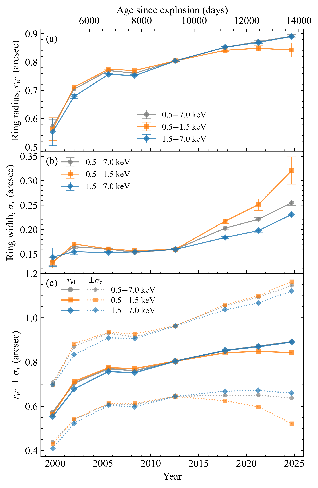<br />
图注：Temporal evolution of the torus radius ($r_{\mathrm{ell}}$) and width ($\sigma_r$) derived from RL-deconvolved images. Results are shown for the 0.5--7.0~keV (gray), 0.5--1.5~keV (orange), and 1.5--7.0~keV (blue) bands. (a) Torus radius $r_{\mathrm{ell}}$. (b) Torus width $\sigma_r$. (c) Combined representation showing $r_{\mathrm{ell}} \pm \sigma_r$. The plotted ages correspond to the exposure-time-weighted mean ages of the observations in each merged dataset, as listed in Table~\(\ref{tab:merge_obs_info}.\)<br />
对应解读：对应“半径随时间演化图”“宽度随时间演化图”以及“半径—宽度联合/内延伸判断”的核心定量结果。<br />
入选理由：该图同时给出软、硬能段 torus 半径 \(r_ell\)、宽度 \(sigma_r\) 及 \(r_ell\)±\(sigma_r\) 的时间演化，正好支撑日报中关于2010年代后软 X 射线宽度系统大于硬 X 射线、且不是简单整体外扩而是向内延伸的关键解读。相比单纯图像，它是本文能量依赖形态结论的最直接定量证据。<br />
来源与置信度：\(arxiv_source\)；high；\(arxiv_source\) / main.tex:figure[3]</p>
<p><strong>Fig02</strong><br />
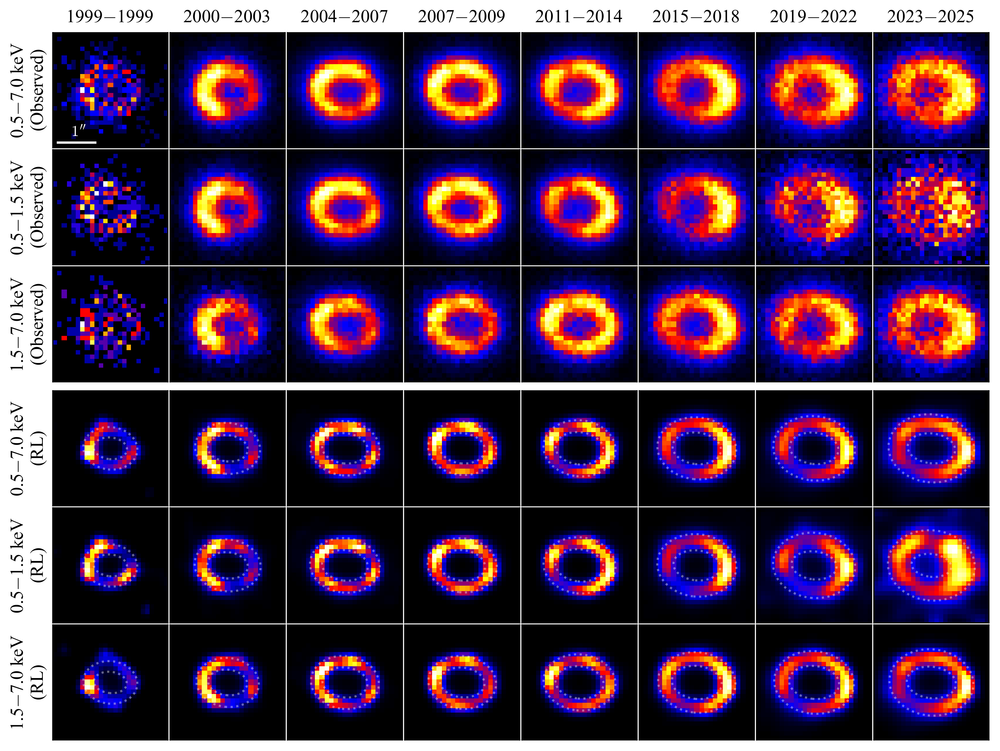<br />
图注：The 4 yr combined X-ray images showing the temporal evolution of the torus structure. The top three rows present the observed images reconstructed with EDSER (1/4 pixel) in the 0.5--7.0, 0.5--1.5, and 1.5--7.0~keV bands. The bottom rows show the corresponding images after RL deconvolution. Each column corresponds to a 4 yr epoch (see Table~\ref{tab:merge_obs_info}). The color scale in each panel is linearly scaled between zero and the maximum value. The dotted rings in the RL images indicate the torus boundaries ($\pm \sigma_r$) derived from the fitted torus model.<br />
对应解读：对应“多历元软、硬 X 射线图像序列”和关键图表导读中的图像演化部分。<br />
入选理由：该图展示4年合并的多历元 Chandra 图像，分0.5--7.0、0.5--1.5和1.5--7.0 keV，并同时给出观测图像与RL反卷积图像，底部还标出由torus模型得到的边界。它直接提供早期软硬形态相近、晚期软硬结构分离的视觉证据，是理解后续半径和宽度拟合结果的基础。<br />
来源与置信度：\(arxiv_source\)；high；\(arxiv_source\) / main.tex:figure[2]</p>
<p><strong>Fig09</strong><br />
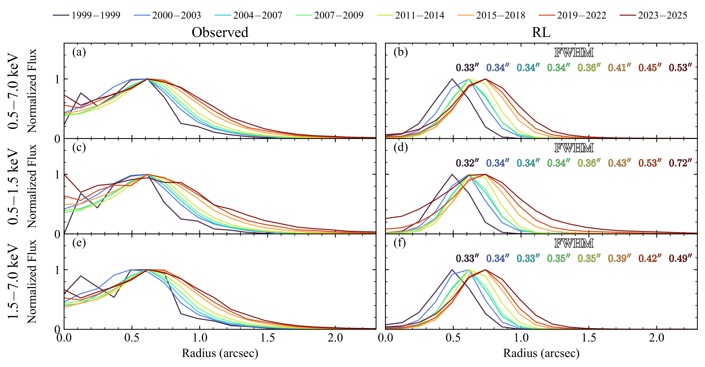<br />
图注：Radial profiles of the 4 yr binned X-ray images shown in Figure~\(\ref{sn1987a_torus_image_obs_rl_iter_30_bin_0.25_yearbin_4}.\) The left panels show profiles from the EDSER-reconstructed (1/4 pixel) images, while the right panels show those from RL-deconvolved images. From top to bottom, the panels correspond to the 0.5--7.0, 0.5--1.5, and 1.5--7.0~keV bands. All profiles are normalized to their respective peak values and are color-coded by epoch, with the FWHM values derived from the RL profiles indicated in the corresponding colors.<br />
对应解读：对应“径向亮度剖面与环面模型拟合图”中关于软能段晚期剖面变宽、内侧增强的诊断。<br />
入选理由：虽然图注未说明包含模型线和残差，但它给出了4年分箱图像的径向剖面，并区分EDSER重建与RL反卷积、软硬能段及各历元，还标出FWHM。它比单张图像更适合检查软能段剖面是否随时间变宽，是支撑‘宽化/内延伸’解释的重要剖面证据。<br />
来源与置信度：\(arxiv_source\)；high；\(arxiv_source\) / main.tex:figure[9]</p>
<p><strong>Fig04</strong><br />
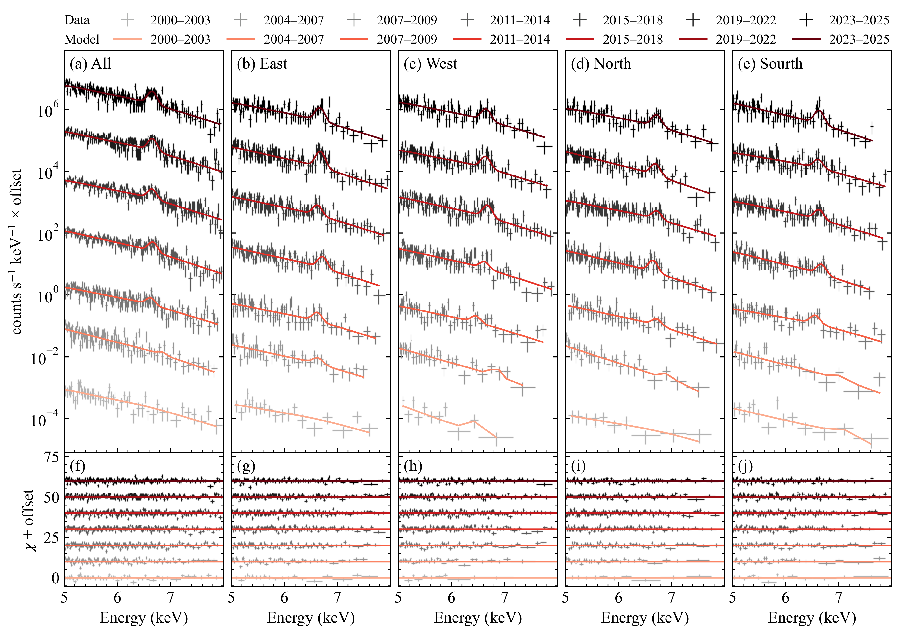<br />
图注：Spatially resolved X-ray spectra in the 5.0--8.0 keV band. Panels from left to right correspond to All, East, West, North, and South. The top panels (a--e) show the spectra and best-fit models obtained with \(\texttt{tbabs*(powerlaw+gauss)},\) while the bottom panels (f--j) show the corresponding residuals. For clarity, spectra from different epochs are vertically offset in the top panels, and the residuals are offset by constant values in the bottom panels. The spectra are ordered by age from bottom (2000--2003) to top (2023--2025). The spectra shown in the top panels are not background subtracted.<br />
对应解读：对应“Fe K 能段光谱残差图”和“东西或方位分区光谱图”。<br />
入选理由：该图展示5.0--8.0 keV空间分区光谱，包含All、East、West、North、South区域，并给出tbabs*(powerlaw+gauss)最佳拟合及残差。它直接对应日报要求检查Fe K区域正残差、加入高斯线后的拟合质量，以及东侧增强是否真实而非连续谱差异造成。<br />
来源与置信度：\(arxiv_source\)；high；\(arxiv_source\) / main.tex:figure[4]</p>
<p><strong>Fig05</strong><br />
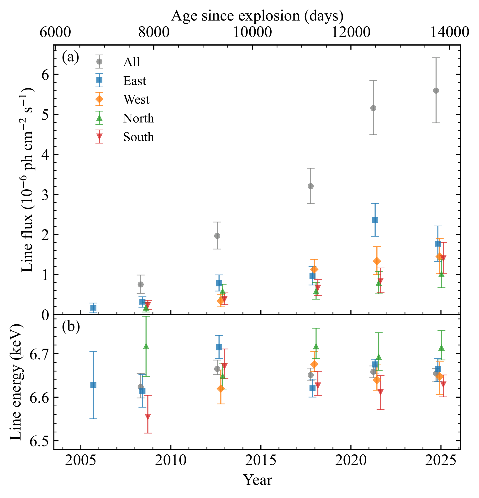<br />
图注：Fit results in the 5.0--8.0~keV band obtained with the \(\texttt{tbabs*(powerlaw + gaussian)}\) model. Fits for which the error estimation did not converge are excluded. (a) Line flux. (b) Line centroid energy. The reference ages correspond to the exposure-time-weighted mean ages listed in Table~\(\ref{tab:merge_obs_info}\); the All region points are shown at these ages, while those for individual regions are slightly shifted along the time axis (by offsets of 0.1--0.4~yr) for clarity.<br />
对应解读：对应“Fe K 通量随时间图”以及空间分辨Fe K增强的定量比较。<br />
入选理由：该图给出5.0--8.0 keV拟合得到的Fe K线通量和线心能量随时间变化，并包含总区域及各空间区域结果。它是验证Chandra Fe K早期检测、长期演化趋势以及东侧线通量增强的主要定量图，比单个谱图更便于比较时间演化和区域差异。<br />
来源与置信度：\(arxiv_source\)；high；\(arxiv_source\) / main.tex:figure[5]</p>
<p><strong>Fig08</strong><br />
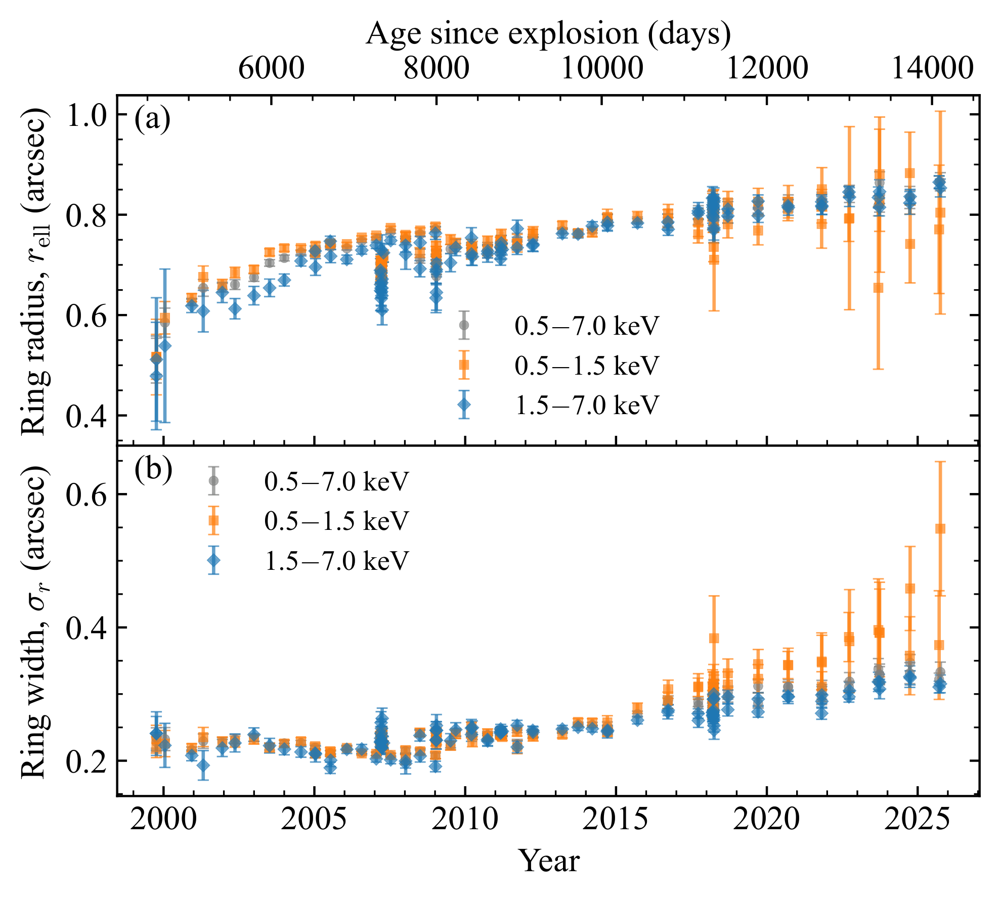<br />
图注：Temporal evolution of the torus radius ($r_{\mathrm{ell}}$) and width ($\sigma_r$) derived from RL-deconvolved images for individual observations. Results are shown for the 0.5--7.0 (gray), 0.5--1.5 (orange), and 1.5--7.0~keV (blue) bands. (a) Torus radius $r_{\mathrm{ell}}$. (b) Torus width $\sigma_r$.<br />
对应解读：对应模型拟合段落中关于单历元半径、宽度测量及观测模式/统计波动系统误差检查。<br />
入选理由：该图给出单个观测而非4年合并数据的r_ell和sigma_r时间演化，可用于检查Fig03中软硬宽度分离是否由合并分箱或少数历元驱动。它对评估结论稳健性和系统误差很有价值，但科学主结论的展示不如Fig03集中。<br />
来源与置信度：\(arxiv_source\)；high；\(arxiv_source\) / main.tex:figure[8]</p>
<h4 id="_100">强相关工作</h4>
<p>这篇工作属于 SN 1987A 同一源的长期 X 射线监测谱系。可把它与 Chandra 早期成像论文、XMM-Newton 长期光谱和 Fe K 监测、以及 HST/ALMA/JWST 对环和喷出物的多波段研究一起读。检索关键词建议使用“SN 1987A Chandra X-ray imaging equatorial ring”、“SN 1987A Fe K XMM-Newton”、“SN 1987A spatially resolved spectroscopy Chandra”、“SN 1987A reverse shock high latitude emission”。</p>
<p>在理论上，它与 Chevalier、Fransson 等关于超新星与星周物质相互作用的框架直接相关，也与三维流体模拟和非平衡电离辐射转移模型相连。一个潜在张力是：软 X 射线内延伸究竟来自内部喷出物/反射激波，还是来自赤道环几何和高纬度星周物质的投影？这需要与三维模拟、速度分辨线谱和多波段成像共同检验。检索关键词可用“supernova remnant 1987A hydrodynamic simulation”、“SN 1987A non-equilibrium ionization”、“SN 1987A reflected shock”、“SN 1987A ejecta X-ray emission”。</p>
<p><strong>同一事件 / 同类源线索</strong>：</p>
<ul>
<li><a href="https://arxiv.org/abs/2607.06302">https://arxiv.org/abs/2607.06302</a></li>
<li><a href="https://arxiv.org/pdf/2607.06302">https://arxiv.org/pdf/2607.06302</a></li>
<li><a href="https://simbad.cds.unistra.fr/simbad/sim-id?Ident=SN%201987A">https://simbad.cds.unistra.fr/simbad/sim-id?Ident=SN%201987A</a></li>
<li><a href="https://ui.adsabs.harvard.edu/abs/2016ARA%26A..54...19M/abstract">https://ui.adsabs.harvard.edu/abs/2016ARA%26A..54...19M/abstract</a></li>
</ul>
<p><strong>相似工作</strong>：</p>
<p>（未提供）</p>
<p><strong>基础理论 / 方法工作</strong>：</p>
<ul>
<li><a href="https://ui.adsabs.harvard.edu/abs/1994ApJ...420..268C/abstract">https://ui.adsabs.harvard.edu/abs/1994ApJ...420..268C/abstract</a></li>
<li><a href="https://ui.adsabs.harvard.edu/abs/2016ARA%26A..54...19M/abstract">https://ui.adsabs.harvard.edu/abs/2016ARA%26A..54...19M/abstract</a></li>
</ul>
<p><strong>相反观点 / 张力线索</strong>：</p>
<p>（未提供）</p>
</details>
<h3 id="10-analyzing-cosmic-ray-spectral-features-a-numerical-investigation">10. Analyzing Cosmic Ray Spectral Features: A Numerical Investigation</h3>
<ul>
<li>来源：arXiv / astro-ph.HE</li>
<li>链接：https://arxiv.org/abs/2607.05606v1</li>
<li>作者：Yuca C. Chen, Zachary M. Dorris, Eun-Suk Seo, Vladimir S. Ptuskin</li>
<li>评分：novelty 7/10，importance 7/10，relevance 9/10，final 8.70/10</li>
<li>推荐理由：Directly relevant cosmic-ray propagation study using GALPROP to interpret spectral hardening, softening, and positron excess; not conceptually revolutionary but useful for cosmic-ray phenomenology.</li>
</ul>
<p><strong>中文题目</strong>：宇宙线谱结构的数值分析：用 GALPROP 检验硬化、软化和正电子超额的可能起源</p>
<p><strong>做了什么</strong>：这篇文章用 \(\mathrm{GALPROP}\ v57\) 和 \(\mathrm{MINUIT2}\) 参数优化，系统比较了宇宙线近年观测到的几类谱结构：约 \(200\ \mathrm{GV}\) 处的原初核与次级核谱硬化、质子在约 \(10\ \mathrm{TV}\) 处的软化、氦在几十 \(\mathrm{TV}\) 处的软化，以及 \(25\ \mathrm{GeV}\) 以上的正电子超额。作者以包含再加速和对流的扩散传播模型为基线，分别测试扩散系数断裂、源注入谱断裂、两者组合，以及额外正电子源的方案。核心意义在于：这些谱结构不是孤立的拟合小波动，而是会同时影响 \(p\)、\(\mathrm{He}\)、重核、\(\mathrm{B}/\mathrm{C}\)、正电子和全粒子谱；因此必须在统一传播框架内检验。</p>
<p><strong>为什么重要</strong>：宇宙线谱硬化和软化直接关系到两个基本问题：银河系内宇宙线源的注入谱到底是不是简单幂律，以及传播扩散系数是否随刚度呈单一幂律。若 \(200\ \mathrm{GV}\) 硬化主要来自传播，次级核也应出现相干硬化；若主要来自源注入，原初核更明显而次级/原初比值的响应不同。质子和氦在 \(\mathrm{TV}\) 到几十 \(\mathrm{TV}\) 的软化又把问题推向局域源、最高能端注入、扩散区结构或实验交叉定标。本文重要之处是把这些观测特征放进同一个数值传播模型，而不是逐个谱线单独拟合。</p>
<p><strong>理论 / 观测 / 仪器方法价值</strong>：对理论而言，本文给出了一套可操作的模型比较框架，用来区分 \(D(R)\) 的断裂和源注入谱 \(q(R)\) 的断裂。对观测而言，它把空间实验、气球实验和全粒子谱数据编译在一起，提醒读者不同能区、不同探测器之间的系统差异会改变对断裂位置和断裂幅度的判断。对方法而言，\(\mathrm{GALPROP}\ v57\) 的优化模块与 \(\mathrm{MINUIT2}\) 联用，使传播参数、注入参数和额外源参数能够在统一 \(\chi^2\) 或似然意义下比较。</p>
<p><strong>为什么应该关注</strong>：如果你关心 \(\mathrm{AMS}\text{-}02\)、\(\mathrm{CALET}\)、\(\mathrm{DAMPE}\)、\(\mathrm{CREAM}\)、\(\mathrm{ATIC}\) 等实验看到的谱结构是否指向新物理或新天体源，这篇文章值得看。它的结论会影响我们如何解释 \(\mathrm{B}/\mathrm{C}\) 的硬化、正电子超额是否需要脉冲星或暗物质类额外源、以及 \(\mathrm{TeV}\) 区原初核软化是否只是注入谱断裂。即使你不同意其具体模型，文中的多种情景比较也能作为读懂宇宙线谱结构退化关系的实用参照。</p>
<details class="paper-detail">
<summary>展开详细解读：文章讲解、背景、理论、重点章节、图表与相关工作</summary>
<h4 id="_101">文章详细讲解</h4>
<p>科学问题：近十多年宇宙线实验已经把“单一幂律”的简单图像打碎。\(p\)、\(\mathrm{He}\) 和更重原初核在约 \(R\sim 200\ \mathrm{GV}\) 处出现谱硬化，\(\mathrm{B}/\mathrm{C}\) 等次级/原初比值也显示相近能区的结构；与此同时，质子谱在约 \(10\ \mathrm{TV}\) 附近又有软化迹象，氦谱在更高刚度、约几十 \(\mathrm{TV}\) 附近软化。正电子分量在 \(E\gtrsim 25\ \mathrm{GeV}\) 的上升也不能由标准次级产生自然解释。本文要回答的是：这些特征能否由统一的银河传播模型解释，哪些需要源项变化，哪些需要传播系数变化，哪些必须引入额外源。</p>
<p>作者怎么做：论文采用 \(\mathrm{GALPROP}\ v57\)，以包含扩散、再加速和对流的模型为基线。\(\mathrm{GALPROP}\) 求解的是宇宙线在银河磁场、气体、辐射场和扩散晕中的输运方程，并输出各元素、同位素、电子/正电子及相关比值。作者使用 \(\mathrm{MINUIT2}\) 做数值最小化，调节扩散系数、注入谱指数、断裂刚度、再加速和对流等参数，使模型与多实验编译数据匹配。针对 \(200\ \mathrm{GV}\) 硬化，作者比较了三种情景：只在扩散系数中加入断裂、只在注入谱中加入断裂、同时加入两类断裂。针对 \(\mathrm{TV}\) 区软化，则在质子和氦注入谱中加入额外高刚度断裂；针对正电子超额，引入额外正电子源项。</p>
<p>关键结果：从摘要可知，论文给出了元素谱、同位素或元素比值、全粒子谱与观测编译数据的对比。最值得关注的是不同断裂方案对原初谱和次级谱的联动影响。若 \(R\sim 200\ \mathrm{GV}\) 的硬化来自扩散系数 \(D(R)\) 斜率变化，那么所有核种传播后谱都会响应，且 \(\mathrm{B}/\mathrm{C}\) 等比值也应出现可辨别的斜率变化；若硬化来自注入谱，原初核直接变硬，而次级核的变化主要通过父核谱传递，\(\mathrm{B}/\mathrm{C}\) 的形状约束更强。本文还把 \(10\ \mathrm{TV}\) 质子软化和几十 \(\mathrm{TV}\) 氦软化纳入同一框架，说明低能硬化与高能软化不能用一个简单断裂参数全部吸收。</p>
<p>局限和下一步：这类全局数值拟合的主要局限是模型退化。扩散斜率 \(\delta\)、注入谱指数、太阳调制势、再加速速度、对流梯度和气体分布都会影响谱形。高刚度端还受不同实验能标、接受度、核反应截面和样本统计限制影响。正电子超额的额外源项若只作为经验谱加入，并不能区分脉冲星、脉冲星风云、微类星体或暗物质湮灭/衰变。下一步应结合更高精度的 \(\mathrm{B}/\mathrm{C}\)、\(\mathrm{Li}/\mathrm{C}\)、\(\mathrm{Be}/\mathrm{C}\)、各向异性、反质子、电子总谱和单源时间演化模型，检验本文偏好的断裂组合是否仍然成立。</p>
<h4 id="_102">关键结果是怎么做出来的</h4>
<p>本文最核心的证据链是：先建立一个能同时描述多核种与正负轻子的基线传播模型，再逐步加入谱断裂或额外源，比较每一步对观测残差的改善。样本不是单一实验的一条谱，而是跨空间实验和气球实验的编译数据，包括原初核 \(p\)、\(\mathrm{He}\) 以及其他元素谱，次级产生相关的比值如 \(\mathrm{B}/\mathrm{C}\)，正电子谱或正电子分数，以及全粒子谱。这样的样本选择使结论更难被单一数据集的局部系统误差支配，但也引入了不同实验能标和归一化不一致的问题。</p>
<p>对 \(R\sim 200\ \mathrm{GV}\) 硬化，论文比较三组模型：扩散系数断裂、注入谱断裂、扩散与注入组合断裂。判断优劣的关键不是某一条 \(p\) 谱能否拟合，而是同一组参数是否同时解释原初核硬化和次级相关量的硬化。若图中 \(\mathrm{B}/\mathrm{C}\) 或其他次级/原初比值在 \(100\text{--}500\ \mathrm{GV}\) 的残差仍系统偏离，就说明硬化机制设置不充分。读者应特别注意作者是否展示了不同情景的 \(\chi^2\)、分数据集贡献或残差分布。</p>
<p>对高刚度软化，证据链更依赖 \(\mathrm{TeV}\) 到几十 \(\mathrm{TeV}\) 的直接探测数据。作者在质子和氦注入谱中加入额外高刚度断裂，用来描述质子约 \(10\ \mathrm{TV}\) 软化和氦在更高刚度软化。这里的统计意义通常会受能量刻度、谱展开、接受度和不同实验归一化影响；因此若论文给出参数误差，读者应关注断裂刚度 \(R_b\)、断裂前后指数差 \(\Delta\nu\) 和不同实验组合下的稳定性，而不仅是模型曲线穿过数据点。</p>
<p>正电子超额部分的关键结果在于标准次级正电子无法自然产生 \(E\gtrsim 25\ \mathrm{GeV}\) 的上升趋势，论文因此加入额外正电子源。该结论通常由正电子通量、电子加正电子总谱、正电子分数三者共同约束。若只拟合正电子分数，电子谱的系统误差会混入；若同时拟合正电子绝对通量和总轻子谱，对额外源的谱指数、截止能量和归一化约束更可靠。读者应检查文中是否给出额外源开启前后的残差对比。</p>
<p>稳健性方面，本文的主要系统误差来自传播模型结构，而不只是统计误差。不同 halo 半高 \(z_h\)、扩散归一化 \(D_0\)、扩散斜率 \(\delta\)、Alfvén 速度 \(v_A\)、对流速度梯度 \(dV_c/dz\)、太阳调制势 \(\phi\) 和核反应截面都会改变最佳拟合。若论文在表格中列出多情景参数，读者应把断裂位置和指数变化与这些传播参数一起看：一个看似显著的注入断裂可能部分补偿了扩散模型或截面库的不完备。</p>
<details class="paper-subdetail">
<summary>展开背景、理论、公式、模型、章节和图表导读</summary>
<h4 id="_103">背景知识</h4>
<p>宇宙线核成分在 \(\mathrm{GeV}\) 到 \(\mathrm{PeV}\) 能区主要来自银河系源，通常认为超新星遗迹、脉冲星风云和其他激波系统提供加速。经典图像中，源注入谱近似为刚度幂律，银河传播扩散系数也近似为刚度幂律，于是地球附近观测到的谱应接近另一条幂律。早期观测精度有限时，这个图像足够有效。</p>
<p>问题在 \(\mathrm{PAMELA}\)、\(\mathrm{AMS}\text{-}02\)、\(\mathrm{CREAM}\)、\(\mathrm{CALET}\)、\(\mathrm{DAMPE}\) 等实验之后变得复杂。\(p\) 和 \(\mathrm{He}\) 在几百 \(\mathrm{GV}\) 处出现硬化，且 \(p\) 与 \(\mathrm{He}\) 的谱指数并不完全相同；\(\mathrm{B}/\mathrm{C}\) 等传播诊断量也不再完美符合单幂律扩散。到 \(\mathrm{TeV}\) 以上，一些实验还报告了软化或弯折，使“单断裂”解释显得过于简单。</p>
<p>正电子超额是另一个历史问题。标准传播模型中，高能正电子主要是宇宙线核与星际介质碰撞产生的次级粒子，随能量升高应相对下降。但观测显示正电子分数在几十 \(\mathrm{GeV}\) 以上上升，推动了脉冲星、局域源、暗物质和传播效应等解释。本文没有只讨论正电子，而是把它纳入同一个多成分传播拟合，这一点在方法上更接近真实问题。</p>
<p>现在值得重新看，是因为观测精度和能区覆盖都已足以区分一些早期无法区分的模型。比如，扩散系数断裂不仅改变 \(p\) 谱，也会改变次级/原初比值；源注入断裂对不同元素可以有不同刚度和幅度；高能软化可能是源端最大能量分布，也可能是局域源贡献消失，或实验交叉定标问题。多数据集全局拟合可以把这些可能性压缩到更具体的参数空间。</p>
<p>常见误区有三类。第一，把所有谱弯折都称为“源变化”，忽略传播系数也能制造相似谱形。第二，用单一 \(p\) 或 \(\mathrm{He}\) 谱拟合判断物理机制，却不检查 \(\mathrm{B}/\mathrm{C}\)、\(\bar p/p\)、正负轻子和各向异性。第三，把正电子超额直接等同于暗物质信号；实际上脉冲星族群和局域天体源在天体物理上更自然，暗物质解释还要同时满足 \(\gamma\) 射线、微波背景和反质子约束。</p>
<h4 id="_104">基础理论 / 方法脉络</h4>
<p>基础物理图像是：宇宙线由源注入到银河盘和近邻环境中，在湍动磁场中随机游走，穿过星际气体时产生次级核和次级轻子，并在传播中经历能量损失、再加速、对流逃逸和放射性衰变。对稳定核而言，高刚度下最主要的竞争是源注入、空间扩散和破碎反应；对电子和正电子而言，辐射损失和局域源时间尺度更关键。</p>
<p>刚度 \(R=pc/Ze\) 是宇宙线传播中比动能更自然的变量，因为带电粒子在磁场中的回旋半径由动量与电荷比决定。扩散系数通常写成 \(D(R)=D_0\beta (R/R_0)^\delta\)，其中 \(\delta\) 反映磁湍动谱。若在 \(R\sim 200\ \mathrm{GV}\) 处 \(\delta\) 发生变化，所有核种的传播时间都会随刚度改变，从而在原初和次级谱中留下相关结构。</p>
<p>源注入谱则常写作分段幂律 \(q_i(R)\propto R^{-\nu_i}\)。如果硬化来自源注入谱变硬，则原初核的谱会直接响应；次级核如 \(\mathrm{B}\) 还依赖父核 \(\mathrm{C}\)、\(\mathrm{O}\) 的谱和破碎截面。于是 \(\mathrm{B}/\mathrm{C}\) 是区分传播断裂与注入断裂的关键，因为它在很大程度上消去了源归一化，却保留传播 grammage 的信息。</p>
<p>再加速和对流主要影响低到中等能量。再加速由磁流体波的随机散射提供动量扩散，常用 Alfvén 速度 \(v_A\) 参数化；对流表示银河风把粒子带离盘面。太阳调制则影响近地 \(\mathrm{GeV}\) 能区谱形。因此在拟合 \(200\ \mathrm{GV}\) 以上硬化时，低能过程不应主导结论，但它们会通过全局拟合改变最佳参数和误差。</p>
<p>本文的模型假设是把银河传播作为连续介质输运问题处理，用 \(\mathrm{GALPROP}\) 数值解稳态方程，再用 \(\mathrm{MINUIT2}\) 搜索参数空间。常见退化包括：\(D_0\) 与 halo 高度 \(z_h\) 的退化，\(\delta\) 与注入谱指数 \(\nu\) 的退化，太阳调制势 \(\phi\) 与低能注入断裂的退化，核反应截面误差与次级/原初比值的退化。理解这些退化，是读懂本文结果比单看最佳拟合曲线更重要的部分。</p>
<h4 id="_105">公式与推导</h4>
<p>第一步从刚度定义开始。带电粒子在磁场中的传播由刚度控制，定义为</p>
<div class="math-display">\[R=\frac{pc}{Ze},\]</div>
<p>其中 \(p\) 是动量，\(Z\) 是电荷数，\(e\) 是元电荷。相同 \(R\) 的不同核种在磁湍动中的散射性质相近，这是把多元素谱放在同一传播框架中的原因。</p>
<p>第二步写出稳态输运方程的核心形式。对粒子种类 \(i\) 的相空间密度 \(\psi_i(\mathbf{x},p)\)，可近似写为</p>
<div class="math-display">\[0=q_i+\nabla\cdot(D_{xx}\nabla\psi_i-\mathbf{V}_c\psi_i)+\frac{\partial}{\partial p}\left[p^2D_{pp}\frac{\partial}{\partial p}\frac{\psi_i}{p^2}\right]-\frac{\partial}{\partial p}\left(\dot p\psi_i-\frac{p}{3}(\nabla\cdot\mathbf{V}_c)\psi_i\right)-\frac{\psi_i}{\tau_{f,i}}-\frac{\psi_i}{\tau_{r,i}}.\]</div>
<p>这里 \(q_i\) 是源项，\(D_{xx}\) 是空间扩散系数，\(\mathbf{V}_c\) 是对流速度，\(D_{pp}\) 是动量扩散系数，\(\dot p\) 是能量损失，\(\tau_{f,i}\) 和 \(\tau_{r,i}\) 分别是破碎和放射性衰变时间。</p>
<p>第三步给出无断裂扩散的基线形式：</p>
<div class="math-display">\[D_{xx}(R)=D_0\,\beta\left(\frac{R}{R_0}\right)^\delta,\]</div>
<p>其中 \(D_0\) 是参考刚度 \(R_0\) 处的扩散归一化，\(\beta=v/c\)，\(\delta\) 是扩散斜率。若传播主导，高能稳定原初核的观测谱指数近似为 \(\gamma\simeq \nu+\delta\)。</p>
<p>第四步把扩散断裂写成平滑分段形式：</p>
<div class="math-display">\[D_{xx}(R)=D_0\,\beta\left(\frac{R}{R_0}\right)^{\delta_1}\left[1+\left(\frac{R}{R_D}\right)^{1/s_D}\right]^{s_D(\delta_2-\delta_1)}.\]</div>
<p>这里 \(R_D\) 是扩散断裂刚度，\(\delta_1\) 和 \(\delta_2\) 是断裂前后斜率，\(s_D\) 控制过渡平滑度。若 \(\delta_2<\delta_1\)，高刚度扩散斜率变小，传播后谱会硬化。</p>
<p>第五步写源注入谱断裂：</p>
<div class="math-display">\[q_i(R)=q_{0,i}\left(\frac{R}{R_{q,i}}\right)^{-\nu_{1,i}}\left[1+\left(\frac{R}{R_{q,i}}\right)^{1/s_{q,i}}\right]^{-s_{q,i}(\nu_{2,i}-\nu_{1,i})}.\]</div>
<p>其中 \(q_{0,i}\) 是元素 \(i\) 的源归一化，\(R_{q,i}\) 是注入断裂刚度，\(\nu_{1,i}\) 和 \(\nu_{2,i}\) 是断裂前后注入指数。本文对 \(200\ \mathrm{GV}\) 硬化和 \(\mathrm{TV}\) 软化分别测试这类断裂。</p>
<p>第六步用简化漏箱极限说明 \(\mathrm{B}/\mathrm{C}\) 的传播诊断意义。若 \(\mathrm{B}\) 主要由 \(\mathrm{C}\) 和 \(\mathrm{O}\) 碎裂产生，则</p>
<div class="math-display">\[\frac{N_B}{N_C}\approx \frac{X(R)\,\sigma_{C\rightarrow B}}{m_p},\qquad X(R)\propto R^{-\delta},\]</div>
<p>其中 \(X(R)\) 是穿越物质量，\(\sigma_{C\rightarrow B}\) 是产生 \(\mathrm{B}\) 的有效截面，\(m_p\) 是质子质量。因此 \(\mathrm{B}/\mathrm{C}\) 的斜率直接约束 \(\delta\) 或其断裂。</p>
<p>第七步描述正电子额外源常用经验形式：</p>
<div class="math-display">\[q_{e^+}^{\rm extra}(R)=Q_{e^+}\left(\frac{R}{R_*}\right)^{-\alpha_{e^+}}\exp\left(-\frac{R}{R_{\rm cut}}
\right),\]</div>
<p>其中 \(Q_{e^+}\) 是归一化，\(\alpha_{e^+}\) 是源谱指数，\(R_{\rm cut}\) 是截止刚度。这个项可代表脉冲星族群或其他额外正电子源，但仅凭经验谱不能唯一识别源类别。</p>
<p>第八步把模型输出与观测通量联系起来：</p>
<div class="math-display">\[\Phi_i(T)=\frac{v_i}{4\pi}\,\psi_i(T),\]</div>
<p>其中 \(T\) 是动能或每核子动能，\(v_i\) 是粒子速度。实验给出的通常是 \(\Phi_i\) 或比值，\(\mathrm{GALPROP}\) 输出的 \(\psi_i\) 需经过这一关系和太阳调制后比较。</p>
<p>第九步给出常见的力场近似太阳调制：</p>
<div class="math-display">\[\Phi_{\oplus}(T)=\frac{T(T+2m)}{(T+|Z|e\phi)(T+|Z|e\phi+2m)}\,\Phi_{\rm LIS}(T+|Z|e\phi),\]</div>
<p>其中 \(\Phi_{\oplus}\) 是近地通量，\(\Phi_{\rm LIS}\) 是局域星际谱，\(m\) 是粒子质量，\(\phi\) 是调制势。该式主要影响低能数据，但若低能点权重很大，会间接影响全局最佳拟合。</p>
<p>第十步是拟合统计量。若把不同实验点视为近似高斯误差，最小化量可写为</p>
<div class="math-display">\[\chi^2(\boldsymbol{\theta})=\sum_k\frac{\left[y_k^{\rm obs}-y_k^{\rm model}(\boldsymbol{\theta})\right]^2}{\sigma_{k,\rm stat}^2+\sigma_{k,\rm sys}^2},\]</div>
<p>其中 \(\boldsymbol{\theta}\) 是传播、注入和额外源参数，\(y_k\) 是第 \(k\) 个观测通量或比值，\(\sigma_{k,\rm stat}\) 与 \(\sigma_{k,\rm sys}\) 是统计和系统误差。模型比较可用 \(\Delta\chi^2\)、残差图和参数稳定性判断。</p>
<h4 id="_106">模型拟合 / 应用方法</h4>
<p>本文的拟合对象是多种宇宙线通量与比值，而不是单一谱。核心参数包括扩散归一化 \(D_0\)、扩散斜率 \(\delta\)、扩散断裂刚度 \(R_D\)、断裂前后斜率 \(\delta_1\) 与 \(\delta_2\)、halo 尺度 \(z_h\)、再加速参数 \(v_A\)、对流速度或梯度、各元素注入谱指数 \(\nu_i\)、注入断裂刚度 \(R_{q,i}\)、太阳调制势 \(\phi\)，以及额外正电子源的归一化、谱指数和截止刚度。</p>
<p>拟合统计上，\(\mathrm{MINUIT2}\) 通常用于寻找 \(\chi^2\) 或负对数似然的最小值，并估计参数误差。对这类编译数据，形式上的统计误差并不等同于真实不确定度，因为不同实验系统误差可能相关，能标误差可能导致横向偏移，而不是简单的纵向误差条。因此读者应关注论文是否对不同数据集使用独立归一化、是否排除明显张力点、是否报告各数据集对总 \(\chi^2\) 的贡献。</p>
<p>参数退化是解读结论的重点。高能原初谱的指数近似由 \(\nu+\delta\) 决定，因此只看 \(p\) 和 \(\mathrm{He}\) 通量很难分清源注入变硬还是扩散变硬。\(\mathrm{B}/\mathrm{C}\) 能打破部分退化，但它又依赖破碎截面和星际气体分布。低能数据中，\(v_A\)、对流和 \(\phi\) 会相互补偿；轻子数据中，能量损失、局域源年龄和距离会与源谱截止退化。</p>
<p>残差诊断比最佳拟合曲线更有价值。一个模型如果只是在 \(R\sim 200\ \mathrm{GV}\) 附近穿过 \(p\) 谱数据，却在 \(\mathrm{B}/\mathrm{C}\) 中留下同号残差，说明传播机制不自洽。若高刚度软化模型对 \(\mathrm{CREAM}\)、\(\mathrm{CALET}\)、\(\mathrm{DAMPE}\) 或其他数据集分别需要不同归一化，说明断裂位置可能受实验系统误差影响。正电子超额模型则应同时检查正电子通量、负电子通量和正电子分数的残差。</p>
<p>实际应用中，本文这类拟合可作为构建银河宇宙线背景模型的基线。它能为暗物质间接探测中的反质子、正电子和 \(\gamma\) 射线背景提供传播参数，也能为 \(\mathrm{TeV}\) 区各向异性和局域源研究提供输入。但模型也可能失败：如果真实传播是空间非均匀的、局域泡结构显著、源分布离散且时间依赖，那么轴对称稳态 \(\mathrm{GALPROP}\) 模型中的断裂参数可能只是有效参数，而不是唯一物理机制。</p>
<h4 id="_107">重点章节 / 结果段落怎么读</h4>
<p>数据/样本部分应首先看作者汇总了哪些实验数据、覆盖哪些刚度范围、是否区分空间实验和气球实验、是否包含全粒子谱。读者应记录每类数据在拟合中的作用：原初核约束 \(\nu+\delta\)，次级/原初比值约束 \(\delta\)，正电子约束额外源，高能全粒子谱检验与直接探测的衔接。</p>
<p>模型与参数部分应重点看基线传播模型。包含扩散、再加速和对流意味着低能谱形有较多自由度；读者需要确认扩散系数形式、halo 设置、太阳调制处理、核反应网络和注入谱分段方式。若论文列出参数表，应比较无断裂、扩散断裂、注入断裂和组合断裂的参数变化。</p>
<p>\(200\ \mathrm{GV}\) 硬化结果部分是全文关键。建议按三种情景逐一阅读：扩散断裂是否改善 \(\mathrm{B}/\mathrm{C}\)，注入断裂是否改善原初核，组合断裂是否显著降低残差。不要只看 \(p\) 或 \(\mathrm{He}\) 的视觉拟合，应看模型对多元素和比值的同步解释。</p>
<p>高刚度软化部分应关注质子和氦是否采用相同或不同的高刚度断裂。若断裂刚度不同，物理上可能暗示元素依赖注入、源族群混合或实验系统差异。读者应看作者如何把 \(10\ \mathrm{TV}\) 质子软化和几十 \(\mathrm{TV}\) 氦软化与全粒子谱连接起来。</p>
<p>正电子超额部分应看额外源项的形式、截止能量和归一化，并检查是否同时拟合正电子绝对通量与正电子分数。若只用经验额外源，讨论部分通常会说明它不能唯一指向暗物质或脉冲星；这部分的价值更多在于证明标准次级源项不足。</p>
<p>讨论和稳健性部分应看作者如何处理模型退化和系统误差。尤其要找 \(\chi^2\) 表、参数误差、数据集间张力讨论、核截面或太阳调制影响，以及对未来观测的可检验预言。</p>
<h4 id="_108">建议重点查看的图表</h4>
<ol>
<li>
<p>多核种原初谱图：重点看 \(p\)、\(\mathrm{He}\) 和更重核在 \(R\sim 200\ \mathrm{GV}\) 处是否同时硬化，以及模型线是否在不同实验数据间折中。</p>
</li>
<li>
<p>\(\mathrm{B}/\mathrm{C}\) 或其他次级/原初比值图：这是区分扩散断裂与注入断裂的核心诊断。应看 \(100\text{--}500\ \mathrm{GV}\) 区间的斜率、残差和误差条。</p>
</li>
<li>
<p>三种硬化情景的模型比较图或表：检查扩散断裂、注入断裂、组合断裂的 \(\chi^2\)、最佳参数和残差。组合模型若自由参数更多，应注意改善是否足以抵消复杂度增加。</p>
</li>
<li>
<p>高刚度 \(p\) 与 \(\mathrm{He}\) 谱图：重点看 \(10\ \mathrm{TV}\) 到几十 \(\mathrm{TV}\) 的软化位置、不同实验能标差异、断裂前后指数变化。</p>
</li>
<li>
<p>正电子通量或正电子分数图：看标准次级模型与加入额外源后的差别，尤其是 \(E\gtrsim 25\ \mathrm{GeV}\) 区间残差是否系统消失。</p>
</li>
<li>
<p>全粒子谱图：检查直接探测核谱外推到高能后是否与全粒子谱连续，以及高刚度软化是否影响膝区前的总谱形。</p>
</li>
<li>
<p>参数表或误差矩阵：看 \(D_0\)、\(\delta\)、\(v_A\)、\(R_D\)、\(R_q\)、\(\nu\) 的相关性；若没有协方差矩阵，至少比较不同模型中同一参数的漂移。</p>
</li>
<li>
<p>残差图：若论文提供，优先看残差而不是通量图。通量跨多个数量级时视觉上容易掩盖系统偏差。</p>
</li>
</ol>
<h4 id="_109">关键图表逐图导读</h4>
<p>图 1：若为编译数据或基线拟合图，横轴通常是刚度 \(R\) 或动能 \(T\)，纵轴是通量乘以幂律因子，例如 \(R^{2.7}\Phi\)，用于放大谱结构。数据点代表不同实验，模型线代表基线或不同断裂情景。读图陷阱是不同实验的系统误差并不一定独立，曲线穿过数据云不等于物理机制唯一。</p>
<p>图 2：若展示 \(p\) 和 \(\mathrm{He}\) 谱硬化，应看 \(R\sim 200\ \mathrm{GV}\) 附近模型线斜率是否改变，以及 \(p\) 与 \(\mathrm{He}\) 是否需要不同注入指数。若纵轴乘以 \(R^{\gamma}\)，上翘表示相对所乘幂律变硬。读图陷阱是太阳调制只影响低能，不能解释几百 \(\mathrm{GV}\) 硬化。</p>
<p>图 3：若为 \(\mathrm{B}/\mathrm{C}\) 图，横轴为刚度或动能每核子，纵轴为比值。扩散断裂模型应在高刚度比值斜率上给出改善；注入断裂对比值的影响通常较弱或间接。读图时要看误差条和残差，而不是只看主图，因为 \(\mathrm{B}/\mathrm{C}\) 的绝对值还受破碎截面影响。</p>
<p>图 4：若比较三种硬化情景，通常会有多条模型线：扩散断裂、注入断裂、组合断裂。坐标可能是通量、比值或残差。关键是看哪种模型在多个观测量上同时改善，而不是在单一谱上最贴合。若组合模型明显更好，还要注意自由参数增加带来的模型选择惩罚。</p>
<p>图 5：若展示 \(\mathrm{TeV}\) 区质子和氦软化，横轴可能延伸到 \(10^5\ \mathrm{GV}\)。数据点来自直接探测实验，模型线含额外高刚度注入断裂。读图陷阱是高能端统计少、能标误差大；断裂位置的置信区间可能比视觉印象更宽。</p>
<p>图 6：若为正电子超额图，纵轴可能是 \(e^+\) 通量或 \(e^+/(e^-+e^+)\)。标准次级模型应低于高能数据，加入额外源后上升或变平。读图时应同时关注 \(e^-+e^+\) 总谱约束，否则额外正电子源可能通过改变电子背景被人为吸收。</p>
<p>图 7：若为全粒子谱图，横轴能量可能到 \(\mathrm{PeV}\)，纵轴是总通量乘幂律因子。它检验各元素谱加和是否与全粒子测量一致。读图陷阱是直接探测元素谱与空气簇射全粒子谱之间存在不同系统误差，不能把轻微不连续直接解释为新物理。</p>
</details>
<h4 id="_110">论文原图 / 可嵌入图片</h4>
<p><strong>Fig01</strong><br />
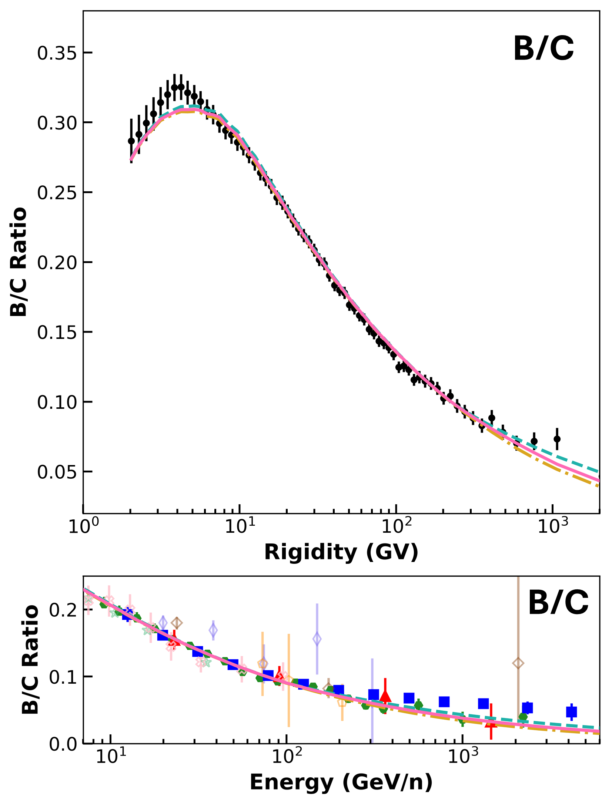<br />
图注：The results for the B/C ratio data for Cases 1 (dashed teal line), 2 (dashed-dotted gold line), and 3 (solid pink line) are compared with the compiled data. The results are modulated spectra with $\phi_{AMS}$ = $533 \pm 2$ MV. Direct measurement data legend: black filled dots -- AMS-02 \(\citep{AGUILAR20211},\) periwinkle open thin diamonds -- ATIC-2 \(\citep{2008ICRC....2....3P},\) green filled hexagons -- CALET \(\citep{PhysRevLett.129.251103},\) red filled triangles -- CREAM I \(\citep{2008APh....30..133A},\) beige open pentagons -- CRN \(\citep{1991ApJ...374..356M},\) blue filled squares -- DAMPE \(\citep{DAMPECOLLABORATION20222162},\) light green open stars -- HEAO3-C2 \(\citep{1990A&A...233...96E},\) pink open wide crosses -- PAMELA \(\citep{2014ApJ...791...93A},\) and brown open wide diamonds -- TRACER \(\citep{2011ApJ...742...14O}.\) ATIC-2, CRN, HEAO3-C2, PAMELA, and TRACER data are shown for additional comparison along with the data used for optimization.<br />
对应解读：对应“建议重点查看的图表”第2项B/C次级/原初比值、第3项三种硬化情景比较，以及“关键图表逐图导读”图3和模型拟合段落中的扩散断裂/注入断裂退化诊断。<br />
入选理由：B/C是区分扩散系数断裂与源注入断裂的核心观测量，图中同时给出Cases 1、2、3三种模型线并与AMS-02、CALET、DAMPE等数据比较，最能检验200 GV附近硬化是否来自传播机制而非单纯原初注入变化。<br />
来源与置信度：\(arxiv_source\)；high；\(arxiv_source\) / mainDoc.tex:figure[1]</p>
<p><strong>Fig02</strong><br />
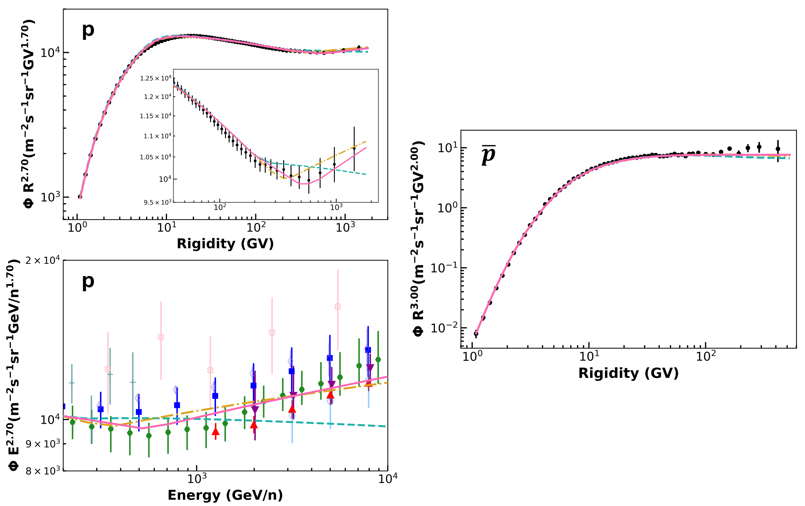<br />
图注：The results for the p data for Cases 1 (dashed teal line), 2 (dashed-dotted gold line), and 3 (solid pink line) are compared with the compiled data. A zoomed-in graph is shown above 40 GV in the top graph, also compared to the compiled data. The results are modulated spectra with $\phi_{AMS}$ = $533 \pm 2$ MV. The legend can be found in Figure \(\ref{BCRatioFig}\) with additional entries: teal thin pluses -- BESS \(\citep{2007APh....28..154S},\) purple downward-pointing filled triangles -- ISS-CREAM \(\citep{2022ApJ...940..107C},\) and light blue open circles -- NUCLEON-KLEM \(\citep{2019AdSpR..64.2546G}.\) The red upward-pointing filled triangles denote CREAM I+III \(\citep{2017ApJ...839....5Y}\) data in this figure. BESS data, along with ATIC-2 and PAMELA data, are shown for additional comparison along with the data used for optimization.<br />
对应解读：对应“建议重点查看的图表”第1项多核种原初谱中的质子谱、第3项三种硬化情景比较，以及“关键图表逐图导读”图2关于p谱硬化的解读。<br />
入选理由：质子谱是本文硬化与高能谱形讨论的主观测量之一，图中含Cases 1、2、3模型线，并有40 GV以上放大图，适合查看200 GV附近斜率变化以及不同实验数据之间模型折中。<br />
来源与置信度：\(arxiv_source\)；high；\(arxiv_source\) / mainDoc.tex:figure[2]</p>
<p><strong>Fig03</strong><br />
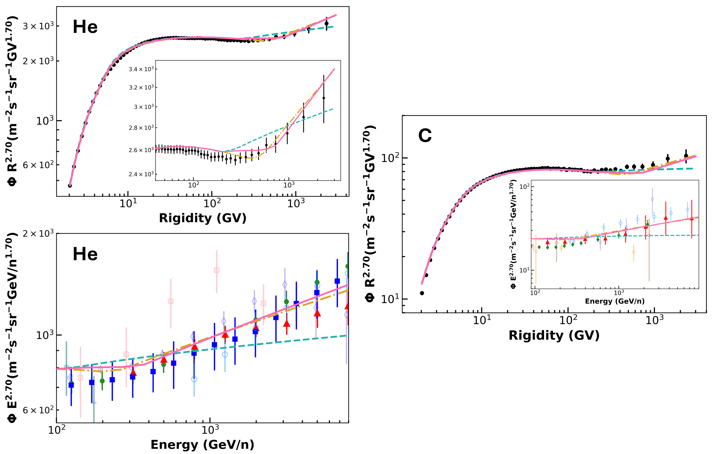<br />
图注：The results for the He data for Cases 1 (dashed teal line), 2 (dashed-dotted gold line), and 3 (solid pink line) are compared to the compiled data. A zoomed-in graph is shown above 40 GV in the top graph, also compared to the compiled data. The results are modulated spectra with $\phi_{AMS}$ = $533 \pm 2$ MV. The legend can be found in Figure \(\ref{pHardeningFig}.\)<br />
对应解读：对应“建议重点查看的图表”第1项多核种原初谱中的He谱、第3项三种硬化情景比较，以及“关键图表逐图导读”图2关于p与He是否需要不同注入指数的讨论。<br />
入选理由：氦谱与质子谱共同决定原初核硬化是否具有普遍性。该图同样比较三种硬化情景，并含40 GV以上放大图，可直接检查He在约200 GV处的硬化及其与p谱的差异。<br />
来源与置信度：\(arxiv_source\)；high；\(arxiv_source\) / mainDoc.tex:figure[3]</p>
<p><strong>Fig08</strong><br />
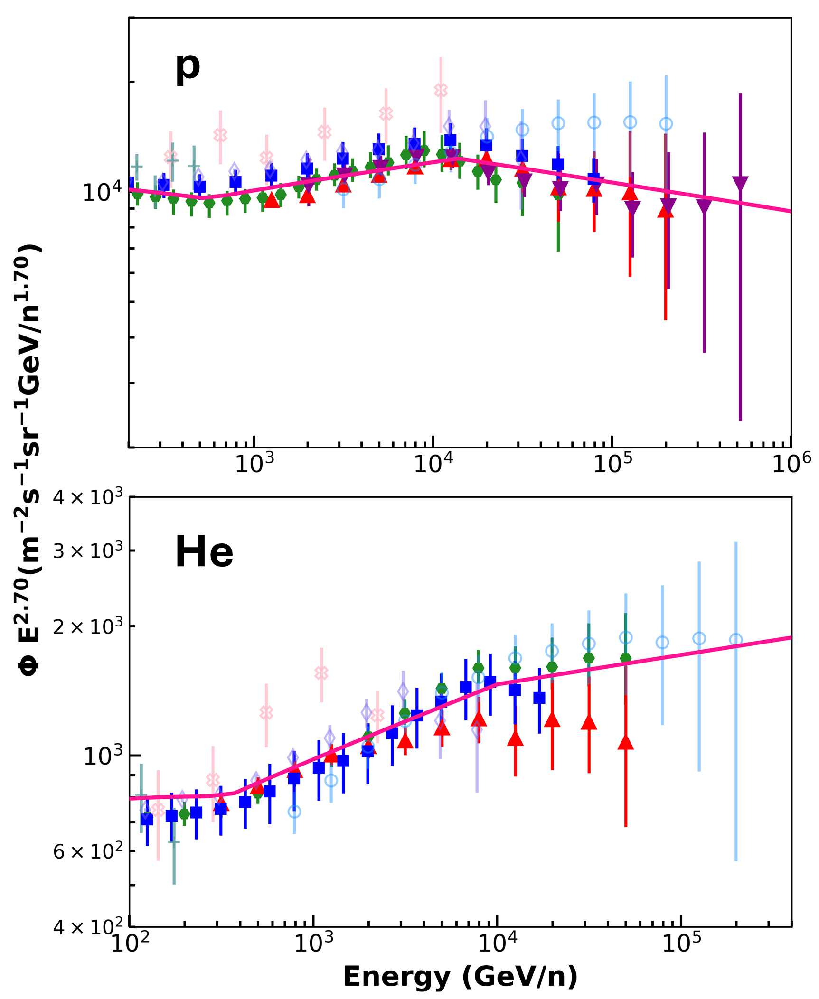<br />
图注：The results for the p and He data, after fitting above $R_2$ (solid pink line), are compared with the compiled data, the legend for which can be found in Figure \(\ref{pHardeningFig}.\)<br />
对应解读：对应“建议重点查看的图表”第4项高刚度p与He谱图，以及“关键图表逐图导读”图5关于10 TV到几十TV软化的解读。<br />
入选理由：这是专门在高刚度断裂R2以上重新拟合后的p和He结果，最直接支撑日报中关于质子约10 TV软化、氦在更高刚度软化以及额外高刚度注入断裂的讨论。<br />
来源与置信度：\(arxiv_source\)；high；\(arxiv_source\) / mainDoc.tex:figure[8]</p>
<p><strong>Fig09</strong><br />
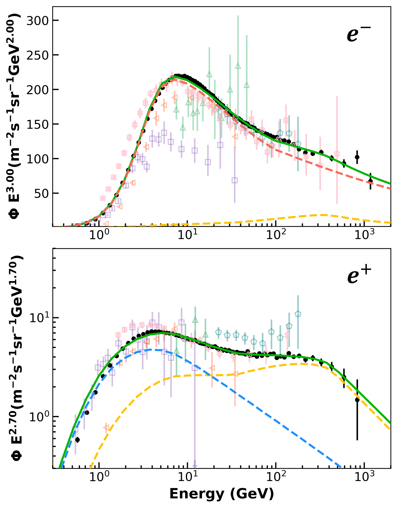<br />
图注：The results for the negative $e^{-}$ and $e^{+}$ data after introducing a charge-symmetric primary source are compared to the compiled data, the legend for which can be found in Figure \(\ref{ElecPosCasesFig}.\) In the top graph, the primary $e^{-}$ result (dashed red line), charge-symmetric $e^{+}$ result (dashed yellow line), and sum of these two results (solid green line) are shown. In the bottom graph, the secondary $e^{+}$ result (dashed blue line), charge-symmetric $e^{+}$ result (dashed yellow line), and sum of these two results (solid green line) are shown. The results are modulated spectra with $\phi_{AMS}$ = $533 \pm 2$ MV.<br />
对应解读：对应“建议重点查看的图表”第5项正电子通量或正电子分数图，以及“关键图表逐图导读”图6和模型拟合段落中额外正电子源项的诊断。<br />
入选理由：该图明确展示加入电荷对称初级源后e-与e+的分量分解，包括primary e-、secondary e+、charge-symmetric e+及总和，最适合说明标准次级正电子不足以及额外源如何改善高能正电子超额。<br />
来源与置信度：\(arxiv_source\)；high；\(arxiv_source\) / mainDoc.tex:figure[9]</p>
<p><strong>Fig10</strong><br />
<br />
图注：The calculated all-particle spectrum (black solid line) is compared with the compiled data. GALPROP v57 results for p (solid red line), He (solid blue line), C (dashed green line), N (dashed-double-dotted blue line), O (dash-dotted blue line), Ne (solid green line), Mg (dashed-dotted green line), Si (dashed green line), S (dotted green line), and Fe (dotted blue line) are also compared with the compiled data. All-particle data legend: red filled squares -- ATIC-2 \(\citep{Panov_2009},\) gold right-pointing open triangles -- CASA-MIA \(\citep{GLASMACHER1999291},\) teal open wide diamonds -- GAMMA \(\citep{2014PhRvD..89l3003T},\) light pink filled pentagons -- HAWC QGSJET-II-04 \(\citep{2022icrc.confE.330M},\) orange open thick pluses -- HEGRA \(\citep{2000A&A...359..682H},\) purple filled diamonds -- IceTop QGSJET-II-04 \(\citep{2020PhRvD.102l2001A},\) burgundy filled dots -- KASCADE-GRANDE \(\citep{2017ICRC...35..316A},\) light blue filled octagons -- LHAASO Sibyll 2.3d \(\citep{PhysRevLett.132.131002},\) grey filled circles -- NUCLEON-KLEM \(\citep{2019AdSpR..64.2546G},\) yellow green upward-pointing filled triangles -- TALE \(\citep{2018ApJ...865...74A},\) medium green right-pointing filled triangles -- TIBET QGSJET-I+HD \(\citep{Amenomori_2008},\) and light purple thin pluses -- TUNKA-133 \(\citep{2014NIMPA.756...94P}.\) Direct measurement data are shown as solid dots: p, He, C, O, and Fe from CALET \(\citep{PhysRevLett.125.251102, PhysRevLett.126.241101, PhysRevLett.129.101102, PhysRevLett.130.171002}\); p and He from CREAM-I+III \(\citep{2017ApJ...839....5Y}\); C, N, O, Ne, Mg, and Si from CREAM-II \(\citep{2009ApJ...707..593A}\); p and He from DAMPE \(\citep{2019SciA....5.3793A}\); p from ISS-CREAM \(\citep{2022ApJ...940..107C}\); S from \(\citet{1997APh.....6..155K}\) and \(\citet{1993PhRvD..48.1949I}.\)<br />
对应解读：对应“建议重点查看的图表”第6项全粒子谱图，以及“关键图表逐图导读”图7关于直接探测元素谱外推与全粒子谱连续性的讨论。<br />
入选理由：该图同时给出GALPROP各元素分量和计算得到的全粒子谱，并与直接探测和空气簇射全粒子数据比较，是检验各元素谱加和、高刚度软化对总谱形影响以及膝区前连续性的关键图。<br />
来源与置信度：\(arxiv_source\)；high；\(arxiv_source\) / mainDoc.tex:figure[10]</p>
<h4 id="_111">强相关工作</h4>
<p>这篇工作属于宇宙线谱结构全局传播建模，与 \(\mathrm{PAMELA}\)、\(\mathrm{AMS}\text{-}02\)、\(\mathrm{CREAM}\)、\(\mathrm{CALET}\)、\(\mathrm{DAMPE}\) 关于 \(p\)、\(\mathrm{He}\)、电子/正电子和次级/原初比值的观测结果直接相关。可检索关键词包括“cosmic ray spectral hardening 200 GV”、“AMS-02 B/C hardening”、“CREAM proton helium softening”、“DAMPE CALET proton spectrum”、“GALPROP diffusion break injection break”。同类工作通常分为两派：一类强调传播扩散系数断裂，另一类强调源注入谱断裂或多个源族群混合；也有工作用局域源或非均匀扩散解释。</p>
<p>与正电子超额相关的文献更广，包括脉冲星解释、暗物质解释、次级产生增强解释和传播模型系统误差研究。本文采用额外正电子源项，属于较保守的现象学处理。读者若要追踪相反观点，可检索“positron excess pulsar dark matter secondary production”、“AMS-02 positron fraction GALPROP”、“nearby pulsars Geminga Monogem positron excess”。需要注意，本文不是某个单一事件或单一源的论文，而是同类宇宙线观测特征的统一建模研究；因此 source context 应理解为同类观测、原型实验结果和传播代码基础文献。</p>
<p><strong>同一事件 / 同类源线索</strong>：</p>
<ul>
<li><a href="https://arxiv.org/abs/2607.05606">https://arxiv.org/abs/2607.05606</a></li>
<li><a href="https://galprop.stanford.edu">https://galprop.stanford.edu</a></li>
</ul>
<p><strong>相似工作</strong>：</p>
<ul>
<li><a href="https://arxiv.org/abs/1410.1651">https://arxiv.org/abs/1410.1651</a></li>
<li><a href="https://arxiv.org/abs/1308.5001">https://arxiv.org/abs/1308.5001</a></li>
</ul>
<p><strong>基础理论 / 方法工作</strong>：</p>
<ul>
<li><a href="https://arxiv.org/abs/astro-ph/9807150">https://arxiv.org/abs/astro-ph/9807150</a></li>
<li><a href="https://galprop.stanford.edu">https://galprop.stanford.edu</a></li>
</ul>
<p><strong>相反观点 / 张力线索</strong>：</p>
<p>（未提供）</p>
</details>
<h3 id="11-finite-field-qed-corrections-to-vacuum-birefringence-and-magnetar-polarization-transport">11. Finite-Field QED Corrections to Vacuum Birefringence and Magnetar Polarization Transport</h3>
<ul>
<li>来源：arXiv / astro-ph.HE</li>
<li>链接：https://arxiv.org/abs/2607.06422v1</li>
<li>作者：S. Abbassi, F. A. Chishtie, S. R. Valluri</li>
<li>评分：novelty 8/10，importance 7/10，relevance 8/10，final 8.65/10</li>
<li>推荐理由：Finite-field QED corrections for magnetar polarization transport are directly relevant to high-energy compact objects and future X-ray polarimetric tests; useful theoretical constraints even though not gamma-ray focused.</li>
</ul>
<p><strong>中文题目</strong>：有限磁场 QED 修正如何改变磁星真空双折射与偏振输运</p>
<p><strong>做了什么</strong>：这篇论文重新计算了强磁场中低能光子的真空双折射，不再把一圈 Heisenberg--Euler 有效理论中的折射率归一化因子按弱场展开，而是在常磁场、一圈近似内保留对磁场强度 \(B/B_{\rm cr}\) 的完整依赖。作者把这种“有限场”修正接入磁星偏振输运问题，比较了它对偏振限制半径、近表面相位积累、等离子体--真空共振密度和绝热转换能量的影响。结论很清楚：偏振限制半径几乎不变，因为模式解耦发生在约 \(10^2R_{\rm NS}\) 的弱场区；但近表面双折射相位和真空共振条件会显著改变，尤其对表面磁场接近或超过临界场 \(B_{\rm cr}\) 的磁星，弱场 Cotton--Mouton 公式可给出明显偏差。</p>
<p><strong>为什么重要</strong>：磁星是少数能够在天体尺度上检验强场 QED 的环境。过去很多磁星偏振模型使用 \(B\ll B_{\rm cr}\) 的弱场近似，但典型磁星表面磁场可达 \(10^{14}\) 到 \(10^{15}\,\mathrm{G}\)，已经接近或超过 \(B_{\rm cr}\)。这篇文章指出：若观测量主要由远离中子星的弱场区决定，弱场近似仍然可靠；但若观测量由表面附近或真空共振层决定，有限场修正不可忽略。这为解释 IXPE 及未来 X 射线偏振仪的磁星数据提供了更精确的理论基线。</p>
<p><strong>理论 / 观测 / 仪器方法价值</strong>：理论价值在于把一圈 Heisenberg--Euler 有效作用的有限场本构关系系统地转化为可用于磁星偏振传播的折射率与共振条件，而不是只停留在弱场双折射系数。观测价值在于指出最敏感的检验通道不是偏振限制半径本身，而是等离子体--真空共振相关的谱偏振特征，例如共振密度、模式转换能量和相位积累。方法价值在于区分了“严格截断到 \(\mathcal O(\alpha)\)”与“重求和的一圈本构模型”的物理含义，提醒读者不要把重求和模型中的高场结构直接视为已被高阶 QED 验证的结论。</p>
<p><strong>为什么应该关注</strong>：如果你关心磁星 X 射线偏振、强场 QED、辐射输运或等离子体--真空模式转换，这篇文章给出一个实用判断：哪些偏振可观测量对有限场 QED 敏感，哪些其实主要由弱场外磁层决定。它也告诉观测者，寻找强场 QED 的最佳策略可能不是只测整体偏振角冻结半径，而是把能量依赖的偏振度、偏振角跃迁和源到源的磁场强度差异结合起来。</p>
<details class="paper-detail">
<summary>展开详细解读：文章讲解、背景、理论、重点章节、图表与相关工作</summary>
<h4 id="_112">文章详细讲解</h4>
<p>科学问题：强磁场真空不是普通真空。按照 QED，一圈电子涨落会让外磁场中的真空表现为各向异性介质，两种线偏振本征模具有不同折射率，即真空双折射。磁星表面磁场可达到 \(10^{14}\) 到 \(10^{15}\,\mathrm{G}\)，与电子临界磁场 \(B_{\rm cr}=m_e^2c^3/(e\hbar)\) 同量级甚至更高。许多磁星偏振输运计算沿用了弱场 Cotton--Mouton 极限，即把双折射写成 \(B^2\) 的最低阶项。本文要问的是：当保留一圈 Heisenberg--Euler 理论中对 \(B/B_{\rm cr}\) 的有限场依赖时，磁星偏振传播的哪些结论会变，哪些几乎不变。</p>
<p>作者怎么做：文章首先在低能光子、常磁场和一圈 QED 有效作用框架内计算两种偏振模的折射率，并特别保留折射率归一化因子 \(\gamma_s\)，不把它作弱场展开。这里的“有限场”不是指任意强场、任意频率的完整 QED，而是指在一圈、常场、低能近似中对 \(B/B_{\rm cr}\) 的函数依赖作精确处理。随后作者把折射率差 \(\Delta n\) 沿磁星偶极磁场积分，计算双折射相位积累、偏振限制半径以及等离子体--真空共振条件，并选取典型磁星，包括 \(1E~1547.0{-}5408\)、\(1RXS~J1708{-}4009\) 和 \(SGR~1806{-}20\)，比较弱场公式与有限场公式。</p>
<p>关键结果：最反直觉的结果是偏振限制半径几乎不受影响，变化小于 \(10^{-12}\) 量级。原因并不神秘：偏振模式真正解耦的区域在约 \(10^2R_{\rm NS}\)，那里的偶极场已经按 \(r^{-3}\) 衰减到远低于 \(B_{\rm cr}\)，所以有限场修正已经退回弱场极限。相反，近表面相位积累明显受影响；在 \(10^{15}\,\mathrm{G}\) 量级，弱场 Cotton--Mouton 表达式可把累计双折射相位高估到约 \(2.9\) 倍。对等离子体--真空共振，有限场修正更敏感：对 \(1E~1547.0{-}5408\)，共振密度降低约 \(32\%\)，绝热转换能量升高约 \(14\%\)；对 \(1RXS~J1708{-}4009\)，对应变化为约 \(2.6\) 倍和 \(1.37\) 倍；对 \(SGR~1806{-}20\)，变化可达约 \(9.7\) 倍和 \(2.13\) 倍，说明强场渐近行为开始主导。</p>
<p>局限和下一步：文章的有效性边界很重要。它使用的是一圈 Heisenberg--Euler 常场低能近似，没有处理高能光子接近成对产生阈值、快速变化磁场、真实大气辐射转移、复杂磁层电流或高阶环图修正。作者还指出，重求和的一圈平行模磁响应保持正值，并在约 \(17B_{\rm cr}\) 附近出现宽峰；而严格截断的 \(\mathcal O(\alpha)\) 响应是单调的。因此这个峰是重求和一圈本构模型的结构性预测，但峰的精确位置和轮廓必须等待高阶修正检验。下一步自然是把这些有限场系数放进完整磁星大气和磁层偏振转移代码，与 IXPE 和未来任务的能量分辨偏振观测直接比较。</p>
<h4 id="_113">关键结果是怎么做出来的</h4>
<p>本文的核心证据链从有限场折射率开始，而不是从观测数据拟合开始。样本不是大规模源表，而是选取具有代表性磁场强度的磁星个例，重点包括 \(1E~1547.0{-}5408\)、\(1RXS~J1708{-}4009\) 和 \(SGR~1806{-}20\)。作者用这些源展示不同 \(B/B_{\rm cr}\) 区间的物理后果：中等强场时修正主要是百分之几十到数倍，极强场源则进入强场渐近控制的 regime。</p>
<p>第一个关键结果是偏振限制半径的“不变性”。作者在居中偶极模型中沿光线路径计算模式相位差和绝热性，比较弱场 Cotton--Mouton 折射率与有限场折射率得到的解耦半径。支撑这一结论的诊断量应是 \(r\) 方向的 \(\Delta n(r)\)、绝热参数或相位积累速率。统计意义上这不是一个事件显著性问题，而是一个模型比较问题；判据是同一磁场几何和同一光子能量下，有限场与弱场模型给出的 \(r_{\rm pl}\) 相对差异小于 \(10^{-12}\)。</p>
<p>第二个关键结果是近表面累计相位显著改变。这里的数据链是把局部折射率差 \(\Delta n(B)\) 沿近星表区域积分得到相位 \(\Delta\Phi\)。因为 \(B(r)\) 在表面附近最大，有限场修正最明显。论文报告在 \(10^{15}\,\mathrm{G}\) 时弱场表达式可把相位高估至约 \(2.9\) 倍。读者应关注相位随 \(B_p\)、半径上限、光子能量和传播角的曲线，而不是只看最终一句“高估”。若积分权重集中在表面少数个 \(R_{\rm NS}\) 内，任何表面磁场、发射高度和磁场几何假设都会成为系统误差。</p>
<p>第三个关键结果是真空共振量的强敏感性。等离子体项和 QED 真空项符号相反或可相互抵消时，会出现模式混合最强的共振层。有限场修正改变真空极化系数，于是直接改变共振密度和绝热转换能量。作者给出三个源的数值变化：\(1E~1547.0{-}5408\) 的 \(\rho_V\) 降低约 \(32\%\)、\(E_{\rm ad}\) 升高约 \(14\%\)；\(1RXS~J1708{-}4009\) 的变化约为 \(2.6\) 与 \(1.37\) 倍；\(SGR~1806{-}20\) 的变化约为 \(9.7\) 与 \(2.13\) 倍。这些数字应来自同一源参数下有限场模型与弱场模型的比值表或曲线。</p>
<p>稳健性方面，最重要的不是泊松误差或观测置信区间，而是理论系统误差。首先，一圈常场近似在高场下是否足够，需要二圈和更高阶修正检查。其次，居中偶极只是最简几何，真实磁星表面可能有强多极场；这会改变近表面相位和共振层分布，但不会轻易改变远处 \(r_{\rm pl}\) 由弱场区控制的结论。第三，等离子体密度、成分、电离状态和大气温度会与 QED 系数退化，因此未来用观测检验时必须联合谱、偏振度和偏振角能量依赖，而不能只用单一共振能量。</p>
<details class="paper-subdetail">
<summary>展开背景、理论、公式、模型、章节和图表导读</summary>
<h4 id="_114">背景知识</h4>
<p>研究对象是真空在强磁场中的电磁响应。经典电动力学中，真空的折射率为 \(1\)，不会像晶体一样产生双折射。但量子电动力学允许虚电子--正电子对在外场中极化真空，使真空获得非线性介电和磁化响应。Heisenberg--Euler 有效作用就是低能、缓变外场条件下描述这种效应的经典工具。</p>
<p>历史上，强磁场真空双折射长期被视为 QED 的基本预言之一，但实验直接检验很困难。地面实验磁场远低于 \(B_{\rm cr}\)，路径长度虽可用光学腔增强，但信号仍极弱。中子星和磁星提供了天然强场实验室；在 \(B\sim10^{13}\) 到 \(10^{15}\,\mathrm{G}\) 的磁场中，X 射线偏振可以在传播过程中被真空双折射重塑。近年来 IXPE 等 X 射线偏振任务使这一问题从理论预言转向可观测诊断。</p>
<p>一个老问题是弱场公式够不够用。弱场 Cotton--Mouton 极限给出双折射 \(\Delta n\propto B^2\)，在普通脉冲星或磁星外磁层远区通常很好。但磁星表面附近 \(B/B_{\rm cr}\) 不再小，继续使用最低阶 \(B^2\) 展开可能在相位积累、共振条件和模式转换上引入系统偏差。本文正是把这个问题拆开：并非所有偏振量都同样敏感，远处冻结的几何量可能不敏感，近表面和共振层量却很敏感。</p>
<p>为什么现在值得重看？因为偏振观测已经进入能量分辨阶段，理论误差不能再简单吸收到“未知磁场几何”里。磁星偏振度和偏振角的能量依赖可能携带等离子体--真空共振、模式转换和表面辐射各向异性的信息。如果 QED 真空项本身用错了近似，后续对大气成分、磁场强度或磁层电流的解释都会偏移。</p>
<p>常见误区有两个。第一，把 \(B>B_{\rm cr}\) 误解为 QED 理论失效；实际上低能常场的一圈有效作用仍可给出受控信息，但高阶环图和非局域效应可能变重要。第二，把观测到高偏振度直接等同于“测到了强场 QED”。高偏振度也受表面发射机制、几何平均、磁层散射和仪器响应影响；真正有判别力的是随能量、相位和源磁场强度系统变化的偏振特征。</p>
<h4 id="_115">基础理论 / 方法脉络</h4>
<p>基础物理图像是：外磁场使虚电子--正电子对的涨落具有方向性，电磁波的电场若平行或垂直于外磁场投影，会看到不同的有效介电常数和磁导率。于是两种线偏振本征模以略不同的相速度传播，产生相位差。这个相位差若沿路径积累得足够多，会让偏振态绝热跟随局部磁场方向；当双折射变弱到不足以维持跟随时，偏振方向在所谓偏振限制半径附近冻结。</p>
<p>本文采用的低能近似要求光子能量远低于电子静能，并且外磁场在一个电子 Compton 波长尺度上近似恒定。对磁星 X 射线传播的大部分区域，这通常是合理的近似，尤其讨论的是折射率和模式传播而非高能成对产生。文章中的“有限场”是指在这个一圈有效理论框架内不再把 \(B/B_{\rm cr}\) 展开到最低阶，而不是说包含了所有强场 QED 修正。</p>
<p>磁星偏振输运还需要磁场几何。论文使用居中偶极模型，表面附近磁场强，远处按 \(B\propto r^{-3}\) 下降。偏振限制半径位于远区，因此局部 \(B/B_{\rm cr}\) 很小，弱场公式自然恢复。这解释了为什么 \(r_{\rm pl}\) 对有限场修正极不敏感；它主要由远区折射率差、光线几何和光子能量决定，而不是由表面最高磁场直接决定。</p>
<p>等离子体--真空共振则不同。等离子体对介电张量的贡献通常随电子密度和光子频率变化，而真空极化项随磁场变化。当两者大小相当并在本征模混合中相互抵消时，模式性质会快速变化，可能发生类似中微子 MSW 效应的绝热转换。共振密度和转换能量直接依赖真空极化系数，因此有限场 QED 系数会被放大成可观测差异。</p>
<p>主要退化和系统误差来自几何、等离子体和辐射源。表面多极场可增强局部 \(B\)，改变相位积分和共振位置；磁层电流和对产生等离子体会改变密度剖面；大气温度、成分和离子运动会影响发射本征偏振。仪器上，能量响应、调制因子和背景会把真实偏振角跃迁或偏振度凹陷抹平。因此用本文理论检验强场 QED，需要前向建模而不是简单代入一个表面偶极场。</p>
<h4 id="_116">公式与推导</h4>
<p>第一步定义强场 QED 的自然尺度。电子回旋能量等于电子静能时对应临界磁场</p>
<div class="math-display">\[\nB_{\
m cr}=\
rac{m_e^2c^3}{e\hbar}\simeq4.414\	imes10^{13}\\,{\
m G},\]</div>
<p>其中 \(m_e\) 是电子质量，\(e\) 是元电荷，\(c\) 是光速，\(\hbar\) 是约化 Planck 常数。本文所有有限场效应都可以看作无量纲量 \(b=B/B_{\}\)<br />
m cr}) 的函数。</p>
<p>第二步从低能有效作用出发。弱场极限下，Heisenberg--Euler 修正可写成</p>
<div class="math-display">\[\mathcal L_{\
m HE}=\
rac{1}{8\pi}(E^2-B^2)+\
rac{\alpha^2\hbar^3}{90m_e^4c^5}\left[(E^2-B^2)^2+7(\mathbf E\cdot\mathbf B)^2\
ight],\]</div>
<p>这里 \(\alpha\) 是精细结构常数，\(\mathbf E\) 与 \(\mathbf B\) 是总电磁场。该式展示了真空非线性响应的来源；本文的关键是不用这个弱场多项式代替完整一圈常磁场函数。</p>
<p>?????????????????????</p>
<div class="math-display">\[\mathbf D=4\pi\frac{\partial\mathcal L}{\partial\mathbf E},\qquad \mathbf H=-4\pi\frac{\partial\mathcal L}{\partial\mathbf B},\]</div>
<p>???????????????????????????????????????????????? \(n_\perp\) ? \(n_\parallel\)?</p>
<p>??????????? Cotton--Mouton ??????????????? \(\theta_B\)????????</p>
<div class="math-display">\[\Delta n_{\rm weak}=n_\parallel-n_\perp\simeq \frac{\alpha}{30\pi}\left(\frac{B}{B_{\rm cr}}\right)^2\sin^2\theta_B,\]</div>
<p>??????????????????????????? \(\Delta n\propto b^2\)????????? \(b\sim1\) ????????????????????????</p>
<p>????????????????????????</p>
<div class="math-display">\[\Delta n_{\rm ff}(B,\theta_B)=\frac{\alpha}{4\pi}\,\mathcal F\!\left(\frac{B}{B_{\rm cr}}\right)\sin^2\theta_B,\]</div>
<p>?? \(\mathcal F(b)\) ?????? Heisenberg--Euler ????????????? \(\gamma_s\) ????????????? \(\mathcal F(b)\to Cb^2\)????? \(\mathcal F(b)\) ?????????</p>
<p>??????????????? \(s\) ?????????</p>
<div class="math-display">\[\Delta\Phi(E)=\frac{E}{\hbar c}\int \Delta n\big[B(s),\theta_B(s)\big]\\,ds,\]</div>
<p>?? \(E\) ???????? \(\Delta n_{\rm weak}\) ? \(\Delta n_{\rm ff}\) ???????????????????????????</p>
<p>?????????????????????????</p>
<div class="math-display">\[B(r)\simeq B_p\left(\frac{R_{\rm NS}}{r}\right)^3,\]</div>
<p>?? \(B_p\) ???????\(R_{\rm NS}\) ?????????? \(r\sim10^2R_{\rm NS}\) ???? \(B_p\sim10^{15}\,{\rm G}\)??? \(B\) ???????? \(B_{\rm cr}\)????????????????????</p>
<p>????????????????????????????????</p>
<div class="math-display">\[\Gamma_{\rm ad}(r)=\frac{\omega\Delta n(r)}{c\,|d\varphi_B/ds|},\qquad \Gamma_{\rm ad}(r_{\rm pl})\sim1,\]</div>
<p>?? \(\omega=E/\hbar\)?\(\varphi_B\) ????????????? \(r_{\rm pl}\) ??????? \(\Delta n_{\rm ff}\approx\Delta n_{\rm weak}\)?</p>
<p>第九步写出等离子体--真空共振的核心平衡。等离子体频率满足</p>
<div class="math-display">\[\omega_p^2=\
rac{4\pi n_e e^2}{m_e},\]</div>
<p>其中 \(n_e\) 是电子数密度。共振大致发生在等离子体介电修正与真空极化修正相当时，量级上可写为</p>
<div class="math-display">\[\
rac{\omega_p^2}{\omega^2}\sim \
rac{\alpha}{4\pi}\mathcal F\\!\left(\
rac{B}{B_{\
m cr}}\
ight).\]</div>
<p>因此共振密度 \(\rho_V\) 对 \(\mathcal F(b)\) 近似成反比或按模型中的相应组合缩放，有限场修正会直接移动共振层。</p>
<p>第十步把共振与绝热转换能量联系起来。若密度标高为 \(H_\rho=|ds/d\ln\\)<br />
ho|)，两模穿越共振的绝热性常写成类似 Landau--Zener 的形式</p>
<div class="math-display">\[\nP_{\
m jump}\simeq \exp\left[-\
rac{\pi}{2}\left(\
rac{E}{E_{\
m ad}}\
ight)^3\
ight],\]</div>
<p>其中 \(P_{\}\)<br />
m jump}) 是非绝热跃迁概率，(E_{\<br />
m ad}) 是绝热转换特征能量。本文报告的 (E_{\<br />
m ad}) 增大说明有限场修正让同一源参数下达到绝热模式转换所需的光子能量更高。</p>
<h4 id="_117">模型拟合 / 应用方法</h4>
<p>这篇文章本身更像理论和半解析模型比较，而不是对一组观测数据作后验拟合。拟合量可理解为模型输出量之间的比较：折射率差 \(\Delta n\)、累计相位 \(\Delta\Phi\)、偏振限制半径 \(r_{\rm pl}\)、真空共振密度 \(\rho_V\) 和绝热转换能量 \(E_{\rm ad}\)。核心对照组是弱场 Cotton--Mouton 近似，实验组是保留 \(\gamma_s\) 和完整 \(B/B_{\rm cr}\) 依赖的有限场一圈模型。</p>
<p>若把这类工作接入真实观测，似然通常会建立在 Stokes 参数或调制曲线上。给定源几何、表面温度图、磁场模型、大气成分和 QED 系数，前向模型产生能量与相位分辨的 \(I(E,\phi)\)、\(Q(E,\phi)\)、\(U(E,\phi)\)，再与 IXPE 类仪器的事件方位角分布比较。参数包括 \(B_p\)、倾角、观测角、紧致度、等离子体密度剖面和有限场 QED 模型选择。</p>
<p>主要退化关系很强。表面磁场 \(B_p\) 与发射高度、多极场成分会共同决定近表面相位；等离子体密度归一化与真空极化系数会共同决定 \(\rho_V\)；源几何和广义相对论光线弯曲会改变相位平均后的偏振度。若只拟合单能段平均偏振度，很难区分有限场 QED、复杂几何和磁层散射。最有信息量的是能量依赖的偏振角旋转、偏振度局部凹陷或峰值，以及不同磁场强度磁星之间的系统比较。</p>
<p>残差诊断应看模型在共振能量附近是否系统偏离。弱场模型若错误，可能表现为偏振角跃迁能量偏低或偏高、偏振度凹陷位置不对、不同相位 bin 的残差呈相干结构，而不仅是随机散点。有限场模型若仍失败，则可能说明一圈常场近似不足、等离子体模型过简、磁场不是居中偶极，或表面大气辐射物理缺失。</p>
<p>系统误差方面，理论截断是本文特别强调的一点。重求和一圈本构模型在高场下给出平行模磁响应的宽峰，但严格 \(\mathcal O(\alpha)\) 截断没有这个结构。因此在未来拟合中，不宜把该峰的位置当作无误差理论先验，而应把高阶 QED 不确定性纳入模型族比较。实际应用上，可以把弱场、有限场一圈、带高场不确定包络的模型同时放入贝叶斯证据或信息准则比较，检验数据是否真的需要有限场修正。</p>
<h4 id="_118">重点章节 / 结果段落怎么读</h4>
<p>数据和模型设定部分应先看作者如何定义“有限场”。重点确认其适用范围：低能光子、常磁场、一圈 Heisenberg--Euler 理论，以及保留折射率归一化因子 \(\gamma_s\)。这决定了全文结论不是任意强场 QED 的最终答案，而是一个明确近似层级内的改进。</p>
<p>折射率与本构关系部分是理论核心。读者应检查两种偏振模的折射率如何从有效作用得到，弱场极限是否回到 Cotton--Mouton 结果，强场渐近是否合理。尤其要注意严格截断 \(\mathcal O(\alpha)\) 与重求和一圈表达式的区别。</p>
<p>磁星偏振输运部分应关注从局部 \(\Delta n(B)\) 到全局 \(r_{\rm pl}\) 和 \(\Delta\Phi\) 的路径积分。这里最重要的物理点是偶极场快速衰减导致 \(r_{\rm pl}\) 位于弱场区，因此偏振冻结半径对表面有限场修正不敏感。</p>
<p>真空共振部分是最值得细读的结果段。作者给出不同磁星源的 \(\rho_V\) 和 \(E_{\rm ad}\) 改变量，说明有限场修正最容易通过等离子体--真空模式转换进入观测。读者应把这里的数字与源的表面磁场强度联系起来看。</p>
<p>讨论和局限部分应重点看高场磁响应的宽峰。这个峰出现在重求和一圈平行模响应中，约在 \(17B_{\rm cr}\) 附近，但其详细轮廓需要高阶环图验证。该段落对避免过度解读非常关键。</p>
<h4 id="_119">建议重点查看的图表</h4>
<ol>
<li>折射率差或 QED 极化系数随 \(B/B_{\rm cr}\) 的曲线：看有限场模型何时偏离 \(B^2\) 弱场标度，以及强场渐近是否平滑。</li>
<li>有限场与弱场的比值图：重点看 \(B\sim10^{14}\) 到 \(10^{15}\,\mathrm{G}\) 区间，因为这是磁星表面最相关的范围。</li>
<li>沿偶极磁层半径的 \(\Delta n(r)\)、相位积累率或绝热参数：确认 \(r_{\rm pl}\) 发生在 \(B\ll B_{\rm cr}\) 的远区。</li>
<li>累计相位 \(\Delta\Phi\) 随表面磁场或半径积分上限的图：检查弱场公式高估相位的因子是否由近表面少数区域主导。</li>
<li>真空共振密度 \(\rho_V\) 的模型比较表或曲线：看三个磁星个例的比值，尤其 \(SGR~1806{-}20\) 是否进入强场渐近控制。</li>
<li>绝热转换能量 \(E_{\rm ad}\) 的变化图：看有限场修正是否只改变归一化，还是也改变能量或磁场标度。</li>
<li>平行模磁响应随 \(B/B_{\rm cr}\) 的曲线：检查宽峰位置、峰宽，以及严格 \(\mathcal O(\alpha)\) 截断曲线是否单调。</li>
<li>稳健性或附录诊断：若有不同角度、不同源参数或不同近似阶数的比较，应优先检查这些图以判断结论是否依赖单一设定。</li>
</ol>
<h4 id="_120">关键图表逐图导读</h4>
<p>图 1：若论文给出有限场 QED 系数或折射率差随 \(B/B_{\rm cr}\) 的图，横轴通常应是 \(B/B_{\rm cr}\)，纵轴是 \(\Delta n\) 或归一化后的极化函数。数据点一般不是观测点，而是理论曲线。读图时要比较有限场曲线与弱场 \(B^2\) 标度线的分离位置；陷阱是不要把低场处两条线重合误读为全场范围都可用弱场公式。</p>
<p>图 2：若有比值图，横轴仍是 \(B/B_{\rm cr}\)，纵轴可能是 \(\Delta n_{\rm ff}/\Delta n_{\rm weak}\) 或相位比。主要结论是磁星表面强场区可出现数量级不小的修正，而远区趋近 \(1\)。读图时要关注 \(B\sim10^{15}\,\mathrm{G}\) 对应的 \(b\) 值；陷阱是忽略偶极场沿半径的快速下降，把表面比值直接套到偏振限制半径。</p>
<p>图 3：偏振输运图通常横轴为 \(r/R_{\rm NS}\)，纵轴为绝热参数、局部相位积累率或累计相位。模型线可能包括弱场与有限场两种。关键看 \(r_{\rm pl}\) 标记是否在 \(10^2R_{\rm NS}\) 附近，以及两条模型线在那里是否几乎重合。读图陷阱是被近表面大差异吸引，却忽略冻结判据实际在远区满足。</p>
<p>图 4：真空共振图或表可能以源名为横向分类，纵轴为 \(\rho_V\) 或 \(\rho_{V,{\rm ff}}/\rho_{V,{\rm weak}}\)。应看 \(1E~1547.0{-}5408\)、\(1RXS~J1708{-}4009\)、\(SGR~1806{-}20\) 的变化是否随磁场增强而单调放大。陷阱是把这些数值当作纯 QED 常数；它们还依赖源参数、密度模型和传播角设定。</p>
<p>图 5：绝热转换能量图通常展示 \(E_{\rm ad}\) 的有限场与弱场比较。横轴可能是磁场强度或源名，纵轴是能量或比值。主要结论是有限场修正提高 \(E_{\rm ad}\)，使模式转换条件发生可观偏移。读图时要注意能区是否落在实际 X 射线偏振仪敏感范围内。</p>
<p>图 6：磁响应曲线若出现，横轴为 \(B/B_{\rm cr}\)，纵轴为平行模磁响应或相关本构函数。有限场重求和一圈曲线出现宽峰，严格 \(\mathcal O(\alpha)\) 曲线单调。主要结论是峰属于重求和模型结构而非截断微扰的必然结论；陷阱是把约 \(17B_{\rm cr}\) 的峰位当成已由完整高阶 QED 精确确定。</p>
</details>
<h4 id="_121">论文原图 / 可嵌入图片</h4>
<p><strong>Fig05</strong><br />
<br />
图注：\(\textbf{Finite-field correction to the vacuum resonance.}\) \(\textbf{Panel (a):}\) exact-to-weak-field shift of the resonance density $\rho_{\rm res}^{\rm ex}/\rho_{\rm res}^{\rm wf}=R^{-1}$ and of the adiabatic mode-conversion energy $E_{\rm ad}^{\rm ex}/E_{\rm ad}^{\rm wf}=R^{1/3}$ [Eq.~(\ref{eq:vres_shifts})] versus the local field strength $\xi_{\rm loc}=B_{\rm loc}/B_{\rm cr}$, with the magnetars of Table~\(\ref{tab:vres}\) marked; the curves are dashed beyond the validated interval $\xi\leq30$, where the strong-field asymptote controls. \(\textbf{Panel (b):}\) Landau--Zener mode-conversion probability $P_{\rm con}(E)=1-\exp[-(\pi/2)(E/E_{\rm ad})^{3}]$ for 1E~1547.0$-$5408 ($\xi_{s}=4.53$), computed with the weak-field (dashed) and exact finite-field (solid) vacuum inputs for a fiducial $E_{\rm ad}^{\rm wf}=2$~keV; only the ratio $E_{\rm ad}^{\rm ex}/E_{\rm ad}^{\rm wf}=1.14$ is a prediction of this work. The shaded band marks the $3$--$4$~keV polarization-degree dip reported by the 500~ks IXPE campaign \(\cite{tav26}\); conversion is saturated across the band in either treatment, so present data cannot yet discriminate between the two inputs for this source.<br />
对应解读：对应“建议重点查看的图表”第5、6项，以及“关键图表逐图导读”图4、图5；也直接支撑模型比较段落中关于真空共振密度 \(rho_V\) 与绝热转换能量 \(E_ad\) 的有限场修正。<br />
入选理由：这是全文最敏感、最具观测指向性的结果图：同一图中给出共振密度 exact/weak 比值和绝热转换能量比值随局域 B/\(B_cr\) 的变化，并标出三个磁星个例；还包含 Landau--Zener 转换概率与 IXPE 相关能段的比较。它直接验证日报中 1E 1547.0-5408、1RXS J1708-4009、SGR 1806-20 的共振修正和 \(E_ad\) 提升结论，比单纯理论系数图更接近可观测偏振诊断。<br />
来源与置信度：\(arxiv_source\)；high；\(arxiv_source\) / main.tex:figure[5]</p>
<p><strong>Fig04</strong><br />
<br />
图注：\(\textbf{Finite-field correction to the polarization-limiting radius.}\) \(\textbf{Panel (a):}\) $r_{\rm pl}$ versus surface dipole field $B_{s}$ for photon energies $E=2$, $4$, $8$~keV, computed with the exact one-loop finite-field $\Delta n$ (solid) and with the weak-field Cotton--Mouton form (dashed, gray); the curves are indistinguishable at this scale. Vertical dotted lines mark the three fiducial surface fields of Table~\(\ref{tab:rpl}.\) \(\textbf{Panel (b):}\) the fractional difference $|r_{\rm pl}^{\rm exact}/r_{\rm pl}^{\rm wf}-1|$ at $4$~keV -- the internal convergence check -- which remains below $10^{-12}$ because $\xi(r_{\rm pl})\sim10^{-6}$ and the residual scales as $\xi^{2}(r_{\rm pl})$. \(\textbf{Panel (c):}\) where the weak-field formula \(\emph{does}\) fail: the local overestimation factor $\Delta n_{\rm wf}/\Delta n_{\rm exact}$ along the ray, for the three surface fields; colored dotted verticals mark $r_{\rm cr}$, the radius at which $B(r)=B_{\rm cr}$.<br />
对应解读：对应“建议重点查看的图表”第3、4项，以及“关键图表逐图导读”图3；支撑详细解读中偏振限制半径几乎不变、但近表面相位或局部双折射差异显著的结论。<br />
入选理由：该图同时展示 \(r_pl\) 随表面磁场和能量的有限场/弱场比较、\(r_pl\) 分数差小于 10^-12 的诊断，以及沿半径的弱场局部高估因子和 \(B=B_cr\) 半径标记。它最直接说明为什么远区偏振冻结不受影响，而近表面强场区仍会造成显著相位高估，是理解本文“变与不变”核心逻辑的关键图。<br />
来源与置信度：\(arxiv_source\)；high；\(arxiv_source\) / main.tex:figure[4]</p>
<p><strong>Fig01</strong><br />
<br />
图注：\(\textbf{Refractive index, vacuum birefringence, and laboratory ellipticity, computed from the exact one-loop finite-field expressions.}\) \(\textbf{Panel (a):}\) Refractive-index deviations $n_\parallel-1$ and $n_\perp-1$ at $\theta=\pi/2$ versus $\xi=B/B_{\rm cr}$ (solid), compared with the weak-field $\xi^2$ scaling (dashed). \(\textbf{Panel (b):}\) Vacuum birefringence $|\Delta n|=|n_\parallel-n_\perp|$ (solid), compared with the weak-field Cotton--Mouton form of Eq.~(\ref{eq:cotton_mouton}) (dashed). \(\textbf{Panel (c):}\) PVLAS-parameter ellipticity $\chi_{\rm QED}(B)$ of Eq.~(\ref{eq:ellipticity_weak}), for $\lambda=1064$~nm and $\ell_{\rm eff}=36$~km, with the PVLAS operating point $B=2.5$~T marked.<br />
对应解读：对应“建议重点查看的图表”第1、2项，以及“关键图表逐图导读”图1、图2中关于折射率差 Delta n、弱场 Cotton--Mouton 标度和有限场偏离的说明。<br />
入选理由：该图给出 \(n_parallel-1\)、\(n_perp-1\) 和 |Delta n| 随 B/\(B_cr\) 的有限场一圈曲线，并与弱场 \(B^2/Cotton--Mouton\) 近似直接对照，是后续磁层输运、相位积累和共振修正的基础输入。它能清楚显示弱场公式从何处开始失效，且包含实验室 PVLAS 椭圆率参照，有助于把理论系数与低场极限联系起来。<br />
来源与置信度：\(arxiv_source\)；high；\(arxiv_source\) / main.tex:figure[1]</p>
<p><strong>Fig03</strong><br />
<br />
图注：\(\textbf{Analytic peak characterization and magnetar field-strength context.}\) The finite-field one-loop response $\widehat{\mu}_{\gamma}^{(\parallel)}(\xi)$ with the resummed normalization (solid), the strictly truncated $\mathcal{O}(\alpha)$ response $\tfrac12\kappa_p'(\xi)$ (dash-dotted), which is monotonic and exhibits no maximum, the leading-order strong-field asymptote (dotted), and the maximum located by the extremum condition of Eq.~(\ref{eq:A_extremum}) (marker; exact value and closed-form estimate from Eq.~\(\ref{eq:A_peak_closed}\) both quoted). The $\simeq2\%$ splitting between the two response curves at the peak is the resummation effect discussed in Sec.~\(\ref{sec:peak_analytic}\); it is of the same formal order as omitted two-loop corrections \(\cite{rit75,gie17,kar19}.\) Vertical dashed lines mark the field strengths, expressed as $\xi=B/B_{\rm cr}$, of the magnetars already discussed in the text: 4U~0142+61, 1E~1547.0$-$5408, and 1RXS~J1708$-$4009 \(\cite{kas14}.\)<br />
对应解读：对应“建议重点查看的图表”第7、8项，以及“关键图表逐图导读”图6；也支撑模型拟合段落中关于高场理论截断和系统误差的讨论。<br />
入选理由：该图专门比较重求和一圈平行模磁响应、严格 O(alpha) 截断响应和强场渐近，并标出约 17 \(B_cr\) 的宽峰及磁星场强位置。它最适合说明日报强调的理论稳健性问题：宽峰是重求和模型结构而非截断微扰的必然结论，其峰位和轮廓不能作为无误差高阶 QED 先验。<br />
来源与置信度：\(arxiv_source\)；high；\(arxiv_source\) / main.tex:figure[3]</p>
<p><strong>Fig02</strong><br />
<br />
图注：\(\textbf{Numerical behavior of the finite-field photon magnetic response.}\) \(\textbf{Panel (a):}\) Vacuum magnetic birefringence $|\Delta n|$ as a function of $B/B_{\rm cr}$ over the studied range $0\leq\xi\leq30$ (inset: weak-field close-up, $\xi\leq2$), showing the weak-field scaling and the transition toward the strong-field regime. \(\textbf{Panel (b):}\) Normalized parallel-mode magnetic response $\widehat{\mu}_{\gamma}^{(\parallel)}$ computed from Eq.~(\ref{eq:mu_numerical_definition}), compared with the weak-field expansion and the leading-order strong-field asymptote. The response is positive throughout and increases monotonically up to a broad maximum near $\xi\simeq17$ (marked), after which it decreases by less than $1\%$ toward $\xi=30$; it does not approach the strong-field asymptote monotonically over the full interval shown. This shape belongs to the resummed one-loop normalization; the strictly truncated $\mathcal{O}(\alpha)$ response is monotonic (Sec.~\(\ref{sec:peak_analytic}\) and Fig.~\ref{fig:peak}). \(\textbf{Panel (c):}\) Angular ($\sin^2\theta$) dependence of the weak-field magnetic response for both eigenmodes, normalized to $\widehat{\mu}_{\gamma}^{(\parallel)}(\pi/2)$, illustrating the vanishing response for propagation parallel to the external field. \(\textbf{Panel (d):}\) Difference between the perpendicular and parallel magnetic responses, $\widehat{\mu}_{\gamma}^{(\parallel)}-\widehat{\mu}_{\gamma}^{(\perp)}$, showing the magnetic-response analogue of vacuum birefringence.<br />
对应解读：对应“建议重点查看的图表”第1、7项，以及“关键图表逐图导读”图1、图6中关于 Delta n、强场过渡、角度依赖和平行模磁响应的说明。<br />
入选理由：该图覆盖有限场磁响应的数值行为：包括 |Delta n| 从弱场到强场的过渡、平行模磁响应的宽峰、角度 \(sin^2\) theta 依赖以及两本征模响应差。虽然与 Fig01 和 Fig03 有部分重叠，但它提供了更完整的诊断量集合，尤其适合作为有限场 QED 系数和角度依赖的总览图。<br />
来源与置信度：\(arxiv_source\)；high；\(arxiv_source\) / main.tex:figure[2]</p>
<h4 id="_122">强相关工作</h4>
<p>这篇工作属于强场 QED 真空双折射与磁星偏振输运的交叉方向。相近工作包括早期基于 Heisenberg--Euler 有效作用的真空双折射理论、磁星大气中的等离子体--真空共振与模式转换模型、以及 IXPE 对磁星和孤立中子星偏振的观测论文。检索关键词可用 “Heisenberg Euler vacuum birefringence magnetar polarization”, “vacuum resonance magnetar atmosphere”, “IXPE magnetar polarization”, “finite field QED birefringence”。</p>
<p>同类和基础文献之间存在一个持续张力：弱场公式在许多实际偏振传播问题中非常成功，因为偏振冻结常发生在远区；但磁星表面和共振层恰好可能处在 \(B\sim B_{\rm cr}\) 或更高的区域。本文的贡献是把这个张力定量化，指出 \(r_{\rm pl}\) 不是最敏感通道，而 \(\rho_V\)、\(E_{\rm ad}\) 和近表面相位才是更好的强场 QED 探针。对于具名源 \(1E~1547.0{-}5408\)、\(1RXS~J1708{-}4009\) 和 \(SGR~1806{-}20\)，应分别检索同源 X 射线谱、定时、磁场估计和偏振观测；对于同类源，应查 magnetar catalog 与 IXPE magnetar observation papers。</p>
<p><strong>同一事件 / 同类源线索</strong>：</p>
<ul>
<li><a href="https://arxiv.org/abs/2607.06422">https://arxiv.org/abs/2607.06422</a></li>
<li><a href="https://www.physics.mcgill.ca/~pulsar/magnetar/main.html">https://www.physics.mcgill.ca/~pulsar/magnetar/main.html</a></li>
</ul>
<p><strong>相似工作</strong>：</p>
<ul>
<li><a href="https://arxiv.org/abs/astro-ph/0207424">https://arxiv.org/abs/astro-ph/0207424</a></li>
<li><a href="https://arxiv.org/abs/astro-ph/0208494">https://arxiv.org/abs/astro-ph/0208494</a></li>
<li><a href="https://arxiv.org/abs/astro-ph/0306180">https://arxiv.org/abs/astro-ph/0306180</a></li>
</ul>
<p><strong>基础理论 / 方法工作</strong>：</p>
<ul>
<li><a href="https://doi.org/10.1007/BF01343663">https://doi.org/10.1007/BF01343663</a></li>
<li><a href="https://doi.org/10.1103/RevModPhys.78.591">https://doi.org/10.1103/RevModPhys.78.591</a></li>
<li><a href="https://doi.org/10.1103/PhysRevD.10.492">https://doi.org/10.1103/PhysRevD.10.492</a></li>
</ul>
<p><strong>相反观点 / 张力线索</strong>：</p>
<p>（未提供）</p>
</details>
<h2 id="_123">说明</h2>
<p>评分由 LLM 给出初评，再由本地阈值策略过滤；IACT、TeV 伽马射线和高能中微子天文学按重点方向处理。</p>
    </main>
  </div>
</body>
</html>
